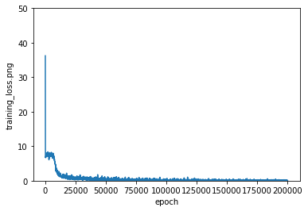
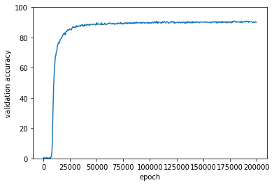
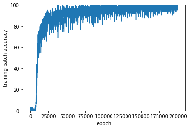
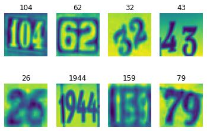

import numpy as np
import tensorflow as tf
import pickle5 as pickle
from matplotlib import pyplot as plt
import random
#necessary imports#load datasets and labels
all_data = pickle.load(open('D:/magistratura/magistratura/MO/lab4/SVHN_multi_crop_normalized_32.pickle', 'rb'))
train_data = all_data['train_dataset']
test_data = all_data['test_dataset']
valid_data = all_data['valid_dataset']
train_labels = all_data['train_labels']
test_labels = all_data['test_labels']
valid_labels = all_data['valid_labels']
del all_data#delete invalid data
train_labels = np.delete(train_labels, 19623, axis=0)
train_data = np.delete(train_data, 19623, axis=0)#one hot representaton for train labels
dataSize = train_labels.shape[0]
onehotLabels1 = np.zeros((dataSize, 7))
onehotLabels2 = np.zeros((dataSize, 10))
onehotLabels3 = np.zeros((dataSize, 10))
onehotLabels4 = np.zeros((dataSize, 10))
onehotLabels5 = np.zeros((dataSize, 10))
onehotLabels6 = np.zeros((dataSize, 10))
for i in range(dataSize):
labels = train_labels[i]
num_of_digits = labels[0]
onehotLabels1[i, num_of_digits] = 1
counter = 0
if counter < num_of_digits:
onehotLabels2[i, labels[1] % 10] = 1
if counter < num_of_digits:
onehotLabels3[i, labels[2] % 10] = 1
if counter < num_of_digits:
onehotLabels4[i, labels[3] % 10] = 1
if counter < num_of_digits:
onehotLabels5[i, labels[4] % 10] = 1
if counter < num_of_digits:
onehotLabels6[i, labels[5] % 10] = 1
trainOneHotLabels = [onehotLabels1, onehotLabels2, onehotLabels3, onehotLabels4, onehotLabels5, onehotLabels6]#one hot representaton for test labels
dataSize = test_labels.shape[0]
onehotLabels1 = np.zeros((dataSize, 7))
onehotLabels2 = np.zeros((dataSize, 10))
onehotLabels3 = np.zeros((dataSize, 10))
onehotLabels4 = np.zeros((dataSize, 10))
onehotLabels5 = np.zeros((dataSize, 10))
onehotLabels6 = np.zeros((dataSize, 10))
for i in range(dataSize):
labels = test_labels[i]
num_of_digits = labels[0]
onehotLabels1[i, num_of_digits] = 1
counter = 0
if counter < num_of_digits:
onehotLabels2[i, labels[1] % 10] = 1
if counter < num_of_digits:
onehotLabels3[i, labels[2] % 10] = 1
if counter < num_of_digits:
onehotLabels4[i, labels[3] % 10] = 1
if counter < num_of_digits:
onehotLabels5[i, labels[4] % 10] = 1
if counter < num_of_digits:
onehotLabels6[i, labels[5] % 10] = 1
testOneHotLabels = [onehotLabels1, onehotLabels2, onehotLabels3, onehotLabels4, onehotLabels5, onehotLabels6]#one hot representaton for validation labels
dataSize = valid_labels.shape[0]
onehotLabels1 = np.zeros((dataSize, 7))
onehotLabels2 = np.zeros((dataSize, 10))
onehotLabels3 = np.zeros((dataSize, 10))
onehotLabels4 = np.zeros((dataSize, 10))
onehotLabels5 = np.zeros((dataSize, 10))
onehotLabels6 = np.zeros((dataSize, 10))
for i in range(dataSize):
labels = valid_labels[i]
num_of_digits = labels[0]
onehotLabels1[i, num_of_digits] = 1
counter = 0
if counter < num_of_digits:
onehotLabels2[i, labels[1] % 10] = 1
if counter < num_of_digits:
onehotLabels3[i, labels[2] % 10] = 1
if counter < num_of_digits:
onehotLabels4[i, labels[3] % 10] = 1
if counter < num_of_digits:
onehotLabels5[i, labels[4] % 10] = 1
if counter < num_of_digits:
onehotLabels6[i, labels[5] % 10] = 1
validOneHotLabels = [onehotLabels1, onehotLabels2, onehotLabels3, onehotLabels4, onehotLabels5, onehotLabels6]#for grayscale images
num_channels = 1
image_size = 32
pixel_depth = 255.0#reshape from (183400, 32, 32) to (183400, 32, 32, 1)
train_data = train_data.reshape((-1, image_size, image_size, num_channels)).astype(np.float32)
test_data = test_data.reshape((-1, image_size, image_size, num_channels)).astype(np.float32)
valid_data = valid_data.reshape((-1, image_size, image_size, num_channels)).astype(np.float32)print('train_data shape is : %s' % (train_data.shape,))
print('test_data shape is : %s' % (test_data.shape,))
print('valid_data shape is : %s' % (valid_data.shape,))
print('train_labels shape is : %s' % (train_labels.shape,))
print('test_labels shape is : %s' % (test_labels.shape,))
print('valid_labels shape is : %s' % (valid_labels.shape,))
test_size = test_data.shape[0]
validation_size = valid_data.shape[0]
train_size = train_data.shape[0]train_data shape is : (183400, 32, 32, 1)
test_data shape is : (63067, 32, 32, 1)
valid_data shape is : (2353, 32, 32, 1)
train_labels shape is : (183400, 6)
test_labels shape is : (63067, 6)
valid_labels shape is : (2353, 6)
# number of digits + classifier for every one of 5 digits
num_classifiers = 6 # labels length of the first classifier which is the number of digits
num_digits_labels = 7
# labels length for the digit classifier
digits_labels = 10
# number of training images in a single iteration
batch_size = 64
# used to calculate test predictions over many iterations to avoid memory issues
test_batch_size = 457
# convolution filter size
patch_size = 5
# number of filters in first convolution layer
depth1 = 16
# number of filters in second convolution layer
depth2 = 32
# number of filters in third convolution layer
depth3 = 64
# the size of the unrolled vector after convolution
num_hidden1 = 1024
# the size of the hidden neurons in fully connected layer
num_hidden2 = 512
# the size of the hidden neurons in fully connected layer
num_hidden3 = 256 #graph of model
graph = tf.Graph()with graph.as_default():
# input data
tf_train_dataset = tf.placeholder(tf.float32, shape=(batch_size, image_size, image_size, num_channels))
#labels for every classifier
tf_train_labels_c1 = tf.placeholder(tf.float32, shape=(batch_size, num_digits_labels))
tf_train_labels_c2 = tf.placeholder(tf.float32, shape=(batch_size, digits_labels))
tf_train_labels_c3 = tf.placeholder(tf.float32, shape=(batch_size, digits_labels))
tf_train_labels_c4 = tf.placeholder(tf.float32, shape=(batch_size, digits_labels))
tf_train_labels_c5 = tf.placeholder(tf.float32, shape=(batch_size, digits_labels))
tf_train_labels_c6 = tf.placeholder(tf.float32, shape=(batch_size, digits_labels))
tf_train_labels = [tf_train_labels_c1,
tf_train_labels_c2,
tf_train_labels_c3,
tf_train_labels_c4,
tf_train_labels_c5,
tf_train_labels_c6]
#test data
tf_test_dataset = tf.placeholder(tf.float32, shape=(test_batch_size, image_size, image_size, num_channels))
#validation data
tf_validation_dataset = tf.constant(valid_data)
#to take one image and classify it (used in android)
tf_one_input = tf.placeholder(tf.float32, shape=(1, image_size, image_size, num_channels),name='one_input_placeholder')
# variables
# 5*5*1*16
conv1_weights = tf.get_variable('conv1_weights', shape=[patch_size, patch_size, num_channels, depth1],
initializer=tf.contrib.layers.xavier_initializer_conv2d())
conv1_biases = tf.Variable(tf.constant(1.0, shape=[depth1]))
# 5*5*16*32
conv2_weights = tf.get_variable('conv2_weights', shape=[patch_size, patch_size, depth1, depth2],
initializer=tf.contrib.layers.xavier_initializer_conv2d())
conv2_biases = tf.Variable(tf.constant(1.0, shape=[depth2]))
# 5*5*32*64
conv3_weights = tf.get_variable('conv3_weights', shape=[patch_size, patch_size, depth2, depth3],
initializer=tf.contrib.layers.xavier_initializer_conv2d())
conv3_biases = tf.Variable(tf.constant(1.0, shape=[depth3]))
# number of digits classifier
# 1024*512
hidden1_weights_c1 = tf.get_variable('hidden1_weights_c1', shape=[num_hidden1, num_hidden2],
initializer=tf.contrib.layers.xavier_initializer())
hidden1_biases_c1 = tf.Variable(tf.constant(1.0, shape=[num_hidden2]))
# 512*256
hidden2_weights_c1 = tf.get_variable('hidden2_weights_c1', shape=[num_hidden2, num_hidden3],
initializer=tf.contrib.layers.xavier_initializer())
hidden2_biases_c1 = tf.Variable(tf.constant(1.0, shape=[num_hidden3]))
# 256*7
hidden3_weights_c1 = tf.get_variable('hidden3_weights_c1', shape=[num_hidden3, num_digits_labels],
initializer=tf.contrib.layers.xavier_initializer())
hidden3_biases_c1 = tf.Variable(tf.constant(1.0, shape=[num_digits_labels]))
# first number classifier
# 1024*512
hidden1_weights_c2 = tf.get_variable('hidden1_weights_c2', shape=[num_hidden1, num_hidden2],
initializer=tf.contrib.layers.xavier_initializer())
hidden1_biases_c2 = tf.Variable(tf.constant(1.0, shape=[num_hidden2]))
# 512*256
hidden2_weights_c2 = tf.get_variable('hidden2_weights_c2', shape=[num_hidden2, num_hidden3],
initializer=tf.contrib.layers.xavier_initializer())
hidden2_biases_c2 = tf.Variable(tf.constant(1.0, shape=[num_hidden3]))
# 256*10
hidden3_weights_c2 = tf.get_variable('hidden3_weights_c2', shape=[num_hidden3, digits_labels],
initializer=tf.contrib.layers.xavier_initializer())
hidden3_biases_c2 = tf.Variable(tf.constant(1.0, shape=[digits_labels]))
# second number classifier
# 1024*512
hidden1_weights_c3 = tf.get_variable('hidden1_weights_c3', shape=[num_hidden1, num_hidden2],
initializer=tf.contrib.layers.xavier_initializer())
hidden1_biases_c3 = tf.Variable(tf.constant(1.0, shape=[num_hidden2]))
# 512*256
hidden2_weights_c3 = tf.get_variable('hidden2_weights_c3', shape=[num_hidden2, num_hidden3],
initializer=tf.contrib.layers.xavier_initializer())
hidden2_biases_c3 = tf.Variable(tf.constant(1.0, shape=[num_hidden3]))
# 256*10
hidden3_weights_c3 = tf.get_variable('hidden3_weights_c3', shape=[num_hidden3, digits_labels],
initializer=tf.contrib.layers.xavier_initializer())
hidden3_biases_c3 = tf.Variable(tf.constant(1.0, shape=[digits_labels]))
# third number classifier
# 1024*512
hidden1_weights_c4 = tf.get_variable('hidden1_weights_c4', shape=[num_hidden1, num_hidden2],
initializer=tf.contrib.layers.xavier_initializer())
hidden1_biases_c4 = tf.Variable(tf.constant(1.0, shape=[num_hidden2]))
# 512*256
hidden2_weights_c4 = tf.get_variable('hidden2_weights_c4', shape=[num_hidden2, num_hidden3],
initializer=tf.contrib.layers.xavier_initializer())
hidden2_biases_c4 = tf.Variable(tf.constant(1.0, shape=[num_hidden3]))
# 256*10
hidden3_weights_c4 = tf.get_variable('hidden3_weights_c4', shape=[num_hidden3, digits_labels],
initializer=tf.contrib.layers.xavier_initializer())
hidden3_biases_c4 = tf.Variable(tf.constant(1.0, shape=[digits_labels]))
# fourth number classifier
# 1024*512
hidden1_weights_c5 = tf.get_variable('hidden1_weights_c5', shape=[num_hidden1, num_hidden2],
initializer=tf.contrib.layers.xavier_initializer())
hidden1_biases_c5 = tf.Variable(tf.constant(1.0, shape=[num_hidden2]))
# 512*256
hidden2_weights_c5 = tf.get_variable('hidden2_weights_c5', shape=[num_hidden2, num_hidden3],
initializer=tf.contrib.layers.xavier_initializer())
hidden2_biases_c5 = tf.Variable(tf.constant(1.0, shape=[num_hidden3]))
# 256*10
hidden3_weights_c5 = tf.get_variable('hidden3_weights_c5', shape=[num_hidden3, digits_labels],
initializer=tf.contrib.layers.xavier_initializer())
hidden3_biases_c5 = tf.Variable(tf.constant(1.0, shape=[digits_labels]))
# fifth number classifier
# 1024*512
hidden1_weights_c6 = tf.get_variable('hidden1_weights_c6', shape=[num_hidden1, num_hidden2],
initializer=tf.contrib.layers.xavier_initializer())
hidden1_biases_c6 = tf.Variable(tf.constant(1.0, shape=[num_hidden2]))
# 512*256
hidden2_weights_c6 = tf.get_variable('hidden2_weights_c6', shape=[num_hidden2, num_hidden3],
initializer=tf.contrib.layers.xavier_initializer())
hidden2_biases_c6 = tf.Variable(tf.constant(1.0, shape=[num_hidden3]))
# 256*10
hidden3_weights_c6 = tf.get_variable('hidden3_weights_c6', shape=[num_hidden3, digits_labels],
initializer=tf.contrib.layers.xavier_initializer())
hidden3_biases_c6 = tf.Variable(tf.constant(1.0, shape=[digits_labels]))
# first conv bloc
conv = tf.nn.conv2d(tf_train_dataset, conv1_weights, [1, 1, 1, 1], padding='SAME')
conv = tf.nn.max_pool(value=conv, ksize=[1, 2, 2, 1], strides=[1, 2, 2, 1], padding='SAME')
conv = tf.nn.local_response_normalization(conv)
hidden = tf.nn.relu(conv + conv1_biases)
# second conv block
conv = tf.nn.conv2d(hidden, conv2_weights, [1, 1, 1, 1], padding='SAME')
conv = tf.nn.max_pool(value=conv, ksize=[1, 2, 2, 1], strides=[1, 2, 2, 1], padding='SAME')
conv = tf.nn.local_response_normalization(conv)
hidden = tf.nn.relu(conv + conv2_biases)
# third conv block
conv = tf.nn.conv2d(hidden, conv3_weights, [1, 1, 1, 1], padding='SAME')
conv = tf.nn.max_pool(value=conv, ksize=[1, 2, 2, 1], strides=[1, 2, 2, 1], padding='SAME')
conv = tf.nn.local_response_normalization(conv)
hidden = tf.nn.relu(conv + conv3_biases)
#flatten
shape = hidden.get_shape().as_list()
reshape = tf.reshape(hidden, [shape[0], shape[1] * shape[2] * shape[3]])
# first classifier
hidden = tf.nn.relu(tf.matmul(reshape, hidden1_weights_c1) + hidden1_biases_c1)
hidden = tf.nn.dropout(hidden, 0.7)
hidden = tf.nn.relu(tf.matmul(hidden, hidden2_weights_c1) + hidden2_biases_c1)
hidden = tf.nn.dropout(hidden, 0.7)
logits1 = tf.matmul(hidden, hidden3_weights_c1) + hidden3_biases_c1
# second classifier
hidden = tf.nn.relu(tf.matmul(reshape, hidden1_weights_c2) + hidden1_biases_c2)
hidden = tf.nn.dropout(hidden, 0.7)
hidden = tf.nn.relu(tf.matmul(hidden, hidden2_weights_c2) + hidden2_biases_c2)
hidden = tf.nn.dropout(hidden, 0.7)
logits2 = tf.matmul(hidden, hidden3_weights_c2) + hidden3_biases_c2
# third classifier
hidden = tf.nn.relu(tf.matmul(reshape, hidden1_weights_c3) + hidden1_biases_c3)
hidden = tf.nn.dropout(hidden, 0.7)
hidden = tf.nn.relu(tf.matmul(hidden, hidden2_weights_c3) + hidden2_biases_c3)
hidden = tf.nn.dropout(hidden, 0.7)
logits3 = tf.matmul(hidden, hidden3_weights_c3) + hidden3_biases_c3
# fourth classifier
hidden = tf.nn.relu(tf.matmul(reshape, hidden1_weights_c4) + hidden1_biases_c4)
hidden = tf.nn.dropout(hidden, 0.7)
hidden = tf.nn.relu(tf.matmul(hidden, hidden2_weights_c4) + hidden2_biases_c4)
hidden = tf.nn.dropout(hidden, 0.7)
logits4 = tf.matmul(hidden, hidden3_weights_c4) + hidden3_biases_c4
# fifth classifier
hidden = tf.nn.relu(tf.matmul(reshape, hidden1_weights_c5) + hidden1_biases_c5)
hidden = tf.nn.dropout(hidden, 0.7)
hidden = tf.nn.relu(tf.matmul(hidden, hidden2_weights_c5) + hidden2_biases_c5)
hidden = tf.nn.dropout(hidden, 0.7)
logits5 = tf.matmul(hidden, hidden3_weights_c5) + hidden3_biases_c5
# sixth classifier
hidden = tf.nn.relu(tf.matmul(reshape, hidden1_weights_c6) + hidden1_biases_c6)
hidden = tf.nn.dropout(hidden, 0.7)
hidden = tf.nn.relu(tf.matmul(hidden, hidden2_weights_c6) + hidden2_biases_c6)
hidden = tf.nn.dropout(hidden, 0.7)
logits6 = tf.matmul(hidden, hidden3_weights_c6) + hidden3_biases_c6
logits = [logits1, logits2, logits3, logits4, logits5, logits6]
#sum loss of all classifiers
loss = 0.0
for i in range(num_classifiers):
loss = loss + tf.reduce_mean(
tf.nn.softmax_cross_entropy_with_logits(labels=tf_train_labels[i], logits=logits[i]))
#run step
global_step = tf.Variable(0)
#learning rate with decay
learning_rate = tf.train.exponential_decay(0.001, global_step, 20000, 0.90, staircase=True)
# optimizer
optimizer = tf.train.AdamOptimizer(learning_rate=learning_rate)
#backprop
tvars = tf.trainable_variables()
grads, _ = tf.clip_by_global_norm(tf.gradients(loss, tvars), 1.0)
optimize = optimizer.apply_gradients(zip(grads, tvars),global_step=global_step)
# predictions for training data
prediction_c1 = tf.nn.softmax(logits[0])
prediction_c2 = tf.nn.softmax(logits[1])
prediction_c3 = tf.nn.softmax(logits[2])
prediction_c4 = tf.nn.softmax(logits[3])
prediction_c5 = tf.nn.softmax(logits[4])
prediction_c6 = tf.nn.softmax(logits[5])
train_prediction_c1 = prediction_c1
train_prediction_c2 = prediction_c2
train_prediction_c3 = prediction_c3
train_prediction_c4 = prediction_c4
train_prediction_c5 = prediction_c5
train_prediction_c6 = prediction_c6
# first conv bloc
conv = tf.nn.conv2d(tf_validation_dataset, conv1_weights, [1, 1, 1, 1], padding='SAME')
conv = tf.nn.max_pool(value=conv, ksize=[1, 2, 2, 1], strides=[1, 2, 2, 1], padding='SAME')
conv = tf.nn.local_response_normalization(conv)
hidden = tf.nn.relu(conv + conv1_biases)
# second conv block
conv = tf.nn.conv2d(hidden, conv2_weights, [1, 1, 1, 1], padding='SAME')
conv = tf.nn.max_pool(value=conv, ksize=[1, 2, 2, 1], strides=[1, 2, 2, 1], padding='SAME')
conv = tf.nn.local_response_normalization(conv)
hidden = tf.nn.relu(conv + conv2_biases)
# third conv block
conv = tf.nn.conv2d(hidden, conv3_weights, [1, 1, 1, 1], padding='SAME')
conv = tf.nn.max_pool(value=conv, ksize=[1, 2, 2, 1], strides=[1, 2, 2, 1], padding='SAME')
conv = tf.nn.local_response_normalization(conv)
hidden = tf.nn.relu(conv + conv3_biases)
#flatten
shape = hidden.get_shape().as_list()
reshape = tf.reshape(hidden, [shape[0], shape[1] * shape[2] * shape[3]])
# first classifier
hidden = tf.nn.relu(tf.matmul(reshape, hidden1_weights_c1) + hidden1_biases_c1)
hidden = tf.nn.relu(tf.matmul(hidden, hidden2_weights_c1) + hidden2_biases_c1)
logits1 = tf.matmul(hidden, hidden3_weights_c1) + hidden3_biases_c1
# second classifier
hidden = tf.nn.relu(tf.matmul(reshape, hidden1_weights_c2) + hidden1_biases_c2)
hidden = tf.nn.relu(tf.matmul(hidden, hidden2_weights_c2) + hidden2_biases_c2)
logits2 = tf.matmul(hidden, hidden3_weights_c2) + hidden3_biases_c2
# third classifier
hidden = tf.nn.relu(tf.matmul(reshape, hidden1_weights_c3) + hidden1_biases_c3)
hidden = tf.nn.relu(tf.matmul(hidden, hidden2_weights_c3) + hidden2_biases_c3)
logits3 = tf.matmul(hidden, hidden3_weights_c3) + hidden3_biases_c3
# fourth classifier
hidden = tf.nn.relu(tf.matmul(reshape, hidden1_weights_c4) + hidden1_biases_c4)
hidden = tf.nn.relu(tf.matmul(hidden, hidden2_weights_c4) + hidden2_biases_c4)
logits4 = tf.matmul(hidden, hidden3_weights_c4) + hidden3_biases_c4
# fifth classifier
hidden = tf.nn.relu(tf.matmul(reshape, hidden1_weights_c5) + hidden1_biases_c5)
hidden = tf.nn.relu(tf.matmul(hidden, hidden2_weights_c5) + hidden2_biases_c5)
logits5 = tf.matmul(hidden, hidden3_weights_c5) + hidden3_biases_c5
# sixth classifier
hidden = tf.nn.relu(tf.matmul(reshape, hidden1_weights_c6) + hidden1_biases_c6)
hidden = tf.nn.relu(tf.matmul(hidden, hidden2_weights_c6) + hidden2_biases_c6)
logits6 = tf.matmul(hidden, hidden3_weights_c6) + hidden3_biases_c6
logits = [logits1, logits2, logits3, logits4, logits5, logits6]
# predictions for validation data
prediction_c1 = tf.nn.softmax(logits[0])
prediction_c2 = tf.nn.softmax(logits[1])
prediction_c3 = tf.nn.softmax(logits[2])
prediction_c4 = tf.nn.softmax(logits[3])
prediction_c5 = tf.nn.softmax(logits[4])
prediction_c6 = tf.nn.softmax(logits[5])
valid_prediction_c1 = prediction_c1
valid_prediction_c2 = prediction_c2
valid_prediction_c3 = prediction_c3
valid_prediction_c4 = prediction_c4
valid_prediction_c5 = prediction_c5
valid_prediction_c6 = prediction_c6
# first conv bloc
conv = tf.nn.conv2d(tf_test_dataset, conv1_weights, [1, 1, 1, 1], padding='SAME')
conv = tf.nn.max_pool(value=conv, ksize=[1, 2, 2, 1], strides=[1, 2, 2, 1], padding='SAME')
conv = tf.nn.local_response_normalization(conv)
hidden = tf.nn.relu(conv + conv1_biases)
# second conv block
conv = tf.nn.conv2d(hidden, conv2_weights, [1, 1, 1, 1], padding='SAME')
conv = tf.nn.max_pool(value=conv, ksize=[1, 2, 2, 1], strides=[1, 2, 2, 1], padding='SAME')
conv = tf.nn.local_response_normalization(conv)
hidden = tf.nn.relu(conv + conv2_biases)
# third conv block
conv = tf.nn.conv2d(hidden, conv3_weights, [1, 1, 1, 1], padding='SAME')
conv = tf.nn.max_pool(value=conv, ksize=[1, 2, 2, 1], strides=[1, 2, 2, 1], padding='SAME')
conv = tf.nn.local_response_normalization(conv)
hidden = tf.nn.relu(conv + conv3_biases)
#flatten
shape = hidden.get_shape().as_list()
reshape = tf.reshape(hidden, [shape[0], shape[1] * shape[2] * shape[3]])
# first classifier
hidden = tf.nn.relu(tf.matmul(reshape, hidden1_weights_c1) + hidden1_biases_c1)
hidden = tf.nn.relu(tf.matmul(hidden, hidden2_weights_c1) + hidden2_biases_c1)
logits1 = tf.matmul(hidden, hidden3_weights_c1) + hidden3_biases_c1
# second classifier
hidden = tf.nn.relu(tf.matmul(reshape, hidden1_weights_c2) + hidden1_biases_c2)
hidden = tf.nn.relu(tf.matmul(hidden, hidden2_weights_c2) + hidden2_biases_c2)
logits2 = tf.matmul(hidden, hidden3_weights_c2) + hidden3_biases_c2
# third classifier
hidden = tf.nn.relu(tf.matmul(reshape, hidden1_weights_c3) + hidden1_biases_c3)
hidden = tf.nn.relu(tf.matmul(hidden, hidden2_weights_c3) + hidden2_biases_c3)
logits3 = tf.matmul(hidden, hidden3_weights_c3) + hidden3_biases_c3
# fourth classifier
hidden = tf.nn.relu(tf.matmul(reshape, hidden1_weights_c4) + hidden1_biases_c4)
hidden = tf.nn.relu(tf.matmul(hidden, hidden2_weights_c4) + hidden2_biases_c4)
logits4 = tf.matmul(hidden, hidden3_weights_c4) + hidden3_biases_c4
# fifth classifier
hidden = tf.nn.relu(tf.matmul(reshape, hidden1_weights_c5) + hidden1_biases_c5)
hidden = tf.nn.relu(tf.matmul(hidden, hidden2_weights_c5) + hidden2_biases_c5)
logits5 = tf.matmul(hidden, hidden3_weights_c5) + hidden3_biases_c5
# sixth classifier
hidden = tf.nn.relu(tf.matmul(reshape, hidden1_weights_c6) + hidden1_biases_c6)
hidden = tf.nn.relu(tf.matmul(hidden, hidden2_weights_c6) + hidden2_biases_c6)
logits6 = tf.matmul(hidden, hidden3_weights_c6) + hidden3_biases_c6
logits = [logits1, logits2, logits3, logits4, logits5, logits6]
# predictions for test data
prediction_c1 = tf.nn.softmax(logits[0])
prediction_c2 = tf.nn.softmax(logits[1])
prediction_c3 = tf.nn.softmax(logits[2])
prediction_c4 = tf.nn.softmax(logits[3])
prediction_c5 = tf.nn.softmax(logits[4])
prediction_c6 = tf.nn.softmax(logits[5])
test_prediction_c1 = prediction_c1
test_prediction_c2 = prediction_c2
test_prediction_c3 = prediction_c3
test_prediction_c4 = prediction_c4
test_prediction_c5 = prediction_c5
test_prediction_c6 = prediction_c6
# first conv bloc
conv = tf.nn.conv2d(tf_one_input, conv1_weights, [1, 1, 1, 1], padding='SAME')
conv = tf.nn.max_pool(value=conv, ksize=[1, 2, 2, 1], strides=[1, 2, 2, 1], padding='SAME')
conv = tf.nn.local_response_normalization(conv)
hidden = tf.nn.relu(conv + conv1_biases)
# second conv block
conv = tf.nn.conv2d(hidden, conv2_weights, [1, 1, 1, 1], padding='SAME')
conv = tf.nn.max_pool(value=conv, ksize=[1, 2, 2, 1], strides=[1, 2, 2, 1], padding='SAME')
conv = tf.nn.local_response_normalization(conv)
hidden = tf.nn.relu(conv + conv2_biases)
# third conv block
conv = tf.nn.conv2d(hidden, conv3_weights, [1, 1, 1, 1], padding='SAME')
conv = tf.nn.max_pool(value=conv, ksize=[1, 2, 2, 1], strides=[1, 2, 2, 1], padding='SAME')
conv = tf.nn.local_response_normalization(conv)
hidden = tf.nn.relu(conv + conv3_biases)
#flatten
shape = hidden.get_shape().as_list()
reshape = tf.reshape(hidden, [shape[0], shape[1] * shape[2] * shape[3]])
# first classifier
hidden = tf.nn.relu(tf.matmul(reshape, hidden1_weights_c1) + hidden1_biases_c1)
hidden = tf.nn.relu(tf.matmul(hidden, hidden2_weights_c1) + hidden2_biases_c1)
logits1 = tf.matmul(hidden, hidden3_weights_c1) + hidden3_biases_c1
# second classifier
hidden = tf.nn.relu(tf.matmul(reshape, hidden1_weights_c2) + hidden1_biases_c2)
hidden = tf.nn.relu(tf.matmul(hidden, hidden2_weights_c2) + hidden2_biases_c2)
logits2 = tf.matmul(hidden, hidden3_weights_c2) + hidden3_biases_c2
# third classifier
hidden = tf.nn.relu(tf.matmul(reshape, hidden1_weights_c3) + hidden1_biases_c3)
hidden = tf.nn.relu(tf.matmul(hidden, hidden2_weights_c3) + hidden2_biases_c3)
logits3 = tf.matmul(hidden, hidden3_weights_c3) + hidden3_biases_c3
# fourth classifier
hidden = tf.nn.relu(tf.matmul(reshape, hidden1_weights_c4) + hidden1_biases_c4)
hidden = tf.nn.relu(tf.matmul(hidden, hidden2_weights_c4) + hidden2_biases_c4)
logits4 = tf.matmul(hidden, hidden3_weights_c4) + hidden3_biases_c4
# fifth classifier
hidden = tf.nn.relu(tf.matmul(reshape, hidden1_weights_c5) + hidden1_biases_c5)
hidden = tf.nn.relu(tf.matmul(hidden, hidden2_weights_c5) + hidden2_biases_c5)
logits5 = tf.matmul(hidden, hidden3_weights_c5) + hidden3_biases_c5
# sixth classifier
hidden = tf.nn.relu(tf.matmul(reshape, hidden1_weights_c6) + hidden1_biases_c6)
hidden = tf.nn.relu(tf.matmul(hidden, hidden2_weights_c6) + hidden2_biases_c6)
logits6 = tf.matmul(hidden, hidden3_weights_c6) + hidden3_biases_c6
logits = [logits1, logits2, logits3, logits4, logits5, logits6]
# predictions for android input data.
prediction_c1 = tf.nn.softmax(logits[0])
prediction_c2 = tf.nn.softmax(logits[1])
prediction_c3 = tf.nn.softmax(logits[2])
prediction_c4 = tf.nn.softmax(logits[3])
prediction_c5 = tf.nn.softmax(logits[4])
prediction_c6 = tf.nn.softmax(logits[5])
one_prediction_c1 = prediction_c1
one_prediction_c2 = prediction_c2
one_prediction_c3 = prediction_c3
one_prediction_c4 = prediction_c4
one_prediction_c5 = prediction_c5
one_prediction_c6 = prediction_c6
one_prediction_c1, one_prediction_c2, one_prediction_c3, one_prediction_c4, one_prediction_c5, one_prediction_c6 = tf.identity(one_prediction_c1, name="one_prediction_c1"),tf.identity(one_prediction_c2, name="one_prediction_c2"),tf.identity(one_prediction_c3, name="one_prediction_c3"),tf.identity(one_prediction_c4, name="one_prediction_c4"),tf.identity(one_prediction_c5, name="one_prediction_c5"),tf.identity(one_prediction_c6, name="one_prediction_c6")
WARNING:tensorflow:From D:\Users\userr\anaconda3\envs\py365\lib\site-packages\tensorflow\contrib\learn\python\learn\datasets\base.py:198: retry (from tensorflow.contrib.learn.python.learn.datasets.base) is deprecated and will be removed in a future version.
Instructions for updating:
Use the retry module or similar alternatives.
WARNING:tensorflow:From <ipython-input-19-b1de83c8ad6e>:200: softmax_cross_entropy_with_logits (from tensorflow.python.ops.nn_ops) is deprecated and will be removed in a future version.
Instructions for updating:
Future major versions of TensorFlow will allow gradients to flow
into the labels input on backprop by default.
See tf.nn.softmax_cross_entropy_with_logits_v2.
num_steps = 200001 #number of training iterations
#used for drawing error and accuracy over time
training_loss = []
training_loss_epoch = []
train_accuracy = []
train_accuracy_epoch = []
valid_accuracy = []
valid_accuracy_epoch = []
test_prediction = []
test_accuracy=0with tf.Session(graph=graph, config=tf.ConfigProto(log_device_placement=True)) as session:
tf.global_variables_initializer().run()
saver = tf.train.Saver().
writer = tf.summary.FileWriter('D:/magistratura/magistratura/MO/lab4/graph_info', session.graph)
print('Initialized')
for step in range(num_steps):
#take batch data
batch_size = 64
offset = (step * batch_size) % (train_size - batch_size)
batch_data = train_data[offset:(offset + batch_size), :, :, :]
batch_labels = []
for i in range(num_classifiers):
batch_labels.append(trainOneHotLabels[i][offset:(offset + batch_size), :])
#create feed dict with batch data and batch labels
feed_dict = {tf_train_dataset: batch_data, tf_train_labels_c1: batch_labels[0],
tf_train_labels_c2: batch_labels[1], tf_train_labels_c3: batch_labels[2],
tf_train_labels_c4: batch_labels[3], tf_train_labels_c5: batch_labels[4],
tf_train_labels_c6: batch_labels[5]}
#run adam optimizer with optimize function
_, l, c1, c2, c3, c4, c5, c6, lr = session.run(
[optimize, loss, train_prediction_c1, train_prediction_c2, train_prediction_c3, train_prediction_c4,
train_prediction_c5, train_prediction_c6, learning_rate], feed_dict=feed_dict)
predictions = [c1, c2, c3, c4, c5, c6]
if (step % 50 == 0):
batch_size_init = predictions[0].shape[0]
#create predictions as string
batch_size = predictions[0].shape[0]
all_labels = []
for i in range(batch_size):
num_digits = np.argmax(predictions[0][i])
st = str(num_digits)
for j in range(1, num_classifiers):
if (j > num_digits):
break
st = st + str(np.argmax(predictions[j][i]))
all_labels.append(st)
predictions = all_labels
#create labels as string
batch_size = batch_labels[0].shape[0]
all_labels = []
for i in range(batch_size):
num_digits = np.argmax(batch_labels[0][i])
st = str(num_digits)
for j in range(1, num_classifiers):
if (j > num_digits):
break
st = st + str(np.argmax(batch_labels[j][i]))
all_labels.append(st)
labels = all_labels
#count the number of matches and non-matches
equalities = np.zeros(batch_size_init)
for i in range(batch_size_init):
if predictions[i] == labels[i]:
equalities[i] = 1
sum = np.sum(equalities)
#calc accuracy
acc = (100.0 * sum) / batch_size_init
print('Learning rate at step %d: %.14f' % (step, lr))
print('Minibatch loss at step %d: %f' % (step, l))
batch_train_accuracy = acc
print('Minibatch accuracy: %.1f%%' % batch_train_accuracy)
training_loss.append(l)
training_loss_epoch.append(step)
train_accuracy.append(batch_train_accuracy)
train_accuracy_epoch.append(step)
if(lr==0): #if learning rate reaches 0 break
break
#every 500 iteration calculate validation accuracy
if (step % 500 == 0):
c1, c2, c3, c4, c5, c6 = session.run(
[valid_prediction_c1, valid_prediction_c2, valid_prediction_c3, valid_prediction_c4,
valid_prediction_c5, valid_prediction_c6])
predictions = [c1, c2, c3, c4, c5, c6]
batch_size_init = predictions[0].shape[0]
batch_size = predictions[0].shape[0]
all_labels = []
for i in range(batch_size):
num_digits = np.argmax(predictions[0][i])
st = str(num_digits)
for j in range(1, num_classifiers):
if (j > num_digits):
break
st = st + str(np.argmax(predictions[j][i]))
all_labels.append(st)
predictions = all_labels
batch_size = validOneHotLabels[0].shape[0]
all_labels = []
for i in range(batch_size):
num_digits = np.argmax(validOneHotLabels[0][i])
st = str(num_digits)
for j in range(1, num_classifiers):
if (j > num_digits):
break
st = st + str(np.argmax(validOneHotLabels[j][i]))
all_labels.append(st)
labels = all_labels
equalities = np.zeros(batch_size_init)
for i in range(batch_size_init):
if predictions[i] == labels[i]:
equalities[i] = 1
sum = np.sum(equalities)
acc = (100.0 * sum) / batch_size_init
validation_accuracy = acc
print('validation accuracy: %.1f%%' % validation_accuracy)
valid_accuracy.append(validation_accuracy)
valid_accuracy_epoch.append(step)
#get test predictions in steps to avoid memory problems
test_pred_c1 = np.zeros((test_size, num_digits_labels))
test_pred_c2 = np.zeros((test_size, digits_labels))
test_pred_c3 = np.zeros((test_size, digits_labels))
test_pred_c4 = np.zeros((test_size, digits_labels))
test_pred_c5 = np.zeros((test_size, digits_labels))
test_pred_c6 = np.zeros((test_size, digits_labels))
for step in range(int(test_size / test_batch_size)):
offset = (step * test_batch_size) % (test_size - test_batch_size)
batch_data = test_data[offset:(offset + test_batch_size), :, :, :]
feed_dict = {tf_test_dataset: batch_data}
c1, c2, c3, c4, c5, c6 = session.run(
[test_prediction_c1, test_prediction_c2, test_prediction_c3, test_prediction_c4, test_prediction_c5,
test_prediction_c6], feed_dict=feed_dict)
test_pred_c1[offset:offset + test_batch_size] = c1
test_pred_c2[offset:offset + test_batch_size] = c2
test_pred_c3[offset:offset + test_batch_size] = c3
test_pred_c4[offset:offset + test_batch_size] = c4
test_pred_c5[offset:offset + test_batch_size] = c5
test_pred_c6[offset:offset + test_batch_size] = c6
# calculate test accuracy
predictions = [test_pred_c1, test_pred_c2, test_pred_c3, test_pred_c4, test_pred_c5, test_pred_c6]
batch_size_init = predictions[0].shape[0]
batch_size = predictions[0].shape[0]
all_labels = []
for i in range(batch_size):
num_digits = np.argmax(predictions[0][i])
st = str(num_digits)
for j in range(1, num_classifiers):
if (j > num_digits):
break
st = st + str(np.argmax(predictions[j][i]))
all_labels.append(st)
predictions = all_labels
batch_size = testOneHotLabels[0].shape[0]
all_labels = []
for i in range(batch_size):
num_digits = np.argmax(testOneHotLabels[0][i])
st = str(num_digits)
for j in range(1, num_classifiers):
if (j > num_digits):
break
st = st + str(np.argmax(testOneHotLabels[j][i]))
all_labels.append(st)
labels = all_labels
equalities = np.zeros(batch_size_init)
for i in range(batch_size_init):
if predictions[i] == labels[i]:
equalities[i] = 1
sum = np.sum(equalities)
acc = (100.0 * sum) / batch_size_init
test_accuracy = acc
test_predictions = predictions
writer.close()
#save the model
saver.save(session, "D:/magistratura/magistratura/MO/lab4/saved_model/model.ckpt")Initialized
Learning rate at step 0: 0.00100000004750
Minibatch loss at step 0: 36.216850
Minibatch accuracy: 0.0%
validation accuracy: 0.3%
Learning rate at step 50: 0.00100000004750
Minibatch loss at step 50: 7.781147
Minibatch accuracy: 3.1%
Learning rate at step 100: 0.00100000004750
Minibatch loss at step 100: 6.938569
Minibatch accuracy: 0.0%
Learning rate at step 150: 0.00100000004750
Minibatch loss at step 150: 6.835230
Minibatch accuracy: 1.6%
Learning rate at step 200: 0.00100000004750
Minibatch loss at step 200: 6.701900
Minibatch accuracy: 0.0%
Learning rate at step 250: 0.00100000004750
Minibatch loss at step 250: 6.886686
Minibatch accuracy: 1.6%
Learning rate at step 300: 0.00100000004750
Minibatch loss at step 300: 7.007493
Minibatch accuracy: 0.0%
Learning rate at step 350: 0.00100000004750
Minibatch loss at step 350: 6.719604
Minibatch accuracy: 1.6%
Learning rate at step 400: 0.00100000004750
Minibatch loss at step 400: 6.741855
Minibatch accuracy: 0.0%
Learning rate at step 450: 0.00100000004750
Minibatch loss at step 450: 6.753977
Minibatch accuracy: 1.6%
Learning rate at step 500: 0.00100000004750
Minibatch loss at step 500: 7.531482
Minibatch accuracy: 1.6%
validation accuracy: 0.7%
Learning rate at step 550: 0.00100000004750
Minibatch loss at step 550: 8.095036
Minibatch accuracy: 0.0%
Learning rate at step 600: 0.00100000004750
Minibatch loss at step 600: 7.448484
Minibatch accuracy: 0.0%
Learning rate at step 650: 0.00100000004750
Minibatch loss at step 650: 7.311187
Minibatch accuracy: 0.0%
Learning rate at step 700: 0.00100000004750
Minibatch loss at step 700: 7.541084
Minibatch accuracy: 1.6%
Learning rate at step 750: 0.00100000004750
Minibatch loss at step 750: 7.361405
Minibatch accuracy: 0.0%
Learning rate at step 800: 0.00100000004750
Minibatch loss at step 800: 7.877928
Minibatch accuracy: 0.0%
Learning rate at step 850: 0.00100000004750
Minibatch loss at step 850: 7.227190
Minibatch accuracy: 0.0%
Learning rate at step 900: 0.00100000004750
Minibatch loss at step 900: 7.455152
Minibatch accuracy: 0.0%
Learning rate at step 950: 0.00100000004750
Minibatch loss at step 950: 7.551252
Minibatch accuracy: 0.0%
Learning rate at step 1000: 0.00100000004750
Minibatch loss at step 1000: 7.145812
Minibatch accuracy: 0.0%
validation accuracy: 0.2%
Learning rate at step 1050: 0.00100000004750
Minibatch loss at step 1050: 7.555555
Minibatch accuracy: 1.6%
Learning rate at step 1100: 0.00100000004750
Minibatch loss at step 1100: 7.582777
Minibatch accuracy: 0.0%
Learning rate at step 1150: 0.00100000004750
Minibatch loss at step 1150: 7.268147
Minibatch accuracy: 0.0%
Learning rate at step 1200: 0.00100000004750
Minibatch loss at step 1200: 7.013699
Minibatch accuracy: 0.0%
Learning rate at step 1250: 0.00100000004750
Minibatch loss at step 1250: 7.463154
Minibatch accuracy: 0.0%
Learning rate at step 1300: 0.00100000004750
Minibatch loss at step 1300: 7.545500
Minibatch accuracy: 0.0%
Learning rate at step 1350: 0.00100000004750
Minibatch loss at step 1350: 7.494251
Minibatch accuracy: 3.1%
Learning rate at step 1400: 0.00100000004750
Minibatch loss at step 1400: 7.578658
Minibatch accuracy: 1.6%
Learning rate at step 1450: 0.00100000004750
Minibatch loss at step 1450: 7.909373
Minibatch accuracy: 0.0%
Learning rate at step 1500: 0.00100000004750
Minibatch loss at step 1500: 8.019542
Minibatch accuracy: 0.0%
validation accuracy: 0.2%
Learning rate at step 1550: 0.00100000004750
Minibatch loss at step 1550: 8.077724
Minibatch accuracy: 0.0%
Learning rate at step 1600: 0.00100000004750
Minibatch loss at step 1600: 7.541603
Minibatch accuracy: 0.0%
Learning rate at step 1650: 0.00100000004750
Minibatch loss at step 1650: 7.342575
Minibatch accuracy: 1.6%
Learning rate at step 1700: 0.00100000004750
Minibatch loss at step 1700: 7.243714
Minibatch accuracy: 1.6%
Learning rate at step 1750: 0.00100000004750
Minibatch loss at step 1750: 7.227460
Minibatch accuracy: 1.6%
Learning rate at step 1800: 0.00100000004750
Minibatch loss at step 1800: 7.148674
Minibatch accuracy: 0.0%
Learning rate at step 1850: 0.00100000004750
Minibatch loss at step 1850: 7.589664
Minibatch accuracy: 1.6%
Learning rate at step 1900: 0.00100000004750
Minibatch loss at step 1900: 7.454765
Minibatch accuracy: 1.6%
Learning rate at step 1950: 0.00100000004750
Minibatch loss at step 1950: 7.533567
Minibatch accuracy: 0.0%
Learning rate at step 2000: 0.00100000004750
Minibatch loss at step 2000: 8.070415
Minibatch accuracy: 0.0%
validation accuracy: 0.2%
Learning rate at step 2050: 0.00100000004750
Minibatch loss at step 2050: 7.418466
Minibatch accuracy: 0.0%
Learning rate at step 2100: 0.00100000004750
Minibatch loss at step 2100: 8.375278
Minibatch accuracy: 0.0%
Learning rate at step 2150: 0.00100000004750
Minibatch loss at step 2150: 8.105464
Minibatch accuracy: 0.0%
Learning rate at step 2200: 0.00100000004750
Minibatch loss at step 2200: 7.828604
Minibatch accuracy: 0.0%
Learning rate at step 2250: 0.00100000004750
Minibatch loss at step 2250: 7.126392
Minibatch accuracy: 1.6%
Learning rate at step 2300: 0.00100000004750
Minibatch loss at step 2300: 7.574236
Minibatch accuracy: 0.0%
Learning rate at step 2350: 0.00100000004750
Minibatch loss at step 2350: 7.717192
Minibatch accuracy: 0.0%
Learning rate at step 2400: 0.00100000004750
Minibatch loss at step 2400: 7.427845
Minibatch accuracy: 0.0%
Learning rate at step 2450: 0.00100000004750
Minibatch loss at step 2450: 7.464102
Minibatch accuracy: 0.0%
Learning rate at step 2500: 0.00100000004750
Minibatch loss at step 2500: 7.447253
Minibatch accuracy: 1.6%
validation accuracy: 0.2%
Learning rate at step 2550: 0.00100000004750
Minibatch loss at step 2550: 7.918368
Minibatch accuracy: 0.0%
Learning rate at step 2600: 0.00100000004750
Minibatch loss at step 2600: 7.245176
Minibatch accuracy: 0.0%
Learning rate at step 2650: 0.00100000004750
Minibatch loss at step 2650: 7.504815
Minibatch accuracy: 0.0%
Learning rate at step 2700: 0.00100000004750
Minibatch loss at step 2700: 7.704461
Minibatch accuracy: 0.0%
Learning rate at step 2750: 0.00100000004750
Minibatch loss at step 2750: 7.149597
Minibatch accuracy: 3.1%
Learning rate at step 2800: 0.00100000004750
Minibatch loss at step 2800: 7.723411
Minibatch accuracy: 1.6%
Learning rate at step 2850: 0.00100000004750
Minibatch loss at step 2850: 7.290448
Minibatch accuracy: 0.0%
Learning rate at step 2900: 0.00100000004750
Minibatch loss at step 2900: 6.607186
Minibatch accuracy: 0.0%
Learning rate at step 2950: 0.00100000004750
Minibatch loss at step 2950: 6.767744
Minibatch accuracy: 0.0%
Learning rate at step 3000: 0.00100000004750
Minibatch loss at step 3000: 6.055117
Minibatch accuracy: 3.1%
validation accuracy: 0.7%
Learning rate at step 3050: 0.00100000004750
Minibatch loss at step 3050: 6.708215
Minibatch accuracy: 1.6%
Learning rate at step 3100: 0.00100000004750
Minibatch loss at step 3100: 6.449884
Minibatch accuracy: 0.0%
Learning rate at step 3150: 0.00100000004750
Minibatch loss at step 3150: 6.509107
Minibatch accuracy: 0.0%
Learning rate at step 3200: 0.00100000004750
Minibatch loss at step 3200: 7.362109
Minibatch accuracy: 1.6%
Learning rate at step 3250: 0.00100000004750
Minibatch loss at step 3250: 7.579317
Minibatch accuracy: 1.6%
Learning rate at step 3300: 0.00100000004750
Minibatch loss at step 3300: 7.002831
Minibatch accuracy: 0.0%
Learning rate at step 3350: 0.00100000004750
Minibatch loss at step 3350: 6.582608
Minibatch accuracy: 0.0%
Learning rate at step 3400: 0.00100000004750
Minibatch loss at step 3400: 7.972583
Minibatch accuracy: 1.6%
Learning rate at step 3450: 0.00100000004750
Minibatch loss at step 3450: 8.142790
Minibatch accuracy: 0.0%
Learning rate at step 3500: 0.00100000004750
Minibatch loss at step 3500: 7.194058
Minibatch accuracy: 1.6%
validation accuracy: 0.2%
Learning rate at step 3550: 0.00100000004750
Minibatch loss at step 3550: 7.686936
Minibatch accuracy: 0.0%
Learning rate at step 3600: 0.00100000004750
Minibatch loss at step 3600: 7.477327
Minibatch accuracy: 0.0%
Learning rate at step 3650: 0.00100000004750
Minibatch loss at step 3650: 7.455839
Minibatch accuracy: 1.6%
Learning rate at step 3700: 0.00100000004750
Minibatch loss at step 3700: 7.416001
Minibatch accuracy: 1.6%
Learning rate at step 3750: 0.00100000004750
Minibatch loss at step 3750: 7.150419
Minibatch accuracy: 3.1%
Learning rate at step 3800: 0.00100000004750
Minibatch loss at step 3800: 7.647744
Minibatch accuracy: 1.6%
Learning rate at step 3850: 0.00100000004750
Minibatch loss at step 3850: 7.674353
Minibatch accuracy: 0.0%
Learning rate at step 3900: 0.00100000004750
Minibatch loss at step 3900: 7.259807
Minibatch accuracy: 0.0%
Learning rate at step 3950: 0.00100000004750
Minibatch loss at step 3950: 7.579596
Minibatch accuracy: 1.6%
Learning rate at step 4000: 0.00100000004750
Minibatch loss at step 4000: 7.612290
Minibatch accuracy: 0.0%
validation accuracy: 0.2%
Learning rate at step 4050: 0.00100000004750
Minibatch loss at step 4050: 7.101030
Minibatch accuracy: 1.6%
Learning rate at step 4100: 0.00100000004750
Minibatch loss at step 4100: 7.455647
Minibatch accuracy: 0.0%
Learning rate at step 4150: 0.00100000004750
Minibatch loss at step 4150: 7.505779
Minibatch accuracy: 0.0%
Learning rate at step 4200: 0.00100000004750
Minibatch loss at step 4200: 7.312801
Minibatch accuracy: 0.0%
Learning rate at step 4250: 0.00100000004750
Minibatch loss at step 4250: 7.535125
Minibatch accuracy: 0.0%
Learning rate at step 4300: 0.00100000004750
Minibatch loss at step 4300: 7.496657
Minibatch accuracy: 0.0%
Learning rate at step 4350: 0.00100000004750
Minibatch loss at step 4350: 7.352656
Minibatch accuracy: 0.0%
Learning rate at step 4400: 0.00100000004750
Minibatch loss at step 4400: 7.780299
Minibatch accuracy: 0.0%
Learning rate at step 4450: 0.00100000004750
Minibatch loss at step 4450: 7.207176
Minibatch accuracy: 1.6%
Learning rate at step 4500: 0.00100000004750
Minibatch loss at step 4500: 7.255729
Minibatch accuracy: 1.6%
validation accuracy: 0.2%
Learning rate at step 4550: 0.00100000004750
Minibatch loss at step 4550: 7.943919
Minibatch accuracy: 0.0%
Learning rate at step 4600: 0.00100000004750
Minibatch loss at step 4600: 6.993293
Minibatch accuracy: 0.0%
Learning rate at step 4650: 0.00100000004750
Minibatch loss at step 4650: 7.476856
Minibatch accuracy: 0.0%
Learning rate at step 4700: 0.00100000004750
Minibatch loss at step 4700: 7.663456
Minibatch accuracy: 0.0%
Learning rate at step 4750: 0.00100000004750
Minibatch loss at step 4750: 7.458758
Minibatch accuracy: 0.0%
Learning rate at step 4800: 0.00100000004750
Minibatch loss at step 4800: 7.953982
Minibatch accuracy: 0.0%
Learning rate at step 4850: 0.00100000004750
Minibatch loss at step 4850: 7.402178
Minibatch accuracy: 0.0%
Learning rate at step 4900: 0.00100000004750
Minibatch loss at step 4900: 7.628478
Minibatch accuracy: 1.6%
Learning rate at step 4950: 0.00100000004750
Minibatch loss at step 4950: 8.236028
Minibatch accuracy: 0.0%
Learning rate at step 5000: 0.00100000004750
Minibatch loss at step 5000: 7.391261
Minibatch accuracy: 1.6%
validation accuracy: 0.2%
Learning rate at step 5050: 0.00100000004750
Minibatch loss at step 5050: 7.455268
Minibatch accuracy: 0.0%
Learning rate at step 5100: 0.00100000004750
Minibatch loss at step 5100: 7.323550
Minibatch accuracy: 0.0%
Learning rate at step 5150: 0.00100000004750
Minibatch loss at step 5150: 7.599608
Minibatch accuracy: 1.6%
Learning rate at step 5200: 0.00100000004750
Minibatch loss at step 5200: 7.482507
Minibatch accuracy: 0.0%
Learning rate at step 5250: 0.00100000004750
Minibatch loss at step 5250: 7.861586
Minibatch accuracy: 0.0%
Learning rate at step 5300: 0.00100000004750
Minibatch loss at step 5300: 7.995896
Minibatch accuracy: 0.0%
Learning rate at step 5350: 0.00100000004750
Minibatch loss at step 5350: 8.008857
Minibatch accuracy: 0.0%
Learning rate at step 5400: 0.00100000004750
Minibatch loss at step 5400: 7.860494
Minibatch accuracy: 0.0%
Learning rate at step 5450: 0.00100000004750
Minibatch loss at step 5450: 7.297719
Minibatch accuracy: 0.0%
Learning rate at step 5500: 0.00100000004750
Minibatch loss at step 5500: 7.433367
Minibatch accuracy: 0.0%
validation accuracy: 0.2%
Learning rate at step 5550: 0.00100000004750
Minibatch loss at step 5550: 7.412410
Minibatch accuracy: 0.0%
Learning rate at step 5600: 0.00100000004750
Minibatch loss at step 5600: 7.631143
Minibatch accuracy: 0.0%
Learning rate at step 5650: 0.00100000004750
Minibatch loss at step 5650: 7.440367
Minibatch accuracy: 0.0%
Learning rate at step 5700: 0.00100000004750
Minibatch loss at step 5700: 7.398085
Minibatch accuracy: 0.0%
Learning rate at step 5750: 0.00100000004750
Minibatch loss at step 5750: 7.176542
Minibatch accuracy: 0.0%
Learning rate at step 5800: 0.00100000004750
Minibatch loss at step 5800: 6.679637
Minibatch accuracy: 0.0%
Learning rate at step 5850: 0.00100000004750
Minibatch loss at step 5850: 7.169907
Minibatch accuracy: 0.0%
Learning rate at step 5900: 0.00100000004750
Minibatch loss at step 5900: 6.934218
Minibatch accuracy: 0.0%
Learning rate at step 5950: 0.00100000004750
Minibatch loss at step 5950: 6.560337
Minibatch accuracy: 0.0%
Learning rate at step 6000: 0.00100000004750
Minibatch loss at step 6000: 7.142219
Minibatch accuracy: 0.0%
validation accuracy: 0.7%
Learning rate at step 6050: 0.00100000004750
Minibatch loss at step 6050: 6.864515
Minibatch accuracy: 0.0%
Learning rate at step 6100: 0.00100000004750
Minibatch loss at step 6100: 6.729362
Minibatch accuracy: 0.0%
Learning rate at step 6150: 0.00100000004750
Minibatch loss at step 6150: 7.095071
Minibatch accuracy: 0.0%
Learning rate at step 6200: 0.00100000004750
Minibatch loss at step 6200: 6.938949
Minibatch accuracy: 0.0%
Learning rate at step 6250: 0.00100000004750
Minibatch loss at step 6250: 6.600569
Minibatch accuracy: 1.6%
Learning rate at step 6300: 0.00100000004750
Minibatch loss at step 6300: 7.359821
Minibatch accuracy: 0.0%
Learning rate at step 6350: 0.00100000004750
Minibatch loss at step 6350: 7.717059
Minibatch accuracy: 0.0%
Learning rate at step 6400: 0.00100000004750
Minibatch loss at step 6400: 7.367388
Minibatch accuracy: 0.0%
Learning rate at step 6450: 0.00100000004750
Minibatch loss at step 6450: 7.538544
Minibatch accuracy: 0.0%
Learning rate at step 6500: 0.00100000004750
Minibatch loss at step 6500: 7.387331
Minibatch accuracy: 1.6%
validation accuracy: 0.2%
Learning rate at step 6550: 0.00100000004750
Minibatch loss at step 6550: 7.706588
Minibatch accuracy: 0.0%
Learning rate at step 6600: 0.00100000004750
Minibatch loss at step 6600: 7.964350
Minibatch accuracy: 0.0%
Learning rate at step 6650: 0.00100000004750
Minibatch loss at step 6650: 7.271069
Minibatch accuracy: 1.6%
Learning rate at step 6700: 0.00100000004750
Minibatch loss at step 6700: 6.968635
Minibatch accuracy: 0.0%
Learning rate at step 6750: 0.00100000004750
Minibatch loss at step 6750: 7.173305
Minibatch accuracy: 3.1%
Learning rate at step 6800: 0.00100000004750
Minibatch loss at step 6800: 7.084823
Minibatch accuracy: 3.1%
Learning rate at step 6850: 0.00100000004750
Minibatch loss at step 6850: 6.554858
Minibatch accuracy: 0.0%
Learning rate at step 6900: 0.00100000004750
Minibatch loss at step 6900: 6.366522
Minibatch accuracy: 1.6%
Learning rate at step 6950: 0.00100000004750
Minibatch loss at step 6950: 6.728616
Minibatch accuracy: 1.6%
Learning rate at step 7000: 0.00100000004750
Minibatch loss at step 7000: 6.519006
Minibatch accuracy: 1.6%
validation accuracy: 0.9%
Learning rate at step 7050: 0.00100000004750
Minibatch loss at step 7050: 6.274615
Minibatch accuracy: 0.0%
Learning rate at step 7100: 0.00100000004750
Minibatch loss at step 7100: 6.438623
Minibatch accuracy: 1.6%
Learning rate at step 7150: 0.00100000004750
Minibatch loss at step 7150: 6.050450
Minibatch accuracy: 3.1%
Learning rate at step 7200: 0.00100000004750
Minibatch loss at step 7200: 6.261944
Minibatch accuracy: 1.6%
Learning rate at step 7250: 0.00100000004750
Minibatch loss at step 7250: 6.192762
Minibatch accuracy: 1.6%
Learning rate at step 7300: 0.00100000004750
Minibatch loss at step 7300: 7.120791
Minibatch accuracy: 1.6%
Learning rate at step 7350: 0.00100000004750
Minibatch loss at step 7350: 5.989563
Minibatch accuracy: 0.0%
Learning rate at step 7400: 0.00100000004750
Minibatch loss at step 7400: 6.046701
Minibatch accuracy: 3.1%
Learning rate at step 7450: 0.00100000004750
Minibatch loss at step 7450: 6.552396
Minibatch accuracy: 1.6%
Learning rate at step 7500: 0.00100000004750
Minibatch loss at step 7500: 5.916779
Minibatch accuracy: 1.6%
validation accuracy: 2.2%
Learning rate at step 7550: 0.00100000004750
Minibatch loss at step 7550: 6.108604
Minibatch accuracy: 0.0%
Learning rate at step 7600: 0.00100000004750
Minibatch loss at step 7600: 6.163637
Minibatch accuracy: 0.0%
Learning rate at step 7650: 0.00100000004750
Minibatch loss at step 7650: 5.726625
Minibatch accuracy: 0.0%
Learning rate at step 7700: 0.00100000004750
Minibatch loss at step 7700: 5.389808
Minibatch accuracy: 4.7%
Learning rate at step 7750: 0.00100000004750
Minibatch loss at step 7750: 5.527652
Minibatch accuracy: 1.6%
Learning rate at step 7800: 0.00100000004750
Minibatch loss at step 7800: 5.413193
Minibatch accuracy: 4.7%
Learning rate at step 7850: 0.00100000004750
Minibatch loss at step 7850: 5.624057
Minibatch accuracy: 3.1%
Learning rate at step 7900: 0.00100000004750
Minibatch loss at step 7900: 5.474684
Minibatch accuracy: 4.7%
Learning rate at step 7950: 0.00100000004750
Minibatch loss at step 7950: 5.182618
Minibatch accuracy: 3.1%
Learning rate at step 8000: 0.00100000004750
Minibatch loss at step 8000: 5.464136
Minibatch accuracy: 6.2%
validation accuracy: 5.8%
Learning rate at step 8050: 0.00100000004750
Minibatch loss at step 8050: 4.765899
Minibatch accuracy: 7.8%
Learning rate at step 8100: 0.00100000004750
Minibatch loss at step 8100: 5.024425
Minibatch accuracy: 6.2%
Learning rate at step 8150: 0.00100000004750
Minibatch loss at step 8150: 4.854181
Minibatch accuracy: 9.4%
Learning rate at step 8200: 0.00100000004750
Minibatch loss at step 8200: 4.853559
Minibatch accuracy: 14.1%
Learning rate at step 8250: 0.00100000004750
Minibatch loss at step 8250: 4.808170
Minibatch accuracy: 10.9%
Learning rate at step 8300: 0.00100000004750
Minibatch loss at step 8300: 4.469078
Minibatch accuracy: 7.8%
Learning rate at step 8350: 0.00100000004750
Minibatch loss at step 8350: 4.350535
Minibatch accuracy: 6.2%
Learning rate at step 8400: 0.00100000004750
Minibatch loss at step 8400: 4.376566
Minibatch accuracy: 15.6%
Learning rate at step 8450: 0.00100000004750
Minibatch loss at step 8450: 4.698943
Minibatch accuracy: 17.2%
Learning rate at step 8500: 0.00100000004750
Minibatch loss at step 8500: 3.391615
Minibatch accuracy: 18.8%
validation accuracy: 21.5%
Learning rate at step 8550: 0.00100000004750
Minibatch loss at step 8550: 2.859895
Minibatch accuracy: 26.6%
Learning rate at step 8600: 0.00100000004750
Minibatch loss at step 8600: 4.543870
Minibatch accuracy: 17.2%
Learning rate at step 8650: 0.00100000004750
Minibatch loss at step 8650: 3.641072
Minibatch accuracy: 25.0%
Learning rate at step 8700: 0.00100000004750
Minibatch loss at step 8700: 3.959756
Minibatch accuracy: 28.1%
Learning rate at step 8750: 0.00100000004750
Minibatch loss at step 8750: 3.545743
Minibatch accuracy: 25.0%
Learning rate at step 8800: 0.00100000004750
Minibatch loss at step 8800: 3.669740
Minibatch accuracy: 29.7%
Learning rate at step 8850: 0.00100000004750
Minibatch loss at step 8850: 3.607535
Minibatch accuracy: 32.8%
Learning rate at step 8900: 0.00100000004750
Minibatch loss at step 8900: 3.307106
Minibatch accuracy: 26.6%
Learning rate at step 8950: 0.00100000004750
Minibatch loss at step 8950: 3.557832
Minibatch accuracy: 25.0%
Learning rate at step 9000: 0.00100000004750
Minibatch loss at step 9000: 3.118791
Minibatch accuracy: 32.8%
validation accuracy: 35.4%
Learning rate at step 9050: 0.00100000004750
Minibatch loss at step 9050: 2.512614
Minibatch accuracy: 43.8%
Learning rate at step 9100: 0.00100000004750
Minibatch loss at step 9100: 2.858603
Minibatch accuracy: 42.2%
Learning rate at step 9150: 0.00100000004750
Minibatch loss at step 9150: 2.692759
Minibatch accuracy: 40.6%
Learning rate at step 9200: 0.00100000004750
Minibatch loss at step 9200: 3.656664
Minibatch accuracy: 23.4%
Learning rate at step 9250: 0.00100000004750
Minibatch loss at step 9250: 3.200989
Minibatch accuracy: 37.5%
Learning rate at step 9300: 0.00100000004750
Minibatch loss at step 9300: 2.749976
Minibatch accuracy: 32.8%
Learning rate at step 9350: 0.00100000004750
Minibatch loss at step 9350: 2.542254
Minibatch accuracy: 31.2%
Learning rate at step 9400: 0.00100000004750
Minibatch loss at step 9400: 3.113272
Minibatch accuracy: 40.6%
Learning rate at step 9450: 0.00100000004750
Minibatch loss at step 9450: 2.949583
Minibatch accuracy: 37.5%
Learning rate at step 9500: 0.00100000004750
Minibatch loss at step 9500: 2.772806
Minibatch accuracy: 42.2%
validation accuracy: 48.1%
Learning rate at step 9550: 0.00100000004750
Minibatch loss at step 9550: 3.133546
Minibatch accuracy: 40.6%
Learning rate at step 9600: 0.00100000004750
Minibatch loss at step 9600: 2.474599
Minibatch accuracy: 50.0%
Learning rate at step 9650: 0.00100000004750
Minibatch loss at step 9650: 3.052945
Minibatch accuracy: 45.3%
Learning rate at step 9700: 0.00100000004750
Minibatch loss at step 9700: 2.650045
Minibatch accuracy: 43.8%
Learning rate at step 9750: 0.00100000004750
Minibatch loss at step 9750: 2.965380
Minibatch accuracy: 42.2%
Learning rate at step 9800: 0.00100000004750
Minibatch loss at step 9800: 2.813782
Minibatch accuracy: 42.2%
Learning rate at step 9850: 0.00100000004750
Minibatch loss at step 9850: 2.733464
Minibatch accuracy: 35.9%
Learning rate at step 9900: 0.00100000004750
Minibatch loss at step 9900: 1.963795
Minibatch accuracy: 59.4%
Learning rate at step 9950: 0.00100000004750
Minibatch loss at step 9950: 2.201751
Minibatch accuracy: 57.8%
Learning rate at step 10000: 0.00100000004750
Minibatch loss at step 10000: 1.956937
Minibatch accuracy: 56.2%
validation accuracy: 55.5%
Learning rate at step 10050: 0.00100000004750
Minibatch loss at step 10050: 2.143306
Minibatch accuracy: 62.5%
Learning rate at step 10100: 0.00100000004750
Minibatch loss at step 10100: 2.052671
Minibatch accuracy: 51.6%
Learning rate at step 10150: 0.00100000004750
Minibatch loss at step 10150: 2.788358
Minibatch accuracy: 56.2%
Learning rate at step 10200: 0.00100000004750
Minibatch loss at step 10200: 2.152346
Minibatch accuracy: 50.0%
Learning rate at step 10250: 0.00100000004750
Minibatch loss at step 10250: 2.293136
Minibatch accuracy: 57.8%
Learning rate at step 10300: 0.00100000004750
Minibatch loss at step 10300: 2.160112
Minibatch accuracy: 53.1%
Learning rate at step 10350: 0.00100000004750
Minibatch loss at step 10350: 2.346028
Minibatch accuracy: 60.9%
Learning rate at step 10400: 0.00100000004750
Minibatch loss at step 10400: 2.038223
Minibatch accuracy: 59.4%
Learning rate at step 10450: 0.00100000004750
Minibatch loss at step 10450: 1.879055
Minibatch accuracy: 62.5%
Learning rate at step 10500: 0.00100000004750
Minibatch loss at step 10500: 2.051414
Minibatch accuracy: 59.4%
validation accuracy: 61.4%
Learning rate at step 10550: 0.00100000004750
Minibatch loss at step 10550: 1.535043
Minibatch accuracy: 71.9%
Learning rate at step 10600: 0.00100000004750
Minibatch loss at step 10600: 1.910033
Minibatch accuracy: 59.4%
Learning rate at step 10650: 0.00100000004750
Minibatch loss at step 10650: 2.094035
Minibatch accuracy: 50.0%
Learning rate at step 10700: 0.00100000004750
Minibatch loss at step 10700: 1.628182
Minibatch accuracy: 64.1%
Learning rate at step 10750: 0.00100000004750
Minibatch loss at step 10750: 1.925912
Minibatch accuracy: 54.7%
Learning rate at step 10800: 0.00100000004750
Minibatch loss at step 10800: 2.534965
Minibatch accuracy: 64.1%
Learning rate at step 10850: 0.00100000004750
Minibatch loss at step 10850: 2.177879
Minibatch accuracy: 50.0%
Learning rate at step 10900: 0.00100000004750
Minibatch loss at step 10900: 1.966567
Minibatch accuracy: 62.5%
Learning rate at step 10950: 0.00100000004750
Minibatch loss at step 10950: 1.904103
Minibatch accuracy: 64.1%
Learning rate at step 11000: 0.00100000004750
Minibatch loss at step 11000: 1.480462
Minibatch accuracy: 71.9%
validation accuracy: 66.7%
Learning rate at step 11050: 0.00100000004750
Minibatch loss at step 11050: 1.579767
Minibatch accuracy: 64.1%
Learning rate at step 11100: 0.00100000004750
Minibatch loss at step 11100: 2.531434
Minibatch accuracy: 50.0%
Learning rate at step 11150: 0.00100000004750
Minibatch loss at step 11150: 2.705787
Minibatch accuracy: 50.0%
Learning rate at step 11200: 0.00100000004750
Minibatch loss at step 11200: 1.941764
Minibatch accuracy: 57.8%
Learning rate at step 11250: 0.00100000004750
Minibatch loss at step 11250: 1.468920
Minibatch accuracy: 62.5%
Learning rate at step 11300: 0.00100000004750
Minibatch loss at step 11300: 2.329492
Minibatch accuracy: 53.1%
Learning rate at step 11350: 0.00100000004750
Minibatch loss at step 11350: 2.063773
Minibatch accuracy: 60.9%
Learning rate at step 11400: 0.00100000004750
Minibatch loss at step 11400: 1.219041
Minibatch accuracy: 68.8%
Learning rate at step 11450: 0.00100000004750
Minibatch loss at step 11450: 2.403554
Minibatch accuracy: 51.6%
Learning rate at step 11500: 0.00100000004750
Minibatch loss at step 11500: 1.777387
Minibatch accuracy: 59.4%
validation accuracy: 68.0%
Learning rate at step 11550: 0.00100000004750
Minibatch loss at step 11550: 2.054284
Minibatch accuracy: 75.0%
Learning rate at step 11600: 0.00100000004750
Minibatch loss at step 11600: 1.770737
Minibatch accuracy: 64.1%
Learning rate at step 11650: 0.00100000004750
Minibatch loss at step 11650: 2.024303
Minibatch accuracy: 64.1%
Learning rate at step 11700: 0.00100000004750
Minibatch loss at step 11700: 1.619410
Minibatch accuracy: 67.2%
Learning rate at step 11750: 0.00100000004750
Minibatch loss at step 11750: 1.992876
Minibatch accuracy: 62.5%
Learning rate at step 11800: 0.00100000004750
Minibatch loss at step 11800: 1.366128
Minibatch accuracy: 62.5%
Learning rate at step 11850: 0.00100000004750
Minibatch loss at step 11850: 1.401479
Minibatch accuracy: 65.6%
Learning rate at step 11900: 0.00100000004750
Minibatch loss at step 11900: 2.120367
Minibatch accuracy: 53.1%
Learning rate at step 11950: 0.00100000004750
Minibatch loss at step 11950: 1.651759
Minibatch accuracy: 62.5%
Learning rate at step 12000: 0.00100000004750
Minibatch loss at step 12000: 1.175395
Minibatch accuracy: 68.8%
validation accuracy: 70.3%
Learning rate at step 12050: 0.00100000004750
Minibatch loss at step 12050: 1.126619
Minibatch accuracy: 70.3%
Learning rate at step 12100: 0.00100000004750
Minibatch loss at step 12100: 1.153402
Minibatch accuracy: 68.8%
Learning rate at step 12150: 0.00100000004750
Minibatch loss at step 12150: 1.346059
Minibatch accuracy: 68.8%
Learning rate at step 12200: 0.00100000004750
Minibatch loss at step 12200: 1.477300
Minibatch accuracy: 54.7%
Learning rate at step 12250: 0.00100000004750
Minibatch loss at step 12250: 1.726420
Minibatch accuracy: 70.3%
Learning rate at step 12300: 0.00100000004750
Minibatch loss at step 12300: 1.414392
Minibatch accuracy: 64.1%
Learning rate at step 12350: 0.00100000004750
Minibatch loss at step 12350: 2.189791
Minibatch accuracy: 67.2%
Learning rate at step 12400: 0.00100000004750
Minibatch loss at step 12400: 1.620130
Minibatch accuracy: 65.6%
Learning rate at step 12450: 0.00100000004750
Minibatch loss at step 12450: 1.696119
Minibatch accuracy: 65.6%
Learning rate at step 12500: 0.00100000004750
Minibatch loss at step 12500: 1.278389
Minibatch accuracy: 62.5%
validation accuracy: 71.4%
Learning rate at step 12550: 0.00100000004750
Minibatch loss at step 12550: 1.447317
Minibatch accuracy: 67.2%
Learning rate at step 12600: 0.00100000004750
Minibatch loss at step 12600: 1.704443
Minibatch accuracy: 71.9%
Learning rate at step 12650: 0.00100000004750
Minibatch loss at step 12650: 1.322613
Minibatch accuracy: 68.8%
Learning rate at step 12700: 0.00100000004750
Minibatch loss at step 12700: 1.746425
Minibatch accuracy: 65.6%
Learning rate at step 12750: 0.00100000004750
Minibatch loss at step 12750: 1.254380
Minibatch accuracy: 67.2%
Learning rate at step 12800: 0.00100000004750
Minibatch loss at step 12800: 1.357005
Minibatch accuracy: 75.0%
Learning rate at step 12850: 0.00100000004750
Minibatch loss at step 12850: 1.188857
Minibatch accuracy: 73.4%
Learning rate at step 12900: 0.00100000004750
Minibatch loss at step 12900: 1.434156
Minibatch accuracy: 73.4%
Learning rate at step 12950: 0.00100000004750
Minibatch loss at step 12950: 1.419262
Minibatch accuracy: 76.6%
Learning rate at step 13000: 0.00100000004750
Minibatch loss at step 13000: 1.383322
Minibatch accuracy: 71.9%
validation accuracy: 74.2%
Learning rate at step 13050: 0.00100000004750
Minibatch loss at step 13050: 1.473408
Minibatch accuracy: 59.4%
Learning rate at step 13100: 0.00100000004750
Minibatch loss at step 13100: 1.484910
Minibatch accuracy: 70.3%
Learning rate at step 13150: 0.00100000004750
Minibatch loss at step 13150: 1.039950
Minibatch accuracy: 71.9%
Learning rate at step 13200: 0.00100000004750
Minibatch loss at step 13200: 1.224603
Minibatch accuracy: 64.1%
Learning rate at step 13250: 0.00100000004750
Minibatch loss at step 13250: 1.080423
Minibatch accuracy: 79.7%
Learning rate at step 13300: 0.00100000004750
Minibatch loss at step 13300: 1.140824
Minibatch accuracy: 67.2%
Learning rate at step 13350: 0.00100000004750
Minibatch loss at step 13350: 1.130597
Minibatch accuracy: 67.2%
Learning rate at step 13400: 0.00100000004750
Minibatch loss at step 13400: 1.470437
Minibatch accuracy: 70.3%
Learning rate at step 13450: 0.00100000004750
Minibatch loss at step 13450: 1.426957
Minibatch accuracy: 68.8%
Learning rate at step 13500: 0.00100000004750
Minibatch loss at step 13500: 1.169665
Minibatch accuracy: 65.6%
validation accuracy: 75.6%
Learning rate at step 13550: 0.00100000004750
Minibatch loss at step 13550: 1.456513
Minibatch accuracy: 65.6%
Learning rate at step 13600: 0.00100000004750
Minibatch loss at step 13600: 1.348591
Minibatch accuracy: 67.2%
Learning rate at step 13650: 0.00100000004750
Minibatch loss at step 13650: 1.195610
Minibatch accuracy: 75.0%
Learning rate at step 13700: 0.00100000004750
Minibatch loss at step 13700: 0.766481
Minibatch accuracy: 81.2%
Learning rate at step 13750: 0.00100000004750
Minibatch loss at step 13750: 1.240124
Minibatch accuracy: 73.4%
Learning rate at step 13800: 0.00100000004750
Minibatch loss at step 13800: 1.022909
Minibatch accuracy: 81.2%
Learning rate at step 13850: 0.00100000004750
Minibatch loss at step 13850: 0.985188
Minibatch accuracy: 76.6%
Learning rate at step 13900: 0.00100000004750
Minibatch loss at step 13900: 1.108556
Minibatch accuracy: 70.3%
Learning rate at step 13950: 0.00100000004750
Minibatch loss at step 13950: 0.884193
Minibatch accuracy: 75.0%
Learning rate at step 14000: 0.00100000004750
Minibatch loss at step 14000: 1.001788
Minibatch accuracy: 71.9%
validation accuracy: 76.4%
Learning rate at step 14050: 0.00100000004750
Minibatch loss at step 14050: 1.052730
Minibatch accuracy: 70.3%
Learning rate at step 14100: 0.00100000004750
Minibatch loss at step 14100: 1.010058
Minibatch accuracy: 79.7%
Learning rate at step 14150: 0.00100000004750
Minibatch loss at step 14150: 1.418875
Minibatch accuracy: 65.6%
Learning rate at step 14200: 0.00100000004750
Minibatch loss at step 14200: 1.350072
Minibatch accuracy: 64.1%
Learning rate at step 14250: 0.00100000004750
Minibatch loss at step 14250: 1.326834
Minibatch accuracy: 68.8%
Learning rate at step 14300: 0.00100000004750
Minibatch loss at step 14300: 1.821473
Minibatch accuracy: 64.1%
Learning rate at step 14350: 0.00100000004750
Minibatch loss at step 14350: 1.497742
Minibatch accuracy: 67.2%
Learning rate at step 14400: 0.00100000004750
Minibatch loss at step 14400: 1.613734
Minibatch accuracy: 68.8%
Learning rate at step 14450: 0.00100000004750
Minibatch loss at step 14450: 1.340789
Minibatch accuracy: 78.1%
Learning rate at step 14500: 0.00100000004750
Minibatch loss at step 14500: 1.820073
Minibatch accuracy: 54.7%
validation accuracy: 76.7%
Learning rate at step 14550: 0.00100000004750
Minibatch loss at step 14550: 1.502457
Minibatch accuracy: 65.6%
Learning rate at step 14600: 0.00100000004750
Minibatch loss at step 14600: 1.571606
Minibatch accuracy: 60.9%
Learning rate at step 14650: 0.00100000004750
Minibatch loss at step 14650: 1.600893
Minibatch accuracy: 73.4%
Learning rate at step 14700: 0.00100000004750
Minibatch loss at step 14700: 1.624677
Minibatch accuracy: 71.9%
Learning rate at step 14750: 0.00100000004750
Minibatch loss at step 14750: 0.965305
Minibatch accuracy: 75.0%
Learning rate at step 14800: 0.00100000004750
Minibatch loss at step 14800: 1.541250
Minibatch accuracy: 68.8%
Learning rate at step 14850: 0.00100000004750
Minibatch loss at step 14850: 1.163884
Minibatch accuracy: 68.8%
Learning rate at step 14900: 0.00100000004750
Minibatch loss at step 14900: 1.909810
Minibatch accuracy: 60.9%
Learning rate at step 14950: 0.00100000004750
Minibatch loss at step 14950: 1.310689
Minibatch accuracy: 71.9%
Learning rate at step 15000: 0.00100000004750
Minibatch loss at step 15000: 0.715025
Minibatch accuracy: 82.8%
validation accuracy: 76.2%
Learning rate at step 15050: 0.00100000004750
Minibatch loss at step 15050: 1.092415
Minibatch accuracy: 67.2%
Learning rate at step 15100: 0.00100000004750
Minibatch loss at step 15100: 0.940393
Minibatch accuracy: 76.6%
Learning rate at step 15150: 0.00100000004750
Minibatch loss at step 15150: 1.135357
Minibatch accuracy: 73.4%
Learning rate at step 15200: 0.00100000004750
Minibatch loss at step 15200: 1.070532
Minibatch accuracy: 75.0%
Learning rate at step 15250: 0.00100000004750
Minibatch loss at step 15250: 0.841531
Minibatch accuracy: 71.9%
Learning rate at step 15300: 0.00100000004750
Minibatch loss at step 15300: 0.845140
Minibatch accuracy: 79.7%
Learning rate at step 15350: 0.00100000004750
Minibatch loss at step 15350: 1.289116
Minibatch accuracy: 75.0%
Learning rate at step 15400: 0.00100000004750
Minibatch loss at step 15400: 1.017581
Minibatch accuracy: 76.6%
Learning rate at step 15450: 0.00100000004750
Minibatch loss at step 15450: 1.313577
Minibatch accuracy: 70.3%
Learning rate at step 15500: 0.00100000004750
Minibatch loss at step 15500: 1.163494
Minibatch accuracy: 71.9%
validation accuracy: 78.5%
Learning rate at step 15550: 0.00100000004750
Minibatch loss at step 15550: 1.294069
Minibatch accuracy: 65.6%
Learning rate at step 15600: 0.00100000004750
Minibatch loss at step 15600: 1.786726
Minibatch accuracy: 67.2%
Learning rate at step 15650: 0.00100000004750
Minibatch loss at step 15650: 1.082935
Minibatch accuracy: 81.2%
Learning rate at step 15700: 0.00100000004750
Minibatch loss at step 15700: 0.875323
Minibatch accuracy: 81.2%
Learning rate at step 15750: 0.00100000004750
Minibatch loss at step 15750: 1.198418
Minibatch accuracy: 75.0%
Learning rate at step 15800: 0.00100000004750
Minibatch loss at step 15800: 1.218941
Minibatch accuracy: 78.1%
Learning rate at step 15850: 0.00100000004750
Minibatch loss at step 15850: 1.140492
Minibatch accuracy: 75.0%
Learning rate at step 15900: 0.00100000004750
Minibatch loss at step 15900: 0.953650
Minibatch accuracy: 71.9%
Learning rate at step 15950: 0.00100000004750
Minibatch loss at step 15950: 1.001844
Minibatch accuracy: 68.8%
Learning rate at step 16000: 0.00100000004750
Minibatch loss at step 16000: 0.999387
Minibatch accuracy: 76.6%
validation accuracy: 78.9%
Learning rate at step 16050: 0.00100000004750
Minibatch loss at step 16050: 1.565584
Minibatch accuracy: 81.2%
Learning rate at step 16100: 0.00100000004750
Minibatch loss at step 16100: 0.951068
Minibatch accuracy: 78.1%
Learning rate at step 16150: 0.00100000004750
Minibatch loss at step 16150: 1.321285
Minibatch accuracy: 79.7%
Learning rate at step 16200: 0.00100000004750
Minibatch loss at step 16200: 1.473098
Minibatch accuracy: 76.6%
Learning rate at step 16250: 0.00100000004750
Minibatch loss at step 16250: 0.800248
Minibatch accuracy: 78.1%
Learning rate at step 16300: 0.00100000004750
Minibatch loss at step 16300: 1.440584
Minibatch accuracy: 70.3%
Learning rate at step 16350: 0.00100000004750
Minibatch loss at step 16350: 1.067946
Minibatch accuracy: 73.4%
Learning rate at step 16400: 0.00100000004750
Minibatch loss at step 16400: 1.209284
Minibatch accuracy: 76.6%
Learning rate at step 16450: 0.00100000004750
Minibatch loss at step 16450: 0.824049
Minibatch accuracy: 78.1%
Learning rate at step 16500: 0.00100000004750
Minibatch loss at step 16500: 0.697392
Minibatch accuracy: 82.8%
validation accuracy: 79.2%
Learning rate at step 16550: 0.00100000004750
Minibatch loss at step 16550: 0.628936
Minibatch accuracy: 82.8%
Learning rate at step 16600: 0.00100000004750
Minibatch loss at step 16600: 0.910165
Minibatch accuracy: 85.9%
Learning rate at step 16650: 0.00100000004750
Minibatch loss at step 16650: 1.268798
Minibatch accuracy: 68.8%
Learning rate at step 16700: 0.00100000004750
Minibatch loss at step 16700: 1.153299
Minibatch accuracy: 79.7%
Learning rate at step 16750: 0.00100000004750
Minibatch loss at step 16750: 0.928523
Minibatch accuracy: 78.1%
Learning rate at step 16800: 0.00100000004750
Minibatch loss at step 16800: 0.805100
Minibatch accuracy: 81.2%
Learning rate at step 16850: 0.00100000004750
Minibatch loss at step 16850: 1.202043
Minibatch accuracy: 71.9%
Learning rate at step 16900: 0.00100000004750
Minibatch loss at step 16900: 1.198959
Minibatch accuracy: 78.1%
Learning rate at step 16950: 0.00100000004750
Minibatch loss at step 16950: 1.301929
Minibatch accuracy: 73.4%
Learning rate at step 17000: 0.00100000004750
Minibatch loss at step 17000: 0.810420
Minibatch accuracy: 82.8%
validation accuracy: 79.6%
Learning rate at step 17050: 0.00100000004750
Minibatch loss at step 17050: 0.657638
Minibatch accuracy: 85.9%
Learning rate at step 17100: 0.00100000004750
Minibatch loss at step 17100: 1.329050
Minibatch accuracy: 67.2%
Learning rate at step 17150: 0.00100000004750
Minibatch loss at step 17150: 0.905670
Minibatch accuracy: 81.2%
Learning rate at step 17200: 0.00100000004750
Minibatch loss at step 17200: 0.843491
Minibatch accuracy: 82.8%
Learning rate at step 17250: 0.00100000004750
Minibatch loss at step 17250: 1.788102
Minibatch accuracy: 70.3%
Learning rate at step 17300: 0.00100000004750
Minibatch loss at step 17300: 1.187685
Minibatch accuracy: 79.7%
Learning rate at step 17350: 0.00100000004750
Minibatch loss at step 17350: 1.622172
Minibatch accuracy: 73.4%
Learning rate at step 17400: 0.00100000004750
Minibatch loss at step 17400: 1.527129
Minibatch accuracy: 68.8%
Learning rate at step 17450: 0.00100000004750
Minibatch loss at step 17450: 1.310310
Minibatch accuracy: 76.6%
Learning rate at step 17500: 0.00100000004750
Minibatch loss at step 17500: 0.938488
Minibatch accuracy: 78.1%
validation accuracy: 80.4%
Learning rate at step 17550: 0.00100000004750
Minibatch loss at step 17550: 2.186584
Minibatch accuracy: 70.3%
Learning rate at step 17600: 0.00100000004750
Minibatch loss at step 17600: 1.274696
Minibatch accuracy: 73.4%
Learning rate at step 17650: 0.00100000004750
Minibatch loss at step 17650: 1.079664
Minibatch accuracy: 76.6%
Learning rate at step 17700: 0.00100000004750
Minibatch loss at step 17700: 1.077560
Minibatch accuracy: 73.4%
Learning rate at step 17750: 0.00100000004750
Minibatch loss at step 17750: 1.019403
Minibatch accuracy: 78.1%
Learning rate at step 17800: 0.00100000004750
Minibatch loss at step 17800: 0.787941
Minibatch accuracy: 84.4%
Learning rate at step 17850: 0.00100000004750
Minibatch loss at step 17850: 0.915575
Minibatch accuracy: 81.2%
Learning rate at step 17900: 0.00100000004750
Minibatch loss at step 17900: 1.267427
Minibatch accuracy: 75.0%
Learning rate at step 17950: 0.00100000004750
Minibatch loss at step 17950: 1.080140
Minibatch accuracy: 78.1%
Learning rate at step 18000: 0.00100000004750
Minibatch loss at step 18000: 1.303458
Minibatch accuracy: 70.3%
validation accuracy: 81.2%
Learning rate at step 18050: 0.00100000004750
Minibatch loss at step 18050: 0.550654
Minibatch accuracy: 87.5%
Learning rate at step 18100: 0.00100000004750
Minibatch loss at step 18100: 1.317330
Minibatch accuracy: 78.1%
Learning rate at step 18150: 0.00100000004750
Minibatch loss at step 18150: 0.650483
Minibatch accuracy: 82.8%
Learning rate at step 18200: 0.00100000004750
Minibatch loss at step 18200: 0.932982
Minibatch accuracy: 78.1%
Learning rate at step 18250: 0.00100000004750
Minibatch loss at step 18250: 1.325590
Minibatch accuracy: 68.8%
Learning rate at step 18300: 0.00100000004750
Minibatch loss at step 18300: 1.165822
Minibatch accuracy: 75.0%
Learning rate at step 18350: 0.00100000004750
Minibatch loss at step 18350: 0.878072
Minibatch accuracy: 78.1%
Learning rate at step 18400: 0.00100000004750
Minibatch loss at step 18400: 1.046185
Minibatch accuracy: 81.2%
Learning rate at step 18450: 0.00100000004750
Minibatch loss at step 18450: 0.809168
Minibatch accuracy: 84.4%
Learning rate at step 18500: 0.00100000004750
Minibatch loss at step 18500: 0.521139
Minibatch accuracy: 84.4%
validation accuracy: 82.2%
Learning rate at step 18550: 0.00100000004750
Minibatch loss at step 18550: 0.692658
Minibatch accuracy: 81.2%
Learning rate at step 18600: 0.00100000004750
Minibatch loss at step 18600: 1.054101
Minibatch accuracy: 70.3%
Learning rate at step 18650: 0.00100000004750
Minibatch loss at step 18650: 0.348534
Minibatch accuracy: 89.1%
Learning rate at step 18700: 0.00100000004750
Minibatch loss at step 18700: 0.785688
Minibatch accuracy: 78.1%
Learning rate at step 18750: 0.00100000004750
Minibatch loss at step 18750: 0.657283
Minibatch accuracy: 79.7%
Learning rate at step 18800: 0.00100000004750
Minibatch loss at step 18800: 1.118273
Minibatch accuracy: 73.4%
Learning rate at step 18850: 0.00100000004750
Minibatch loss at step 18850: 0.938361
Minibatch accuracy: 78.1%
Learning rate at step 18900: 0.00100000004750
Minibatch loss at step 18900: 0.511724
Minibatch accuracy: 85.9%
Learning rate at step 18950: 0.00100000004750
Minibatch loss at step 18950: 1.397323
Minibatch accuracy: 75.0%
Learning rate at step 19000: 0.00100000004750
Minibatch loss at step 19000: 1.051010
Minibatch accuracy: 78.1%
validation accuracy: 82.6%
Learning rate at step 19050: 0.00100000004750
Minibatch loss at step 19050: 0.666198
Minibatch accuracy: 81.2%
Learning rate at step 19100: 0.00100000004750
Minibatch loss at step 19100: 1.017795
Minibatch accuracy: 70.3%
Learning rate at step 19150: 0.00100000004750
Minibatch loss at step 19150: 0.565433
Minibatch accuracy: 84.4%
Learning rate at step 19200: 0.00100000004750
Minibatch loss at step 19200: 0.640469
Minibatch accuracy: 87.5%
Learning rate at step 19250: 0.00100000004750
Minibatch loss at step 19250: 0.590369
Minibatch accuracy: 87.5%
Learning rate at step 19300: 0.00100000004750
Minibatch loss at step 19300: 1.366860
Minibatch accuracy: 67.2%
Learning rate at step 19350: 0.00100000004750
Minibatch loss at step 19350: 0.711606
Minibatch accuracy: 79.7%
Learning rate at step 19400: 0.00100000004750
Minibatch loss at step 19400: 0.653211
Minibatch accuracy: 85.9%
Learning rate at step 19450: 0.00100000004750
Minibatch loss at step 19450: 0.933018
Minibatch accuracy: 81.2%
Learning rate at step 19500: 0.00100000004750
Minibatch loss at step 19500: 1.322315
Minibatch accuracy: 78.1%
validation accuracy: 82.2%
Learning rate at step 19550: 0.00100000004750
Minibatch loss at step 19550: 0.871332
Minibatch accuracy: 84.4%
Learning rate at step 19600: 0.00100000004750
Minibatch loss at step 19600: 1.250781
Minibatch accuracy: 78.1%
Learning rate at step 19650: 0.00100000004750
Minibatch loss at step 19650: 1.118815
Minibatch accuracy: 76.6%
Learning rate at step 19700: 0.00100000004750
Minibatch loss at step 19700: 0.933160
Minibatch accuracy: 84.4%
Learning rate at step 19750: 0.00100000004750
Minibatch loss at step 19750: 1.054794
Minibatch accuracy: 68.8%
Learning rate at step 19800: 0.00100000004750
Minibatch loss at step 19800: 0.980871
Minibatch accuracy: 75.0%
Learning rate at step 19850: 0.00100000004750
Minibatch loss at step 19850: 0.626808
Minibatch accuracy: 79.7%
Learning rate at step 19900: 0.00100000004750
Minibatch loss at step 19900: 1.021531
Minibatch accuracy: 81.2%
Learning rate at step 19950: 0.00100000004750
Minibatch loss at step 19950: 0.438170
Minibatch accuracy: 89.1%
Learning rate at step 20000: 0.00090000004275
Minibatch loss at step 20000: 1.366886
Minibatch accuracy: 78.1%
validation accuracy: 83.1%
Learning rate at step 20050: 0.00090000004275
Minibatch loss at step 20050: 0.305178
Minibatch accuracy: 92.2%
Learning rate at step 20100: 0.00090000004275
Minibatch loss at step 20100: 1.126592
Minibatch accuracy: 75.0%
Learning rate at step 20150: 0.00090000004275
Minibatch loss at step 20150: 1.077992
Minibatch accuracy: 78.1%
Learning rate at step 20200: 0.00090000004275
Minibatch loss at step 20200: 1.211174
Minibatch accuracy: 76.6%
Learning rate at step 20250: 0.00090000004275
Minibatch loss at step 20250: 1.101501
Minibatch accuracy: 76.6%
Learning rate at step 20300: 0.00090000004275
Minibatch loss at step 20300: 0.971497
Minibatch accuracy: 78.1%
Learning rate at step 20350: 0.00090000004275
Minibatch loss at step 20350: 0.847223
Minibatch accuracy: 82.8%
Learning rate at step 20400: 0.00090000004275
Minibatch loss at step 20400: 0.809444
Minibatch accuracy: 76.6%
Learning rate at step 20450: 0.00090000004275
Minibatch loss at step 20450: 1.437233
Minibatch accuracy: 70.3%
Learning rate at step 20500: 0.00090000004275
Minibatch loss at step 20500: 0.883787
Minibatch accuracy: 73.4%
validation accuracy: 81.7%
Learning rate at step 20550: 0.00090000004275
Minibatch loss at step 20550: 1.279894
Minibatch accuracy: 76.6%
Learning rate at step 20600: 0.00090000004275
Minibatch loss at step 20600: 0.400519
Minibatch accuracy: 87.5%
Learning rate at step 20650: 0.00090000004275
Minibatch loss at step 20650: 0.798668
Minibatch accuracy: 81.2%
Learning rate at step 20700: 0.00090000004275
Minibatch loss at step 20700: 0.444204
Minibatch accuracy: 85.9%
Learning rate at step 20750: 0.00090000004275
Minibatch loss at step 20750: 0.875454
Minibatch accuracy: 79.7%
Learning rate at step 20800: 0.00090000004275
Minibatch loss at step 20800: 0.952989
Minibatch accuracy: 85.9%
Learning rate at step 20850: 0.00090000004275
Minibatch loss at step 20850: 0.890000
Minibatch accuracy: 78.1%
Learning rate at step 20900: 0.00090000004275
Minibatch loss at step 20900: 0.625209
Minibatch accuracy: 82.8%
Learning rate at step 20950: 0.00090000004275
Minibatch loss at step 20950: 0.972082
Minibatch accuracy: 82.8%
Learning rate at step 21000: 0.00090000004275
Minibatch loss at step 21000: 0.840836
Minibatch accuracy: 79.7%
validation accuracy: 83.5%
Learning rate at step 21050: 0.00090000004275
Minibatch loss at step 21050: 0.470098
Minibatch accuracy: 92.2%
Learning rate at step 21100: 0.00090000004275
Minibatch loss at step 21100: 0.569888
Minibatch accuracy: 89.1%
Learning rate at step 21150: 0.00090000004275
Minibatch loss at step 21150: 0.753295
Minibatch accuracy: 84.4%
Learning rate at step 21200: 0.00090000004275
Minibatch loss at step 21200: 0.898809
Minibatch accuracy: 87.5%
Learning rate at step 21250: 0.00090000004275
Minibatch loss at step 21250: 0.745443
Minibatch accuracy: 78.1%
Learning rate at step 21300: 0.00090000004275
Minibatch loss at step 21300: 0.844264
Minibatch accuracy: 81.2%
Learning rate at step 21350: 0.00090000004275
Minibatch loss at step 21350: 1.009017
Minibatch accuracy: 76.6%
Learning rate at step 21400: 0.00090000004275
Minibatch loss at step 21400: 0.659797
Minibatch accuracy: 85.9%
Learning rate at step 21450: 0.00090000004275
Minibatch loss at step 21450: 1.491191
Minibatch accuracy: 75.0%
Learning rate at step 21500: 0.00090000004275
Minibatch loss at step 21500: 0.530208
Minibatch accuracy: 85.9%
validation accuracy: 84.2%
Learning rate at step 21550: 0.00090000004275
Minibatch loss at step 21550: 0.644508
Minibatch accuracy: 81.2%
Learning rate at step 21600: 0.00090000004275
Minibatch loss at step 21600: 1.709975
Minibatch accuracy: 65.6%
Learning rate at step 21650: 0.00090000004275
Minibatch loss at step 21650: 0.639074
Minibatch accuracy: 89.1%
Learning rate at step 21700: 0.00090000004275
Minibatch loss at step 21700: 0.470389
Minibatch accuracy: 82.8%
Learning rate at step 21750: 0.00090000004275
Minibatch loss at step 21750: 0.575139
Minibatch accuracy: 85.9%
Learning rate at step 21800: 0.00090000004275
Minibatch loss at step 21800: 1.240214
Minibatch accuracy: 78.1%
Learning rate at step 21850: 0.00090000004275
Minibatch loss at step 21850: 0.626499
Minibatch accuracy: 82.8%
Learning rate at step 21900: 0.00090000004275
Minibatch loss at step 21900: 0.612332
Minibatch accuracy: 84.4%
Learning rate at step 21950: 0.00090000004275
Minibatch loss at step 21950: 0.758105
Minibatch accuracy: 84.4%
Learning rate at step 22000: 0.00090000004275
Minibatch loss at step 22000: 0.645887
Minibatch accuracy: 82.8%
validation accuracy: 84.1%
Learning rate at step 22050: 0.00090000004275
Minibatch loss at step 22050: 1.617312
Minibatch accuracy: 75.0%
Learning rate at step 22100: 0.00090000004275
Minibatch loss at step 22100: 0.452940
Minibatch accuracy: 82.8%
Learning rate at step 22150: 0.00090000004275
Minibatch loss at step 22150: 0.384307
Minibatch accuracy: 93.8%
Learning rate at step 22200: 0.00090000004275
Minibatch loss at step 22200: 0.601068
Minibatch accuracy: 81.2%
Learning rate at step 22250: 0.00090000004275
Minibatch loss at step 22250: 0.597205
Minibatch accuracy: 84.4%
Learning rate at step 22300: 0.00090000004275
Minibatch loss at step 22300: 0.633422
Minibatch accuracy: 84.4%
Learning rate at step 22350: 0.00090000004275
Minibatch loss at step 22350: 0.565217
Minibatch accuracy: 82.8%
Learning rate at step 22400: 0.00090000004275
Minibatch loss at step 22400: 0.492881
Minibatch accuracy: 87.5%
Learning rate at step 22450: 0.00090000004275
Minibatch loss at step 22450: 0.432630
Minibatch accuracy: 89.1%
Learning rate at step 22500: 0.00090000004275
Minibatch loss at step 22500: 0.801369
Minibatch accuracy: 82.8%
validation accuracy: 84.9%
Learning rate at step 22550: 0.00090000004275
Minibatch loss at step 22550: 0.451921
Minibatch accuracy: 84.4%
Learning rate at step 22600: 0.00090000004275
Minibatch loss at step 22600: 0.809500
Minibatch accuracy: 89.1%
Learning rate at step 22650: 0.00090000004275
Minibatch loss at step 22650: 1.032144
Minibatch accuracy: 79.7%
Learning rate at step 22700: 0.00090000004275
Minibatch loss at step 22700: 0.517067
Minibatch accuracy: 84.4%
Learning rate at step 22750: 0.00090000004275
Minibatch loss at step 22750: 0.705283
Minibatch accuracy: 84.4%
Learning rate at step 22800: 0.00090000004275
Minibatch loss at step 22800: 0.845809
Minibatch accuracy: 82.8%
Learning rate at step 22850: 0.00090000004275
Minibatch loss at step 22850: 1.075364
Minibatch accuracy: 78.1%
Learning rate at step 22900: 0.00090000004275
Minibatch loss at step 22900: 0.621610
Minibatch accuracy: 76.6%
Learning rate at step 22950: 0.00090000004275
Minibatch loss at step 22950: 0.861229
Minibatch accuracy: 85.9%
Learning rate at step 23000: 0.00090000004275
Minibatch loss at step 23000: 0.994759
Minibatch accuracy: 81.2%
validation accuracy: 84.9%
Learning rate at step 23050: 0.00090000004275
Minibatch loss at step 23050: 0.661025
Minibatch accuracy: 81.2%
Learning rate at step 23100: 0.00090000004275
Minibatch loss at step 23100: 1.002957
Minibatch accuracy: 78.1%
Learning rate at step 23150: 0.00090000004275
Minibatch loss at step 23150: 0.814793
Minibatch accuracy: 79.7%
Learning rate at step 23200: 0.00090000004275
Minibatch loss at step 23200: 1.246406
Minibatch accuracy: 81.2%
Learning rate at step 23250: 0.00090000004275
Minibatch loss at step 23250: 1.124021
Minibatch accuracy: 75.0%
Learning rate at step 23300: 0.00090000004275
Minibatch loss at step 23300: 0.814385
Minibatch accuracy: 76.6%
Learning rate at step 23350: 0.00090000004275
Minibatch loss at step 23350: 1.153647
Minibatch accuracy: 81.2%
Learning rate at step 23400: 0.00090000004275
Minibatch loss at step 23400: 0.935050
Minibatch accuracy: 87.5%
Learning rate at step 23450: 0.00090000004275
Minibatch loss at step 23450: 0.744853
Minibatch accuracy: 82.8%
Learning rate at step 23500: 0.00090000004275
Minibatch loss at step 23500: 0.678306
Minibatch accuracy: 79.7%
validation accuracy: 84.6%
Learning rate at step 23550: 0.00090000004275
Minibatch loss at step 23550: 0.698613
Minibatch accuracy: 84.4%
Learning rate at step 23600: 0.00090000004275
Minibatch loss at step 23600: 0.584103
Minibatch accuracy: 85.9%
Learning rate at step 23650: 0.00090000004275
Minibatch loss at step 23650: 0.626337
Minibatch accuracy: 85.9%
Learning rate at step 23700: 0.00090000004275
Minibatch loss at step 23700: 0.932500
Minibatch accuracy: 81.2%
Learning rate at step 23750: 0.00090000004275
Minibatch loss at step 23750: 0.319570
Minibatch accuracy: 92.2%
Learning rate at step 23800: 0.00090000004275
Minibatch loss at step 23800: 0.220067
Minibatch accuracy: 95.3%
Learning rate at step 23850: 0.00090000004275
Minibatch loss at step 23850: 0.673694
Minibatch accuracy: 79.7%
Learning rate at step 23900: 0.00090000004275
Minibatch loss at step 23900: 0.559103
Minibatch accuracy: 87.5%
Learning rate at step 23950: 0.00090000004275
Minibatch loss at step 23950: 0.607863
Minibatch accuracy: 87.5%
Learning rate at step 24000: 0.00090000004275
Minibatch loss at step 24000: 0.420742
Minibatch accuracy: 90.6%
validation accuracy: 85.3%
Learning rate at step 24050: 0.00090000004275
Minibatch loss at step 24050: 0.808317
Minibatch accuracy: 84.4%
Learning rate at step 24100: 0.00090000004275
Minibatch loss at step 24100: 0.481403
Minibatch accuracy: 84.4%
Learning rate at step 24150: 0.00090000004275
Minibatch loss at step 24150: 0.509461
Minibatch accuracy: 87.5%
Learning rate at step 24200: 0.00090000004275
Minibatch loss at step 24200: 0.322117
Minibatch accuracy: 92.2%
Learning rate at step 24250: 0.00090000004275
Minibatch loss at step 24250: 0.668962
Minibatch accuracy: 84.4%
Learning rate at step 24300: 0.00090000004275
Minibatch loss at step 24300: 0.559375
Minibatch accuracy: 87.5%
Learning rate at step 24350: 0.00090000004275
Minibatch loss at step 24350: 0.602681
Minibatch accuracy: 87.5%
Learning rate at step 24400: 0.00090000004275
Minibatch loss at step 24400: 1.133731
Minibatch accuracy: 84.4%
Learning rate at step 24450: 0.00090000004275
Minibatch loss at step 24450: 0.878744
Minibatch accuracy: 84.4%
Learning rate at step 24500: 0.00090000004275
Minibatch loss at step 24500: 0.331066
Minibatch accuracy: 92.2%
validation accuracy: 85.6%
Learning rate at step 24550: 0.00090000004275
Minibatch loss at step 24550: 0.640691
Minibatch accuracy: 90.6%
Learning rate at step 24600: 0.00090000004275
Minibatch loss at step 24600: 0.419336
Minibatch accuracy: 89.1%
Learning rate at step 24650: 0.00090000004275
Minibatch loss at step 24650: 0.295843
Minibatch accuracy: 89.1%
Learning rate at step 24700: 0.00090000004275
Minibatch loss at step 24700: 0.319561
Minibatch accuracy: 90.6%
Learning rate at step 24750: 0.00090000004275
Minibatch loss at step 24750: 0.308387
Minibatch accuracy: 92.2%
Learning rate at step 24800: 0.00090000004275
Minibatch loss at step 24800: 0.545129
Minibatch accuracy: 84.4%
Learning rate at step 24850: 0.00090000004275
Minibatch loss at step 24850: 0.481625
Minibatch accuracy: 87.5%
Learning rate at step 24900: 0.00090000004275
Minibatch loss at step 24900: 0.800534
Minibatch accuracy: 85.9%
Learning rate at step 24950: 0.00090000004275
Minibatch loss at step 24950: 0.529949
Minibatch accuracy: 89.1%
Learning rate at step 25000: 0.00090000004275
Minibatch loss at step 25000: 0.708215
Minibatch accuracy: 82.8%
validation accuracy: 85.3%
Learning rate at step 25050: 0.00090000004275
Minibatch loss at step 25050: 0.467812
Minibatch accuracy: 92.2%
Learning rate at step 25100: 0.00090000004275
Minibatch loss at step 25100: 0.759328
Minibatch accuracy: 82.8%
Learning rate at step 25150: 0.00090000004275
Minibatch loss at step 25150: 0.497554
Minibatch accuracy: 85.9%
Learning rate at step 25200: 0.00090000004275
Minibatch loss at step 25200: 0.350146
Minibatch accuracy: 87.5%
Learning rate at step 25250: 0.00090000004275
Minibatch loss at step 25250: 0.469809
Minibatch accuracy: 87.5%
Learning rate at step 25300: 0.00090000004275
Minibatch loss at step 25300: 0.553536
Minibatch accuracy: 85.9%
Learning rate at step 25350: 0.00090000004275
Minibatch loss at step 25350: 0.499505
Minibatch accuracy: 89.1%
Learning rate at step 25400: 0.00090000004275
Minibatch loss at step 25400: 0.500072
Minibatch accuracy: 84.4%
Learning rate at step 25450: 0.00090000004275
Minibatch loss at step 25450: 0.378997
Minibatch accuracy: 92.2%
Learning rate at step 25500: 0.00090000004275
Minibatch loss at step 25500: 0.267741
Minibatch accuracy: 93.8%
validation accuracy: 85.2%
Learning rate at step 25550: 0.00090000004275
Minibatch loss at step 25550: 0.463201
Minibatch accuracy: 85.9%
Learning rate at step 25600: 0.00090000004275
Minibatch loss at step 25600: 0.778348
Minibatch accuracy: 89.1%
Learning rate at step 25650: 0.00090000004275
Minibatch loss at step 25650: 0.746021
Minibatch accuracy: 82.8%
Learning rate at step 25700: 0.00090000004275
Minibatch loss at step 25700: 0.359737
Minibatch accuracy: 89.1%
Learning rate at step 25750: 0.00090000004275
Minibatch loss at step 25750: 0.846277
Minibatch accuracy: 82.8%
Learning rate at step 25800: 0.00090000004275
Minibatch loss at step 25800: 0.808570
Minibatch accuracy: 81.2%
Learning rate at step 25850: 0.00090000004275
Minibatch loss at step 25850: 1.171904
Minibatch accuracy: 81.2%
Learning rate at step 25900: 0.00090000004275
Minibatch loss at step 25900: 1.071466
Minibatch accuracy: 78.1%
Learning rate at step 25950: 0.00090000004275
Minibatch loss at step 25950: 1.041431
Minibatch accuracy: 78.1%
Learning rate at step 26000: 0.00090000004275
Minibatch loss at step 26000: 0.714814
Minibatch accuracy: 82.8%
validation accuracy: 84.9%
Learning rate at step 26050: 0.00090000004275
Minibatch loss at step 26050: 1.327975
Minibatch accuracy: 81.2%
Learning rate at step 26100: 0.00090000004275
Minibatch loss at step 26100: 0.985991
Minibatch accuracy: 78.1%
Learning rate at step 26150: 0.00090000004275
Minibatch loss at step 26150: 0.793320
Minibatch accuracy: 73.4%
Learning rate at step 26200: 0.00090000004275
Minibatch loss at step 26200: 1.353447
Minibatch accuracy: 71.9%
Learning rate at step 26250: 0.00090000004275
Minibatch loss at step 26250: 0.860580
Minibatch accuracy: 81.2%
Learning rate at step 26300: 0.00090000004275
Minibatch loss at step 26300: 0.721506
Minibatch accuracy: 79.7%
Learning rate at step 26350: 0.00090000004275
Minibatch loss at step 26350: 0.713607
Minibatch accuracy: 85.9%
Learning rate at step 26400: 0.00090000004275
Minibatch loss at step 26400: 0.324411
Minibatch accuracy: 92.2%
Learning rate at step 26450: 0.00090000004275
Minibatch loss at step 26450: 0.599356
Minibatch accuracy: 84.4%
Learning rate at step 26500: 0.00090000004275
Minibatch loss at step 26500: 1.123888
Minibatch accuracy: 82.8%
validation accuracy: 85.8%
Learning rate at step 26550: 0.00090000004275
Minibatch loss at step 26550: 0.417878
Minibatch accuracy: 89.1%
Learning rate at step 26600: 0.00090000004275
Minibatch loss at step 26600: 1.059651
Minibatch accuracy: 85.9%
Learning rate at step 26650: 0.00090000004275
Minibatch loss at step 26650: 0.316680
Minibatch accuracy: 92.2%
Learning rate at step 26700: 0.00090000004275
Minibatch loss at step 26700: 0.738859
Minibatch accuracy: 76.6%
Learning rate at step 26750: 0.00090000004275
Minibatch loss at step 26750: 0.456644
Minibatch accuracy: 87.5%
Learning rate at step 26800: 0.00090000004275
Minibatch loss at step 26800: 0.231630
Minibatch accuracy: 92.2%
Learning rate at step 26850: 0.00090000004275
Minibatch loss at step 26850: 0.771086
Minibatch accuracy: 82.8%
Learning rate at step 26900: 0.00090000004275
Minibatch loss at step 26900: 0.575782
Minibatch accuracy: 90.6%
Learning rate at step 26950: 0.00090000004275
Minibatch loss at step 26950: 0.760723
Minibatch accuracy: 84.4%
Learning rate at step 27000: 0.00090000004275
Minibatch loss at step 27000: 0.769690
Minibatch accuracy: 84.4%
validation accuracy: 86.3%
Learning rate at step 27050: 0.00090000004275
Minibatch loss at step 27050: 1.140802
Minibatch accuracy: 84.4%
Learning rate at step 27100: 0.00090000004275
Minibatch loss at step 27100: 0.475216
Minibatch accuracy: 85.9%
Learning rate at step 27150: 0.00090000004275
Minibatch loss at step 27150: 0.627507
Minibatch accuracy: 89.1%
Learning rate at step 27200: 0.00090000004275
Minibatch loss at step 27200: 0.706063
Minibatch accuracy: 79.7%
Learning rate at step 27250: 0.00090000004275
Minibatch loss at step 27250: 0.386470
Minibatch accuracy: 85.9%
Learning rate at step 27300: 0.00090000004275
Minibatch loss at step 27300: 0.495555
Minibatch accuracy: 87.5%
Learning rate at step 27350: 0.00090000004275
Minibatch loss at step 27350: 0.680662
Minibatch accuracy: 81.2%
Learning rate at step 27400: 0.00090000004275
Minibatch loss at step 27400: 0.339233
Minibatch accuracy: 89.1%
Learning rate at step 27450: 0.00090000004275
Minibatch loss at step 27450: 0.249847
Minibatch accuracy: 93.8%
Learning rate at step 27500: 0.00090000004275
Minibatch loss at step 27500: 0.494484
Minibatch accuracy: 87.5%
validation accuracy: 87.1%
Learning rate at step 27550: 0.00090000004275
Minibatch loss at step 27550: 0.449802
Minibatch accuracy: 89.1%
Learning rate at step 27600: 0.00090000004275
Minibatch loss at step 27600: 0.766673
Minibatch accuracy: 87.5%
Learning rate at step 27650: 0.00090000004275
Minibatch loss at step 27650: 0.361145
Minibatch accuracy: 95.3%
Learning rate at step 27700: 0.00090000004275
Minibatch loss at step 27700: 0.363996
Minibatch accuracy: 90.6%
Learning rate at step 27750: 0.00090000004275
Minibatch loss at step 27750: 0.506663
Minibatch accuracy: 87.5%
Learning rate at step 27800: 0.00090000004275
Minibatch loss at step 27800: 0.543430
Minibatch accuracy: 85.9%
Learning rate at step 27850: 0.00090000004275
Minibatch loss at step 27850: 0.377845
Minibatch accuracy: 90.6%
Learning rate at step 27900: 0.00090000004275
Minibatch loss at step 27900: 1.242013
Minibatch accuracy: 79.7%
Learning rate at step 27950: 0.00090000004275
Minibatch loss at step 27950: 0.570406
Minibatch accuracy: 87.5%
Learning rate at step 28000: 0.00090000004275
Minibatch loss at step 28000: 0.462055
Minibatch accuracy: 90.6%
validation accuracy: 87.0%
Learning rate at step 28050: 0.00090000004275
Minibatch loss at step 28050: 0.953592
Minibatch accuracy: 76.6%
Learning rate at step 28100: 0.00090000004275
Minibatch loss at step 28100: 0.572450
Minibatch accuracy: 87.5%
Learning rate at step 28150: 0.00090000004275
Minibatch loss at step 28150: 0.299601
Minibatch accuracy: 90.6%
Learning rate at step 28200: 0.00090000004275
Minibatch loss at step 28200: 1.187603
Minibatch accuracy: 84.4%
Learning rate at step 28250: 0.00090000004275
Minibatch loss at step 28250: 0.593819
Minibatch accuracy: 89.1%
Learning rate at step 28300: 0.00090000004275
Minibatch loss at step 28300: 0.704035
Minibatch accuracy: 79.7%
Learning rate at step 28350: 0.00090000004275
Minibatch loss at step 28350: 0.722129
Minibatch accuracy: 84.4%
Learning rate at step 28400: 0.00090000004275
Minibatch loss at step 28400: 0.748351
Minibatch accuracy: 79.7%
Learning rate at step 28450: 0.00090000004275
Minibatch loss at step 28450: 0.393670
Minibatch accuracy: 87.5%
Learning rate at step 28500: 0.00090000004275
Minibatch loss at step 28500: 0.671235
Minibatch accuracy: 84.4%
validation accuracy: 86.5%
Learning rate at step 28550: 0.00090000004275
Minibatch loss at step 28550: 0.727506
Minibatch accuracy: 81.2%
Learning rate at step 28600: 0.00090000004275
Minibatch loss at step 28600: 0.600883
Minibatch accuracy: 85.9%
Learning rate at step 28650: 0.00090000004275
Minibatch loss at step 28650: 1.674320
Minibatch accuracy: 73.4%
Learning rate at step 28700: 0.00090000004275
Minibatch loss at step 28700: 0.612877
Minibatch accuracy: 81.2%
Learning rate at step 28750: 0.00090000004275
Minibatch loss at step 28750: 0.783043
Minibatch accuracy: 78.1%
Learning rate at step 28800: 0.00090000004275
Minibatch loss at step 28800: 0.856665
Minibatch accuracy: 75.0%
Learning rate at step 28850: 0.00090000004275
Minibatch loss at step 28850: 1.038737
Minibatch accuracy: 78.1%
Learning rate at step 28900: 0.00090000004275
Minibatch loss at step 28900: 1.139165
Minibatch accuracy: 75.0%
Learning rate at step 28950: 0.00090000004275
Minibatch loss at step 28950: 0.987779
Minibatch accuracy: 81.2%
Learning rate at step 29000: 0.00090000004275
Minibatch loss at step 29000: 1.519071
Minibatch accuracy: 73.4%
validation accuracy: 86.4%
Learning rate at step 29050: 0.00090000004275
Minibatch loss at step 29050: 1.069412
Minibatch accuracy: 76.6%
Learning rate at step 29100: 0.00090000004275
Minibatch loss at step 29100: 0.456114
Minibatch accuracy: 85.9%
Learning rate at step 29150: 0.00090000004275
Minibatch loss at step 29150: 0.857745
Minibatch accuracy: 78.1%
Learning rate at step 29200: 0.00090000004275
Minibatch loss at step 29200: 0.965561
Minibatch accuracy: 85.9%
Learning rate at step 29250: 0.00090000004275
Minibatch loss at step 29250: 0.461174
Minibatch accuracy: 84.4%
Learning rate at step 29300: 0.00090000004275
Minibatch loss at step 29300: 0.802742
Minibatch accuracy: 81.2%
Learning rate at step 29350: 0.00090000004275
Minibatch loss at step 29350: 0.502986
Minibatch accuracy: 89.1%
Learning rate at step 29400: 0.00090000004275
Minibatch loss at step 29400: 0.722604
Minibatch accuracy: 76.6%
Learning rate at step 29450: 0.00090000004275
Minibatch loss at step 29450: 0.441272
Minibatch accuracy: 89.1%
Learning rate at step 29500: 0.00090000004275
Minibatch loss at step 29500: 0.509532
Minibatch accuracy: 89.1%
validation accuracy: 87.1%
Learning rate at step 29550: 0.00090000004275
Minibatch loss at step 29550: 0.503283
Minibatch accuracy: 85.9%
Learning rate at step 29600: 0.00090000004275
Minibatch loss at step 29600: 0.526098
Minibatch accuracy: 87.5%
Learning rate at step 29650: 0.00090000004275
Minibatch loss at step 29650: 0.386698
Minibatch accuracy: 93.8%
Learning rate at step 29700: 0.00090000004275
Minibatch loss at step 29700: 0.505426
Minibatch accuracy: 93.8%
Learning rate at step 29750: 0.00090000004275
Minibatch loss at step 29750: 0.645744
Minibatch accuracy: 82.8%
Learning rate at step 29800: 0.00090000004275
Minibatch loss at step 29800: 0.715171
Minibatch accuracy: 81.2%
Learning rate at step 29850: 0.00090000004275
Minibatch loss at step 29850: 0.372721
Minibatch accuracy: 93.8%
Learning rate at step 29900: 0.00090000004275
Minibatch loss at step 29900: 0.502890
Minibatch accuracy: 93.8%
Learning rate at step 29950: 0.00090000004275
Minibatch loss at step 29950: 0.641154
Minibatch accuracy: 87.5%
Learning rate at step 30000: 0.00090000004275
Minibatch loss at step 30000: 0.349414
Minibatch accuracy: 89.1%
validation accuracy: 86.6%
Learning rate at step 30050: 0.00090000004275
Minibatch loss at step 30050: 0.887478
Minibatch accuracy: 76.6%
Learning rate at step 30100: 0.00090000004275
Minibatch loss at step 30100: 0.480472
Minibatch accuracy: 84.4%
Learning rate at step 30150: 0.00090000004275
Minibatch loss at step 30150: 0.482569
Minibatch accuracy: 85.9%
Learning rate at step 30200: 0.00090000004275
Minibatch loss at step 30200: 0.513072
Minibatch accuracy: 85.9%
Learning rate at step 30250: 0.00090000004275
Minibatch loss at step 30250: 0.351057
Minibatch accuracy: 92.2%
Learning rate at step 30300: 0.00090000004275
Minibatch loss at step 30300: 0.232428
Minibatch accuracy: 95.3%
Learning rate at step 30350: 0.00090000004275
Minibatch loss at step 30350: 0.546855
Minibatch accuracy: 87.5%
Learning rate at step 30400: 0.00090000004275
Minibatch loss at step 30400: 0.676886
Minibatch accuracy: 87.5%
Learning rate at step 30450: 0.00090000004275
Minibatch loss at step 30450: 0.503382
Minibatch accuracy: 84.4%
Learning rate at step 30500: 0.00090000004275
Minibatch loss at step 30500: 0.923706
Minibatch accuracy: 78.1%
validation accuracy: 86.9%
Learning rate at step 30550: 0.00090000004275
Minibatch loss at step 30550: 0.856651
Minibatch accuracy: 87.5%
Learning rate at step 30600: 0.00090000004275
Minibatch loss at step 30600: 1.092715
Minibatch accuracy: 84.4%
Learning rate at step 30650: 0.00090000004275
Minibatch loss at step 30650: 0.939042
Minibatch accuracy: 87.5%
Learning rate at step 30700: 0.00090000004275
Minibatch loss at step 30700: 0.394002
Minibatch accuracy: 89.1%
Learning rate at step 30750: 0.00090000004275
Minibatch loss at step 30750: 0.392845
Minibatch accuracy: 84.4%
Learning rate at step 30800: 0.00090000004275
Minibatch loss at step 30800: 0.341841
Minibatch accuracy: 90.6%
Learning rate at step 30850: 0.00090000004275
Minibatch loss at step 30850: 0.176178
Minibatch accuracy: 96.9%
Learning rate at step 30900: 0.00090000004275
Minibatch loss at step 30900: 0.534232
Minibatch accuracy: 82.8%
Learning rate at step 30950: 0.00090000004275
Minibatch loss at step 30950: 0.430795
Minibatch accuracy: 90.6%
Learning rate at step 31000: 0.00090000004275
Minibatch loss at step 31000: 0.624161
Minibatch accuracy: 85.9%
validation accuracy: 87.8%
Learning rate at step 31050: 0.00090000004275
Minibatch loss at step 31050: 0.229373
Minibatch accuracy: 92.2%
Learning rate at step 31100: 0.00090000004275
Minibatch loss at step 31100: 0.336760
Minibatch accuracy: 90.6%
Learning rate at step 31150: 0.00090000004275
Minibatch loss at step 31150: 0.230481
Minibatch accuracy: 93.8%
Learning rate at step 31200: 0.00090000004275
Minibatch loss at step 31200: 0.690766
Minibatch accuracy: 87.5%
Learning rate at step 31250: 0.00090000004275
Minibatch loss at step 31250: 0.399949
Minibatch accuracy: 89.1%
Learning rate at step 31300: 0.00090000004275
Minibatch loss at step 31300: 0.771842
Minibatch accuracy: 79.7%
Learning rate at step 31350: 0.00090000004275
Minibatch loss at step 31350: 1.140022
Minibatch accuracy: 81.2%
Learning rate at step 31400: 0.00090000004275
Minibatch loss at step 31400: 1.278835
Minibatch accuracy: 78.1%
Learning rate at step 31450: 0.00090000004275
Minibatch loss at step 31450: 0.544566
Minibatch accuracy: 85.9%
Learning rate at step 31500: 0.00090000004275
Minibatch loss at step 31500: 0.367576
Minibatch accuracy: 92.2%
validation accuracy: 87.0%
Learning rate at step 31550: 0.00090000004275
Minibatch loss at step 31550: 1.010821
Minibatch accuracy: 78.1%
Learning rate at step 31600: 0.00090000004275
Minibatch loss at step 31600: 0.614933
Minibatch accuracy: 81.2%
Learning rate at step 31650: 0.00090000004275
Minibatch loss at step 31650: 0.925241
Minibatch accuracy: 79.7%
Learning rate at step 31700: 0.00090000004275
Minibatch loss at step 31700: 0.904236
Minibatch accuracy: 73.4%
Learning rate at step 31750: 0.00090000004275
Minibatch loss at step 31750: 1.129482
Minibatch accuracy: 73.4%
Learning rate at step 31800: 0.00090000004275
Minibatch loss at step 31800: 0.762564
Minibatch accuracy: 82.8%
Learning rate at step 31850: 0.00090000004275
Minibatch loss at step 31850: 0.591265
Minibatch accuracy: 85.9%
Learning rate at step 31900: 0.00090000004275
Minibatch loss at step 31900: 0.766985
Minibatch accuracy: 81.2%
Learning rate at step 31950: 0.00090000004275
Minibatch loss at step 31950: 1.220557
Minibatch accuracy: 76.6%
Learning rate at step 32000: 0.00090000004275
Minibatch loss at step 32000: 0.820837
Minibatch accuracy: 81.2%
validation accuracy: 87.3%
Learning rate at step 32050: 0.00090000004275
Minibatch loss at step 32050: 0.414383
Minibatch accuracy: 92.2%
Learning rate at step 32100: 0.00090000004275
Minibatch loss at step 32100: 0.448693
Minibatch accuracy: 90.6%
Learning rate at step 32150: 0.00090000004275
Minibatch loss at step 32150: 0.433739
Minibatch accuracy: 93.8%
Learning rate at step 32200: 0.00090000004275
Minibatch loss at step 32200: 0.386257
Minibatch accuracy: 90.6%
Learning rate at step 32250: 0.00090000004275
Minibatch loss at step 32250: 0.483076
Minibatch accuracy: 87.5%
Learning rate at step 32300: 0.00090000004275
Minibatch loss at step 32300: 0.639650
Minibatch accuracy: 87.5%
Learning rate at step 32350: 0.00090000004275
Minibatch loss at step 32350: 0.640651
Minibatch accuracy: 87.5%
Learning rate at step 32400: 0.00090000004275
Minibatch loss at step 32400: 0.355533
Minibatch accuracy: 90.6%
Learning rate at step 32450: 0.00090000004275
Minibatch loss at step 32450: 0.763134
Minibatch accuracy: 79.7%
Learning rate at step 32500: 0.00090000004275
Minibatch loss at step 32500: 0.868167
Minibatch accuracy: 87.5%
validation accuracy: 87.5%
Learning rate at step 32550: 0.00090000004275
Minibatch loss at step 32550: 0.498071
Minibatch accuracy: 92.2%
Learning rate at step 32600: 0.00090000004275
Minibatch loss at step 32600: 0.398415
Minibatch accuracy: 90.6%
Learning rate at step 32650: 0.00090000004275
Minibatch loss at step 32650: 0.594054
Minibatch accuracy: 89.1%
Learning rate at step 32700: 0.00090000004275
Minibatch loss at step 32700: 0.577286
Minibatch accuracy: 89.1%
Learning rate at step 32750: 0.00090000004275
Minibatch loss at step 32750: 0.539337
Minibatch accuracy: 89.1%
Learning rate at step 32800: 0.00090000004275
Minibatch loss at step 32800: 0.287329
Minibatch accuracy: 92.2%
Learning rate at step 32850: 0.00090000004275
Minibatch loss at step 32850: 0.259707
Minibatch accuracy: 93.8%
Learning rate at step 32900: 0.00090000004275
Minibatch loss at step 32900: 0.783590
Minibatch accuracy: 81.2%
Learning rate at step 32950: 0.00090000004275
Minibatch loss at step 32950: 0.403615
Minibatch accuracy: 92.2%
Learning rate at step 33000: 0.00090000004275
Minibatch loss at step 33000: 0.745196
Minibatch accuracy: 81.2%
validation accuracy: 87.3%
Learning rate at step 33050: 0.00090000004275
Minibatch loss at step 33050: 0.499364
Minibatch accuracy: 84.4%
Learning rate at step 33100: 0.00090000004275
Minibatch loss at step 33100: 0.536817
Minibatch accuracy: 89.1%
Learning rate at step 33150: 0.00090000004275
Minibatch loss at step 33150: 0.408314
Minibatch accuracy: 90.6%
Learning rate at step 33200: 0.00090000004275
Minibatch loss at step 33200: 0.806414
Minibatch accuracy: 82.8%
Learning rate at step 33250: 0.00090000004275
Minibatch loss at step 33250: 0.289397
Minibatch accuracy: 93.8%
Learning rate at step 33300: 0.00090000004275
Minibatch loss at step 33300: 0.709347
Minibatch accuracy: 84.4%
Learning rate at step 33350: 0.00090000004275
Minibatch loss at step 33350: 0.596631
Minibatch accuracy: 85.9%
Learning rate at step 33400: 0.00090000004275
Minibatch loss at step 33400: 0.893881
Minibatch accuracy: 85.9%
Learning rate at step 33450: 0.00090000004275
Minibatch loss at step 33450: 0.493056
Minibatch accuracy: 87.5%
Learning rate at step 33500: 0.00090000004275
Minibatch loss at step 33500: 1.094764
Minibatch accuracy: 81.2%
validation accuracy: 87.7%
Learning rate at step 33550: 0.00090000004275
Minibatch loss at step 33550: 0.256377
Minibatch accuracy: 93.8%
Learning rate at step 33600: 0.00090000004275
Minibatch loss at step 33600: 0.729622
Minibatch accuracy: 89.1%
Learning rate at step 33650: 0.00090000004275
Minibatch loss at step 33650: 0.591565
Minibatch accuracy: 85.9%
Learning rate at step 33700: 0.00090000004275
Minibatch loss at step 33700: 0.483745
Minibatch accuracy: 87.5%
Learning rate at step 33750: 0.00090000004275
Minibatch loss at step 33750: 0.451345
Minibatch accuracy: 85.9%
Learning rate at step 33800: 0.00090000004275
Minibatch loss at step 33800: 0.279556
Minibatch accuracy: 92.2%
Learning rate at step 33850: 0.00090000004275
Minibatch loss at step 33850: 0.263548
Minibatch accuracy: 92.2%
Learning rate at step 33900: 0.00090000004275
Minibatch loss at step 33900: 0.355460
Minibatch accuracy: 95.3%
Learning rate at step 33950: 0.00090000004275
Minibatch loss at step 33950: 0.297770
Minibatch accuracy: 87.5%
Learning rate at step 34000: 0.00090000004275
Minibatch loss at step 34000: 0.162524
Minibatch accuracy: 96.9%
validation accuracy: 87.7%
Learning rate at step 34050: 0.00090000004275
Minibatch loss at step 34050: 0.802156
Minibatch accuracy: 92.2%
Learning rate at step 34100: 0.00090000004275
Minibatch loss at step 34100: 0.512543
Minibatch accuracy: 87.5%
Learning rate at step 34150: 0.00090000004275
Minibatch loss at step 34150: 0.893386
Minibatch accuracy: 78.1%
Learning rate at step 34200: 0.00090000004275
Minibatch loss at step 34200: 0.190069
Minibatch accuracy: 95.3%
Learning rate at step 34250: 0.00090000004275
Minibatch loss at step 34250: 0.179961
Minibatch accuracy: 95.3%
Learning rate at step 34300: 0.00090000004275
Minibatch loss at step 34300: 0.457568
Minibatch accuracy: 87.5%
Learning rate at step 34350: 0.00090000004275
Minibatch loss at step 34350: 0.999069
Minibatch accuracy: 81.2%
Learning rate at step 34400: 0.00090000004275
Minibatch loss at step 34400: 0.677672
Minibatch accuracy: 87.5%
Learning rate at step 34450: 0.00090000004275
Minibatch loss at step 34450: 0.793164
Minibatch accuracy: 78.1%
Learning rate at step 34500: 0.00090000004275
Minibatch loss at step 34500: 1.041182
Minibatch accuracy: 81.2%
validation accuracy: 87.2%
Learning rate at step 34550: 0.00090000004275
Minibatch loss at step 34550: 0.839055
Minibatch accuracy: 76.6%
Learning rate at step 34600: 0.00090000004275
Minibatch loss at step 34600: 0.868592
Minibatch accuracy: 78.1%
Learning rate at step 34650: 0.00090000004275
Minibatch loss at step 34650: 1.029698
Minibatch accuracy: 78.1%
Learning rate at step 34700: 0.00090000004275
Minibatch loss at step 34700: 0.810893
Minibatch accuracy: 79.7%
Learning rate at step 34750: 0.00090000004275
Minibatch loss at step 34750: 0.500477
Minibatch accuracy: 89.1%
Learning rate at step 34800: 0.00090000004275
Minibatch loss at step 34800: 0.793697
Minibatch accuracy: 87.5%
Learning rate at step 34850: 0.00090000004275
Minibatch loss at step 34850: 0.487813
Minibatch accuracy: 85.9%
Learning rate at step 34900: 0.00090000004275
Minibatch loss at step 34900: 0.932456
Minibatch accuracy: 85.9%
Learning rate at step 34950: 0.00090000004275
Minibatch loss at step 34950: 0.390621
Minibatch accuracy: 87.5%
Learning rate at step 35000: 0.00090000004275
Minibatch loss at step 35000: 0.216238
Minibatch accuracy: 93.8%
validation accuracy: 88.0%
Learning rate at step 35050: 0.00090000004275
Minibatch loss at step 35050: 0.334319
Minibatch accuracy: 87.5%
Learning rate at step 35100: 0.00090000004275
Minibatch loss at step 35100: 0.236695
Minibatch accuracy: 92.2%
Learning rate at step 35150: 0.00090000004275
Minibatch loss at step 35150: 0.442870
Minibatch accuracy: 85.9%
Learning rate at step 35200: 0.00090000004275
Minibatch loss at step 35200: 0.307090
Minibatch accuracy: 90.6%
Learning rate at step 35250: 0.00090000004275
Minibatch loss at step 35250: 0.454023
Minibatch accuracy: 87.5%
Learning rate at step 35300: 0.00090000004275
Minibatch loss at step 35300: 0.643602
Minibatch accuracy: 84.4%
Learning rate at step 35350: 0.00090000004275
Minibatch loss at step 35350: 0.152387
Minibatch accuracy: 93.8%
Learning rate at step 35400: 0.00090000004275
Minibatch loss at step 35400: 0.332103
Minibatch accuracy: 92.2%
Learning rate at step 35450: 0.00090000004275
Minibatch loss at step 35450: 0.856283
Minibatch accuracy: 85.9%
Learning rate at step 35500: 0.00090000004275
Minibatch loss at step 35500: 0.604894
Minibatch accuracy: 92.2%
validation accuracy: 88.0%
Learning rate at step 35550: 0.00090000004275
Minibatch loss at step 35550: 0.646020
Minibatch accuracy: 92.2%
Learning rate at step 35600: 0.00090000004275
Minibatch loss at step 35600: 0.496878
Minibatch accuracy: 89.1%
Learning rate at step 35650: 0.00090000004275
Minibatch loss at step 35650: 0.791735
Minibatch accuracy: 82.8%
Learning rate at step 35700: 0.00090000004275
Minibatch loss at step 35700: 0.602817
Minibatch accuracy: 81.2%
Learning rate at step 35750: 0.00090000004275
Minibatch loss at step 35750: 0.540023
Minibatch accuracy: 90.6%
Learning rate at step 35800: 0.00090000004275
Minibatch loss at step 35800: 0.318223
Minibatch accuracy: 90.6%
Learning rate at step 35850: 0.00090000004275
Minibatch loss at step 35850: 0.872714
Minibatch accuracy: 87.5%
Learning rate at step 35900: 0.00090000004275
Minibatch loss at step 35900: 0.308764
Minibatch accuracy: 90.6%
Learning rate at step 35950: 0.00090000004275
Minibatch loss at step 35950: 0.305643
Minibatch accuracy: 93.8%
Learning rate at step 36000: 0.00090000004275
Minibatch loss at step 36000: 0.264599
Minibatch accuracy: 95.3%
validation accuracy: 88.4%
Learning rate at step 36050: 0.00090000004275
Minibatch loss at step 36050: 0.512175
Minibatch accuracy: 89.1%
Learning rate at step 36100: 0.00090000004275
Minibatch loss at step 36100: 0.672067
Minibatch accuracy: 89.1%
Learning rate at step 36150: 0.00090000004275
Minibatch loss at step 36150: 0.721341
Minibatch accuracy: 79.7%
Learning rate at step 36200: 0.00090000004275
Minibatch loss at step 36200: 0.390055
Minibatch accuracy: 90.6%
Learning rate at step 36250: 0.00090000004275
Minibatch loss at step 36250: 0.312952
Minibatch accuracy: 92.2%
Learning rate at step 36300: 0.00090000004275
Minibatch loss at step 36300: 0.412056
Minibatch accuracy: 85.9%
Learning rate at step 36350: 0.00090000004275
Minibatch loss at step 36350: 0.318634
Minibatch accuracy: 93.8%
Learning rate at step 36400: 0.00090000004275
Minibatch loss at step 36400: 0.257796
Minibatch accuracy: 90.6%
Learning rate at step 36450: 0.00090000004275
Minibatch loss at step 36450: 0.425036
Minibatch accuracy: 90.6%
Learning rate at step 36500: 0.00090000004275
Minibatch loss at step 36500: 1.091168
Minibatch accuracy: 87.5%
validation accuracy: 87.6%
Learning rate at step 36550: 0.00090000004275
Minibatch loss at step 36550: 0.511137
Minibatch accuracy: 89.1%
Learning rate at step 36600: 0.00090000004275
Minibatch loss at step 36600: 0.267450
Minibatch accuracy: 93.8%
Learning rate at step 36650: 0.00090000004275
Minibatch loss at step 36650: 0.353081
Minibatch accuracy: 93.8%
Learning rate at step 36700: 0.00090000004275
Minibatch loss at step 36700: 0.440220
Minibatch accuracy: 89.1%
Learning rate at step 36750: 0.00090000004275
Minibatch loss at step 36750: 0.474343
Minibatch accuracy: 89.1%
Learning rate at step 36800: 0.00090000004275
Minibatch loss at step 36800: 0.312076
Minibatch accuracy: 87.5%
Learning rate at step 36850: 0.00090000004275
Minibatch loss at step 36850: 0.087042
Minibatch accuracy: 100.0%
Learning rate at step 36900: 0.00090000004275
Minibatch loss at step 36900: 0.267811
Minibatch accuracy: 93.8%
Learning rate at step 36950: 0.00090000004275
Minibatch loss at step 36950: 0.886138
Minibatch accuracy: 81.2%
Learning rate at step 37000: 0.00090000004275
Minibatch loss at step 37000: 0.374906
Minibatch accuracy: 90.6%
validation accuracy: 88.3%
Learning rate at step 37050: 0.00090000004275
Minibatch loss at step 37050: 0.324939
Minibatch accuracy: 95.3%
Learning rate at step 37100: 0.00090000004275
Minibatch loss at step 37100: 0.818388
Minibatch accuracy: 84.4%
Learning rate at step 37150: 0.00090000004275
Minibatch loss at step 37150: 0.449519
Minibatch accuracy: 87.5%
Learning rate at step 37200: 0.00090000004275
Minibatch loss at step 37200: 0.097738
Minibatch accuracy: 95.3%
Learning rate at step 37250: 0.00090000004275
Minibatch loss at step 37250: 0.730402
Minibatch accuracy: 87.5%
Learning rate at step 37300: 0.00090000004275
Minibatch loss at step 37300: 0.631997
Minibatch accuracy: 85.9%
Learning rate at step 37350: 0.00090000004275
Minibatch loss at step 37350: 1.218717
Minibatch accuracy: 78.1%
Learning rate at step 37400: 0.00090000004275
Minibatch loss at step 37400: 0.911245
Minibatch accuracy: 78.1%
Learning rate at step 37450: 0.00090000004275
Minibatch loss at step 37450: 1.004377
Minibatch accuracy: 75.0%
Learning rate at step 37500: 0.00090000004275
Minibatch loss at step 37500: 0.698551
Minibatch accuracy: 78.1%
validation accuracy: 87.6%
Learning rate at step 37550: 0.00090000004275
Minibatch loss at step 37550: 0.906575
Minibatch accuracy: 81.2%
Learning rate at step 37600: 0.00090000004275
Minibatch loss at step 37600: 0.952059
Minibatch accuracy: 68.8%
Learning rate at step 37650: 0.00090000004275
Minibatch loss at step 37650: 0.649012
Minibatch accuracy: 81.2%
Learning rate at step 37700: 0.00090000004275
Minibatch loss at step 37700: 0.565101
Minibatch accuracy: 89.1%
Learning rate at step 37750: 0.00090000004275
Minibatch loss at step 37750: 0.381056
Minibatch accuracy: 89.1%
Learning rate at step 37800: 0.00090000004275
Minibatch loss at step 37800: 0.485607
Minibatch accuracy: 92.2%
Learning rate at step 37850: 0.00090000004275
Minibatch loss at step 37850: 0.194899
Minibatch accuracy: 93.8%
Learning rate at step 37900: 0.00090000004275
Minibatch loss at step 37900: 0.619418
Minibatch accuracy: 81.2%
Learning rate at step 37950: 0.00090000004275
Minibatch loss at step 37950: 0.070302
Minibatch accuracy: 100.0%
Learning rate at step 38000: 0.00090000004275
Minibatch loss at step 38000: 0.404587
Minibatch accuracy: 90.6%
validation accuracy: 87.4%
Learning rate at step 38050: 0.00090000004275
Minibatch loss at step 38050: 0.453245
Minibatch accuracy: 90.6%
Learning rate at step 38100: 0.00090000004275
Minibatch loss at step 38100: 0.358625
Minibatch accuracy: 92.2%
Learning rate at step 38150: 0.00090000004275
Minibatch loss at step 38150: 0.310210
Minibatch accuracy: 93.8%
Learning rate at step 38200: 0.00090000004275
Minibatch loss at step 38200: 0.351674
Minibatch accuracy: 93.8%
Learning rate at step 38250: 0.00090000004275
Minibatch loss at step 38250: 0.609697
Minibatch accuracy: 79.7%
Learning rate at step 38300: 0.00090000004275
Minibatch loss at step 38300: 0.370524
Minibatch accuracy: 85.9%
Learning rate at step 38350: 0.00090000004275
Minibatch loss at step 38350: 0.749337
Minibatch accuracy: 84.4%
Learning rate at step 38400: 0.00090000004275
Minibatch loss at step 38400: 0.612386
Minibatch accuracy: 90.6%
Learning rate at step 38450: 0.00090000004275
Minibatch loss at step 38450: 0.337883
Minibatch accuracy: 90.6%
Learning rate at step 38500: 0.00090000004275
Minibatch loss at step 38500: 0.257932
Minibatch accuracy: 89.1%
validation accuracy: 88.6%
Learning rate at step 38550: 0.00090000004275
Minibatch loss at step 38550: 0.388374
Minibatch accuracy: 84.4%
Learning rate at step 38600: 0.00090000004275
Minibatch loss at step 38600: 0.834900
Minibatch accuracy: 85.9%
Learning rate at step 38650: 0.00090000004275
Minibatch loss at step 38650: 0.472580
Minibatch accuracy: 84.4%
Learning rate at step 38700: 0.00090000004275
Minibatch loss at step 38700: 0.426321
Minibatch accuracy: 90.6%
Learning rate at step 38750: 0.00090000004275
Minibatch loss at step 38750: 0.433859
Minibatch accuracy: 90.6%
Learning rate at step 38800: 0.00090000004275
Minibatch loss at step 38800: 0.477672
Minibatch accuracy: 85.9%
Learning rate at step 38850: 0.00090000004275
Minibatch loss at step 38850: 0.445132
Minibatch accuracy: 85.9%
Learning rate at step 38900: 0.00090000004275
Minibatch loss at step 38900: 0.291862
Minibatch accuracy: 93.8%
Learning rate at step 38950: 0.00090000004275
Minibatch loss at step 38950: 0.331178
Minibatch accuracy: 90.6%
Learning rate at step 39000: 0.00090000004275
Minibatch loss at step 39000: 0.283089
Minibatch accuracy: 90.6%
validation accuracy: 88.2%
Learning rate at step 39050: 0.00090000004275
Minibatch loss at step 39050: 0.443260
Minibatch accuracy: 90.6%
Learning rate at step 39100: 0.00090000004275
Minibatch loss at step 39100: 0.267753
Minibatch accuracy: 92.2%
Learning rate at step 39150: 0.00090000004275
Minibatch loss at step 39150: 0.605179
Minibatch accuracy: 93.8%
Learning rate at step 39200: 0.00090000004275
Minibatch loss at step 39200: 0.449174
Minibatch accuracy: 84.4%
Learning rate at step 39250: 0.00090000004275
Minibatch loss at step 39250: 0.297283
Minibatch accuracy: 93.8%
Learning rate at step 39300: 0.00090000004275
Minibatch loss at step 39300: 0.191178
Minibatch accuracy: 95.3%
Learning rate at step 39350: 0.00090000004275
Minibatch loss at step 39350: 0.772901
Minibatch accuracy: 89.1%
Learning rate at step 39400: 0.00090000004275
Minibatch loss at step 39400: 0.511720
Minibatch accuracy: 92.2%
Learning rate at step 39450: 0.00090000004275
Minibatch loss at step 39450: 0.510993
Minibatch accuracy: 90.6%
Learning rate at step 39500: 0.00090000004275
Minibatch loss at step 39500: 0.366895
Minibatch accuracy: 95.3%
validation accuracy: 88.1%
Learning rate at step 39550: 0.00090000004275
Minibatch loss at step 39550: 0.231768
Minibatch accuracy: 95.3%
Learning rate at step 39600: 0.00090000004275
Minibatch loss at step 39600: 0.567166
Minibatch accuracy: 89.1%
Learning rate at step 39650: 0.00090000004275
Minibatch loss at step 39650: 0.364896
Minibatch accuracy: 92.2%
Learning rate at step 39700: 0.00090000004275
Minibatch loss at step 39700: 0.438805
Minibatch accuracy: 89.1%
Learning rate at step 39750: 0.00090000004275
Minibatch loss at step 39750: 0.142325
Minibatch accuracy: 95.3%
Learning rate at step 39800: 0.00090000004275
Minibatch loss at step 39800: 0.592860
Minibatch accuracy: 87.5%
Learning rate at step 39850: 0.00090000004275
Minibatch loss at step 39850: 0.247609
Minibatch accuracy: 90.6%
Learning rate at step 39900: 0.00090000004275
Minibatch loss at step 39900: 0.370444
Minibatch accuracy: 90.6%
Learning rate at step 39950: 0.00090000004275
Minibatch loss at step 39950: 0.337255
Minibatch accuracy: 92.2%
Learning rate at step 40000: 0.00080999999773
Minibatch loss at step 40000: 0.693224
Minibatch accuracy: 87.5%
validation accuracy: 87.9%
Learning rate at step 40050: 0.00080999999773
Minibatch loss at step 40050: 0.554204
Minibatch accuracy: 85.9%
Learning rate at step 40100: 0.00080999999773
Minibatch loss at step 40100: 0.149284
Minibatch accuracy: 95.3%
Learning rate at step 40150: 0.00080999999773
Minibatch loss at step 40150: 0.722101
Minibatch accuracy: 81.2%
Learning rate at step 40200: 0.00080999999773
Minibatch loss at step 40200: 0.829090
Minibatch accuracy: 82.8%
Learning rate at step 40250: 0.00080999999773
Minibatch loss at step 40250: 0.634801
Minibatch accuracy: 89.1%
Learning rate at step 40300: 0.00080999999773
Minibatch loss at step 40300: 0.653791
Minibatch accuracy: 87.5%
Learning rate at step 40350: 0.00080999999773
Minibatch loss at step 40350: 0.348403
Minibatch accuracy: 90.6%
Learning rate at step 40400: 0.00080999999773
Minibatch loss at step 40400: 0.748166
Minibatch accuracy: 90.6%
Learning rate at step 40450: 0.00080999999773
Minibatch loss at step 40450: 0.899837
Minibatch accuracy: 87.5%
Learning rate at step 40500: 0.00080999999773
Minibatch loss at step 40500: 0.852493
Minibatch accuracy: 84.4%
validation accuracy: 88.5%
Learning rate at step 40550: 0.00080999999773
Minibatch loss at step 40550: 0.496709
Minibatch accuracy: 82.8%
Learning rate at step 40600: 0.00080999999773
Minibatch loss at step 40600: 0.669402
Minibatch accuracy: 85.9%
Learning rate at step 40650: 0.00080999999773
Minibatch loss at step 40650: 0.531066
Minibatch accuracy: 87.5%
Learning rate at step 40700: 0.00080999999773
Minibatch loss at step 40700: 0.526545
Minibatch accuracy: 85.9%
Learning rate at step 40750: 0.00080999999773
Minibatch loss at step 40750: 0.516513
Minibatch accuracy: 82.8%
Learning rate at step 40800: 0.00080999999773
Minibatch loss at step 40800: 0.183466
Minibatch accuracy: 93.8%
Learning rate at step 40850: 0.00080999999773
Minibatch loss at step 40850: 0.213920
Minibatch accuracy: 96.9%
Learning rate at step 40900: 0.00080999999773
Minibatch loss at step 40900: 0.484025
Minibatch accuracy: 90.6%
Learning rate at step 40950: 0.00080999999773
Minibatch loss at step 40950: 0.412558
Minibatch accuracy: 87.5%
Learning rate at step 41000: 0.00080999999773
Minibatch loss at step 41000: 0.288163
Minibatch accuracy: 93.8%
validation accuracy: 88.3%
Learning rate at step 41050: 0.00080999999773
Minibatch loss at step 41050: 0.472307
Minibatch accuracy: 89.1%
Learning rate at step 41100: 0.00080999999773
Minibatch loss at step 41100: 0.074162
Minibatch accuracy: 98.4%
Learning rate at step 41150: 0.00080999999773
Minibatch loss at step 41150: 0.600284
Minibatch accuracy: 76.6%
Learning rate at step 41200: 0.00080999999773
Minibatch loss at step 41200: 0.570248
Minibatch accuracy: 85.9%
Learning rate at step 41250: 0.00080999999773
Minibatch loss at step 41250: 0.693481
Minibatch accuracy: 87.5%
Learning rate at step 41300: 0.00080999999773
Minibatch loss at step 41300: 0.612041
Minibatch accuracy: 92.2%
Learning rate at step 41350: 0.00080999999773
Minibatch loss at step 41350: 0.445400
Minibatch accuracy: 82.8%
Learning rate at step 41400: 0.00080999999773
Minibatch loss at step 41400: 0.309394
Minibatch accuracy: 90.6%
Learning rate at step 41450: 0.00080999999773
Minibatch loss at step 41450: 0.355870
Minibatch accuracy: 90.6%
Learning rate at step 41500: 0.00080999999773
Minibatch loss at step 41500: 0.326538
Minibatch accuracy: 89.1%
validation accuracy: 88.7%
Learning rate at step 41550: 0.00080999999773
Minibatch loss at step 41550: 0.702455
Minibatch accuracy: 85.9%
Learning rate at step 41600: 0.00080999999773
Minibatch loss at step 41600: 1.124994
Minibatch accuracy: 90.6%
Learning rate at step 41650: 0.00080999999773
Minibatch loss at step 41650: 0.166937
Minibatch accuracy: 93.8%
Learning rate at step 41700: 0.00080999999773
Minibatch loss at step 41700: 0.813383
Minibatch accuracy: 81.2%
Learning rate at step 41750: 0.00080999999773
Minibatch loss at step 41750: 0.515276
Minibatch accuracy: 90.6%
Learning rate at step 41800: 0.00080999999773
Minibatch loss at step 41800: 0.394735
Minibatch accuracy: 89.1%
Learning rate at step 41850: 0.00080999999773
Minibatch loss at step 41850: 0.942308
Minibatch accuracy: 84.4%
Learning rate at step 41900: 0.00080999999773
Minibatch loss at step 41900: 0.691384
Minibatch accuracy: 90.6%
Learning rate at step 41950: 0.00080999999773
Minibatch loss at step 41950: 0.473664
Minibatch accuracy: 84.4%
Learning rate at step 42000: 0.00080999999773
Minibatch loss at step 42000: 0.219300
Minibatch accuracy: 93.8%
validation accuracy: 88.4%
Learning rate at step 42050: 0.00080999999773
Minibatch loss at step 42050: 0.706447
Minibatch accuracy: 85.9%
Learning rate at step 42100: 0.00080999999773
Minibatch loss at step 42100: 0.910169
Minibatch accuracy: 85.9%
Learning rate at step 42150: 0.00080999999773
Minibatch loss at step 42150: 0.579518
Minibatch accuracy: 89.1%
Learning rate at step 42200: 0.00080999999773
Minibatch loss at step 42200: 0.358284
Minibatch accuracy: 90.6%
Learning rate at step 42250: 0.00080999999773
Minibatch loss at step 42250: 0.305183
Minibatch accuracy: 92.2%
Learning rate at step 42300: 0.00080999999773
Minibatch loss at step 42300: 0.222447
Minibatch accuracy: 90.6%
Learning rate at step 42350: 0.00080999999773
Minibatch loss at step 42350: 0.202051
Minibatch accuracy: 95.3%
Learning rate at step 42400: 0.00080999999773
Minibatch loss at step 42400: 0.281296
Minibatch accuracy: 92.2%
Learning rate at step 42450: 0.00080999999773
Minibatch loss at step 42450: 0.267402
Minibatch accuracy: 89.1%
Learning rate at step 42500: 0.00080999999773
Minibatch loss at step 42500: 0.518687
Minibatch accuracy: 87.5%
validation accuracy: 88.3%
Learning rate at step 42550: 0.00080999999773
Minibatch loss at step 42550: 0.315079
Minibatch accuracy: 89.1%
Learning rate at step 42600: 0.00080999999773
Minibatch loss at step 42600: 0.390401
Minibatch accuracy: 95.3%
Learning rate at step 42650: 0.00080999999773
Minibatch loss at step 42650: 0.822686
Minibatch accuracy: 90.6%
Learning rate at step 42700: 0.00080999999773
Minibatch loss at step 42700: 0.418406
Minibatch accuracy: 92.2%
Learning rate at step 42750: 0.00080999999773
Minibatch loss at step 42750: 0.327851
Minibatch accuracy: 92.2%
Learning rate at step 42800: 0.00080999999773
Minibatch loss at step 42800: 0.216672
Minibatch accuracy: 93.8%
Learning rate at step 42850: 0.00080999999773
Minibatch loss at step 42850: 0.232096
Minibatch accuracy: 92.2%
Learning rate at step 42900: 0.00080999999773
Minibatch loss at step 42900: 0.232567
Minibatch accuracy: 96.9%
Learning rate at step 42950: 0.00080999999773
Minibatch loss at step 42950: 0.205722
Minibatch accuracy: 96.9%
Learning rate at step 43000: 0.00080999999773
Minibatch loss at step 43000: 0.636869
Minibatch accuracy: 78.1%
validation accuracy: 87.8%
Learning rate at step 43050: 0.00080999999773
Minibatch loss at step 43050: 0.613216
Minibatch accuracy: 87.5%
Learning rate at step 43100: 0.00080999999773
Minibatch loss at step 43100: 1.215479
Minibatch accuracy: 75.0%
Learning rate at step 43150: 0.00080999999773
Minibatch loss at step 43150: 0.410738
Minibatch accuracy: 90.6%
Learning rate at step 43200: 0.00080999999773
Minibatch loss at step 43200: 1.767001
Minibatch accuracy: 78.1%
Learning rate at step 43250: 0.00080999999773
Minibatch loss at step 43250: 0.799376
Minibatch accuracy: 82.8%
Learning rate at step 43300: 0.00080999999773
Minibatch loss at step 43300: 0.501323
Minibatch accuracy: 87.5%
Learning rate at step 43350: 0.00080999999773
Minibatch loss at step 43350: 0.701727
Minibatch accuracy: 85.9%
Learning rate at step 43400: 0.00080999999773
Minibatch loss at step 43400: 0.540518
Minibatch accuracy: 89.1%
Learning rate at step 43450: 0.00080999999773
Minibatch loss at step 43450: 0.766034
Minibatch accuracy: 79.7%
Learning rate at step 43500: 0.00080999999773
Minibatch loss at step 43500: 0.560617
Minibatch accuracy: 85.9%
validation accuracy: 88.6%
Learning rate at step 43550: 0.00080999999773
Minibatch loss at step 43550: 0.587313
Minibatch accuracy: 89.1%
Learning rate at step 43600: 0.00080999999773
Minibatch loss at step 43600: 0.068044
Minibatch accuracy: 100.0%
Learning rate at step 43650: 0.00080999999773
Minibatch loss at step 43650: 0.340958
Minibatch accuracy: 92.2%
Learning rate at step 43700: 0.00080999999773
Minibatch loss at step 43700: 0.472297
Minibatch accuracy: 87.5%
Learning rate at step 43750: 0.00080999999773
Minibatch loss at step 43750: 0.276709
Minibatch accuracy: 90.6%
Learning rate at step 43800: 0.00080999999773
Minibatch loss at step 43800: 0.171816
Minibatch accuracy: 90.6%
Learning rate at step 43850: 0.00080999999773
Minibatch loss at step 43850: 0.495831
Minibatch accuracy: 92.2%
Learning rate at step 43900: 0.00080999999773
Minibatch loss at step 43900: 0.306218
Minibatch accuracy: 95.3%
Learning rate at step 43950: 0.00080999999773
Minibatch loss at step 43950: 0.204306
Minibatch accuracy: 95.3%
Learning rate at step 44000: 0.00080999999773
Minibatch loss at step 44000: 0.636759
Minibatch accuracy: 87.5%
validation accuracy: 88.9%
Learning rate at step 44050: 0.00080999999773
Minibatch loss at step 44050: 0.227855
Minibatch accuracy: 93.8%
Learning rate at step 44100: 0.00080999999773
Minibatch loss at step 44100: 0.249930
Minibatch accuracy: 89.1%
Learning rate at step 44150: 0.00080999999773
Minibatch loss at step 44150: 0.113334
Minibatch accuracy: 96.9%
Learning rate at step 44200: 0.00080999999773
Minibatch loss at step 44200: 0.278801
Minibatch accuracy: 93.8%
Learning rate at step 44250: 0.00080999999773
Minibatch loss at step 44250: 0.262541
Minibatch accuracy: 93.8%
Learning rate at step 44300: 0.00080999999773
Minibatch loss at step 44300: 0.322780
Minibatch accuracy: 87.5%
Learning rate at step 44350: 0.00080999999773
Minibatch loss at step 44350: 0.229432
Minibatch accuracy: 90.6%
Learning rate at step 44400: 0.00080999999773
Minibatch loss at step 44400: 0.254769
Minibatch accuracy: 90.6%
Learning rate at step 44450: 0.00080999999773
Minibatch loss at step 44450: 0.719104
Minibatch accuracy: 85.9%
Learning rate at step 44500: 0.00080999999773
Minibatch loss at step 44500: 0.261317
Minibatch accuracy: 92.2%
validation accuracy: 88.6%
Learning rate at step 44550: 0.00080999999773
Minibatch loss at step 44550: 0.219780
Minibatch accuracy: 98.4%
Learning rate at step 44600: 0.00080999999773
Minibatch loss at step 44600: 0.209092
Minibatch accuracy: 93.8%
Learning rate at step 44650: 0.00080999999773
Minibatch loss at step 44650: 0.200652
Minibatch accuracy: 95.3%
Learning rate at step 44700: 0.00080999999773
Minibatch loss at step 44700: 0.085654
Minibatch accuracy: 100.0%
Learning rate at step 44750: 0.00080999999773
Minibatch loss at step 44750: 0.739274
Minibatch accuracy: 89.1%
Learning rate at step 44800: 0.00080999999773
Minibatch loss at step 44800: 0.298582
Minibatch accuracy: 93.8%
Learning rate at step 44850: 0.00080999999773
Minibatch loss at step 44850: 0.237801
Minibatch accuracy: 92.2%
Learning rate at step 44900: 0.00080999999773
Minibatch loss at step 44900: 0.287143
Minibatch accuracy: 89.1%
Learning rate at step 44950: 0.00080999999773
Minibatch loss at step 44950: 0.119433
Minibatch accuracy: 96.9%
Learning rate at step 45000: 0.00080999999773
Minibatch loss at step 45000: 0.707656
Minibatch accuracy: 90.6%
validation accuracy: 88.6%
Learning rate at step 45050: 0.00080999999773
Minibatch loss at step 45050: 0.269329
Minibatch accuracy: 90.6%
Learning rate at step 45100: 0.00080999999773
Minibatch loss at step 45100: 0.641195
Minibatch accuracy: 89.1%
Learning rate at step 45150: 0.00080999999773
Minibatch loss at step 45150: 0.489238
Minibatch accuracy: 92.2%
Learning rate at step 45200: 0.00080999999773
Minibatch loss at step 45200: 0.230133
Minibatch accuracy: 92.2%
Learning rate at step 45250: 0.00080999999773
Minibatch loss at step 45250: 0.402630
Minibatch accuracy: 92.2%
Learning rate at step 45300: 0.00080999999773
Minibatch loss at step 45300: 0.297249
Minibatch accuracy: 93.8%
Learning rate at step 45350: 0.00080999999773
Minibatch loss at step 45350: 0.172963
Minibatch accuracy: 93.8%
Learning rate at step 45400: 0.00080999999773
Minibatch loss at step 45400: 0.163875
Minibatch accuracy: 95.3%
Learning rate at step 45450: 0.00080999999773
Minibatch loss at step 45450: 0.205323
Minibatch accuracy: 93.8%
Learning rate at step 45500: 0.00080999999773
Minibatch loss at step 45500: 0.134973
Minibatch accuracy: 98.4%
validation accuracy: 88.7%
Learning rate at step 45550: 0.00080999999773
Minibatch loss at step 45550: 0.680101
Minibatch accuracy: 89.1%
Learning rate at step 45600: 0.00080999999773
Minibatch loss at step 45600: 0.266342
Minibatch accuracy: 92.2%
Learning rate at step 45650: 0.00080999999773
Minibatch loss at step 45650: 0.208737
Minibatch accuracy: 95.3%
Learning rate at step 45700: 0.00080999999773
Minibatch loss at step 45700: 0.226297
Minibatch accuracy: 95.3%
Learning rate at step 45750: 0.00080999999773
Minibatch loss at step 45750: 0.274595
Minibatch accuracy: 89.1%
Learning rate at step 45800: 0.00080999999773
Minibatch loss at step 45800: 0.170645
Minibatch accuracy: 95.3%
Learning rate at step 45850: 0.00080999999773
Minibatch loss at step 45850: 0.907477
Minibatch accuracy: 78.1%
Learning rate at step 45900: 0.00080999999773
Minibatch loss at step 45900: 0.879297
Minibatch accuracy: 79.7%
Learning rate at step 45950: 0.00080999999773
Minibatch loss at step 45950: 0.650427
Minibatch accuracy: 87.5%
Learning rate at step 46000: 0.00080999999773
Minibatch loss at step 46000: 0.600709
Minibatch accuracy: 81.2%
validation accuracy: 88.8%
Learning rate at step 46050: 0.00080999999773
Minibatch loss at step 46050: 0.814962
Minibatch accuracy: 75.0%
Learning rate at step 46100: 0.00080999999773
Minibatch loss at step 46100: 0.781881
Minibatch accuracy: 82.8%
Learning rate at step 46150: 0.00080999999773
Minibatch loss at step 46150: 0.861941
Minibatch accuracy: 84.4%
Learning rate at step 46200: 0.00080999999773
Minibatch loss at step 46200: 0.589093
Minibatch accuracy: 82.8%
Learning rate at step 46250: 0.00080999999773
Minibatch loss at step 46250: 0.684893
Minibatch accuracy: 84.4%
Learning rate at step 46300: 0.00080999999773
Minibatch loss at step 46300: 0.528427
Minibatch accuracy: 84.4%
Learning rate at step 46350: 0.00080999999773
Minibatch loss at step 46350: 0.335453
Minibatch accuracy: 89.1%
Learning rate at step 46400: 0.00080999999773
Minibatch loss at step 46400: 0.217361
Minibatch accuracy: 95.3%
Learning rate at step 46450: 0.00080999999773
Minibatch loss at step 46450: 0.264978
Minibatch accuracy: 93.8%
Learning rate at step 46500: 0.00080999999773
Minibatch loss at step 46500: 0.296002
Minibatch accuracy: 92.2%
validation accuracy: 88.6%
Learning rate at step 46550: 0.00080999999773
Minibatch loss at step 46550: 0.302976
Minibatch accuracy: 90.6%
Learning rate at step 46600: 0.00080999999773
Minibatch loss at step 46600: 0.340123
Minibatch accuracy: 92.2%
Learning rate at step 46650: 0.00080999999773
Minibatch loss at step 46650: 0.220127
Minibatch accuracy: 92.2%
Learning rate at step 46700: 0.00080999999773
Minibatch loss at step 46700: 0.187159
Minibatch accuracy: 95.3%
Learning rate at step 46750: 0.00080999999773
Minibatch loss at step 46750: 0.349764
Minibatch accuracy: 89.1%
Learning rate at step 46800: 0.00080999999773
Minibatch loss at step 46800: 1.387267
Minibatch accuracy: 82.8%
Learning rate at step 46850: 0.00080999999773
Minibatch loss at step 46850: 0.248169
Minibatch accuracy: 90.6%
Learning rate at step 46900: 0.00080999999773
Minibatch loss at step 46900: 0.392103
Minibatch accuracy: 93.8%
Learning rate at step 46950: 0.00080999999773
Minibatch loss at step 46950: 0.275341
Minibatch accuracy: 92.2%
Learning rate at step 47000: 0.00080999999773
Minibatch loss at step 47000: 0.444497
Minibatch accuracy: 90.6%
validation accuracy: 88.5%
Learning rate at step 47050: 0.00080999999773
Minibatch loss at step 47050: 0.239082
Minibatch accuracy: 96.9%
Learning rate at step 47100: 0.00080999999773
Minibatch loss at step 47100: 0.384540
Minibatch accuracy: 87.5%
Learning rate at step 47150: 0.00080999999773
Minibatch loss at step 47150: 0.372378
Minibatch accuracy: 93.8%
Learning rate at step 47200: 0.00080999999773
Minibatch loss at step 47200: 0.298438
Minibatch accuracy: 90.6%
Learning rate at step 47250: 0.00080999999773
Minibatch loss at step 47250: 0.314247
Minibatch accuracy: 93.8%
Learning rate at step 47300: 0.00080999999773
Minibatch loss at step 47300: 0.264474
Minibatch accuracy: 92.2%
Learning rate at step 47350: 0.00080999999773
Minibatch loss at step 47350: 0.056687
Minibatch accuracy: 98.4%
Learning rate at step 47400: 0.00080999999773
Minibatch loss at step 47400: 0.349266
Minibatch accuracy: 87.5%
Learning rate at step 47450: 0.00080999999773
Minibatch loss at step 47450: 0.154245
Minibatch accuracy: 93.8%
Learning rate at step 47500: 0.00080999999773
Minibatch loss at step 47500: 0.225715
Minibatch accuracy: 90.6%
validation accuracy: 88.7%
Learning rate at step 47550: 0.00080999999773
Minibatch loss at step 47550: 0.549829
Minibatch accuracy: 85.9%
Learning rate at step 47600: 0.00080999999773
Minibatch loss at step 47600: 0.519712
Minibatch accuracy: 89.1%
Learning rate at step 47650: 0.00080999999773
Minibatch loss at step 47650: 0.210158
Minibatch accuracy: 95.3%
Learning rate at step 47700: 0.00080999999773
Minibatch loss at step 47700: 0.254065
Minibatch accuracy: 90.6%
Learning rate at step 47750: 0.00080999999773
Minibatch loss at step 47750: 0.435417
Minibatch accuracy: 90.6%
Learning rate at step 47800: 0.00080999999773
Minibatch loss at step 47800: 0.750622
Minibatch accuracy: 90.6%
Learning rate at step 47850: 0.00080999999773
Minibatch loss at step 47850: 0.170577
Minibatch accuracy: 92.2%
Learning rate at step 47900: 0.00080999999773
Minibatch loss at step 47900: 0.497707
Minibatch accuracy: 85.9%
Learning rate at step 47950: 0.00080999999773
Minibatch loss at step 47950: 0.890023
Minibatch accuracy: 82.8%
Learning rate at step 48000: 0.00080999999773
Minibatch loss at step 48000: 0.186202
Minibatch accuracy: 96.9%
validation accuracy: 89.0%
Learning rate at step 48050: 0.00080999999773
Minibatch loss at step 48050: 0.508919
Minibatch accuracy: 87.5%
Learning rate at step 48100: 0.00080999999773
Minibatch loss at step 48100: 0.428867
Minibatch accuracy: 93.8%
Learning rate at step 48150: 0.00080999999773
Minibatch loss at step 48150: 0.143636
Minibatch accuracy: 96.9%
Learning rate at step 48200: 0.00080999999773
Minibatch loss at step 48200: 0.290652
Minibatch accuracy: 93.8%
Learning rate at step 48250: 0.00080999999773
Minibatch loss at step 48250: 0.448245
Minibatch accuracy: 90.6%
Learning rate at step 48300: 0.00080999999773
Minibatch loss at step 48300: 0.434362
Minibatch accuracy: 93.8%
Learning rate at step 48350: 0.00080999999773
Minibatch loss at step 48350: 0.438729
Minibatch accuracy: 87.5%
Learning rate at step 48400: 0.00080999999773
Minibatch loss at step 48400: 0.101569
Minibatch accuracy: 95.3%
Learning rate at step 48450: 0.00080999999773
Minibatch loss at step 48450: 0.579211
Minibatch accuracy: 85.9%
Learning rate at step 48500: 0.00080999999773
Minibatch loss at step 48500: 0.319604
Minibatch accuracy: 89.1%
validation accuracy: 88.6%
Learning rate at step 48550: 0.00080999999773
Minibatch loss at step 48550: 0.253084
Minibatch accuracy: 89.1%
Learning rate at step 48600: 0.00080999999773
Minibatch loss at step 48600: 0.293590
Minibatch accuracy: 93.8%
Learning rate at step 48650: 0.00080999999773
Minibatch loss at step 48650: 0.157475
Minibatch accuracy: 93.8%
Learning rate at step 48700: 0.00080999999773
Minibatch loss at step 48700: 0.504453
Minibatch accuracy: 87.5%
Learning rate at step 48750: 0.00080999999773
Minibatch loss at step 48750: 0.481792
Minibatch accuracy: 81.2%
Learning rate at step 48800: 0.00080999999773
Minibatch loss at step 48800: 0.822414
Minibatch accuracy: 81.2%
Learning rate at step 48850: 0.00080999999773
Minibatch loss at step 48850: 0.852762
Minibatch accuracy: 79.7%
Learning rate at step 48900: 0.00080999999773
Minibatch loss at step 48900: 0.348326
Minibatch accuracy: 85.9%
Learning rate at step 48950: 0.00080999999773
Minibatch loss at step 48950: 0.612725
Minibatch accuracy: 87.5%
Learning rate at step 49000: 0.00080999999773
Minibatch loss at step 49000: 0.685155
Minibatch accuracy: 85.9%
validation accuracy: 88.2%
Learning rate at step 49050: 0.00080999999773
Minibatch loss at step 49050: 1.152309
Minibatch accuracy: 79.7%
Learning rate at step 49100: 0.00080999999773
Minibatch loss at step 49100: 0.460410
Minibatch accuracy: 90.6%
Learning rate at step 49150: 0.00080999999773
Minibatch loss at step 49150: 0.755799
Minibatch accuracy: 79.7%
Learning rate at step 49200: 0.00080999999773
Minibatch loss at step 49200: 0.633371
Minibatch accuracy: 84.4%
Learning rate at step 49250: 0.00080999999773
Minibatch loss at step 49250: 0.449676
Minibatch accuracy: 89.1%
Learning rate at step 49300: 0.00080999999773
Minibatch loss at step 49300: 0.631163
Minibatch accuracy: 85.9%
Learning rate at step 49350: 0.00080999999773
Minibatch loss at step 49350: 0.099380
Minibatch accuracy: 98.4%
Learning rate at step 49400: 0.00080999999773
Minibatch loss at step 49400: 0.337694
Minibatch accuracy: 92.2%
Learning rate at step 49450: 0.00080999999773
Minibatch loss at step 49450: 0.599075
Minibatch accuracy: 87.5%
Learning rate at step 49500: 0.00080999999773
Minibatch loss at step 49500: 0.071145
Minibatch accuracy: 100.0%
validation accuracy: 88.4%
Learning rate at step 49550: 0.00080999999773
Minibatch loss at step 49550: 0.150564
Minibatch accuracy: 96.9%
Learning rate at step 49600: 0.00080999999773
Minibatch loss at step 49600: 0.298393
Minibatch accuracy: 92.2%
Learning rate at step 49650: 0.00080999999773
Minibatch loss at step 49650: 0.277540
Minibatch accuracy: 93.8%
Learning rate at step 49700: 0.00080999999773
Minibatch loss at step 49700: 0.293797
Minibatch accuracy: 93.8%
Learning rate at step 49750: 0.00080999999773
Minibatch loss at step 49750: 0.241999
Minibatch accuracy: 92.2%
Learning rate at step 49800: 0.00080999999773
Minibatch loss at step 49800: 0.224187
Minibatch accuracy: 95.3%
Learning rate at step 49850: 0.00080999999773
Minibatch loss at step 49850: 0.306783
Minibatch accuracy: 90.6%
Learning rate at step 49900: 0.00080999999773
Minibatch loss at step 49900: 0.298679
Minibatch accuracy: 89.1%
Learning rate at step 49950: 0.00080999999773
Minibatch loss at step 49950: 0.426289
Minibatch accuracy: 89.1%
Learning rate at step 50000: 0.00080999999773
Minibatch loss at step 50000: 0.424458
Minibatch accuracy: 87.5%
validation accuracy: 89.8%
Learning rate at step 50050: 0.00080999999773
Minibatch loss at step 50050: 0.196134
Minibatch accuracy: 93.8%
Learning rate at step 50100: 0.00080999999773
Minibatch loss at step 50100: 0.204091
Minibatch accuracy: 95.3%
Learning rate at step 50150: 0.00080999999773
Minibatch loss at step 50150: 0.316305
Minibatch accuracy: 95.3%
Learning rate at step 50200: 0.00080999999773
Minibatch loss at step 50200: 0.048954
Minibatch accuracy: 100.0%
Learning rate at step 50250: 0.00080999999773
Minibatch loss at step 50250: 0.321739
Minibatch accuracy: 89.1%
Learning rate at step 50300: 0.00080999999773
Minibatch loss at step 50300: 0.038852
Minibatch accuracy: 100.0%
Learning rate at step 50350: 0.00080999999773
Minibatch loss at step 50350: 0.209807
Minibatch accuracy: 95.3%
Learning rate at step 50400: 0.00080999999773
Minibatch loss at step 50400: 0.351013
Minibatch accuracy: 89.1%
Learning rate at step 50450: 0.00080999999773
Minibatch loss at step 50450: 0.143459
Minibatch accuracy: 95.3%
Learning rate at step 50500: 0.00080999999773
Minibatch loss at step 50500: 0.290504
Minibatch accuracy: 89.1%
validation accuracy: 88.6%
Learning rate at step 50550: 0.00080999999773
Minibatch loss at step 50550: 0.649356
Minibatch accuracy: 89.1%
Learning rate at step 50600: 0.00080999999773
Minibatch loss at step 50600: 0.238855
Minibatch accuracy: 92.2%
Learning rate at step 50650: 0.00080999999773
Minibatch loss at step 50650: 0.196711
Minibatch accuracy: 92.2%
Learning rate at step 50700: 0.00080999999773
Minibatch loss at step 50700: 0.526486
Minibatch accuracy: 89.1%
Learning rate at step 50750: 0.00080999999773
Minibatch loss at step 50750: 0.471825
Minibatch accuracy: 92.2%
Learning rate at step 50800: 0.00080999999773
Minibatch loss at step 50800: 0.221422
Minibatch accuracy: 93.8%
Learning rate at step 50850: 0.00080999999773
Minibatch loss at step 50850: 0.135971
Minibatch accuracy: 93.8%
Learning rate at step 50900: 0.00080999999773
Minibatch loss at step 50900: 0.248366
Minibatch accuracy: 93.8%
Learning rate at step 50950: 0.00080999999773
Minibatch loss at step 50950: 0.233720
Minibatch accuracy: 92.2%
Learning rate at step 51000: 0.00080999999773
Minibatch loss at step 51000: 0.124414
Minibatch accuracy: 98.4%
validation accuracy: 89.0%
Learning rate at step 51050: 0.00080999999773
Minibatch loss at step 51050: 0.388125
Minibatch accuracy: 90.6%
Learning rate at step 51100: 0.00080999999773
Minibatch loss at step 51100: 0.734394
Minibatch accuracy: 90.6%
Learning rate at step 51150: 0.00080999999773
Minibatch loss at step 51150: 0.340876
Minibatch accuracy: 90.6%
Learning rate at step 51200: 0.00080999999773
Minibatch loss at step 51200: 0.321298
Minibatch accuracy: 90.6%
Learning rate at step 51250: 0.00080999999773
Minibatch loss at step 51250: 0.162604
Minibatch accuracy: 95.3%
Learning rate at step 51300: 0.00080999999773
Minibatch loss at step 51300: 0.488713
Minibatch accuracy: 93.8%
Learning rate at step 51350: 0.00080999999773
Minibatch loss at step 51350: 0.077515
Minibatch accuracy: 96.9%
Learning rate at step 51400: 0.00080999999773
Minibatch loss at step 51400: 0.320438
Minibatch accuracy: 90.6%
Learning rate at step 51450: 0.00080999999773
Minibatch loss at step 51450: 0.319908
Minibatch accuracy: 93.8%
Learning rate at step 51500: 0.00080999999773
Minibatch loss at step 51500: 0.212709
Minibatch accuracy: 96.9%
validation accuracy: 88.9%
Learning rate at step 51550: 0.00080999999773
Minibatch loss at step 51550: 0.425194
Minibatch accuracy: 92.2%
Learning rate at step 51600: 0.00080999999773
Minibatch loss at step 51600: 1.133509
Minibatch accuracy: 73.4%
Learning rate at step 51650: 0.00080999999773
Minibatch loss at step 51650: 0.196275
Minibatch accuracy: 95.3%
Learning rate at step 51700: 0.00080999999773
Minibatch loss at step 51700: 0.779349
Minibatch accuracy: 81.2%
Learning rate at step 51750: 0.00080999999773
Minibatch loss at step 51750: 0.405794
Minibatch accuracy: 84.4%
Learning rate at step 51800: 0.00080999999773
Minibatch loss at step 51800: 0.724137
Minibatch accuracy: 92.2%
Learning rate at step 51850: 0.00080999999773
Minibatch loss at step 51850: 0.472760
Minibatch accuracy: 82.8%
Learning rate at step 51900: 0.00080999999773
Minibatch loss at step 51900: 0.445405
Minibatch accuracy: 93.8%
Learning rate at step 51950: 0.00080999999773
Minibatch loss at step 51950: 0.670934
Minibatch accuracy: 84.4%
Learning rate at step 52000: 0.00080999999773
Minibatch loss at step 52000: 0.346031
Minibatch accuracy: 93.8%
validation accuracy: 89.0%
Learning rate at step 52050: 0.00080999999773
Minibatch loss at step 52050: 0.884724
Minibatch accuracy: 81.2%
Learning rate at step 52100: 0.00080999999773
Minibatch loss at step 52100: 0.147478
Minibatch accuracy: 95.3%
Learning rate at step 52150: 0.00080999999773
Minibatch loss at step 52150: 0.269161
Minibatch accuracy: 92.2%
Learning rate at step 52200: 0.00080999999773
Minibatch loss at step 52200: 0.573106
Minibatch accuracy: 85.9%
Learning rate at step 52250: 0.00080999999773
Minibatch loss at step 52250: 0.568418
Minibatch accuracy: 92.2%
Learning rate at step 52300: 0.00080999999773
Minibatch loss at step 52300: 0.323111
Minibatch accuracy: 92.2%
Learning rate at step 52350: 0.00080999999773
Minibatch loss at step 52350: 0.139036
Minibatch accuracy: 95.3%
Learning rate at step 52400: 0.00080999999773
Minibatch loss at step 52400: 0.148356
Minibatch accuracy: 95.3%
Learning rate at step 52450: 0.00080999999773
Minibatch loss at step 52450: 0.217167
Minibatch accuracy: 92.2%
Learning rate at step 52500: 0.00080999999773
Minibatch loss at step 52500: 0.236068
Minibatch accuracy: 89.1%
validation accuracy: 88.7%
Learning rate at step 52550: 0.00080999999773
Minibatch loss at step 52550: 0.458843
Minibatch accuracy: 92.2%
Learning rate at step 52600: 0.00080999999773
Minibatch loss at step 52600: 0.352905
Minibatch accuracy: 93.8%
Learning rate at step 52650: 0.00080999999773
Minibatch loss at step 52650: 0.134338
Minibatch accuracy: 96.9%
Learning rate at step 52700: 0.00080999999773
Minibatch loss at step 52700: 0.209401
Minibatch accuracy: 95.3%
Learning rate at step 52750: 0.00080999999773
Minibatch loss at step 52750: 0.547898
Minibatch accuracy: 93.8%
Learning rate at step 52800: 0.00080999999773
Minibatch loss at step 52800: 0.388723
Minibatch accuracy: 92.2%
Learning rate at step 52850: 0.00080999999773
Minibatch loss at step 52850: 0.116836
Minibatch accuracy: 98.4%
Learning rate at step 52900: 0.00080999999773
Minibatch loss at step 52900: 0.086682
Minibatch accuracy: 95.3%
Learning rate at step 52950: 0.00080999999773
Minibatch loss at step 52950: 0.380880
Minibatch accuracy: 90.6%
Learning rate at step 53000: 0.00080999999773
Minibatch loss at step 53000: 0.594664
Minibatch accuracy: 89.1%
validation accuracy: 88.7%
Learning rate at step 53050: 0.00080999999773
Minibatch loss at step 53050: 0.589228
Minibatch accuracy: 89.1%
Learning rate at step 53100: 0.00080999999773
Minibatch loss at step 53100: 0.407148
Minibatch accuracy: 90.6%
Learning rate at step 53150: 0.00080999999773
Minibatch loss at step 53150: 0.374275
Minibatch accuracy: 96.9%
Learning rate at step 53200: 0.00080999999773
Minibatch loss at step 53200: 0.161706
Minibatch accuracy: 93.8%
Learning rate at step 53250: 0.00080999999773
Minibatch loss at step 53250: 0.295744
Minibatch accuracy: 93.8%
Learning rate at step 53300: 0.00080999999773
Minibatch loss at step 53300: 0.173388
Minibatch accuracy: 92.2%
Learning rate at step 53350: 0.00080999999773
Minibatch loss at step 53350: 0.276315
Minibatch accuracy: 87.5%
Learning rate at step 53400: 0.00080999999773
Minibatch loss at step 53400: 0.209498
Minibatch accuracy: 93.8%
Learning rate at step 53450: 0.00080999999773
Minibatch loss at step 53450: 0.635611
Minibatch accuracy: 87.5%
Learning rate at step 53500: 0.00080999999773
Minibatch loss at step 53500: 0.256032
Minibatch accuracy: 95.3%
validation accuracy: 89.0%
Learning rate at step 53550: 0.00080999999773
Minibatch loss at step 53550: 0.241198
Minibatch accuracy: 98.4%
Learning rate at step 53600: 0.00080999999773
Minibatch loss at step 53600: 0.384089
Minibatch accuracy: 89.1%
Learning rate at step 53650: 0.00080999999773
Minibatch loss at step 53650: 0.247133
Minibatch accuracy: 93.8%
Learning rate at step 53700: 0.00080999999773
Minibatch loss at step 53700: 0.363708
Minibatch accuracy: 93.8%
Learning rate at step 53750: 0.00080999999773
Minibatch loss at step 53750: 0.174274
Minibatch accuracy: 92.2%
Learning rate at step 53800: 0.00080999999773
Minibatch loss at step 53800: 0.214070
Minibatch accuracy: 93.8%
Learning rate at step 53850: 0.00080999999773
Minibatch loss at step 53850: 0.238873
Minibatch accuracy: 93.8%
Learning rate at step 53900: 0.00080999999773
Minibatch loss at step 53900: 0.201267
Minibatch accuracy: 93.8%
Learning rate at step 53950: 0.00080999999773
Minibatch loss at step 53950: 0.272417
Minibatch accuracy: 92.2%
Learning rate at step 54000: 0.00080999999773
Minibatch loss at step 54000: 0.463796
Minibatch accuracy: 90.6%
validation accuracy: 88.5%
Learning rate at step 54050: 0.00080999999773
Minibatch loss at step 54050: 0.317976
Minibatch accuracy: 90.6%
Learning rate at step 54100: 0.00080999999773
Minibatch loss at step 54100: 0.258846
Minibatch accuracy: 95.3%
Learning rate at step 54150: 0.00080999999773
Minibatch loss at step 54150: 0.648716
Minibatch accuracy: 92.2%
Learning rate at step 54200: 0.00080999999773
Minibatch loss at step 54200: 0.437138
Minibatch accuracy: 89.1%
Learning rate at step 54250: 0.00080999999773
Minibatch loss at step 54250: 0.383350
Minibatch accuracy: 93.8%
Learning rate at step 54300: 0.00080999999773
Minibatch loss at step 54300: 0.148912
Minibatch accuracy: 93.8%
Learning rate at step 54350: 0.00080999999773
Minibatch loss at step 54350: 0.114172
Minibatch accuracy: 95.3%
Learning rate at step 54400: 0.00080999999773
Minibatch loss at step 54400: 0.448696
Minibatch accuracy: 90.6%
Learning rate at step 54450: 0.00080999999773
Minibatch loss at step 54450: 0.722517
Minibatch accuracy: 85.9%
Learning rate at step 54500: 0.00080999999773
Minibatch loss at step 54500: 0.203151
Minibatch accuracy: 96.9%
validation accuracy: 89.6%
Learning rate at step 54550: 0.00080999999773
Minibatch loss at step 54550: 0.198480
Minibatch accuracy: 96.9%
Learning rate at step 54600: 0.00080999999773
Minibatch loss at step 54600: 0.847778
Minibatch accuracy: 89.1%
Learning rate at step 54650: 0.00080999999773
Minibatch loss at step 54650: 0.659389
Minibatch accuracy: 84.4%
Learning rate at step 54700: 0.00080999999773
Minibatch loss at step 54700: 0.573054
Minibatch accuracy: 87.5%
Learning rate at step 54750: 0.00080999999773
Minibatch loss at step 54750: 0.273486
Minibatch accuracy: 90.6%
Learning rate at step 54800: 0.00080999999773
Minibatch loss at step 54800: 0.258376
Minibatch accuracy: 95.3%
Learning rate at step 54850: 0.00080999999773
Minibatch loss at step 54850: 0.841174
Minibatch accuracy: 76.6%
Learning rate at step 54900: 0.00080999999773
Minibatch loss at step 54900: 0.606339
Minibatch accuracy: 85.9%
Learning rate at step 54950: 0.00080999999773
Minibatch loss at step 54950: 0.119448
Minibatch accuracy: 95.3%
Learning rate at step 55000: 0.00080999999773
Minibatch loss at step 55000: 0.236877
Minibatch accuracy: 93.8%
validation accuracy: 88.3%
Learning rate at step 55050: 0.00080999999773
Minibatch loss at step 55050: 0.252347
Minibatch accuracy: 90.6%
Learning rate at step 55100: 0.00080999999773
Minibatch loss at step 55100: 0.297633
Minibatch accuracy: 95.3%
Learning rate at step 55150: 0.00080999999773
Minibatch loss at step 55150: 0.202820
Minibatch accuracy: 93.8%
Learning rate at step 55200: 0.00080999999773
Minibatch loss at step 55200: 0.151739
Minibatch accuracy: 95.3%
Learning rate at step 55250: 0.00080999999773
Minibatch loss at step 55250: 0.119102
Minibatch accuracy: 95.3%
Learning rate at step 55300: 0.00080999999773
Minibatch loss at step 55300: 0.218770
Minibatch accuracy: 95.3%
Learning rate at step 55350: 0.00080999999773
Minibatch loss at step 55350: 0.298217
Minibatch accuracy: 90.6%
Learning rate at step 55400: 0.00080999999773
Minibatch loss at step 55400: 0.275127
Minibatch accuracy: 95.3%
Learning rate at step 55450: 0.00080999999773
Minibatch loss at step 55450: 0.201847
Minibatch accuracy: 92.2%
Learning rate at step 55500: 0.00080999999773
Minibatch loss at step 55500: 0.450409
Minibatch accuracy: 89.1%
validation accuracy: 88.9%
Learning rate at step 55550: 0.00080999999773
Minibatch loss at step 55550: 0.165089
Minibatch accuracy: 93.8%
Learning rate at step 55600: 0.00080999999773
Minibatch loss at step 55600: 0.275872
Minibatch accuracy: 90.6%
Learning rate at step 55650: 0.00080999999773
Minibatch loss at step 55650: 0.100121
Minibatch accuracy: 95.3%
Learning rate at step 55700: 0.00080999999773
Minibatch loss at step 55700: 0.232714
Minibatch accuracy: 96.9%
Learning rate at step 55750: 0.00080999999773
Minibatch loss at step 55750: 0.103374
Minibatch accuracy: 98.4%
Learning rate at step 55800: 0.00080999999773
Minibatch loss at step 55800: 0.334271
Minibatch accuracy: 92.2%
Learning rate at step 55850: 0.00080999999773
Minibatch loss at step 55850: 0.357060
Minibatch accuracy: 90.6%
Learning rate at step 55900: 0.00080999999773
Minibatch loss at step 55900: 0.225776
Minibatch accuracy: 89.1%
Learning rate at step 55950: 0.00080999999773
Minibatch loss at step 55950: 0.282109
Minibatch accuracy: 92.2%
Learning rate at step 56000: 0.00080999999773
Minibatch loss at step 56000: 0.413040
Minibatch accuracy: 90.6%
validation accuracy: 88.5%
Learning rate at step 56050: 0.00080999999773
Minibatch loss at step 56050: 0.347384
Minibatch accuracy: 93.8%
Learning rate at step 56100: 0.00080999999773
Minibatch loss at step 56100: 0.168814
Minibatch accuracy: 96.9%
Learning rate at step 56150: 0.00080999999773
Minibatch loss at step 56150: 0.309769
Minibatch accuracy: 92.2%
Learning rate at step 56200: 0.00080999999773
Minibatch loss at step 56200: 0.337422
Minibatch accuracy: 89.1%
Learning rate at step 56250: 0.00080999999773
Minibatch loss at step 56250: 0.834618
Minibatch accuracy: 82.8%
Learning rate at step 56300: 0.00080999999773
Minibatch loss at step 56300: 0.260621
Minibatch accuracy: 96.9%
Learning rate at step 56350: 0.00080999999773
Minibatch loss at step 56350: 0.155674
Minibatch accuracy: 92.2%
Learning rate at step 56400: 0.00080999999773
Minibatch loss at step 56400: 0.470404
Minibatch accuracy: 89.1%
Learning rate at step 56450: 0.00080999999773
Minibatch loss at step 56450: 0.295066
Minibatch accuracy: 93.8%
Learning rate at step 56500: 0.00080999999773
Minibatch loss at step 56500: 0.523569
Minibatch accuracy: 90.6%
validation accuracy: 88.7%
Learning rate at step 56550: 0.00080999999773
Minibatch loss at step 56550: 0.236887
Minibatch accuracy: 93.8%
Learning rate at step 56600: 0.00080999999773
Minibatch loss at step 56600: 0.428070
Minibatch accuracy: 85.9%
Learning rate at step 56650: 0.00080999999773
Minibatch loss at step 56650: 0.260470
Minibatch accuracy: 93.8%
Learning rate at step 56700: 0.00080999999773
Minibatch loss at step 56700: 0.117852
Minibatch accuracy: 93.8%
Learning rate at step 56750: 0.00080999999773
Minibatch loss at step 56750: 0.960870
Minibatch accuracy: 85.9%
Learning rate at step 56800: 0.00080999999773
Minibatch loss at step 56800: 0.407037
Minibatch accuracy: 89.1%
Learning rate at step 56850: 0.00080999999773
Minibatch loss at step 56850: 0.468281
Minibatch accuracy: 90.6%
Learning rate at step 56900: 0.00080999999773
Minibatch loss at step 56900: 0.300171
Minibatch accuracy: 93.8%
Learning rate at step 56950: 0.00080999999773
Minibatch loss at step 56950: 0.521981
Minibatch accuracy: 87.5%
Learning rate at step 57000: 0.00080999999773
Minibatch loss at step 57000: 0.083711
Minibatch accuracy: 96.9%
validation accuracy: 88.7%
Learning rate at step 57050: 0.00080999999773
Minibatch loss at step 57050: 0.311899
Minibatch accuracy: 90.6%
Learning rate at step 57100: 0.00080999999773
Minibatch loss at step 57100: 0.493789
Minibatch accuracy: 90.6%
Learning rate at step 57150: 0.00080999999773
Minibatch loss at step 57150: 0.445806
Minibatch accuracy: 92.2%
Learning rate at step 57200: 0.00080999999773
Minibatch loss at step 57200: 0.076112
Minibatch accuracy: 98.4%
Learning rate at step 57250: 0.00080999999773
Minibatch loss at step 57250: 0.149293
Minibatch accuracy: 93.8%
Learning rate at step 57300: 0.00080999999773
Minibatch loss at step 57300: 0.427764
Minibatch accuracy: 89.1%
Learning rate at step 57350: 0.00080999999773
Minibatch loss at step 57350: 0.934589
Minibatch accuracy: 76.6%
Learning rate at step 57400: 0.00080999999773
Minibatch loss at step 57400: 0.485896
Minibatch accuracy: 84.4%
Learning rate at step 57450: 0.00080999999773
Minibatch loss at step 57450: 0.516467
Minibatch accuracy: 85.9%
Learning rate at step 57500: 0.00080999999773
Minibatch loss at step 57500: 0.588630
Minibatch accuracy: 85.9%
validation accuracy: 89.4%
Learning rate at step 57550: 0.00080999999773
Minibatch loss at step 57550: 0.188091
Minibatch accuracy: 92.2%
Learning rate at step 57600: 0.00080999999773
Minibatch loss at step 57600: 0.327726
Minibatch accuracy: 87.5%
Learning rate at step 57650: 0.00080999999773
Minibatch loss at step 57650: 0.565871
Minibatch accuracy: 85.9%
Learning rate at step 57700: 0.00080999999773
Minibatch loss at step 57700: 0.756442
Minibatch accuracy: 85.9%
Learning rate at step 57750: 0.00080999999773
Minibatch loss at step 57750: 0.418869
Minibatch accuracy: 90.6%
Learning rate at step 57800: 0.00080999999773
Minibatch loss at step 57800: 0.379843
Minibatch accuracy: 90.6%
Learning rate at step 57850: 0.00080999999773
Minibatch loss at step 57850: 0.409710
Minibatch accuracy: 89.1%
Learning rate at step 57900: 0.00080999999773
Minibatch loss at step 57900: 0.102235
Minibatch accuracy: 96.9%
Learning rate at step 57950: 0.00080999999773
Minibatch loss at step 57950: 0.115714
Minibatch accuracy: 96.9%
Learning rate at step 58000: 0.00080999999773
Minibatch loss at step 58000: 0.333097
Minibatch accuracy: 90.6%
validation accuracy: 89.1%
Learning rate at step 58050: 0.00080999999773
Minibatch loss at step 58050: 0.198167
Minibatch accuracy: 93.8%
Learning rate at step 58100: 0.00080999999773
Minibatch loss at step 58100: 0.212215
Minibatch accuracy: 95.3%
Learning rate at step 58150: 0.00080999999773
Minibatch loss at step 58150: 0.077784
Minibatch accuracy: 96.9%
Learning rate at step 58200: 0.00080999999773
Minibatch loss at step 58200: 0.288891
Minibatch accuracy: 92.2%
Learning rate at step 58250: 0.00080999999773
Minibatch loss at step 58250: 0.143020
Minibatch accuracy: 98.4%
Learning rate at step 58300: 0.00080999999773
Minibatch loss at step 58300: 0.307261
Minibatch accuracy: 96.9%
Learning rate at step 58350: 0.00080999999773
Minibatch loss at step 58350: 0.196366
Minibatch accuracy: 95.3%
Learning rate at step 58400: 0.00080999999773
Minibatch loss at step 58400: 0.272721
Minibatch accuracy: 90.6%
Learning rate at step 58450: 0.00080999999773
Minibatch loss at step 58450: 0.142165
Minibatch accuracy: 95.3%
Learning rate at step 58500: 0.00080999999773
Minibatch loss at step 58500: 0.454266
Minibatch accuracy: 90.6%
validation accuracy: 88.3%
Learning rate at step 58550: 0.00080999999773
Minibatch loss at step 58550: 0.473167
Minibatch accuracy: 90.6%
Learning rate at step 58600: 0.00080999999773
Minibatch loss at step 58600: 0.264104
Minibatch accuracy: 93.8%
Learning rate at step 58650: 0.00080999999773
Minibatch loss at step 58650: 1.177392
Minibatch accuracy: 82.8%
Learning rate at step 58700: 0.00080999999773
Minibatch loss at step 58700: 0.303710
Minibatch accuracy: 89.1%
Learning rate at step 58750: 0.00080999999773
Minibatch loss at step 58750: 0.111582
Minibatch accuracy: 96.9%
Learning rate at step 58800: 0.00080999999773
Minibatch loss at step 58800: 0.288353
Minibatch accuracy: 93.8%
Learning rate at step 58850: 0.00080999999773
Minibatch loss at step 58850: 0.541251
Minibatch accuracy: 87.5%
Learning rate at step 58900: 0.00080999999773
Minibatch loss at step 58900: 0.080498
Minibatch accuracy: 98.4%
Learning rate at step 58950: 0.00080999999773
Minibatch loss at step 58950: 0.552402
Minibatch accuracy: 90.6%
Learning rate at step 59000: 0.00080999999773
Minibatch loss at step 59000: 0.261142
Minibatch accuracy: 92.2%
validation accuracy: 88.6%
Learning rate at step 59050: 0.00080999999773
Minibatch loss at step 59050: 0.137713
Minibatch accuracy: 95.3%
Learning rate at step 59100: 0.00080999999773
Minibatch loss at step 59100: 0.305120
Minibatch accuracy: 92.2%
Learning rate at step 59150: 0.00080999999773
Minibatch loss at step 59150: 0.103958
Minibatch accuracy: 95.3%
Learning rate at step 59200: 0.00080999999773
Minibatch loss at step 59200: 0.168029
Minibatch accuracy: 95.3%
Learning rate at step 59250: 0.00080999999773
Minibatch loss at step 59250: 0.281387
Minibatch accuracy: 92.2%
Learning rate at step 59300: 0.00080999999773
Minibatch loss at step 59300: 0.394821
Minibatch accuracy: 92.2%
Learning rate at step 59350: 0.00080999999773
Minibatch loss at step 59350: 0.186147
Minibatch accuracy: 92.2%
Learning rate at step 59400: 0.00080999999773
Minibatch loss at step 59400: 0.212106
Minibatch accuracy: 92.2%
Learning rate at step 59450: 0.00080999999773
Minibatch loss at step 59450: 0.359705
Minibatch accuracy: 92.2%
Learning rate at step 59500: 0.00080999999773
Minibatch loss at step 59500: 0.142300
Minibatch accuracy: 93.8%
validation accuracy: 88.7%
Learning rate at step 59550: 0.00080999999773
Minibatch loss at step 59550: 0.201567
Minibatch accuracy: 92.2%
Learning rate at step 59600: 0.00080999999773
Minibatch loss at step 59600: 0.281716
Minibatch accuracy: 90.6%
Learning rate at step 59650: 0.00080999999773
Minibatch loss at step 59650: 0.287531
Minibatch accuracy: 93.8%
Learning rate at step 59700: 0.00080999999773
Minibatch loss at step 59700: 0.769175
Minibatch accuracy: 90.6%
Learning rate at step 59750: 0.00080999999773
Minibatch loss at step 59750: 0.419887
Minibatch accuracy: 89.1%
Learning rate at step 59800: 0.00080999999773
Minibatch loss at step 59800: 0.214400
Minibatch accuracy: 93.8%
Learning rate at step 59850: 0.00080999999773
Minibatch loss at step 59850: 0.282802
Minibatch accuracy: 92.2%
Learning rate at step 59900: 0.00080999999773
Minibatch loss at step 59900: 0.440305
Minibatch accuracy: 93.8%
Learning rate at step 59950: 0.00080999999773
Minibatch loss at step 59950: 0.427824
Minibatch accuracy: 89.1%
Learning rate at step 60000: 0.00072899996303
Minibatch loss at step 60000: 0.308819
Minibatch accuracy: 92.2%
validation accuracy: 89.1%
Learning rate at step 60050: 0.00072899996303
Minibatch loss at step 60050: 0.103451
Minibatch accuracy: 96.9%
Learning rate at step 60100: 0.00072899996303
Minibatch loss at step 60100: 0.274548
Minibatch accuracy: 89.1%
Learning rate at step 60150: 0.00072899996303
Minibatch loss at step 60150: 0.162403
Minibatch accuracy: 93.8%
Learning rate at step 60200: 0.00072899996303
Minibatch loss at step 60200: 0.597707
Minibatch accuracy: 82.8%
Learning rate at step 60250: 0.00072899996303
Minibatch loss at step 60250: 0.397013
Minibatch accuracy: 90.6%
Learning rate at step 60300: 0.00072899996303
Minibatch loss at step 60300: 0.338930
Minibatch accuracy: 89.1%
Learning rate at step 60350: 0.00072899996303
Minibatch loss at step 60350: 0.453402
Minibatch accuracy: 89.1%
Learning rate at step 60400: 0.00072899996303
Minibatch loss at step 60400: 0.388559
Minibatch accuracy: 89.1%
Learning rate at step 60450: 0.00072899996303
Minibatch loss at step 60450: 0.224201
Minibatch accuracy: 92.2%
Learning rate at step 60500: 0.00072899996303
Minibatch loss at step 60500: 0.604937
Minibatch accuracy: 92.2%
validation accuracy: 89.1%
Learning rate at step 60550: 0.00072899996303
Minibatch loss at step 60550: 0.972835
Minibatch accuracy: 84.4%
Learning rate at step 60600: 0.00072899996303
Minibatch loss at step 60600: 0.315816
Minibatch accuracy: 87.5%
Learning rate at step 60650: 0.00072899996303
Minibatch loss at step 60650: 0.525575
Minibatch accuracy: 92.2%
Learning rate at step 60700: 0.00072899996303
Minibatch loss at step 60700: 0.139172
Minibatch accuracy: 95.3%
Learning rate at step 60750: 0.00072899996303
Minibatch loss at step 60750: 0.391018
Minibatch accuracy: 92.2%
Learning rate at step 60800: 0.00072899996303
Minibatch loss at step 60800: 0.263831
Minibatch accuracy: 87.5%
Learning rate at step 60850: 0.00072899996303
Minibatch loss at step 60850: 0.278821
Minibatch accuracy: 92.2%
Learning rate at step 60900: 0.00072899996303
Minibatch loss at step 60900: 0.149626
Minibatch accuracy: 92.2%
Learning rate at step 60950: 0.00072899996303
Minibatch loss at step 60950: 0.410204
Minibatch accuracy: 90.6%
Learning rate at step 61000: 0.00072899996303
Minibatch loss at step 61000: 0.469961
Minibatch accuracy: 92.2%
validation accuracy: 89.0%
Learning rate at step 61050: 0.00072899996303
Minibatch loss at step 61050: 0.088941
Minibatch accuracy: 96.9%
Learning rate at step 61100: 0.00072899996303
Minibatch loss at step 61100: 0.166334
Minibatch accuracy: 95.3%
Learning rate at step 61150: 0.00072899996303
Minibatch loss at step 61150: 0.338892
Minibatch accuracy: 89.1%
Learning rate at step 61200: 0.00072899996303
Minibatch loss at step 61200: 0.644262
Minibatch accuracy: 93.8%
Learning rate at step 61250: 0.00072899996303
Minibatch loss at step 61250: 0.155514
Minibatch accuracy: 96.9%
Learning rate at step 61300: 0.00072899996303
Minibatch loss at step 61300: 0.254564
Minibatch accuracy: 92.2%
Learning rate at step 61350: 0.00072899996303
Minibatch loss at step 61350: 0.186869
Minibatch accuracy: 93.8%
Learning rate at step 61400: 0.00072899996303
Minibatch loss at step 61400: 0.329690
Minibatch accuracy: 92.2%
Learning rate at step 61450: 0.00072899996303
Minibatch loss at step 61450: 0.212566
Minibatch accuracy: 92.2%
Learning rate at step 61500: 0.00072899996303
Minibatch loss at step 61500: 0.194768
Minibatch accuracy: 93.8%
validation accuracy: 89.4%
Learning rate at step 61550: 0.00072899996303
Minibatch loss at step 61550: 0.257548
Minibatch accuracy: 92.2%
Learning rate at step 61600: 0.00072899996303
Minibatch loss at step 61600: 0.318797
Minibatch accuracy: 90.6%
Learning rate at step 61650: 0.00072899996303
Minibatch loss at step 61650: 0.044896
Minibatch accuracy: 100.0%
Learning rate at step 61700: 0.00072899996303
Minibatch loss at step 61700: 0.231842
Minibatch accuracy: 95.3%
Learning rate at step 61750: 0.00072899996303
Minibatch loss at step 61750: 0.439219
Minibatch accuracy: 90.6%
Learning rate at step 61800: 0.00072899996303
Minibatch loss at step 61800: 0.270962
Minibatch accuracy: 90.6%
Learning rate at step 61850: 0.00072899996303
Minibatch loss at step 61850: 0.366397
Minibatch accuracy: 92.2%
Learning rate at step 61900: 0.00072899996303
Minibatch loss at step 61900: 0.188235
Minibatch accuracy: 90.6%
Learning rate at step 61950: 0.00072899996303
Minibatch loss at step 61950: 0.256012
Minibatch accuracy: 93.8%
Learning rate at step 62000: 0.00072899996303
Minibatch loss at step 62000: 0.257828
Minibatch accuracy: 92.2%
validation accuracy: 89.6%
Learning rate at step 62050: 0.00072899996303
Minibatch loss at step 62050: 0.521238
Minibatch accuracy: 90.6%
Learning rate at step 62100: 0.00072899996303
Minibatch loss at step 62100: 0.083449
Minibatch accuracy: 98.4%
Learning rate at step 62150: 0.00072899996303
Minibatch loss at step 62150: 0.218520
Minibatch accuracy: 95.3%
Learning rate at step 62200: 0.00072899996303
Minibatch loss at step 62200: 0.093026
Minibatch accuracy: 96.9%
Learning rate at step 62250: 0.00072899996303
Minibatch loss at step 62250: 0.142614
Minibatch accuracy: 95.3%
Learning rate at step 62300: 0.00072899996303
Minibatch loss at step 62300: 0.246994
Minibatch accuracy: 92.2%
Learning rate at step 62350: 0.00072899996303
Minibatch loss at step 62350: 0.115228
Minibatch accuracy: 98.4%
Learning rate at step 62400: 0.00072899996303
Minibatch loss at step 62400: 0.159676
Minibatch accuracy: 95.3%
Learning rate at step 62450: 0.00072899996303
Minibatch loss at step 62450: 0.101044
Minibatch accuracy: 95.3%
Learning rate at step 62500: 0.00072899996303
Minibatch loss at step 62500: 0.153747
Minibatch accuracy: 92.2%
validation accuracy: 89.6%
Learning rate at step 62550: 0.00072899996303
Minibatch loss at step 62550: 0.059169
Minibatch accuracy: 98.4%
Learning rate at step 62600: 0.00072899996303
Minibatch loss at step 62600: 0.186781
Minibatch accuracy: 92.2%
Learning rate at step 62650: 0.00072899996303
Minibatch loss at step 62650: 0.093946
Minibatch accuracy: 96.9%
Learning rate at step 62700: 0.00072899996303
Minibatch loss at step 62700: 0.117260
Minibatch accuracy: 95.3%
Learning rate at step 62750: 0.00072899996303
Minibatch loss at step 62750: 0.259256
Minibatch accuracy: 92.2%
Learning rate at step 62800: 0.00072899996303
Minibatch loss at step 62800: 0.096202
Minibatch accuracy: 95.3%
Learning rate at step 62850: 0.00072899996303
Minibatch loss at step 62850: 0.244017
Minibatch accuracy: 93.8%
Learning rate at step 62900: 0.00072899996303
Minibatch loss at step 62900: 0.191786
Minibatch accuracy: 95.3%
Learning rate at step 62950: 0.00072899996303
Minibatch loss at step 62950: 0.333351
Minibatch accuracy: 90.6%
Learning rate at step 63000: 0.00072899996303
Minibatch loss at step 63000: 0.231428
Minibatch accuracy: 95.3%
validation accuracy: 89.1%
Learning rate at step 63050: 0.00072899996303
Minibatch loss at step 63050: 0.428479
Minibatch accuracy: 84.4%
Learning rate at step 63100: 0.00072899996303
Minibatch loss at step 63100: 0.272720
Minibatch accuracy: 92.2%
Learning rate at step 63150: 0.00072899996303
Minibatch loss at step 63150: 0.239493
Minibatch accuracy: 93.8%
Learning rate at step 63200: 0.00072899996303
Minibatch loss at step 63200: 0.380194
Minibatch accuracy: 85.9%
Learning rate at step 63250: 0.00072899996303
Minibatch loss at step 63250: 0.516478
Minibatch accuracy: 87.5%
Learning rate at step 63300: 0.00072899996303
Minibatch loss at step 63300: 0.419123
Minibatch accuracy: 89.1%
Learning rate at step 63350: 0.00072899996303
Minibatch loss at step 63350: 0.668277
Minibatch accuracy: 81.2%
Learning rate at step 63400: 0.00072899996303
Minibatch loss at step 63400: 0.236363
Minibatch accuracy: 92.2%
Learning rate at step 63450: 0.00072899996303
Minibatch loss at step 63450: 0.392584
Minibatch accuracy: 92.2%
Learning rate at step 63500: 0.00072899996303
Minibatch loss at step 63500: 0.297183
Minibatch accuracy: 89.1%
validation accuracy: 89.2%
Learning rate at step 63550: 0.00072899996303
Minibatch loss at step 63550: 0.361601
Minibatch accuracy: 95.3%
Learning rate at step 63600: 0.00072899996303
Minibatch loss at step 63600: 0.267821
Minibatch accuracy: 92.2%
Learning rate at step 63650: 0.00072899996303
Minibatch loss at step 63650: 0.666874
Minibatch accuracy: 93.8%
Learning rate at step 63700: 0.00072899996303
Minibatch loss at step 63700: 0.205708
Minibatch accuracy: 96.9%
Learning rate at step 63750: 0.00072899996303
Minibatch loss at step 63750: 0.339616
Minibatch accuracy: 87.5%
Learning rate at step 63800: 0.00072899996303
Minibatch loss at step 63800: 0.126687
Minibatch accuracy: 95.3%
Learning rate at step 63850: 0.00072899996303
Minibatch loss at step 63850: 0.153460
Minibatch accuracy: 95.3%
Learning rate at step 63900: 0.00072899996303
Minibatch loss at step 63900: 0.186928
Minibatch accuracy: 96.9%
Learning rate at step 63950: 0.00072899996303
Minibatch loss at step 63950: 0.422785
Minibatch accuracy: 92.2%
Learning rate at step 64000: 0.00072899996303
Minibatch loss at step 64000: 0.579281
Minibatch accuracy: 92.2%
validation accuracy: 88.9%
Learning rate at step 64050: 0.00072899996303
Minibatch loss at step 64050: 0.487793
Minibatch accuracy: 89.1%
Learning rate at step 64100: 0.00072899996303
Minibatch loss at step 64100: 0.396838
Minibatch accuracy: 93.8%
Learning rate at step 64150: 0.00072899996303
Minibatch loss at step 64150: 0.118946
Minibatch accuracy: 96.9%
Learning rate at step 64200: 0.00072899996303
Minibatch loss at step 64200: 0.133232
Minibatch accuracy: 95.3%
Learning rate at step 64250: 0.00072899996303
Minibatch loss at step 64250: 0.129482
Minibatch accuracy: 92.2%
Learning rate at step 64300: 0.00072899996303
Minibatch loss at step 64300: 0.214164
Minibatch accuracy: 95.3%
Learning rate at step 64350: 0.00072899996303
Minibatch loss at step 64350: 0.297067
Minibatch accuracy: 89.1%
Learning rate at step 64400: 0.00072899996303
Minibatch loss at step 64400: 0.197367
Minibatch accuracy: 92.2%
Learning rate at step 64450: 0.00072899996303
Minibatch loss at step 64450: 0.235395
Minibatch accuracy: 93.8%
Learning rate at step 64500: 0.00072899996303
Minibatch loss at step 64500: 0.200306
Minibatch accuracy: 93.8%
validation accuracy: 88.9%
Learning rate at step 64550: 0.00072899996303
Minibatch loss at step 64550: 0.272481
Minibatch accuracy: 89.1%
Learning rate at step 64600: 0.00072899996303
Minibatch loss at step 64600: 0.433295
Minibatch accuracy: 87.5%
Learning rate at step 64650: 0.00072899996303
Minibatch loss at step 64650: 0.232547
Minibatch accuracy: 93.8%
Learning rate at step 64700: 0.00072899996303
Minibatch loss at step 64700: 0.262757
Minibatch accuracy: 92.2%
Learning rate at step 64750: 0.00072899996303
Minibatch loss at step 64750: 0.043673
Minibatch accuracy: 98.4%
Learning rate at step 64800: 0.00072899996303
Minibatch loss at step 64800: 0.264566
Minibatch accuracy: 92.2%
Learning rate at step 64850: 0.00072899996303
Minibatch loss at step 64850: 0.365608
Minibatch accuracy: 92.2%
Learning rate at step 64900: 0.00072899996303
Minibatch loss at step 64900: 0.080068
Minibatch accuracy: 96.9%
Learning rate at step 64950: 0.00072899996303
Minibatch loss at step 64950: 0.240291
Minibatch accuracy: 95.3%
Learning rate at step 65000: 0.00072899996303
Minibatch loss at step 65000: 0.314435
Minibatch accuracy: 92.2%
validation accuracy: 89.4%
Learning rate at step 65050: 0.00072899996303
Minibatch loss at step 65050: 0.355976
Minibatch accuracy: 90.6%
Learning rate at step 65100: 0.00072899996303
Minibatch loss at step 65100: 0.146050
Minibatch accuracy: 95.3%
Learning rate at step 65150: 0.00072899996303
Minibatch loss at step 65150: 0.067071
Minibatch accuracy: 98.4%
Learning rate at step 65200: 0.00072899996303
Minibatch loss at step 65200: 0.113406
Minibatch accuracy: 95.3%
Learning rate at step 65250: 0.00072899996303
Minibatch loss at step 65250: 0.535226
Minibatch accuracy: 89.1%
Learning rate at step 65300: 0.00072899996303
Minibatch loss at step 65300: 0.560009
Minibatch accuracy: 89.1%
Learning rate at step 65350: 0.00072899996303
Minibatch loss at step 65350: 0.146844
Minibatch accuracy: 95.3%
Learning rate at step 65400: 0.00072899996303
Minibatch loss at step 65400: 0.345256
Minibatch accuracy: 89.1%
Learning rate at step 65450: 0.00072899996303
Minibatch loss at step 65450: 0.327427
Minibatch accuracy: 92.2%
Learning rate at step 65500: 0.00072899996303
Minibatch loss at step 65500: 0.081132
Minibatch accuracy: 96.9%
validation accuracy: 89.0%
Learning rate at step 65550: 0.00072899996303
Minibatch loss at step 65550: 0.168409
Minibatch accuracy: 96.9%
Learning rate at step 65600: 0.00072899996303
Minibatch loss at step 65600: 0.084046
Minibatch accuracy: 96.9%
Learning rate at step 65650: 0.00072899996303
Minibatch loss at step 65650: 0.077625
Minibatch accuracy: 98.4%
Learning rate at step 65700: 0.00072899996303
Minibatch loss at step 65700: 0.092654
Minibatch accuracy: 96.9%
Learning rate at step 65750: 0.00072899996303
Minibatch loss at step 65750: 0.303712
Minibatch accuracy: 90.6%
Learning rate at step 65800: 0.00072899996303
Minibatch loss at step 65800: 0.412953
Minibatch accuracy: 92.2%
Learning rate at step 65850: 0.00072899996303
Minibatch loss at step 65850: 0.120320
Minibatch accuracy: 93.8%
Learning rate at step 65900: 0.00072899996303
Minibatch loss at step 65900: 0.606648
Minibatch accuracy: 82.8%
Learning rate at step 65950: 0.00072899996303
Minibatch loss at step 65950: 0.582489
Minibatch accuracy: 82.8%
Learning rate at step 66000: 0.00072899996303
Minibatch loss at step 66000: 1.034194
Minibatch accuracy: 84.4%
validation accuracy: 89.2%
Learning rate at step 66050: 0.00072899996303
Minibatch loss at step 66050: 0.297162
Minibatch accuracy: 87.5%
Learning rate at step 66100: 0.00072899996303
Minibatch loss at step 66100: 0.318143
Minibatch accuracy: 90.6%
Learning rate at step 66150: 0.00072899996303
Minibatch loss at step 66150: 0.343132
Minibatch accuracy: 89.1%
Learning rate at step 66200: 0.00072899996303
Minibatch loss at step 66200: 0.542596
Minibatch accuracy: 89.1%
Learning rate at step 66250: 0.00072899996303
Minibatch loss at step 66250: 0.534055
Minibatch accuracy: 85.9%
Learning rate at step 66300: 0.00072899996303
Minibatch loss at step 66300: 0.493178
Minibatch accuracy: 84.4%
Learning rate at step 66350: 0.00072899996303
Minibatch loss at step 66350: 0.400040
Minibatch accuracy: 92.2%
Learning rate at step 66400: 0.00072899996303
Minibatch loss at step 66400: 0.462566
Minibatch accuracy: 90.6%
Learning rate at step 66450: 0.00072899996303
Minibatch loss at step 66450: 0.140389
Minibatch accuracy: 93.8%
Learning rate at step 66500: 0.00072899996303
Minibatch loss at step 66500: 0.272631
Minibatch accuracy: 92.2%
validation accuracy: 89.3%
Learning rate at step 66550: 0.00072899996303
Minibatch loss at step 66550: 0.095366
Minibatch accuracy: 96.9%
Learning rate at step 66600: 0.00072899996303
Minibatch loss at step 66600: 0.508596
Minibatch accuracy: 89.1%
Learning rate at step 66650: 0.00072899996303
Minibatch loss at step 66650: 0.186056
Minibatch accuracy: 95.3%
Learning rate at step 66700: 0.00072899996303
Minibatch loss at step 66700: 0.224904
Minibatch accuracy: 92.2%
Learning rate at step 66750: 0.00072899996303
Minibatch loss at step 66750: 0.037324
Minibatch accuracy: 100.0%
Learning rate at step 66800: 0.00072899996303
Minibatch loss at step 66800: 0.131237
Minibatch accuracy: 96.9%
Learning rate at step 66850: 0.00072899996303
Minibatch loss at step 66850: 0.506386
Minibatch accuracy: 90.6%
Learning rate at step 66900: 0.00072899996303
Minibatch loss at step 66900: 0.259787
Minibatch accuracy: 95.3%
Learning rate at step 66950: 0.00072899996303
Minibatch loss at step 66950: 0.221380
Minibatch accuracy: 93.8%
Learning rate at step 67000: 0.00072899996303
Minibatch loss at step 67000: 0.237564
Minibatch accuracy: 92.2%
validation accuracy: 88.5%
Learning rate at step 67050: 0.00072899996303
Minibatch loss at step 67050: 0.351001
Minibatch accuracy: 92.2%
Learning rate at step 67100: 0.00072899996303
Minibatch loss at step 67100: 0.081133
Minibatch accuracy: 98.4%
Learning rate at step 67150: 0.00072899996303
Minibatch loss at step 67150: 0.352737
Minibatch accuracy: 93.8%
Learning rate at step 67200: 0.00072899996303
Minibatch loss at step 67200: 0.041842
Minibatch accuracy: 98.4%
Learning rate at step 67250: 0.00072899996303
Minibatch loss at step 67250: 0.113671
Minibatch accuracy: 95.3%
Learning rate at step 67300: 0.00072899996303
Minibatch loss at step 67300: 0.159741
Minibatch accuracy: 93.8%
Learning rate at step 67350: 0.00072899996303
Minibatch loss at step 67350: 0.254999
Minibatch accuracy: 93.8%
Learning rate at step 67400: 0.00072899996303
Minibatch loss at step 67400: 0.237866
Minibatch accuracy: 95.3%
Learning rate at step 67450: 0.00072899996303
Minibatch loss at step 67450: 0.093353
Minibatch accuracy: 96.9%
Learning rate at step 67500: 0.00072899996303
Minibatch loss at step 67500: 0.224548
Minibatch accuracy: 90.6%
validation accuracy: 89.0%
Learning rate at step 67550: 0.00072899996303
Minibatch loss at step 67550: 0.449583
Minibatch accuracy: 92.2%
Learning rate at step 67600: 0.00072899996303
Minibatch loss at step 67600: 0.382711
Minibatch accuracy: 95.3%
Learning rate at step 67650: 0.00072899996303
Minibatch loss at step 67650: 0.149404
Minibatch accuracy: 95.3%
Learning rate at step 67700: 0.00072899996303
Minibatch loss at step 67700: 0.201468
Minibatch accuracy: 95.3%
Learning rate at step 67750: 0.00072899996303
Minibatch loss at step 67750: 0.086023
Minibatch accuracy: 98.4%
Learning rate at step 67800: 0.00072899996303
Minibatch loss at step 67800: 0.046046
Minibatch accuracy: 100.0%
Learning rate at step 67850: 0.00072899996303
Minibatch loss at step 67850: 0.361588
Minibatch accuracy: 90.6%
Learning rate at step 67900: 0.00072899996303
Minibatch loss at step 67900: 0.301808
Minibatch accuracy: 90.6%
Learning rate at step 67950: 0.00072899996303
Minibatch loss at step 67950: 0.271074
Minibatch accuracy: 92.2%
Learning rate at step 68000: 0.00072899996303
Minibatch loss at step 68000: 0.059182
Minibatch accuracy: 98.4%
validation accuracy: 89.1%
Learning rate at step 68050: 0.00072899996303
Minibatch loss at step 68050: 0.254363
Minibatch accuracy: 92.2%
Learning rate at step 68100: 0.00072899996303
Minibatch loss at step 68100: 0.130293
Minibatch accuracy: 96.9%
Learning rate at step 68150: 0.00072899996303
Minibatch loss at step 68150: 0.187736
Minibatch accuracy: 93.8%
Learning rate at step 68200: 0.00072899996303
Minibatch loss at step 68200: 0.770277
Minibatch accuracy: 90.6%
Learning rate at step 68250: 0.00072899996303
Minibatch loss at step 68250: 0.225728
Minibatch accuracy: 96.9%
Learning rate at step 68300: 0.00072899996303
Minibatch loss at step 68300: 0.148876
Minibatch accuracy: 98.4%
Learning rate at step 68350: 0.00072899996303
Minibatch loss at step 68350: 0.242399
Minibatch accuracy: 92.2%
Learning rate at step 68400: 0.00072899996303
Minibatch loss at step 68400: 0.168967
Minibatch accuracy: 95.3%
Learning rate at step 68450: 0.00072899996303
Minibatch loss at step 68450: 0.267464
Minibatch accuracy: 95.3%
Learning rate at step 68500: 0.00072899996303
Minibatch loss at step 68500: 0.315938
Minibatch accuracy: 90.6%
validation accuracy: 89.2%
Learning rate at step 68550: 0.00072899996303
Minibatch loss at step 68550: 0.099260
Minibatch accuracy: 96.9%
Learning rate at step 68600: 0.00072899996303
Minibatch loss at step 68600: 0.224842
Minibatch accuracy: 93.8%
Learning rate at step 68650: 0.00072899996303
Minibatch loss at step 68650: 0.353294
Minibatch accuracy: 92.2%
Learning rate at step 68700: 0.00072899996303
Minibatch loss at step 68700: 0.044623
Minibatch accuracy: 98.4%
Learning rate at step 68750: 0.00072899996303
Minibatch loss at step 68750: 0.156563
Minibatch accuracy: 95.3%
Learning rate at step 68800: 0.00072899996303
Minibatch loss at step 68800: 0.696081
Minibatch accuracy: 82.8%
Learning rate at step 68850: 0.00072899996303
Minibatch loss at step 68850: 0.726482
Minibatch accuracy: 78.1%
Learning rate at step 68900: 0.00072899996303
Minibatch loss at step 68900: 0.956748
Minibatch accuracy: 76.6%
Learning rate at step 68950: 0.00072899996303
Minibatch loss at step 68950: 0.292190
Minibatch accuracy: 92.2%
Learning rate at step 69000: 0.00072899996303
Minibatch loss at step 69000: 0.638443
Minibatch accuracy: 84.4%
validation accuracy: 89.2%
Learning rate at step 69050: 0.00072899996303
Minibatch loss at step 69050: 0.348036
Minibatch accuracy: 89.1%
Learning rate at step 69100: 0.00072899996303
Minibatch loss at step 69100: 0.171225
Minibatch accuracy: 95.3%
Learning rate at step 69150: 0.00072899996303
Minibatch loss at step 69150: 0.312415
Minibatch accuracy: 89.1%
Learning rate at step 69200: 0.00072899996303
Minibatch loss at step 69200: 0.169971
Minibatch accuracy: 95.3%
Learning rate at step 69250: 0.00072899996303
Minibatch loss at step 69250: 0.472730
Minibatch accuracy: 89.1%
Learning rate at step 69300: 0.00072899996303
Minibatch loss at step 69300: 0.252918
Minibatch accuracy: 92.2%
Learning rate at step 69350: 0.00072899996303
Minibatch loss at step 69350: 0.200038
Minibatch accuracy: 93.8%
Learning rate at step 69400: 0.00072899996303
Minibatch loss at step 69400: 0.118273
Minibatch accuracy: 96.9%
Learning rate at step 69450: 0.00072899996303
Minibatch loss at step 69450: 0.640046
Minibatch accuracy: 85.9%
Learning rate at step 69500: 0.00072899996303
Minibatch loss at step 69500: 0.375650
Minibatch accuracy: 92.2%
validation accuracy: 88.9%
Learning rate at step 69550: 0.00072899996303
Minibatch loss at step 69550: 0.590380
Minibatch accuracy: 89.1%
Learning rate at step 69600: 0.00072899996303
Minibatch loss at step 69600: 0.106050
Minibatch accuracy: 100.0%
Learning rate at step 69650: 0.00072899996303
Minibatch loss at step 69650: 0.293886
Minibatch accuracy: 90.6%
Learning rate at step 69700: 0.00072899996303
Minibatch loss at step 69700: 0.107381
Minibatch accuracy: 95.3%
Learning rate at step 69750: 0.00072899996303
Minibatch loss at step 69750: 0.104547
Minibatch accuracy: 96.9%
Learning rate at step 69800: 0.00072899996303
Minibatch loss at step 69800: 0.122242
Minibatch accuracy: 93.8%
Learning rate at step 69850: 0.00072899996303
Minibatch loss at step 69850: 0.115777
Minibatch accuracy: 98.4%
Learning rate at step 69900: 0.00072899996303
Minibatch loss at step 69900: 0.142531
Minibatch accuracy: 98.4%
Learning rate at step 69950: 0.00072899996303
Minibatch loss at step 69950: 0.264614
Minibatch accuracy: 90.6%
Learning rate at step 70000: 0.00072899996303
Minibatch loss at step 70000: 0.039164
Minibatch accuracy: 100.0%
validation accuracy: 89.5%
Learning rate at step 70050: 0.00072899996303
Minibatch loss at step 70050: 0.113766
Minibatch accuracy: 95.3%
Learning rate at step 70100: 0.00072899996303
Minibatch loss at step 70100: 0.473164
Minibatch accuracy: 89.1%
Learning rate at step 70150: 0.00072899996303
Minibatch loss at step 70150: 0.371446
Minibatch accuracy: 89.1%
Learning rate at step 70200: 0.00072899996303
Minibatch loss at step 70200: 0.037461
Minibatch accuracy: 98.4%
Learning rate at step 70250: 0.00072899996303
Minibatch loss at step 70250: 0.232179
Minibatch accuracy: 93.8%
Learning rate at step 70300: 0.00072899996303
Minibatch loss at step 70300: 0.346942
Minibatch accuracy: 90.6%
Learning rate at step 70350: 0.00072899996303
Minibatch loss at step 70350: 0.222139
Minibatch accuracy: 92.2%
Learning rate at step 70400: 0.00072899996303
Minibatch loss at step 70400: 0.210512
Minibatch accuracy: 92.2%
Learning rate at step 70450: 0.00072899996303
Minibatch loss at step 70450: 0.274496
Minibatch accuracy: 92.2%
Learning rate at step 70500: 0.00072899996303
Minibatch loss at step 70500: 0.384568
Minibatch accuracy: 90.6%
validation accuracy: 89.4%
Learning rate at step 70550: 0.00072899996303
Minibatch loss at step 70550: 0.115331
Minibatch accuracy: 95.3%
Learning rate at step 70600: 0.00072899996303
Minibatch loss at step 70600: 0.463451
Minibatch accuracy: 90.6%
Learning rate at step 70650: 0.00072899996303
Minibatch loss at step 70650: 0.342528
Minibatch accuracy: 92.2%
Learning rate at step 70700: 0.00072899996303
Minibatch loss at step 70700: 0.468102
Minibatch accuracy: 89.1%
Learning rate at step 70750: 0.00072899996303
Minibatch loss at step 70750: 0.175171
Minibatch accuracy: 98.4%
Learning rate at step 70800: 0.00072899996303
Minibatch loss at step 70800: 0.109310
Minibatch accuracy: 98.4%
Learning rate at step 70850: 0.00072899996303
Minibatch loss at step 70850: 0.068737
Minibatch accuracy: 100.0%
Learning rate at step 70900: 0.00072899996303
Minibatch loss at step 70900: 0.084069
Minibatch accuracy: 98.4%
Learning rate at step 70950: 0.00072899996303
Minibatch loss at step 70950: 0.248259
Minibatch accuracy: 96.9%
Learning rate at step 71000: 0.00072899996303
Minibatch loss at step 71000: 0.124275
Minibatch accuracy: 95.3%
validation accuracy: 89.4%
Learning rate at step 71050: 0.00072899996303
Minibatch loss at step 71050: 0.113487
Minibatch accuracy: 93.8%
Learning rate at step 71100: 0.00072899996303
Minibatch loss at step 71100: 0.270058
Minibatch accuracy: 96.9%
Learning rate at step 71150: 0.00072899996303
Minibatch loss at step 71150: 0.323301
Minibatch accuracy: 89.1%
Learning rate at step 71200: 0.00072899996303
Minibatch loss at step 71200: 0.327898
Minibatch accuracy: 95.3%
Learning rate at step 71250: 0.00072899996303
Minibatch loss at step 71250: 0.327779
Minibatch accuracy: 93.8%
Learning rate at step 71300: 0.00072899996303
Minibatch loss at step 71300: 0.305171
Minibatch accuracy: 92.2%
Learning rate at step 71350: 0.00072899996303
Minibatch loss at step 71350: 0.214148
Minibatch accuracy: 95.3%
Learning rate at step 71400: 0.00072899996303
Minibatch loss at step 71400: 0.183649
Minibatch accuracy: 92.2%
Learning rate at step 71450: 0.00072899996303
Minibatch loss at step 71450: 0.265304
Minibatch accuracy: 92.2%
Learning rate at step 71500: 0.00072899996303
Minibatch loss at step 71500: 0.149493
Minibatch accuracy: 95.3%
validation accuracy: 89.4%
Learning rate at step 71550: 0.00072899996303
Minibatch loss at step 71550: 0.256650
Minibatch accuracy: 93.8%
Learning rate at step 71600: 0.00072899996303
Minibatch loss at step 71600: 0.071773
Minibatch accuracy: 98.4%
Learning rate at step 71650: 0.00072899996303
Minibatch loss at step 71650: 0.260042
Minibatch accuracy: 92.2%
Learning rate at step 71700: 0.00072899996303
Minibatch loss at step 71700: 0.692376
Minibatch accuracy: 82.8%
Learning rate at step 71750: 0.00072899996303
Minibatch loss at step 71750: 0.392635
Minibatch accuracy: 90.6%
Learning rate at step 71800: 0.00072899996303
Minibatch loss at step 71800: 0.484681
Minibatch accuracy: 90.6%
Learning rate at step 71850: 0.00072899996303
Minibatch loss at step 71850: 0.431671
Minibatch accuracy: 87.5%
Learning rate at step 71900: 0.00072899996303
Minibatch loss at step 71900: 0.268643
Minibatch accuracy: 93.8%
Learning rate at step 71950: 0.00072899996303
Minibatch loss at step 71950: 0.468417
Minibatch accuracy: 87.5%
Learning rate at step 72000: 0.00072899996303
Minibatch loss at step 72000: 0.260286
Minibatch accuracy: 90.6%
validation accuracy: 89.2%
Learning rate at step 72050: 0.00072899996303
Minibatch loss at step 72050: 0.249627
Minibatch accuracy: 90.6%
Learning rate at step 72100: 0.00072899996303
Minibatch loss at step 72100: 0.301429
Minibatch accuracy: 95.3%
Learning rate at step 72150: 0.00072899996303
Minibatch loss at step 72150: 0.046393
Minibatch accuracy: 96.9%
Learning rate at step 72200: 0.00072899996303
Minibatch loss at step 72200: 0.180524
Minibatch accuracy: 93.8%
Learning rate at step 72250: 0.00072899996303
Minibatch loss at step 72250: 0.186452
Minibatch accuracy: 95.3%
Learning rate at step 72300: 0.00072899996303
Minibatch loss at step 72300: 0.055706
Minibatch accuracy: 100.0%
Learning rate at step 72350: 0.00072899996303
Minibatch loss at step 72350: 0.118132
Minibatch accuracy: 96.9%
Learning rate at step 72400: 0.00072899996303
Minibatch loss at step 72400: 0.108775
Minibatch accuracy: 96.9%
Learning rate at step 72450: 0.00072899996303
Minibatch loss at step 72450: 0.356542
Minibatch accuracy: 92.2%
Learning rate at step 72500: 0.00072899996303
Minibatch loss at step 72500: 0.087425
Minibatch accuracy: 96.9%
validation accuracy: 89.9%
Learning rate at step 72550: 0.00072899996303
Minibatch loss at step 72550: 0.449414
Minibatch accuracy: 85.9%
Learning rate at step 72600: 0.00072899996303
Minibatch loss at step 72600: 0.225149
Minibatch accuracy: 93.8%
Learning rate at step 72650: 0.00072899996303
Minibatch loss at step 72650: 0.073021
Minibatch accuracy: 96.9%
Learning rate at step 72700: 0.00072899996303
Minibatch loss at step 72700: 0.279895
Minibatch accuracy: 95.3%
Learning rate at step 72750: 0.00072899996303
Minibatch loss at step 72750: 0.275252
Minibatch accuracy: 95.3%
Learning rate at step 72800: 0.00072899996303
Minibatch loss at step 72800: 0.421232
Minibatch accuracy: 90.6%
Learning rate at step 72850: 0.00072899996303
Minibatch loss at step 72850: 0.260051
Minibatch accuracy: 90.6%
Learning rate at step 72900: 0.00072899996303
Minibatch loss at step 72900: 0.107671
Minibatch accuracy: 95.3%
Learning rate at step 72950: 0.00072899996303
Minibatch loss at step 72950: 0.047744
Minibatch accuracy: 98.4%
Learning rate at step 73000: 0.00072899996303
Minibatch loss at step 73000: 0.221107
Minibatch accuracy: 90.6%
validation accuracy: 89.0%
Learning rate at step 73050: 0.00072899996303
Minibatch loss at step 73050: 0.297388
Minibatch accuracy: 89.1%
Learning rate at step 73100: 0.00072899996303
Minibatch loss at step 73100: 0.059772
Minibatch accuracy: 98.4%
Learning rate at step 73150: 0.00072899996303
Minibatch loss at step 73150: 0.045811
Minibatch accuracy: 98.4%
Learning rate at step 73200: 0.00072899996303
Minibatch loss at step 73200: 0.199694
Minibatch accuracy: 96.9%
Learning rate at step 73250: 0.00072899996303
Minibatch loss at step 73250: 0.128472
Minibatch accuracy: 95.3%
Learning rate at step 73300: 0.00072899996303
Minibatch loss at step 73300: 0.476672
Minibatch accuracy: 92.2%
Learning rate at step 73350: 0.00072899996303
Minibatch loss at step 73350: 0.349602
Minibatch accuracy: 95.3%
Learning rate at step 73400: 0.00072899996303
Minibatch loss at step 73400: 0.353371
Minibatch accuracy: 90.6%
Learning rate at step 73450: 0.00072899996303
Minibatch loss at step 73450: 0.307391
Minibatch accuracy: 92.2%
Learning rate at step 73500: 0.00072899996303
Minibatch loss at step 73500: 0.289810
Minibatch accuracy: 90.6%
validation accuracy: 89.1%
Learning rate at step 73550: 0.00072899996303
Minibatch loss at step 73550: 0.217198
Minibatch accuracy: 93.8%
Learning rate at step 73600: 0.00072899996303
Minibatch loss at step 73600: 0.303065
Minibatch accuracy: 95.3%
Learning rate at step 73650: 0.00072899996303
Minibatch loss at step 73650: 0.132804
Minibatch accuracy: 92.2%
Learning rate at step 73700: 0.00072899996303
Minibatch loss at step 73700: 0.300690
Minibatch accuracy: 92.2%
Learning rate at step 73750: 0.00072899996303
Minibatch loss at step 73750: 0.168100
Minibatch accuracy: 98.4%
Learning rate at step 73800: 0.00072899996303
Minibatch loss at step 73800: 0.245143
Minibatch accuracy: 93.8%
Learning rate at step 73850: 0.00072899996303
Minibatch loss at step 73850: 0.155758
Minibatch accuracy: 93.8%
Learning rate at step 73900: 0.00072899996303
Minibatch loss at step 73900: 0.446110
Minibatch accuracy: 90.6%
Learning rate at step 73950: 0.00072899996303
Minibatch loss at step 73950: 0.249411
Minibatch accuracy: 95.3%
Learning rate at step 74000: 0.00072899996303
Minibatch loss at step 74000: 0.335998
Minibatch accuracy: 93.8%
validation accuracy: 89.4%
Learning rate at step 74050: 0.00072899996303
Minibatch loss at step 74050: 0.237405
Minibatch accuracy: 93.8%
Learning rate at step 74100: 0.00072899996303
Minibatch loss at step 74100: 0.106736
Minibatch accuracy: 98.4%
Learning rate at step 74150: 0.00072899996303
Minibatch loss at step 74150: 0.175788
Minibatch accuracy: 96.9%
Learning rate at step 74200: 0.00072899996303
Minibatch loss at step 74200: 0.108321
Minibatch accuracy: 98.4%
Learning rate at step 74250: 0.00072899996303
Minibatch loss at step 74250: 0.296040
Minibatch accuracy: 93.8%
Learning rate at step 74300: 0.00072899996303
Minibatch loss at step 74300: 0.072778
Minibatch accuracy: 98.4%
Learning rate at step 74350: 0.00072899996303
Minibatch loss at step 74350: 0.236286
Minibatch accuracy: 95.3%
Learning rate at step 74400: 0.00072899996303
Minibatch loss at step 74400: 0.121617
Minibatch accuracy: 96.9%
Learning rate at step 74450: 0.00072899996303
Minibatch loss at step 74450: 0.083774
Minibatch accuracy: 98.4%
Learning rate at step 74500: 0.00072899996303
Minibatch loss at step 74500: 0.392915
Minibatch accuracy: 90.6%
validation accuracy: 88.9%
Learning rate at step 74550: 0.00072899996303
Minibatch loss at step 74550: 0.305641
Minibatch accuracy: 93.8%
Learning rate at step 74600: 0.00072899996303
Minibatch loss at step 74600: 0.285560
Minibatch accuracy: 92.2%
Learning rate at step 74650: 0.00072899996303
Minibatch loss at step 74650: 0.200541
Minibatch accuracy: 93.8%
Learning rate at step 74700: 0.00072899996303
Minibatch loss at step 74700: 0.290662
Minibatch accuracy: 92.2%
Learning rate at step 74750: 0.00072899996303
Minibatch loss at step 74750: 0.513447
Minibatch accuracy: 90.6%
Learning rate at step 74800: 0.00072899996303
Minibatch loss at step 74800: 0.230351
Minibatch accuracy: 92.2%
Learning rate at step 74850: 0.00072899996303
Minibatch loss at step 74850: 0.492504
Minibatch accuracy: 89.1%
Learning rate at step 74900: 0.00072899996303
Minibatch loss at step 74900: 0.362746
Minibatch accuracy: 92.2%
Learning rate at step 74950: 0.00072899996303
Minibatch loss at step 74950: 0.416863
Minibatch accuracy: 87.5%
Learning rate at step 75000: 0.00072899996303
Minibatch loss at step 75000: 0.200212
Minibatch accuracy: 92.2%
validation accuracy: 88.9%
Learning rate at step 75050: 0.00072899996303
Minibatch loss at step 75050: 0.219851
Minibatch accuracy: 93.8%
Learning rate at step 75100: 0.00072899996303
Minibatch loss at step 75100: 0.147002
Minibatch accuracy: 96.9%
Learning rate at step 75150: 0.00072899996303
Minibatch loss at step 75150: 0.045351
Minibatch accuracy: 100.0%
Learning rate at step 75200: 0.00072899996303
Minibatch loss at step 75200: 0.123437
Minibatch accuracy: 93.8%
Learning rate at step 75250: 0.00072899996303
Minibatch loss at step 75250: 0.193650
Minibatch accuracy: 92.2%
Learning rate at step 75300: 0.00072899996303
Minibatch loss at step 75300: 0.098955
Minibatch accuracy: 95.3%
Learning rate at step 75350: 0.00072899996303
Minibatch loss at step 75350: 0.718139
Minibatch accuracy: 89.1%
Learning rate at step 75400: 0.00072899996303
Minibatch loss at step 75400: 0.193541
Minibatch accuracy: 92.2%
Learning rate at step 75450: 0.00072899996303
Minibatch loss at step 75450: 0.156574
Minibatch accuracy: 93.8%
Learning rate at step 75500: 0.00072899996303
Minibatch loss at step 75500: 0.114402
Minibatch accuracy: 95.3%
validation accuracy: 89.4%
Learning rate at step 75550: 0.00072899996303
Minibatch loss at step 75550: 0.106546
Minibatch accuracy: 96.9%
Learning rate at step 75600: 0.00072899996303
Minibatch loss at step 75600: 0.095805
Minibatch accuracy: 96.9%
Learning rate at step 75650: 0.00072899996303
Minibatch loss at step 75650: 0.113561
Minibatch accuracy: 95.3%
Learning rate at step 75700: 0.00072899996303
Minibatch loss at step 75700: 0.401985
Minibatch accuracy: 89.1%
Learning rate at step 75750: 0.00072899996303
Minibatch loss at step 75750: 0.065424
Minibatch accuracy: 98.4%
Learning rate at step 75800: 0.00072899996303
Minibatch loss at step 75800: 0.298640
Minibatch accuracy: 89.1%
Learning rate at step 75850: 0.00072899996303
Minibatch loss at step 75850: 0.129489
Minibatch accuracy: 96.9%
Learning rate at step 75900: 0.00072899996303
Minibatch loss at step 75900: 0.348327
Minibatch accuracy: 95.3%
Learning rate at step 75950: 0.00072899996303
Minibatch loss at step 75950: 0.568733
Minibatch accuracy: 87.5%
Learning rate at step 76000: 0.00072899996303
Minibatch loss at step 76000: 0.180008
Minibatch accuracy: 95.3%
validation accuracy: 89.8%
Learning rate at step 76050: 0.00072899996303
Minibatch loss at step 76050: 0.194679
Minibatch accuracy: 95.3%
Learning rate at step 76100: 0.00072899996303
Minibatch loss at step 76100: 0.382391
Minibatch accuracy: 92.2%
Learning rate at step 76150: 0.00072899996303
Minibatch loss at step 76150: 0.180189
Minibatch accuracy: 93.8%
Learning rate at step 76200: 0.00072899996303
Minibatch loss at step 76200: 0.288364
Minibatch accuracy: 93.8%
Learning rate at step 76250: 0.00072899996303
Minibatch loss at step 76250: 0.169547
Minibatch accuracy: 93.8%
Learning rate at step 76300: 0.00072899996303
Minibatch loss at step 76300: 0.286972
Minibatch accuracy: 95.3%
Learning rate at step 76350: 0.00072899996303
Minibatch loss at step 76350: 0.505695
Minibatch accuracy: 89.1%
Learning rate at step 76400: 0.00072899996303
Minibatch loss at step 76400: 0.172292
Minibatch accuracy: 92.2%
Learning rate at step 76450: 0.00072899996303
Minibatch loss at step 76450: 0.053821
Minibatch accuracy: 98.4%
Learning rate at step 76500: 0.00072899996303
Minibatch loss at step 76500: 0.317434
Minibatch accuracy: 95.3%
validation accuracy: 89.4%
Learning rate at step 76550: 0.00072899996303
Minibatch loss at step 76550: 0.091276
Minibatch accuracy: 98.4%
Learning rate at step 76600: 0.00072899996303
Minibatch loss at step 76600: 0.196225
Minibatch accuracy: 93.8%
Learning rate at step 76650: 0.00072899996303
Minibatch loss at step 76650: 0.366314
Minibatch accuracy: 87.5%
Learning rate at step 76700: 0.00072899996303
Minibatch loss at step 76700: 0.098986
Minibatch accuracy: 96.9%
Learning rate at step 76750: 0.00072899996303
Minibatch loss at step 76750: 0.160093
Minibatch accuracy: 98.4%
Learning rate at step 76800: 0.00072899996303
Minibatch loss at step 76800: 0.139815
Minibatch accuracy: 95.3%
Learning rate at step 76850: 0.00072899996303
Minibatch loss at step 76850: 0.280259
Minibatch accuracy: 92.2%
Learning rate at step 76900: 0.00072899996303
Minibatch loss at step 76900: 0.151370
Minibatch accuracy: 95.3%
Learning rate at step 76950: 0.00072899996303
Minibatch loss at step 76950: 0.129967
Minibatch accuracy: 95.3%
Learning rate at step 77000: 0.00072899996303
Minibatch loss at step 77000: 0.437235
Minibatch accuracy: 92.2%
validation accuracy: 89.4%
Learning rate at step 77050: 0.00072899996303
Minibatch loss at step 77050: 0.152216
Minibatch accuracy: 96.9%
Learning rate at step 77100: 0.00072899996303
Minibatch loss at step 77100: 0.367448
Minibatch accuracy: 95.3%
Learning rate at step 77150: 0.00072899996303
Minibatch loss at step 77150: 0.174480
Minibatch accuracy: 93.8%
Learning rate at step 77200: 0.00072899996303
Minibatch loss at step 77200: 0.343741
Minibatch accuracy: 89.1%
Learning rate at step 77250: 0.00072899996303
Minibatch loss at step 77250: 0.246386
Minibatch accuracy: 90.6%
Learning rate at step 77300: 0.00072899996303
Minibatch loss at step 77300: 0.139067
Minibatch accuracy: 96.9%
Learning rate at step 77350: 0.00072899996303
Minibatch loss at step 77350: 0.955597
Minibatch accuracy: 85.9%
Learning rate at step 77400: 0.00072899996303
Minibatch loss at step 77400: 0.483853
Minibatch accuracy: 87.5%
Learning rate at step 77450: 0.00072899996303
Minibatch loss at step 77450: 0.556144
Minibatch accuracy: 84.4%
Learning rate at step 77500: 0.00072899996303
Minibatch loss at step 77500: 0.550432
Minibatch accuracy: 92.2%
validation accuracy: 89.7%
Learning rate at step 77550: 0.00072899996303
Minibatch loss at step 77550: 0.365941
Minibatch accuracy: 89.1%
Learning rate at step 77600: 0.00072899996303
Minibatch loss at step 77600: 0.245838
Minibatch accuracy: 92.2%
Learning rate at step 77650: 0.00072899996303
Minibatch loss at step 77650: 0.193123
Minibatch accuracy: 96.9%
Learning rate at step 77700: 0.00072899996303
Minibatch loss at step 77700: 0.689042
Minibatch accuracy: 89.1%
Learning rate at step 77750: 0.00072899996303
Minibatch loss at step 77750: 0.641602
Minibatch accuracy: 84.4%
Learning rate at step 77800: 0.00072899996303
Minibatch loss at step 77800: 0.262353
Minibatch accuracy: 92.2%
Learning rate at step 77850: 0.00072899996303
Minibatch loss at step 77850: 0.470114
Minibatch accuracy: 90.6%
Learning rate at step 77900: 0.00072899996303
Minibatch loss at step 77900: 0.252531
Minibatch accuracy: 92.2%
Learning rate at step 77950: 0.00072899996303
Minibatch loss at step 77950: 0.147934
Minibatch accuracy: 95.3%
Learning rate at step 78000: 0.00072899996303
Minibatch loss at step 78000: 0.085084
Minibatch accuracy: 96.9%
validation accuracy: 89.1%
Learning rate at step 78050: 0.00072899996303
Minibatch loss at step 78050: 0.078462
Minibatch accuracy: 96.9%
Learning rate at step 78100: 0.00072899996303
Minibatch loss at step 78100: 0.051752
Minibatch accuracy: 100.0%
Learning rate at step 78150: 0.00072899996303
Minibatch loss at step 78150: 0.379053
Minibatch accuracy: 85.9%
Learning rate at step 78200: 0.00072899996303
Minibatch loss at step 78200: 0.164750
Minibatch accuracy: 93.8%
Learning rate at step 78250: 0.00072899996303
Minibatch loss at step 78250: 0.370989
Minibatch accuracy: 96.9%
Learning rate at step 78300: 0.00072899996303
Minibatch loss at step 78300: 0.089412
Minibatch accuracy: 96.9%
Learning rate at step 78350: 0.00072899996303
Minibatch loss at step 78350: 0.234702
Minibatch accuracy: 95.3%
Learning rate at step 78400: 0.00072899996303
Minibatch loss at step 78400: 0.112302
Minibatch accuracy: 96.9%
Learning rate at step 78450: 0.00072899996303
Minibatch loss at step 78450: 0.261360
Minibatch accuracy: 90.6%
Learning rate at step 78500: 0.00072899996303
Minibatch loss at step 78500: 0.183194
Minibatch accuracy: 92.2%
validation accuracy: 89.7%
Learning rate at step 78550: 0.00072899996303
Minibatch loss at step 78550: 0.369347
Minibatch accuracy: 96.9%
Learning rate at step 78600: 0.00072899996303
Minibatch loss at step 78600: 0.062636
Minibatch accuracy: 98.4%
Learning rate at step 78650: 0.00072899996303
Minibatch loss at step 78650: 0.070180
Minibatch accuracy: 98.4%
Learning rate at step 78700: 0.00072899996303
Minibatch loss at step 78700: 0.057820
Minibatch accuracy: 96.9%
Learning rate at step 78750: 0.00072899996303
Minibatch loss at step 78750: 0.140157
Minibatch accuracy: 93.8%
Learning rate at step 78800: 0.00072899996303
Minibatch loss at step 78800: 0.081299
Minibatch accuracy: 96.9%
Learning rate at step 78850: 0.00072899996303
Minibatch loss at step 78850: 0.264390
Minibatch accuracy: 93.8%
Learning rate at step 78900: 0.00072899996303
Minibatch loss at step 78900: 0.180488
Minibatch accuracy: 96.9%
Learning rate at step 78950: 0.00072899996303
Minibatch loss at step 78950: 0.204699
Minibatch accuracy: 95.3%
Learning rate at step 79000: 0.00072899996303
Minibatch loss at step 79000: 0.298089
Minibatch accuracy: 92.2%
validation accuracy: 89.1%
Learning rate at step 79050: 0.00072899996303
Minibatch loss at step 79050: 0.227009
Minibatch accuracy: 95.3%
Learning rate at step 79100: 0.00072899996303
Minibatch loss at step 79100: 0.343419
Minibatch accuracy: 90.6%
Learning rate at step 79150: 0.00072899996303
Minibatch loss at step 79150: 0.280865
Minibatch accuracy: 90.6%
Learning rate at step 79200: 0.00072899996303
Minibatch loss at step 79200: 0.310799
Minibatch accuracy: 93.8%
Learning rate at step 79250: 0.00072899996303
Minibatch loss at step 79250: 0.378330
Minibatch accuracy: 89.1%
Learning rate at step 79300: 0.00072899996303
Minibatch loss at step 79300: 0.441724
Minibatch accuracy: 93.8%
Learning rate at step 79350: 0.00072899996303
Minibatch loss at step 79350: 0.250056
Minibatch accuracy: 93.8%
Learning rate at step 79400: 0.00072899996303
Minibatch loss at step 79400: 0.072278
Minibatch accuracy: 96.9%
Learning rate at step 79450: 0.00072899996303
Minibatch loss at step 79450: 0.302610
Minibatch accuracy: 92.2%
Learning rate at step 79500: 0.00072899996303
Minibatch loss at step 79500: 0.172539
Minibatch accuracy: 93.8%
validation accuracy: 89.7%
Learning rate at step 79550: 0.00072899996303
Minibatch loss at step 79550: 0.027906
Minibatch accuracy: 98.4%
Learning rate at step 79600: 0.00072899996303
Minibatch loss at step 79600: 0.558424
Minibatch accuracy: 89.1%
Learning rate at step 79650: 0.00072899996303
Minibatch loss at step 79650: 0.221237
Minibatch accuracy: 96.9%
Learning rate at step 79700: 0.00072899996303
Minibatch loss at step 79700: 0.167575
Minibatch accuracy: 93.8%
Learning rate at step 79750: 0.00072899996303
Minibatch loss at step 79750: 0.052445
Minibatch accuracy: 98.4%
Learning rate at step 79800: 0.00072899996303
Minibatch loss at step 79800: 0.483039
Minibatch accuracy: 90.6%
Learning rate at step 79850: 0.00072899996303
Minibatch loss at step 79850: 0.131762
Minibatch accuracy: 96.9%
Learning rate at step 79900: 0.00072899996303
Minibatch loss at step 79900: 0.173045
Minibatch accuracy: 95.3%
Learning rate at step 79950: 0.00072899996303
Minibatch loss at step 79950: 0.143601
Minibatch accuracy: 95.3%
Learning rate at step 80000: 0.00065609993180
Minibatch loss at step 80000: 0.518543
Minibatch accuracy: 84.4%
validation accuracy: 89.5%
Learning rate at step 80050: 0.00065609993180
Minibatch loss at step 80050: 0.237463
Minibatch accuracy: 95.3%
Learning rate at step 80100: 0.00065609993180
Minibatch loss at step 80100: 0.235072
Minibatch accuracy: 93.8%
Learning rate at step 80150: 0.00065609993180
Minibatch loss at step 80150: 0.401071
Minibatch accuracy: 90.6%
Learning rate at step 80200: 0.00065609993180
Minibatch loss at step 80200: 0.099135
Minibatch accuracy: 95.3%
Learning rate at step 80250: 0.00065609993180
Minibatch loss at step 80250: 0.179556
Minibatch accuracy: 93.8%
Learning rate at step 80300: 0.00065609993180
Minibatch loss at step 80300: 0.207348
Minibatch accuracy: 93.8%
Learning rate at step 80350: 0.00065609993180
Minibatch loss at step 80350: 0.194655
Minibatch accuracy: 93.8%
Learning rate at step 80400: 0.00065609993180
Minibatch loss at step 80400: 0.665573
Minibatch accuracy: 82.8%
Learning rate at step 80450: 0.00065609993180
Minibatch loss at step 80450: 0.756706
Minibatch accuracy: 85.9%
Learning rate at step 80500: 0.00065609993180
Minibatch loss at step 80500: 0.423733
Minibatch accuracy: 87.5%
validation accuracy: 89.3%
Learning rate at step 80550: 0.00065609993180
Minibatch loss at step 80550: 0.553151
Minibatch accuracy: 87.5%
Learning rate at step 80600: 0.00065609993180
Minibatch loss at step 80600: 0.376660
Minibatch accuracy: 89.1%
Learning rate at step 80650: 0.00065609993180
Minibatch loss at step 80650: 0.162827
Minibatch accuracy: 93.8%
Learning rate at step 80700: 0.00065609993180
Minibatch loss at step 80700: 0.251100
Minibatch accuracy: 95.3%
Learning rate at step 80750: 0.00065609993180
Minibatch loss at step 80750: 0.128903
Minibatch accuracy: 96.9%
Learning rate at step 80800: 0.00065609993180
Minibatch loss at step 80800: 0.087151
Minibatch accuracy: 96.9%
Learning rate at step 80850: 0.00065609993180
Minibatch loss at step 80850: 0.106799
Minibatch accuracy: 95.3%
Learning rate at step 80900: 0.00065609993180
Minibatch loss at step 80900: 0.083778
Minibatch accuracy: 98.4%
Learning rate at step 80950: 0.00065609993180
Minibatch loss at step 80950: 0.125431
Minibatch accuracy: 96.9%
Learning rate at step 81000: 0.00065609993180
Minibatch loss at step 81000: 0.083285
Minibatch accuracy: 95.3%
validation accuracy: 89.2%
Learning rate at step 81050: 0.00065609993180
Minibatch loss at step 81050: 0.178141
Minibatch accuracy: 93.8%
Learning rate at step 81100: 0.00065609993180
Minibatch loss at step 81100: 0.160259
Minibatch accuracy: 93.8%
Learning rate at step 81150: 0.00065609993180
Minibatch loss at step 81150: 0.175752
Minibatch accuracy: 95.3%
Learning rate at step 81200: 0.00065609993180
Minibatch loss at step 81200: 0.196396
Minibatch accuracy: 95.3%
Learning rate at step 81250: 0.00065609993180
Minibatch loss at step 81250: 0.226159
Minibatch accuracy: 93.8%
Learning rate at step 81300: 0.00065609993180
Minibatch loss at step 81300: 0.094279
Minibatch accuracy: 98.4%
Learning rate at step 81350: 0.00065609993180
Minibatch loss at step 81350: 0.206357
Minibatch accuracy: 90.6%
Learning rate at step 81400: 0.00065609993180
Minibatch loss at step 81400: 0.120600
Minibatch accuracy: 98.4%
Learning rate at step 81450: 0.00065609993180
Minibatch loss at step 81450: 0.155699
Minibatch accuracy: 95.3%
Learning rate at step 81500: 0.00065609993180
Minibatch loss at step 81500: 0.277694
Minibatch accuracy: 90.6%
validation accuracy: 89.9%
Learning rate at step 81550: 0.00065609993180
Minibatch loss at step 81550: 0.266167
Minibatch accuracy: 93.8%
Learning rate at step 81600: 0.00065609993180
Minibatch loss at step 81600: 0.377616
Minibatch accuracy: 90.6%
Learning rate at step 81650: 0.00065609993180
Minibatch loss at step 81650: 0.094919
Minibatch accuracy: 96.9%
Learning rate at step 81700: 0.00065609993180
Minibatch loss at step 81700: 0.019048
Minibatch accuracy: 100.0%
Learning rate at step 81750: 0.00065609993180
Minibatch loss at step 81750: 0.281839
Minibatch accuracy: 95.3%
Learning rate at step 81800: 0.00065609993180
Minibatch loss at step 81800: 0.111407
Minibatch accuracy: 96.9%
Learning rate at step 81850: 0.00065609993180
Minibatch loss at step 81850: 0.186013
Minibatch accuracy: 93.8%
Learning rate at step 81900: 0.00065609993180
Minibatch loss at step 81900: 0.045796
Minibatch accuracy: 100.0%
Learning rate at step 81950: 0.00065609993180
Minibatch loss at step 81950: 0.372203
Minibatch accuracy: 95.3%
Learning rate at step 82000: 0.00065609993180
Minibatch loss at step 82000: 0.133908
Minibatch accuracy: 93.8%
validation accuracy: 89.3%
Learning rate at step 82050: 0.00065609993180
Minibatch loss at step 82050: 0.335062
Minibatch accuracy: 92.2%
Learning rate at step 82100: 0.00065609993180
Minibatch loss at step 82100: 0.224080
Minibatch accuracy: 93.8%
Learning rate at step 82150: 0.00065609993180
Minibatch loss at step 82150: 0.126762
Minibatch accuracy: 95.3%
Learning rate at step 82200: 0.00065609993180
Minibatch loss at step 82200: 0.154071
Minibatch accuracy: 95.3%
Learning rate at step 82250: 0.00065609993180
Minibatch loss at step 82250: 0.105561
Minibatch accuracy: 95.3%
Learning rate at step 82300: 0.00065609993180
Minibatch loss at step 82300: 0.086628
Minibatch accuracy: 98.4%
Learning rate at step 82350: 0.00065609993180
Minibatch loss at step 82350: 0.138077
Minibatch accuracy: 96.9%
Learning rate at step 82400: 0.00065609993180
Minibatch loss at step 82400: 0.696626
Minibatch accuracy: 87.5%
Learning rate at step 82450: 0.00065609993180
Minibatch loss at step 82450: 0.169592
Minibatch accuracy: 93.8%
Learning rate at step 82500: 0.00065609993180
Minibatch loss at step 82500: 0.207583
Minibatch accuracy: 92.2%
validation accuracy: 89.5%
Learning rate at step 82550: 0.00065609993180
Minibatch loss at step 82550: 0.577280
Minibatch accuracy: 87.5%
Learning rate at step 82600: 0.00065609993180
Minibatch loss at step 82600: 0.609603
Minibatch accuracy: 90.6%
Learning rate at step 82650: 0.00065609993180
Minibatch loss at step 82650: 0.024025
Minibatch accuracy: 100.0%
Learning rate at step 82700: 0.00065609993180
Minibatch loss at step 82700: 0.165224
Minibatch accuracy: 95.3%
Learning rate at step 82750: 0.00065609993180
Minibatch loss at step 82750: 0.074330
Minibatch accuracy: 96.9%
Learning rate at step 82800: 0.00065609993180
Minibatch loss at step 82800: 0.119658
Minibatch accuracy: 96.9%
Learning rate at step 82850: 0.00065609993180
Minibatch loss at step 82850: 0.226718
Minibatch accuracy: 92.2%
Learning rate at step 82900: 0.00065609993180
Minibatch loss at step 82900: 0.314327
Minibatch accuracy: 92.2%
Learning rate at step 82950: 0.00065609993180
Minibatch loss at step 82950: 0.111453
Minibatch accuracy: 98.4%
Learning rate at step 83000: 0.00065609993180
Minibatch loss at step 83000: 0.106959
Minibatch accuracy: 95.3%
validation accuracy: 89.1%
Learning rate at step 83050: 0.00065609993180
Minibatch loss at step 83050: 0.700407
Minibatch accuracy: 85.9%
Learning rate at step 83100: 0.00065609993180
Minibatch loss at step 83100: 0.266595
Minibatch accuracy: 92.2%
Learning rate at step 83150: 0.00065609993180
Minibatch loss at step 83150: 0.422012
Minibatch accuracy: 85.9%
Learning rate at step 83200: 0.00065609993180
Minibatch loss at step 83200: 0.679142
Minibatch accuracy: 82.8%
Learning rate at step 83250: 0.00065609993180
Minibatch loss at step 83250: 0.246459
Minibatch accuracy: 93.8%
Learning rate at step 83300: 0.00065609993180
Minibatch loss at step 83300: 0.104382
Minibatch accuracy: 98.4%
Learning rate at step 83350: 0.00065609993180
Minibatch loss at step 83350: 0.485779
Minibatch accuracy: 89.1%
Learning rate at step 83400: 0.00065609993180
Minibatch loss at step 83400: 0.454382
Minibatch accuracy: 84.4%
Learning rate at step 83450: 0.00065609993180
Minibatch loss at step 83450: 0.218527
Minibatch accuracy: 92.2%
Learning rate at step 83500: 0.00065609993180
Minibatch loss at step 83500: 0.316878
Minibatch accuracy: 93.8%
validation accuracy: 89.5%
Learning rate at step 83550: 0.00065609993180
Minibatch loss at step 83550: 0.424376
Minibatch accuracy: 85.9%
Learning rate at step 83600: 0.00065609993180
Minibatch loss at step 83600: 0.110214
Minibatch accuracy: 95.3%
Learning rate at step 83650: 0.00065609993180
Minibatch loss at step 83650: 0.281472
Minibatch accuracy: 95.3%
Learning rate at step 83700: 0.00065609993180
Minibatch loss at step 83700: 0.156010
Minibatch accuracy: 98.4%
Learning rate at step 83750: 0.00065609993180
Minibatch loss at step 83750: 0.053926
Minibatch accuracy: 100.0%
Learning rate at step 83800: 0.00065609993180
Minibatch loss at step 83800: 0.046152
Minibatch accuracy: 96.9%
Learning rate at step 83850: 0.00065609993180
Minibatch loss at step 83850: 0.171482
Minibatch accuracy: 95.3%
Learning rate at step 83900: 0.00065609993180
Minibatch loss at step 83900: 0.774820
Minibatch accuracy: 92.2%
Learning rate at step 83950: 0.00065609993180
Minibatch loss at step 83950: 0.156459
Minibatch accuracy: 95.3%
Learning rate at step 84000: 0.00065609993180
Minibatch loss at step 84000: 0.023809
Minibatch accuracy: 100.0%
validation accuracy: 89.8%
Learning rate at step 84050: 0.00065609993180
Minibatch loss at step 84050: 0.373629
Minibatch accuracy: 92.2%
Learning rate at step 84100: 0.00065609993180
Minibatch loss at step 84100: 0.344386
Minibatch accuracy: 89.1%
Learning rate at step 84150: 0.00065609993180
Minibatch loss at step 84150: 0.108407
Minibatch accuracy: 95.3%
Learning rate at step 84200: 0.00065609993180
Minibatch loss at step 84200: 0.614540
Minibatch accuracy: 81.2%
Learning rate at step 84250: 0.00065609993180
Minibatch loss at step 84250: 0.091731
Minibatch accuracy: 96.9%
Learning rate at step 84300: 0.00065609993180
Minibatch loss at step 84300: 0.142134
Minibatch accuracy: 95.3%
Learning rate at step 84350: 0.00065609993180
Minibatch loss at step 84350: 0.121874
Minibatch accuracy: 95.3%
Learning rate at step 84400: 0.00065609993180
Minibatch loss at step 84400: 0.037956
Minibatch accuracy: 98.4%
Learning rate at step 84450: 0.00065609993180
Minibatch loss at step 84450: 0.048648
Minibatch accuracy: 100.0%
Learning rate at step 84500: 0.00065609993180
Minibatch loss at step 84500: 0.233917
Minibatch accuracy: 92.2%
validation accuracy: 89.3%
Learning rate at step 84550: 0.00065609993180
Minibatch loss at step 84550: 0.109433
Minibatch accuracy: 98.4%
Learning rate at step 84600: 0.00065609993180
Minibatch loss at step 84600: 0.266018
Minibatch accuracy: 95.3%
Learning rate at step 84650: 0.00065609993180
Minibatch loss at step 84650: 0.103208
Minibatch accuracy: 96.9%
Learning rate at step 84700: 0.00065609993180
Minibatch loss at step 84700: 0.139066
Minibatch accuracy: 95.3%
Learning rate at step 84750: 0.00065609993180
Minibatch loss at step 84750: 0.224369
Minibatch accuracy: 98.4%
Learning rate at step 84800: 0.00065609993180
Minibatch loss at step 84800: 0.104055
Minibatch accuracy: 98.4%
Learning rate at step 84850: 0.00065609993180
Minibatch loss at step 84850: 0.221080
Minibatch accuracy: 93.8%
Learning rate at step 84900: 0.00065609993180
Minibatch loss at step 84900: 0.323835
Minibatch accuracy: 92.2%
Learning rate at step 84950: 0.00065609993180
Minibatch loss at step 84950: 0.238108
Minibatch accuracy: 92.2%
Learning rate at step 85000: 0.00065609993180
Minibatch loss at step 85000: 0.204589
Minibatch accuracy: 96.9%
validation accuracy: 89.8%
Learning rate at step 85050: 0.00065609993180
Minibatch loss at step 85050: 0.157044
Minibatch accuracy: 96.9%
Learning rate at step 85100: 0.00065609993180
Minibatch loss at step 85100: 0.267528
Minibatch accuracy: 95.3%
Learning rate at step 85150: 0.00065609993180
Minibatch loss at step 85150: 0.102093
Minibatch accuracy: 100.0%
Learning rate at step 85200: 0.00065609993180
Minibatch loss at step 85200: 0.233590
Minibatch accuracy: 95.3%
Learning rate at step 85250: 0.00065609993180
Minibatch loss at step 85250: 0.064507
Minibatch accuracy: 98.4%
Learning rate at step 85300: 0.00065609993180
Minibatch loss at step 85300: 0.173973
Minibatch accuracy: 93.8%
Learning rate at step 85350: 0.00065609993180
Minibatch loss at step 85350: 0.130722
Minibatch accuracy: 95.3%
Learning rate at step 85400: 0.00065609993180
Minibatch loss at step 85400: 0.175509
Minibatch accuracy: 95.3%
Learning rate at step 85450: 0.00065609993180
Minibatch loss at step 85450: 0.062987
Minibatch accuracy: 96.9%
Learning rate at step 85500: 0.00065609993180
Minibatch loss at step 85500: 0.411906
Minibatch accuracy: 90.6%
validation accuracy: 89.1%
Learning rate at step 85550: 0.00065609993180
Minibatch loss at step 85550: 0.115189
Minibatch accuracy: 95.3%
Learning rate at step 85600: 0.00065609993180
Minibatch loss at step 85600: 0.067616
Minibatch accuracy: 96.9%
Learning rate at step 85650: 0.00065609993180
Minibatch loss at step 85650: 0.084502
Minibatch accuracy: 96.9%
Learning rate at step 85700: 0.00065609993180
Minibatch loss at step 85700: 0.273681
Minibatch accuracy: 93.8%
Learning rate at step 85750: 0.00065609993180
Minibatch loss at step 85750: 0.035693
Minibatch accuracy: 98.4%
Learning rate at step 85800: 0.00065609993180
Minibatch loss at step 85800: 0.222112
Minibatch accuracy: 93.8%
Learning rate at step 85850: 0.00065609993180
Minibatch loss at step 85850: 0.076616
Minibatch accuracy: 98.4%
Learning rate at step 85900: 0.00065609993180
Minibatch loss at step 85900: 0.053527
Minibatch accuracy: 98.4%
Learning rate at step 85950: 0.00065609993180
Minibatch loss at step 85950: 0.612816
Minibatch accuracy: 79.7%
Learning rate at step 86000: 0.00065609993180
Minibatch loss at step 86000: 0.699890
Minibatch accuracy: 82.8%
validation accuracy: 89.8%
Learning rate at step 86050: 0.00065609993180
Minibatch loss at step 86050: 0.276359
Minibatch accuracy: 95.3%
Learning rate at step 86100: 0.00065609993180
Minibatch loss at step 86100: 0.215517
Minibatch accuracy: 92.2%
Learning rate at step 86150: 0.00065609993180
Minibatch loss at step 86150: 0.260653
Minibatch accuracy: 95.3%
Learning rate at step 86200: 0.00065609993180
Minibatch loss at step 86200: 0.142426
Minibatch accuracy: 96.9%
Learning rate at step 86250: 0.00065609993180
Minibatch loss at step 86250: 0.351325
Minibatch accuracy: 92.2%
Learning rate at step 86300: 0.00065609993180
Minibatch loss at step 86300: 0.185046
Minibatch accuracy: 95.3%
Learning rate at step 86350: 0.00065609993180
Minibatch loss at step 86350: 0.667897
Minibatch accuracy: 82.8%
Learning rate at step 86400: 0.00065609993180
Minibatch loss at step 86400: 0.232450
Minibatch accuracy: 93.8%
Learning rate at step 86450: 0.00065609993180
Minibatch loss at step 86450: 0.137913
Minibatch accuracy: 95.3%
Learning rate at step 86500: 0.00065609993180
Minibatch loss at step 86500: 0.085339
Minibatch accuracy: 98.4%
validation accuracy: 89.9%
Learning rate at step 86550: 0.00065609993180
Minibatch loss at step 86550: 0.198648
Minibatch accuracy: 95.3%
Learning rate at step 86600: 0.00065609993180
Minibatch loss at step 86600: 0.236914
Minibatch accuracy: 95.3%
Learning rate at step 86650: 0.00065609993180
Minibatch loss at step 86650: 0.116500
Minibatch accuracy: 93.8%
Learning rate at step 86700: 0.00065609993180
Minibatch loss at step 86700: 0.092350
Minibatch accuracy: 95.3%
Learning rate at step 86750: 0.00065609993180
Minibatch loss at step 86750: 0.487520
Minibatch accuracy: 89.1%
Learning rate at step 86800: 0.00065609993180
Minibatch loss at step 86800: 0.038299
Minibatch accuracy: 100.0%
Learning rate at step 86850: 0.00065609993180
Minibatch loss at step 86850: 0.032850
Minibatch accuracy: 100.0%
Learning rate at step 86900: 0.00065609993180
Minibatch loss at step 86900: 0.147109
Minibatch accuracy: 93.8%
Learning rate at step 86950: 0.00065609993180
Minibatch loss at step 86950: 0.240446
Minibatch accuracy: 92.2%
Learning rate at step 87000: 0.00065609993180
Minibatch loss at step 87000: 0.188528
Minibatch accuracy: 92.2%
validation accuracy: 89.5%
Learning rate at step 87050: 0.00065609993180
Minibatch loss at step 87050: 0.031573
Minibatch accuracy: 100.0%
Learning rate at step 87100: 0.00065609993180
Minibatch loss at step 87100: 0.268882
Minibatch accuracy: 90.6%
Learning rate at step 87150: 0.00065609993180
Minibatch loss at step 87150: 0.290804
Minibatch accuracy: 90.6%
Learning rate at step 87200: 0.00065609993180
Minibatch loss at step 87200: 0.094204
Minibatch accuracy: 96.9%
Learning rate at step 87250: 0.00065609993180
Minibatch loss at step 87250: 0.265093
Minibatch accuracy: 93.8%
Learning rate at step 87300: 0.00065609993180
Minibatch loss at step 87300: 0.391712
Minibatch accuracy: 95.3%
Learning rate at step 87350: 0.00065609993180
Minibatch loss at step 87350: 0.297871
Minibatch accuracy: 95.3%
Learning rate at step 87400: 0.00065609993180
Minibatch loss at step 87400: 0.116913
Minibatch accuracy: 96.9%
Learning rate at step 87450: 0.00065609993180
Minibatch loss at step 87450: 0.256797
Minibatch accuracy: 93.8%
Learning rate at step 87500: 0.00065609993180
Minibatch loss at step 87500: 0.117011
Minibatch accuracy: 95.3%
validation accuracy: 90.2%
Learning rate at step 87550: 0.00065609993180
Minibatch loss at step 87550: 0.143439
Minibatch accuracy: 93.8%
Learning rate at step 87600: 0.00065609993180
Minibatch loss at step 87600: 0.058645
Minibatch accuracy: 98.4%
Learning rate at step 87650: 0.00065609993180
Minibatch loss at step 87650: 0.112687
Minibatch accuracy: 95.3%
Learning rate at step 87700: 0.00065609993180
Minibatch loss at step 87700: 0.072139
Minibatch accuracy: 98.4%
Learning rate at step 87750: 0.00065609993180
Minibatch loss at step 87750: 0.057966
Minibatch accuracy: 98.4%
Learning rate at step 87800: 0.00065609993180
Minibatch loss at step 87800: 0.096607
Minibatch accuracy: 96.9%
Learning rate at step 87850: 0.00065609993180
Minibatch loss at step 87850: 0.212655
Minibatch accuracy: 95.3%
Learning rate at step 87900: 0.00065609993180
Minibatch loss at step 87900: 0.278037
Minibatch accuracy: 90.6%
Learning rate at step 87950: 0.00065609993180
Minibatch loss at step 87950: 0.210025
Minibatch accuracy: 93.8%
Learning rate at step 88000: 0.00065609993180
Minibatch loss at step 88000: 0.321726
Minibatch accuracy: 92.2%
validation accuracy: 89.5%
Learning rate at step 88050: 0.00065609993180
Minibatch loss at step 88050: 0.072322
Minibatch accuracy: 96.9%
Learning rate at step 88100: 0.00065609993180
Minibatch loss at step 88100: 0.104843
Minibatch accuracy: 95.3%
Learning rate at step 88150: 0.00065609993180
Minibatch loss at step 88150: 0.326489
Minibatch accuracy: 92.2%
Learning rate at step 88200: 0.00065609993180
Minibatch loss at step 88200: 0.416763
Minibatch accuracy: 90.6%
Learning rate at step 88250: 0.00065609993180
Minibatch loss at step 88250: 0.074588
Minibatch accuracy: 98.4%
Learning rate at step 88300: 0.00065609993180
Minibatch loss at step 88300: 0.205712
Minibatch accuracy: 95.3%
Learning rate at step 88350: 0.00065609993180
Minibatch loss at step 88350: 0.111679
Minibatch accuracy: 95.3%
Learning rate at step 88400: 0.00065609993180
Minibatch loss at step 88400: 0.094384
Minibatch accuracy: 96.9%
Learning rate at step 88450: 0.00065609993180
Minibatch loss at step 88450: 0.216324
Minibatch accuracy: 93.8%
Learning rate at step 88500: 0.00065609993180
Minibatch loss at step 88500: 0.081490
Minibatch accuracy: 96.9%
validation accuracy: 89.8%
Learning rate at step 88550: 0.00065609993180
Minibatch loss at step 88550: 0.058719
Minibatch accuracy: 98.4%
Learning rate at step 88600: 0.00065609993180
Minibatch loss at step 88600: 0.128020
Minibatch accuracy: 93.8%
Learning rate at step 88650: 0.00065609993180
Minibatch loss at step 88650: 0.170567
Minibatch accuracy: 98.4%
Learning rate at step 88700: 0.00065609993180
Minibatch loss at step 88700: 0.014803
Minibatch accuracy: 100.0%
Learning rate at step 88750: 0.00065609993180
Minibatch loss at step 88750: 0.027368
Minibatch accuracy: 100.0%
Learning rate at step 88800: 0.00065609993180
Minibatch loss at step 88800: 0.295581
Minibatch accuracy: 90.6%
Learning rate at step 88850: 0.00065609993180
Minibatch loss at step 88850: 0.349360
Minibatch accuracy: 90.6%
Learning rate at step 88900: 0.00065609993180
Minibatch loss at step 88900: 0.416631
Minibatch accuracy: 89.1%
Learning rate at step 88950: 0.00065609993180
Minibatch loss at step 88950: 0.317574
Minibatch accuracy: 90.6%
Learning rate at step 89000: 0.00065609993180
Minibatch loss at step 89000: 0.120281
Minibatch accuracy: 96.9%
validation accuracy: 89.7%
Learning rate at step 89050: 0.00065609993180
Minibatch loss at step 89050: 0.158441
Minibatch accuracy: 93.8%
Learning rate at step 89100: 0.00065609993180
Minibatch loss at step 89100: 0.354559
Minibatch accuracy: 90.6%
Learning rate at step 89150: 0.00065609993180
Minibatch loss at step 89150: 0.211608
Minibatch accuracy: 92.2%
Learning rate at step 89200: 0.00065609993180
Minibatch loss at step 89200: 0.675255
Minibatch accuracy: 82.8%
Learning rate at step 89250: 0.00065609993180
Minibatch loss at step 89250: 0.453581
Minibatch accuracy: 87.5%
Learning rate at step 89300: 0.00065609993180
Minibatch loss at step 89300: 0.265468
Minibatch accuracy: 90.6%
Learning rate at step 89350: 0.00065609993180
Minibatch loss at step 89350: 0.162062
Minibatch accuracy: 96.9%
Learning rate at step 89400: 0.00065609993180
Minibatch loss at step 89400: 0.250457
Minibatch accuracy: 96.9%
Learning rate at step 89450: 0.00065609993180
Minibatch loss at step 89450: 0.150845
Minibatch accuracy: 96.9%
Learning rate at step 89500: 0.00065609993180
Minibatch loss at step 89500: 0.240981
Minibatch accuracy: 93.8%
validation accuracy: 89.8%
Learning rate at step 89550: 0.00065609993180
Minibatch loss at step 89550: 0.212434
Minibatch accuracy: 92.2%
Learning rate at step 89600: 0.00065609993180
Minibatch loss at step 89600: 0.145163
Minibatch accuracy: 92.2%
Learning rate at step 89650: 0.00065609993180
Minibatch loss at step 89650: 0.014913
Minibatch accuracy: 100.0%
Learning rate at step 89700: 0.00065609993180
Minibatch loss at step 89700: 0.351823
Minibatch accuracy: 92.2%
Learning rate at step 89750: 0.00065609993180
Minibatch loss at step 89750: 0.539819
Minibatch accuracy: 89.1%
Learning rate at step 89800: 0.00065609993180
Minibatch loss at step 89800: 0.139802
Minibatch accuracy: 95.3%
Learning rate at step 89850: 0.00065609993180
Minibatch loss at step 89850: 0.025707
Minibatch accuracy: 100.0%
Learning rate at step 89900: 0.00065609993180
Minibatch loss at step 89900: 0.220470
Minibatch accuracy: 92.2%
Learning rate at step 89950: 0.00065609993180
Minibatch loss at step 89950: 0.094905
Minibatch accuracy: 96.9%
Learning rate at step 90000: 0.00065609993180
Minibatch loss at step 90000: 0.085499
Minibatch accuracy: 96.9%
validation accuracy: 89.7%
Learning rate at step 90050: 0.00065609993180
Minibatch loss at step 90050: 0.053563
Minibatch accuracy: 98.4%
Learning rate at step 90100: 0.00065609993180
Minibatch loss at step 90100: 0.154138
Minibatch accuracy: 95.3%
Learning rate at step 90150: 0.00065609993180
Minibatch loss at step 90150: 0.715910
Minibatch accuracy: 89.1%
Learning rate at step 90200: 0.00065609993180
Minibatch loss at step 90200: 0.144678
Minibatch accuracy: 96.9%
Learning rate at step 90250: 0.00065609993180
Minibatch loss at step 90250: 0.117033
Minibatch accuracy: 96.9%
Learning rate at step 90300: 0.00065609993180
Minibatch loss at step 90300: 0.114369
Minibatch accuracy: 96.9%
Learning rate at step 90350: 0.00065609993180
Minibatch loss at step 90350: 0.020369
Minibatch accuracy: 100.0%
Learning rate at step 90400: 0.00065609993180
Minibatch loss at step 90400: 0.065440
Minibatch accuracy: 96.9%
Learning rate at step 90450: 0.00065609993180
Minibatch loss at step 90450: 0.234958
Minibatch accuracy: 95.3%
Learning rate at step 90500: 0.00065609993180
Minibatch loss at step 90500: 0.083207
Minibatch accuracy: 95.3%
validation accuracy: 89.7%
Learning rate at step 90550: 0.00065609993180
Minibatch loss at step 90550: 0.238066
Minibatch accuracy: 96.9%
Learning rate at step 90600: 0.00065609993180
Minibatch loss at step 90600: 0.103991
Minibatch accuracy: 96.9%
Learning rate at step 90650: 0.00065609993180
Minibatch loss at step 90650: 0.164498
Minibatch accuracy: 93.8%
Learning rate at step 90700: 0.00065609993180
Minibatch loss at step 90700: 0.179636
Minibatch accuracy: 90.6%
Learning rate at step 90750: 0.00065609993180
Minibatch loss at step 90750: 0.003267
Minibatch accuracy: 100.0%
Learning rate at step 90800: 0.00065609993180
Minibatch loss at step 90800: 0.158815
Minibatch accuracy: 95.3%
Learning rate at step 90850: 0.00065609993180
Minibatch loss at step 90850: 0.520298
Minibatch accuracy: 92.2%
Learning rate at step 90900: 0.00065609993180
Minibatch loss at step 90900: 0.105318
Minibatch accuracy: 96.9%
Learning rate at step 90950: 0.00065609993180
Minibatch loss at step 90950: 0.172746
Minibatch accuracy: 95.3%
Learning rate at step 91000: 0.00065609993180
Minibatch loss at step 91000: 0.103435
Minibatch accuracy: 96.9%
validation accuracy: 90.0%
Learning rate at step 91050: 0.00065609993180
Minibatch loss at step 91050: 0.108813
Minibatch accuracy: 96.9%
Learning rate at step 91100: 0.00065609993180
Minibatch loss at step 91100: 0.169717
Minibatch accuracy: 95.3%
Learning rate at step 91150: 0.00065609993180
Minibatch loss at step 91150: 0.501776
Minibatch accuracy: 93.8%
Learning rate at step 91200: 0.00065609993180
Minibatch loss at step 91200: 0.079510
Minibatch accuracy: 98.4%
Learning rate at step 91250: 0.00065609993180
Minibatch loss at step 91250: 0.015899
Minibatch accuracy: 100.0%
Learning rate at step 91300: 0.00065609993180
Minibatch loss at step 91300: 0.076290
Minibatch accuracy: 95.3%
Learning rate at step 91350: 0.00065609993180
Minibatch loss at step 91350: 0.039098
Minibatch accuracy: 100.0%
Learning rate at step 91400: 0.00065609993180
Minibatch loss at step 91400: 0.402529
Minibatch accuracy: 95.3%
Learning rate at step 91450: 0.00065609993180
Minibatch loss at step 91450: 0.242978
Minibatch accuracy: 92.2%
Learning rate at step 91500: 0.00065609993180
Minibatch loss at step 91500: 0.134424
Minibatch accuracy: 96.9%
validation accuracy: 89.4%
Learning rate at step 91550: 0.00065609993180
Minibatch loss at step 91550: 0.163772
Minibatch accuracy: 93.8%
Learning rate at step 91600: 0.00065609993180
Minibatch loss at step 91600: 0.265994
Minibatch accuracy: 93.8%
Learning rate at step 91650: 0.00065609993180
Minibatch loss at step 91650: 0.163511
Minibatch accuracy: 93.8%
Learning rate at step 91700: 0.00065609993180
Minibatch loss at step 91700: 0.240044
Minibatch accuracy: 90.6%
Learning rate at step 91750: 0.00065609993180
Minibatch loss at step 91750: 0.293113
Minibatch accuracy: 90.6%
Learning rate at step 91800: 0.00065609993180
Minibatch loss at step 91800: 0.043834
Minibatch accuracy: 98.4%
Learning rate at step 91850: 0.00065609993180
Minibatch loss at step 91850: 0.120155
Minibatch accuracy: 98.4%
Learning rate at step 91900: 0.00065609993180
Minibatch loss at step 91900: 0.359458
Minibatch accuracy: 89.1%
Learning rate at step 91950: 0.00065609993180
Minibatch loss at step 91950: 0.144305
Minibatch accuracy: 90.6%
Learning rate at step 92000: 0.00065609993180
Minibatch loss at step 92000: 0.349728
Minibatch accuracy: 82.8%
validation accuracy: 89.9%
Learning rate at step 92050: 0.00065609993180
Minibatch loss at step 92050: 0.379188
Minibatch accuracy: 93.8%
Learning rate at step 92100: 0.00065609993180
Minibatch loss at step 92100: 0.321892
Minibatch accuracy: 92.2%
Learning rate at step 92150: 0.00065609993180
Minibatch loss at step 92150: 0.584264
Minibatch accuracy: 82.8%
Learning rate at step 92200: 0.00065609993180
Minibatch loss at step 92200: 0.061708
Minibatch accuracy: 98.4%
Learning rate at step 92250: 0.00065609993180
Minibatch loss at step 92250: 0.138112
Minibatch accuracy: 96.9%
Learning rate at step 92300: 0.00065609993180
Minibatch loss at step 92300: 0.308537
Minibatch accuracy: 93.8%
Learning rate at step 92350: 0.00065609993180
Minibatch loss at step 92350: 0.108033
Minibatch accuracy: 96.9%
Learning rate at step 92400: 0.00065609993180
Minibatch loss at step 92400: 0.121577
Minibatch accuracy: 93.8%
Learning rate at step 92450: 0.00065609993180
Minibatch loss at step 92450: 0.057715
Minibatch accuracy: 98.4%
Learning rate at step 92500: 0.00065609993180
Minibatch loss at step 92500: 0.132291
Minibatch accuracy: 95.3%
validation accuracy: 89.4%
Learning rate at step 92550: 0.00065609993180
Minibatch loss at step 92550: 0.146247
Minibatch accuracy: 95.3%
Learning rate at step 92600: 0.00065609993180
Minibatch loss at step 92600: 0.111919
Minibatch accuracy: 96.9%
Learning rate at step 92650: 0.00065609993180
Minibatch loss at step 92650: 0.447882
Minibatch accuracy: 87.5%
Learning rate at step 92700: 0.00065609993180
Minibatch loss at step 92700: 0.140382
Minibatch accuracy: 95.3%
Learning rate at step 92750: 0.00065609993180
Minibatch loss at step 92750: 0.172567
Minibatch accuracy: 96.9%
Learning rate at step 92800: 0.00065609993180
Minibatch loss at step 92800: 0.051700
Minibatch accuracy: 98.4%
Learning rate at step 92850: 0.00065609993180
Minibatch loss at step 92850: 0.227163
Minibatch accuracy: 93.8%
Learning rate at step 92900: 0.00065609993180
Minibatch loss at step 92900: 0.242090
Minibatch accuracy: 96.9%
Learning rate at step 92950: 0.00065609993180
Minibatch loss at step 92950: 0.101482
Minibatch accuracy: 96.9%
Learning rate at step 93000: 0.00065609993180
Minibatch loss at step 93000: 0.097643
Minibatch accuracy: 95.3%
validation accuracy: 89.7%
Learning rate at step 93050: 0.00065609993180
Minibatch loss at step 93050: 0.131767
Minibatch accuracy: 93.8%
Learning rate at step 93100: 0.00065609993180
Minibatch loss at step 93100: 0.092572
Minibatch accuracy: 96.9%
Learning rate at step 93150: 0.00065609993180
Minibatch loss at step 93150: 0.154188
Minibatch accuracy: 98.4%
Learning rate at step 93200: 0.00065609993180
Minibatch loss at step 93200: 0.066193
Minibatch accuracy: 100.0%
Learning rate at step 93250: 0.00065609993180
Minibatch loss at step 93250: 0.094198
Minibatch accuracy: 96.9%
Learning rate at step 93300: 0.00065609993180
Minibatch loss at step 93300: 0.038472
Minibatch accuracy: 100.0%
Learning rate at step 93350: 0.00065609993180
Minibatch loss at step 93350: 0.119966
Minibatch accuracy: 96.9%
Learning rate at step 93400: 0.00065609993180
Minibatch loss at step 93400: 0.088627
Minibatch accuracy: 98.4%
Learning rate at step 93450: 0.00065609993180
Minibatch loss at step 93450: 0.091148
Minibatch accuracy: 95.3%
Learning rate at step 93500: 0.00065609993180
Minibatch loss at step 93500: 0.241543
Minibatch accuracy: 90.6%
validation accuracy: 89.7%
Learning rate at step 93550: 0.00065609993180
Minibatch loss at step 93550: 0.109383
Minibatch accuracy: 96.9%
Learning rate at step 93600: 0.00065609993180
Minibatch loss at step 93600: 0.328495
Minibatch accuracy: 92.2%
Learning rate at step 93650: 0.00065609993180
Minibatch loss at step 93650: 0.047712
Minibatch accuracy: 98.4%
Learning rate at step 93700: 0.00065609993180
Minibatch loss at step 93700: 0.306548
Minibatch accuracy: 95.3%
Learning rate at step 93750: 0.00065609993180
Minibatch loss at step 93750: 0.198877
Minibatch accuracy: 96.9%
Learning rate at step 93800: 0.00065609993180
Minibatch loss at step 93800: 0.143271
Minibatch accuracy: 93.8%
Learning rate at step 93850: 0.00065609993180
Minibatch loss at step 93850: 0.124867
Minibatch accuracy: 93.8%
Learning rate at step 93900: 0.00065609993180
Minibatch loss at step 93900: 0.040279
Minibatch accuracy: 100.0%
Learning rate at step 93950: 0.00065609993180
Minibatch loss at step 93950: 0.246561
Minibatch accuracy: 92.2%
Learning rate at step 94000: 0.00065609993180
Minibatch loss at step 94000: 0.119833
Minibatch accuracy: 96.9%
validation accuracy: 90.0%
Learning rate at step 94050: 0.00065609993180
Minibatch loss at step 94050: 0.156442
Minibatch accuracy: 95.3%
Learning rate at step 94100: 0.00065609993180
Minibatch loss at step 94100: 0.144004
Minibatch accuracy: 92.2%
Learning rate at step 94150: 0.00065609993180
Minibatch loss at step 94150: 0.041703
Minibatch accuracy: 100.0%
Learning rate at step 94200: 0.00065609993180
Minibatch loss at step 94200: 0.121957
Minibatch accuracy: 93.8%
Learning rate at step 94250: 0.00065609993180
Minibatch loss at step 94250: 0.189882
Minibatch accuracy: 90.6%
Learning rate at step 94300: 0.00065609993180
Minibatch loss at step 94300: 0.718514
Minibatch accuracy: 85.9%
Learning rate at step 94350: 0.00065609993180
Minibatch loss at step 94350: 0.165122
Minibatch accuracy: 93.8%
Learning rate at step 94400: 0.00065609993180
Minibatch loss at step 94400: 0.079367
Minibatch accuracy: 95.3%
Learning rate at step 94450: 0.00065609993180
Minibatch loss at step 94450: 0.108980
Minibatch accuracy: 95.3%
Learning rate at step 94500: 0.00065609993180
Minibatch loss at step 94500: 0.213877
Minibatch accuracy: 92.2%
validation accuracy: 89.8%
Learning rate at step 94550: 0.00065609993180
Minibatch loss at step 94550: 0.995666
Minibatch accuracy: 85.9%
Learning rate at step 94600: 0.00065609993180
Minibatch loss at step 94600: 0.484195
Minibatch accuracy: 90.6%
Learning rate at step 94650: 0.00065609993180
Minibatch loss at step 94650: 0.300350
Minibatch accuracy: 87.5%
Learning rate at step 94700: 0.00065609993180
Minibatch loss at step 94700: 0.161064
Minibatch accuracy: 92.2%
Learning rate at step 94750: 0.00065609993180
Minibatch loss at step 94750: 0.738824
Minibatch accuracy: 85.9%
Learning rate at step 94800: 0.00065609993180
Minibatch loss at step 94800: 0.188758
Minibatch accuracy: 95.3%
Learning rate at step 94850: 0.00065609993180
Minibatch loss at step 94850: 0.630154
Minibatch accuracy: 89.1%
Learning rate at step 94900: 0.00065609993180
Minibatch loss at step 94900: 0.404010
Minibatch accuracy: 85.9%
Learning rate at step 94950: 0.00065609993180
Minibatch loss at step 94950: 0.319178
Minibatch accuracy: 93.8%
Learning rate at step 95000: 0.00065609993180
Minibatch loss at step 95000: 0.048979
Minibatch accuracy: 98.4%
validation accuracy: 89.5%
Learning rate at step 95050: 0.00065609993180
Minibatch loss at step 95050: 0.320800
Minibatch accuracy: 87.5%
Learning rate at step 95100: 0.00065609993180
Minibatch loss at step 95100: 0.209685
Minibatch accuracy: 95.3%
Learning rate at step 95150: 0.00065609993180
Minibatch loss at step 95150: 0.214834
Minibatch accuracy: 93.8%
Learning rate at step 95200: 0.00065609993180
Minibatch loss at step 95200: 0.091748
Minibatch accuracy: 96.9%
Learning rate at step 95250: 0.00065609993180
Minibatch loss at step 95250: 0.193501
Minibatch accuracy: 93.8%
Learning rate at step 95300: 0.00065609993180
Minibatch loss at step 95300: 0.158508
Minibatch accuracy: 95.3%
Learning rate at step 95350: 0.00065609993180
Minibatch loss at step 95350: 0.135576
Minibatch accuracy: 96.9%
Learning rate at step 95400: 0.00065609993180
Minibatch loss at step 95400: 0.258144
Minibatch accuracy: 92.2%
Learning rate at step 95450: 0.00065609993180
Minibatch loss at step 95450: 0.142839
Minibatch accuracy: 92.2%
Learning rate at step 95500: 0.00065609993180
Minibatch loss at step 95500: 0.143461
Minibatch accuracy: 95.3%
validation accuracy: 89.6%
Learning rate at step 95550: 0.00065609993180
Minibatch loss at step 95550: 0.077229
Minibatch accuracy: 96.9%
Learning rate at step 95600: 0.00065609993180
Minibatch loss at step 95600: 0.268642
Minibatch accuracy: 92.2%
Learning rate at step 95650: 0.00065609993180
Minibatch loss at step 95650: 0.264889
Minibatch accuracy: 93.8%
Learning rate at step 95700: 0.00065609993180
Minibatch loss at step 95700: 0.139522
Minibatch accuracy: 96.9%
Learning rate at step 95750: 0.00065609993180
Minibatch loss at step 95750: 0.176477
Minibatch accuracy: 96.9%
Learning rate at step 95800: 0.00065609993180
Minibatch loss at step 95800: 0.069116
Minibatch accuracy: 95.3%
Learning rate at step 95850: 0.00065609993180
Minibatch loss at step 95850: 0.158303
Minibatch accuracy: 96.9%
Learning rate at step 95900: 0.00065609993180
Minibatch loss at step 95900: 0.048348
Minibatch accuracy: 98.4%
Learning rate at step 95950: 0.00065609993180
Minibatch loss at step 95950: 0.192686
Minibatch accuracy: 95.3%
Learning rate at step 96000: 0.00065609993180
Minibatch loss at step 96000: 0.334431
Minibatch accuracy: 90.6%
validation accuracy: 89.5%
Learning rate at step 96050: 0.00065609993180
Minibatch loss at step 96050: 0.030995
Minibatch accuracy: 100.0%
Learning rate at step 96100: 0.00065609993180
Minibatch loss at step 96100: 0.100588
Minibatch accuracy: 96.9%
Learning rate at step 96150: 0.00065609993180
Minibatch loss at step 96150: 0.216640
Minibatch accuracy: 95.3%
Learning rate at step 96200: 0.00065609993180
Minibatch loss at step 96200: 0.233319
Minibatch accuracy: 95.3%
Learning rate at step 96250: 0.00065609993180
Minibatch loss at step 96250: 0.102519
Minibatch accuracy: 95.3%
Learning rate at step 96300: 0.00065609993180
Minibatch loss at step 96300: 0.140088
Minibatch accuracy: 95.3%
Learning rate at step 96350: 0.00065609993180
Minibatch loss at step 96350: 0.121868
Minibatch accuracy: 95.3%
Learning rate at step 96400: 0.00065609993180
Minibatch loss at step 96400: 0.127873
Minibatch accuracy: 96.9%
Learning rate at step 96450: 0.00065609993180
Minibatch loss at step 96450: 0.111841
Minibatch accuracy: 96.9%
Learning rate at step 96500: 0.00065609993180
Minibatch loss at step 96500: 0.091381
Minibatch accuracy: 96.9%
validation accuracy: 89.7%
Learning rate at step 96550: 0.00065609993180
Minibatch loss at step 96550: 0.067834
Minibatch accuracy: 98.4%
Learning rate at step 96600: 0.00065609993180
Minibatch loss at step 96600: 0.038895
Minibatch accuracy: 98.4%
Learning rate at step 96650: 0.00065609993180
Minibatch loss at step 96650: 0.251970
Minibatch accuracy: 93.8%
Learning rate at step 96700: 0.00065609993180
Minibatch loss at step 96700: 0.148027
Minibatch accuracy: 92.2%
Learning rate at step 96750: 0.00065609993180
Minibatch loss at step 96750: 0.098072
Minibatch accuracy: 98.4%
Learning rate at step 96800: 0.00065609993180
Minibatch loss at step 96800: 0.103474
Minibatch accuracy: 96.9%
Learning rate at step 96850: 0.00065609993180
Minibatch loss at step 96850: 0.192199
Minibatch accuracy: 92.2%
Learning rate at step 96900: 0.00065609993180
Minibatch loss at step 96900: 0.209433
Minibatch accuracy: 98.4%
Learning rate at step 96950: 0.00065609993180
Minibatch loss at step 96950: 0.127831
Minibatch accuracy: 95.3%
Learning rate at step 97000: 0.00065609993180
Minibatch loss at step 97000: 0.123276
Minibatch accuracy: 96.9%
validation accuracy: 89.9%
Learning rate at step 97050: 0.00065609993180
Minibatch loss at step 97050: 0.053313
Minibatch accuracy: 98.4%
Learning rate at step 97100: 0.00065609993180
Minibatch loss at step 97100: 0.270826
Minibatch accuracy: 93.8%
Learning rate at step 97150: 0.00065609993180
Minibatch loss at step 97150: 0.181640
Minibatch accuracy: 95.3%
Learning rate at step 97200: 0.00065609993180
Minibatch loss at step 97200: 0.090533
Minibatch accuracy: 100.0%
Learning rate at step 97250: 0.00065609993180
Minibatch loss at step 97250: 0.043860
Minibatch accuracy: 100.0%
Learning rate at step 97300: 0.00065609993180
Minibatch loss at step 97300: 0.078853
Minibatch accuracy: 98.4%
Learning rate at step 97350: 0.00065609993180
Minibatch loss at step 97350: 0.132296
Minibatch accuracy: 96.9%
Learning rate at step 97400: 0.00065609993180
Minibatch loss at step 97400: 0.184289
Minibatch accuracy: 92.2%
Learning rate at step 97450: 0.00065609993180
Minibatch loss at step 97450: 0.320707
Minibatch accuracy: 92.2%
Learning rate at step 97500: 0.00065609993180
Minibatch loss at step 97500: 0.208512
Minibatch accuracy: 95.3%
validation accuracy: 90.1%
Learning rate at step 97550: 0.00065609993180
Minibatch loss at step 97550: 0.555251
Minibatch accuracy: 81.2%
Learning rate at step 97600: 0.00065609993180
Minibatch loss at step 97600: 0.175840
Minibatch accuracy: 95.3%
Learning rate at step 97650: 0.00065609993180
Minibatch loss at step 97650: 0.286431
Minibatch accuracy: 92.2%
Learning rate at step 97700: 0.00065609993180
Minibatch loss at step 97700: 0.267229
Minibatch accuracy: 89.1%
Learning rate at step 97750: 0.00065609993180
Minibatch loss at step 97750: 0.360720
Minibatch accuracy: 89.1%
Learning rate at step 97800: 0.00065609993180
Minibatch loss at step 97800: 0.283958
Minibatch accuracy: 89.1%
Learning rate at step 97850: 0.00065609993180
Minibatch loss at step 97850: 0.271898
Minibatch accuracy: 93.8%
Learning rate at step 97900: 0.00065609993180
Minibatch loss at step 97900: 0.322972
Minibatch accuracy: 90.6%
Learning rate at step 97950: 0.00065609993180
Minibatch loss at step 97950: 0.017319
Minibatch accuracy: 100.0%
Learning rate at step 98000: 0.00065609993180
Minibatch loss at step 98000: 0.130347
Minibatch accuracy: 95.3%
validation accuracy: 89.3%
Learning rate at step 98050: 0.00065609993180
Minibatch loss at step 98050: 0.085774
Minibatch accuracy: 98.4%
Learning rate at step 98100: 0.00065609993180
Minibatch loss at step 98100: 0.027065
Minibatch accuracy: 100.0%
Learning rate at step 98150: 0.00065609993180
Minibatch loss at step 98150: 0.352674
Minibatch accuracy: 93.8%
Learning rate at step 98200: 0.00065609993180
Minibatch loss at step 98200: 0.094352
Minibatch accuracy: 96.9%
Learning rate at step 98250: 0.00065609993180
Minibatch loss at step 98250: 0.055367
Minibatch accuracy: 96.9%
Learning rate at step 98300: 0.00065609993180
Minibatch loss at step 98300: 0.046455
Minibatch accuracy: 96.9%
Learning rate at step 98350: 0.00065609993180
Minibatch loss at step 98350: 0.129623
Minibatch accuracy: 95.3%
Learning rate at step 98400: 0.00065609993180
Minibatch loss at step 98400: 0.213237
Minibatch accuracy: 98.4%
Learning rate at step 98450: 0.00065609993180
Minibatch loss at step 98450: 0.444160
Minibatch accuracy: 93.8%
Learning rate at step 98500: 0.00065609993180
Minibatch loss at step 98500: 0.192210
Minibatch accuracy: 96.9%
validation accuracy: 89.8%
Learning rate at step 98550: 0.00065609993180
Minibatch loss at step 98550: 0.057031
Minibatch accuracy: 98.4%
Learning rate at step 98600: 0.00065609993180
Minibatch loss at step 98600: 0.107826
Minibatch accuracy: 96.9%
Learning rate at step 98650: 0.00065609993180
Minibatch loss at step 98650: 0.090683
Minibatch accuracy: 98.4%
Learning rate at step 98700: 0.00065609993180
Minibatch loss at step 98700: 0.070842
Minibatch accuracy: 98.4%
Learning rate at step 98750: 0.00065609993180
Minibatch loss at step 98750: 0.135422
Minibatch accuracy: 98.4%
Learning rate at step 98800: 0.00065609993180
Minibatch loss at step 98800: 0.148558
Minibatch accuracy: 93.8%
Learning rate at step 98850: 0.00065609993180
Minibatch loss at step 98850: 0.023120
Minibatch accuracy: 100.0%
Learning rate at step 98900: 0.00065609993180
Minibatch loss at step 98900: 0.075561
Minibatch accuracy: 98.4%
Learning rate at step 98950: 0.00065609993180
Minibatch loss at step 98950: 0.050786
Minibatch accuracy: 98.4%
Learning rate at step 99000: 0.00065609993180
Minibatch loss at step 99000: 0.116840
Minibatch accuracy: 96.9%
validation accuracy: 89.5%
Learning rate at step 99050: 0.00065609993180
Minibatch loss at step 99050: 0.217151
Minibatch accuracy: 93.8%
Learning rate at step 99100: 0.00065609993180
Minibatch loss at step 99100: 0.330974
Minibatch accuracy: 90.6%
Learning rate at step 99150: 0.00065609993180
Minibatch loss at step 99150: 0.306572
Minibatch accuracy: 90.6%
Learning rate at step 99200: 0.00065609993180
Minibatch loss at step 99200: 0.044171
Minibatch accuracy: 96.9%
Learning rate at step 99250: 0.00065609993180
Minibatch loss at step 99250: 0.145792
Minibatch accuracy: 92.2%
Learning rate at step 99300: 0.00065609993180
Minibatch loss at step 99300: 0.275859
Minibatch accuracy: 95.3%
Learning rate at step 99350: 0.00065609993180
Minibatch loss at step 99350: 0.178899
Minibatch accuracy: 95.3%
Learning rate at step 99400: 0.00065609993180
Minibatch loss at step 99400: 0.447369
Minibatch accuracy: 89.1%
Learning rate at step 99450: 0.00065609993180
Minibatch loss at step 99450: 0.014474
Minibatch accuracy: 100.0%
Learning rate at step 99500: 0.00065609993180
Minibatch loss at step 99500: 0.033835
Minibatch accuracy: 98.4%
validation accuracy: 90.0%
Learning rate at step 99550: 0.00065609993180
Minibatch loss at step 99550: 0.150161
Minibatch accuracy: 92.2%
Learning rate at step 99600: 0.00065609993180
Minibatch loss at step 99600: 0.233085
Minibatch accuracy: 93.8%
Learning rate at step 99650: 0.00065609993180
Minibatch loss at step 99650: 0.073369
Minibatch accuracy: 98.4%
Learning rate at step 99700: 0.00065609993180
Minibatch loss at step 99700: 0.252837
Minibatch accuracy: 92.2%
Learning rate at step 99750: 0.00065609993180
Minibatch loss at step 99750: 0.219488
Minibatch accuracy: 92.2%
Learning rate at step 99800: 0.00065609993180
Minibatch loss at step 99800: 0.181864
Minibatch accuracy: 95.3%
Learning rate at step 99850: 0.00065609993180
Minibatch loss at step 99850: 0.083425
Minibatch accuracy: 95.3%
Learning rate at step 99900: 0.00065609993180
Minibatch loss at step 99900: 0.190099
Minibatch accuracy: 90.6%
Learning rate at step 99950: 0.00065609993180
Minibatch loss at step 99950: 0.046330
Minibatch accuracy: 98.4%
Learning rate at step 100000: 0.00059048994444
Minibatch loss at step 100000: 0.119253
Minibatch accuracy: 95.3%
validation accuracy: 89.5%
Learning rate at step 100050: 0.00059048994444
Minibatch loss at step 100050: 0.163445
Minibatch accuracy: 96.9%
Learning rate at step 100100: 0.00059048994444
Minibatch loss at step 100100: 0.098553
Minibatch accuracy: 98.4%
Learning rate at step 100150: 0.00059048994444
Minibatch loss at step 100150: 0.228223
Minibatch accuracy: 93.8%
Learning rate at step 100200: 0.00059048994444
Minibatch loss at step 100200: 0.168412
Minibatch accuracy: 98.4%
Learning rate at step 100250: 0.00059048994444
Minibatch loss at step 100250: 0.564950
Minibatch accuracy: 90.6%
Learning rate at step 100300: 0.00059048994444
Minibatch loss at step 100300: 0.271712
Minibatch accuracy: 92.2%
Learning rate at step 100350: 0.00059048994444
Minibatch loss at step 100350: 0.416137
Minibatch accuracy: 87.5%
Learning rate at step 100400: 0.00059048994444
Minibatch loss at step 100400: 0.350441
Minibatch accuracy: 89.1%
Learning rate at step 100450: 0.00059048994444
Minibatch loss at step 100450: 0.463002
Minibatch accuracy: 87.5%
Learning rate at step 100500: 0.00059048994444
Minibatch loss at step 100500: 0.145643
Minibatch accuracy: 95.3%
validation accuracy: 89.6%
Learning rate at step 100550: 0.00059048994444
Minibatch loss at step 100550: 0.665256
Minibatch accuracy: 85.9%
Learning rate at step 100600: 0.00059048994444
Minibatch loss at step 100600: 0.330002
Minibatch accuracy: 89.1%
Learning rate at step 100650: 0.00059048994444
Minibatch loss at step 100650: 0.290440
Minibatch accuracy: 92.2%
Learning rate at step 100700: 0.00059048994444
Minibatch loss at step 100700: 0.171342
Minibatch accuracy: 90.6%
Learning rate at step 100750: 0.00059048994444
Minibatch loss at step 100750: 0.294746
Minibatch accuracy: 92.2%
Learning rate at step 100800: 0.00059048994444
Minibatch loss at step 100800: 0.019029
Minibatch accuracy: 100.0%
Learning rate at step 100850: 0.00059048994444
Minibatch loss at step 100850: 0.129205
Minibatch accuracy: 98.4%
Learning rate at step 100900: 0.00059048994444
Minibatch loss at step 100900: 0.136578
Minibatch accuracy: 93.8%
Learning rate at step 100950: 0.00059048994444
Minibatch loss at step 100950: 0.069613
Minibatch accuracy: 98.4%
Learning rate at step 101000: 0.00059048994444
Minibatch loss at step 101000: 0.201226
Minibatch accuracy: 92.2%
validation accuracy: 89.8%
Learning rate at step 101050: 0.00059048994444
Minibatch loss at step 101050: 0.068469
Minibatch accuracy: 96.9%
Learning rate at step 101100: 0.00059048994444
Minibatch loss at step 101100: 0.085885
Minibatch accuracy: 96.9%
Learning rate at step 101150: 0.00059048994444
Minibatch loss at step 101150: 0.124377
Minibatch accuracy: 96.9%
Learning rate at step 101200: 0.00059048994444
Minibatch loss at step 101200: 0.154475
Minibatch accuracy: 95.3%
Learning rate at step 101250: 0.00059048994444
Minibatch loss at step 101250: 0.032275
Minibatch accuracy: 100.0%
Learning rate at step 101300: 0.00059048994444
Minibatch loss at step 101300: 0.182348
Minibatch accuracy: 96.9%
Learning rate at step 101350: 0.00059048994444
Minibatch loss at step 101350: 0.047216
Minibatch accuracy: 98.4%
Learning rate at step 101400: 0.00059048994444
Minibatch loss at step 101400: 0.157362
Minibatch accuracy: 95.3%
Learning rate at step 101450: 0.00059048994444
Minibatch loss at step 101450: 0.010289
Minibatch accuracy: 100.0%
Learning rate at step 101500: 0.00059048994444
Minibatch loss at step 101500: 0.101640
Minibatch accuracy: 96.9%
validation accuracy: 89.4%
Learning rate at step 101550: 0.00059048994444
Minibatch loss at step 101550: 0.151559
Minibatch accuracy: 95.3%
Learning rate at step 101600: 0.00059048994444
Minibatch loss at step 101600: 0.055535
Minibatch accuracy: 98.4%
Learning rate at step 101650: 0.00059048994444
Minibatch loss at step 101650: 0.174278
Minibatch accuracy: 95.3%
Learning rate at step 101700: 0.00059048994444
Minibatch loss at step 101700: 0.035679
Minibatch accuracy: 98.4%
Learning rate at step 101750: 0.00059048994444
Minibatch loss at step 101750: 0.032435
Minibatch accuracy: 100.0%
Learning rate at step 101800: 0.00059048994444
Minibatch loss at step 101800: 0.058154
Minibatch accuracy: 100.0%
Learning rate at step 101850: 0.00059048994444
Minibatch loss at step 101850: 0.039737
Minibatch accuracy: 100.0%
Learning rate at step 101900: 0.00059048994444
Minibatch loss at step 101900: 0.276856
Minibatch accuracy: 92.2%
Learning rate at step 101950: 0.00059048994444
Minibatch loss at step 101950: 0.119554
Minibatch accuracy: 95.3%
Learning rate at step 102000: 0.00059048994444
Minibatch loss at step 102000: 0.250724
Minibatch accuracy: 92.2%
validation accuracy: 89.9%
Learning rate at step 102050: 0.00059048994444
Minibatch loss at step 102050: 0.239270
Minibatch accuracy: 95.3%
Learning rate at step 102100: 0.00059048994444
Minibatch loss at step 102100: 0.041874
Minibatch accuracy: 98.4%
Learning rate at step 102150: 0.00059048994444
Minibatch loss at step 102150: 0.133559
Minibatch accuracy: 95.3%
Learning rate at step 102200: 0.00059048994444
Minibatch loss at step 102200: 0.126451
Minibatch accuracy: 93.8%
Learning rate at step 102250: 0.00059048994444
Minibatch loss at step 102250: 0.139427
Minibatch accuracy: 96.9%
Learning rate at step 102300: 0.00059048994444
Minibatch loss at step 102300: 0.187990
Minibatch accuracy: 93.8%
Learning rate at step 102350: 0.00059048994444
Minibatch loss at step 102350: 0.039971
Minibatch accuracy: 100.0%
Learning rate at step 102400: 0.00059048994444
Minibatch loss at step 102400: 0.141645
Minibatch accuracy: 98.4%
Learning rate at step 102450: 0.00059048994444
Minibatch loss at step 102450: 0.126537
Minibatch accuracy: 96.9%
Learning rate at step 102500: 0.00059048994444
Minibatch loss at step 102500: 0.052838
Minibatch accuracy: 98.4%
validation accuracy: 90.2%
Learning rate at step 102550: 0.00059048994444
Minibatch loss at step 102550: 0.050310
Minibatch accuracy: 98.4%
Learning rate at step 102600: 0.00059048994444
Minibatch loss at step 102600: 0.209612
Minibatch accuracy: 95.3%
Learning rate at step 102650: 0.00059048994444
Minibatch loss at step 102650: 0.106120
Minibatch accuracy: 98.4%
Learning rate at step 102700: 0.00059048994444
Minibatch loss at step 102700: 0.123208
Minibatch accuracy: 96.9%
Learning rate at step 102750: 0.00059048994444
Minibatch loss at step 102750: 0.141865
Minibatch accuracy: 96.9%
Learning rate at step 102800: 0.00059048994444
Minibatch loss at step 102800: 0.233405
Minibatch accuracy: 93.8%
Learning rate at step 102850: 0.00059048994444
Minibatch loss at step 102850: 0.072480
Minibatch accuracy: 95.3%
Learning rate at step 102900: 0.00059048994444
Minibatch loss at step 102900: 0.115848
Minibatch accuracy: 96.9%
Learning rate at step 102950: 0.00059048994444
Minibatch loss at step 102950: 0.098372
Minibatch accuracy: 96.9%
Learning rate at step 103000: 0.00059048994444
Minibatch loss at step 103000: 0.063923
Minibatch accuracy: 98.4%
validation accuracy: 89.7%
Learning rate at step 103050: 0.00059048994444
Minibatch loss at step 103050: 0.101204
Minibatch accuracy: 95.3%
Learning rate at step 103100: 0.00059048994444
Minibatch loss at step 103100: 0.066485
Minibatch accuracy: 98.4%
Learning rate at step 103150: 0.00059048994444
Minibatch loss at step 103150: 0.504370
Minibatch accuracy: 89.1%
Learning rate at step 103200: 0.00059048994444
Minibatch loss at step 103200: 0.428830
Minibatch accuracy: 89.1%
Learning rate at step 103250: 0.00059048994444
Minibatch loss at step 103250: 0.497662
Minibatch accuracy: 87.5%
Learning rate at step 103300: 0.00059048994444
Minibatch loss at step 103300: 0.405137
Minibatch accuracy: 90.6%
Learning rate at step 103350: 0.00059048994444
Minibatch loss at step 103350: 0.112586
Minibatch accuracy: 96.9%
Learning rate at step 103400: 0.00059048994444
Minibatch loss at step 103400: 0.423823
Minibatch accuracy: 85.9%
Learning rate at step 103450: 0.00059048994444
Minibatch loss at step 103450: 0.322466
Minibatch accuracy: 87.5%
Learning rate at step 103500: 0.00059048994444
Minibatch loss at step 103500: 0.400894
Minibatch accuracy: 90.6%
validation accuracy: 89.5%
Learning rate at step 103550: 0.00059048994444
Minibatch loss at step 103550: 0.220167
Minibatch accuracy: 93.8%
Learning rate at step 103600: 0.00059048994444
Minibatch loss at step 103600: 0.130694
Minibatch accuracy: 95.3%
Learning rate at step 103650: 0.00059048994444
Minibatch loss at step 103650: 0.100013
Minibatch accuracy: 96.9%
Learning rate at step 103700: 0.00059048994444
Minibatch loss at step 103700: 0.179802
Minibatch accuracy: 93.8%
Learning rate at step 103750: 0.00059048994444
Minibatch loss at step 103750: 0.034408
Minibatch accuracy: 98.4%
Learning rate at step 103800: 0.00059048994444
Minibatch loss at step 103800: 0.274333
Minibatch accuracy: 95.3%
Learning rate at step 103850: 0.00059048994444
Minibatch loss at step 103850: 0.021703
Minibatch accuracy: 100.0%
Learning rate at step 103900: 0.00059048994444
Minibatch loss at step 103900: 0.023925
Minibatch accuracy: 98.4%
Learning rate at step 103950: 0.00059048994444
Minibatch loss at step 103950: 0.030543
Minibatch accuracy: 100.0%
Learning rate at step 104000: 0.00059048994444
Minibatch loss at step 104000: 0.049818
Minibatch accuracy: 100.0%
validation accuracy: 90.0%
Learning rate at step 104050: 0.00059048994444
Minibatch loss at step 104050: 0.139886
Minibatch accuracy: 96.9%
Learning rate at step 104100: 0.00059048994444
Minibatch loss at step 104100: 0.025813
Minibatch accuracy: 100.0%
Learning rate at step 104150: 0.00059048994444
Minibatch loss at step 104150: 0.064445
Minibatch accuracy: 98.4%
Learning rate at step 104200: 0.00059048994444
Minibatch loss at step 104200: 0.015202
Minibatch accuracy: 100.0%
Learning rate at step 104250: 0.00059048994444
Minibatch loss at step 104250: 0.043462
Minibatch accuracy: 98.4%
Learning rate at step 104300: 0.00059048994444
Minibatch loss at step 104300: 0.055052
Minibatch accuracy: 98.4%
Learning rate at step 104350: 0.00059048994444
Minibatch loss at step 104350: 0.140434
Minibatch accuracy: 93.8%
Learning rate at step 104400: 0.00059048994444
Minibatch loss at step 104400: 0.216430
Minibatch accuracy: 96.9%
Learning rate at step 104450: 0.00059048994444
Minibatch loss at step 104450: 0.033484
Minibatch accuracy: 100.0%
Learning rate at step 104500: 0.00059048994444
Minibatch loss at step 104500: 0.122969
Minibatch accuracy: 93.8%
validation accuracy: 90.4%
Learning rate at step 104550: 0.00059048994444
Minibatch loss at step 104550: 0.031499
Minibatch accuracy: 98.4%
Learning rate at step 104600: 0.00059048994444
Minibatch loss at step 104600: 0.049665
Minibatch accuracy: 96.9%
Learning rate at step 104650: 0.00059048994444
Minibatch loss at step 104650: 0.138689
Minibatch accuracy: 96.9%
Learning rate at step 104700: 0.00059048994444
Minibatch loss at step 104700: 0.133559
Minibatch accuracy: 95.3%
Learning rate at step 104750: 0.00059048994444
Minibatch loss at step 104750: 0.021746
Minibatch accuracy: 100.0%
Learning rate at step 104800: 0.00059048994444
Minibatch loss at step 104800: 0.062347
Minibatch accuracy: 98.4%
Learning rate at step 104850: 0.00059048994444
Minibatch loss at step 104850: 0.091353
Minibatch accuracy: 96.9%
Learning rate at step 104900: 0.00059048994444
Minibatch loss at step 104900: 0.232488
Minibatch accuracy: 93.8%
Learning rate at step 104950: 0.00059048994444
Minibatch loss at step 104950: 0.588923
Minibatch accuracy: 92.2%
Learning rate at step 105000: 0.00059048994444
Minibatch loss at step 105000: 0.041000
Minibatch accuracy: 98.4%
validation accuracy: 89.9%
Learning rate at step 105050: 0.00059048994444
Minibatch loss at step 105050: 0.110566
Minibatch accuracy: 96.9%
Learning rate at step 105100: 0.00059048994444
Minibatch loss at step 105100: 0.285973
Minibatch accuracy: 90.6%
Learning rate at step 105150: 0.00059048994444
Minibatch loss at step 105150: 0.193831
Minibatch accuracy: 95.3%
Learning rate at step 105200: 0.00059048994444
Minibatch loss at step 105200: 0.100117
Minibatch accuracy: 98.4%
Learning rate at step 105250: 0.00059048994444
Minibatch loss at step 105250: 0.314594
Minibatch accuracy: 90.6%
Learning rate at step 105300: 0.00059048994444
Minibatch loss at step 105300: 0.337595
Minibatch accuracy: 90.6%
Learning rate at step 105350: 0.00059048994444
Minibatch loss at step 105350: 0.021789
Minibatch accuracy: 100.0%
Learning rate at step 105400: 0.00059048994444
Minibatch loss at step 105400: 0.133455
Minibatch accuracy: 100.0%
Learning rate at step 105450: 0.00059048994444
Minibatch loss at step 105450: 0.134268
Minibatch accuracy: 95.3%
Learning rate at step 105500: 0.00059048994444
Minibatch loss at step 105500: 0.410972
Minibatch accuracy: 90.6%
validation accuracy: 89.7%
Learning rate at step 105550: 0.00059048994444
Minibatch loss at step 105550: 0.312873
Minibatch accuracy: 90.6%
Learning rate at step 105600: 0.00059048994444
Minibatch loss at step 105600: 0.221223
Minibatch accuracy: 96.9%
Learning rate at step 105650: 0.00059048994444
Minibatch loss at step 105650: 0.058792
Minibatch accuracy: 96.9%
Learning rate at step 105700: 0.00059048994444
Minibatch loss at step 105700: 0.072034
Minibatch accuracy: 96.9%
Learning rate at step 105750: 0.00059048994444
Minibatch loss at step 105750: 0.015744
Minibatch accuracy: 100.0%
Learning rate at step 105800: 0.00059048994444
Minibatch loss at step 105800: 0.248557
Minibatch accuracy: 95.3%
Learning rate at step 105850: 0.00059048994444
Minibatch loss at step 105850: 0.056666
Minibatch accuracy: 98.4%
Learning rate at step 105900: 0.00059048994444
Minibatch loss at step 105900: 0.041827
Minibatch accuracy: 98.4%
Learning rate at step 105950: 0.00059048994444
Minibatch loss at step 105950: 0.039769
Minibatch accuracy: 98.4%
Learning rate at step 106000: 0.00059048994444
Minibatch loss at step 106000: 0.321798
Minibatch accuracy: 90.6%
validation accuracy: 90.6%
Learning rate at step 106050: 0.00059048994444
Minibatch loss at step 106050: 0.288045
Minibatch accuracy: 90.6%
Learning rate at step 106100: 0.00059048994444
Minibatch loss at step 106100: 0.527768
Minibatch accuracy: 93.8%
Learning rate at step 106150: 0.00059048994444
Minibatch loss at step 106150: 0.292790
Minibatch accuracy: 93.8%
Learning rate at step 106200: 0.00059048994444
Minibatch loss at step 106200: 0.123360
Minibatch accuracy: 92.2%
Learning rate at step 106250: 0.00059048994444
Minibatch loss at step 106250: 0.350510
Minibatch accuracy: 89.1%
Learning rate at step 106300: 0.00059048994444
Minibatch loss at step 106300: 0.201479
Minibatch accuracy: 92.2%
Learning rate at step 106350: 0.00059048994444
Minibatch loss at step 106350: 0.437180
Minibatch accuracy: 90.6%
Learning rate at step 106400: 0.00059048994444
Minibatch loss at step 106400: 0.724541
Minibatch accuracy: 87.5%
Learning rate at step 106450: 0.00059048994444
Minibatch loss at step 106450: 0.254709
Minibatch accuracy: 92.2%
Learning rate at step 106500: 0.00059048994444
Minibatch loss at step 106500: 0.689962
Minibatch accuracy: 89.1%
validation accuracy: 89.5%
Learning rate at step 106550: 0.00059048994444
Minibatch loss at step 106550: 0.037162
Minibatch accuracy: 98.4%
Learning rate at step 106600: 0.00059048994444
Minibatch loss at step 106600: 0.055068
Minibatch accuracy: 98.4%
Learning rate at step 106650: 0.00059048994444
Minibatch loss at step 106650: 0.004494
Minibatch accuracy: 100.0%
Learning rate at step 106700: 0.00059048994444
Minibatch loss at step 106700: 0.149396
Minibatch accuracy: 96.9%
Learning rate at step 106750: 0.00059048994444
Minibatch loss at step 106750: 0.198236
Minibatch accuracy: 96.9%
Learning rate at step 106800: 0.00059048994444
Minibatch loss at step 106800: 0.037178
Minibatch accuracy: 100.0%
Learning rate at step 106850: 0.00059048994444
Minibatch loss at step 106850: 0.050067
Minibatch accuracy: 100.0%
Learning rate at step 106900: 0.00059048994444
Minibatch loss at step 106900: 0.072995
Minibatch accuracy: 96.9%
Learning rate at step 106950: 0.00059048994444
Minibatch loss at step 106950: 0.041562
Minibatch accuracy: 98.4%
Learning rate at step 107000: 0.00059048994444
Minibatch loss at step 107000: 0.142505
Minibatch accuracy: 95.3%
validation accuracy: 90.6%
Learning rate at step 107050: 0.00059048994444
Minibatch loss at step 107050: 0.070052
Minibatch accuracy: 96.9%
Learning rate at step 107100: 0.00059048994444
Minibatch loss at step 107100: 0.155472
Minibatch accuracy: 95.3%
Learning rate at step 107150: 0.00059048994444
Minibatch loss at step 107150: 0.250935
Minibatch accuracy: 93.8%
Learning rate at step 107200: 0.00059048994444
Minibatch loss at step 107200: 0.075069
Minibatch accuracy: 96.9%
Learning rate at step 107250: 0.00059048994444
Minibatch loss at step 107250: 0.038643
Minibatch accuracy: 98.4%
Learning rate at step 107300: 0.00059048994444
Minibatch loss at step 107300: 0.366390
Minibatch accuracy: 92.2%
Learning rate at step 107350: 0.00059048994444
Minibatch loss at step 107350: 0.109210
Minibatch accuracy: 96.9%
Learning rate at step 107400: 0.00059048994444
Minibatch loss at step 107400: 0.046778
Minibatch accuracy: 98.4%
Learning rate at step 107450: 0.00059048994444
Minibatch loss at step 107450: 0.034376
Minibatch accuracy: 98.4%
Learning rate at step 107500: 0.00059048994444
Minibatch loss at step 107500: 0.329979
Minibatch accuracy: 92.2%
validation accuracy: 89.4%
Learning rate at step 107550: 0.00059048994444
Minibatch loss at step 107550: 0.043949
Minibatch accuracy: 100.0%
Learning rate at step 107600: 0.00059048994444
Minibatch loss at step 107600: 0.232669
Minibatch accuracy: 98.4%
Learning rate at step 107650: 0.00059048994444
Minibatch loss at step 107650: 0.044758
Minibatch accuracy: 98.4%
Learning rate at step 107700: 0.00059048994444
Minibatch loss at step 107700: 0.094192
Minibatch accuracy: 95.3%
Learning rate at step 107750: 0.00059048994444
Minibatch loss at step 107750: 0.220466
Minibatch accuracy: 95.3%
Learning rate at step 107800: 0.00059048994444
Minibatch loss at step 107800: 0.036188
Minibatch accuracy: 100.0%
Learning rate at step 107850: 0.00059048994444
Minibatch loss at step 107850: 0.115884
Minibatch accuracy: 96.9%
Learning rate at step 107900: 0.00059048994444
Minibatch loss at step 107900: 0.088715
Minibatch accuracy: 96.9%
Learning rate at step 107950: 0.00059048994444
Minibatch loss at step 107950: 0.077435
Minibatch accuracy: 96.9%
Learning rate at step 108000: 0.00059048994444
Minibatch loss at step 108000: 0.309102
Minibatch accuracy: 93.8%
validation accuracy: 90.1%
Learning rate at step 108050: 0.00059048994444
Minibatch loss at step 108050: 0.140736
Minibatch accuracy: 93.8%
Learning rate at step 108100: 0.00059048994444
Minibatch loss at step 108100: 0.188083
Minibatch accuracy: 93.8%
Learning rate at step 108150: 0.00059048994444
Minibatch loss at step 108150: 0.090047
Minibatch accuracy: 93.8%
Learning rate at step 108200: 0.00059048994444
Minibatch loss at step 108200: 0.332758
Minibatch accuracy: 90.6%
Learning rate at step 108250: 0.00059048994444
Minibatch loss at step 108250: 0.304631
Minibatch accuracy: 96.9%
Learning rate at step 108300: 0.00059048994444
Minibatch loss at step 108300: 0.109352
Minibatch accuracy: 95.3%
Learning rate at step 108350: 0.00059048994444
Minibatch loss at step 108350: 0.215491
Minibatch accuracy: 92.2%
Learning rate at step 108400: 0.00059048994444
Minibatch loss at step 108400: 0.214426
Minibatch accuracy: 93.8%
Learning rate at step 108450: 0.00059048994444
Minibatch loss at step 108450: 0.020969
Minibatch accuracy: 100.0%
Learning rate at step 108500: 0.00059048994444
Minibatch loss at step 108500: 0.131046
Minibatch accuracy: 96.9%
validation accuracy: 90.2%
Learning rate at step 108550: 0.00059048994444
Minibatch loss at step 108550: 0.476878
Minibatch accuracy: 95.3%
Learning rate at step 108600: 0.00059048994444
Minibatch loss at step 108600: 0.075193
Minibatch accuracy: 98.4%
Learning rate at step 108650: 0.00059048994444
Minibatch loss at step 108650: 0.057319
Minibatch accuracy: 96.9%
Learning rate at step 108700: 0.00059048994444
Minibatch loss at step 108700: 0.255030
Minibatch accuracy: 92.2%
Learning rate at step 108750: 0.00059048994444
Minibatch loss at step 108750: 0.126506
Minibatch accuracy: 98.4%
Learning rate at step 108800: 0.00059048994444
Minibatch loss at step 108800: 0.036764
Minibatch accuracy: 96.9%
Learning rate at step 108850: 0.00059048994444
Minibatch loss at step 108850: 0.082707
Minibatch accuracy: 98.4%
Learning rate at step 108900: 0.00059048994444
Minibatch loss at step 108900: 0.563753
Minibatch accuracy: 89.1%
Learning rate at step 108950: 0.00059048994444
Minibatch loss at step 108950: 0.359417
Minibatch accuracy: 93.8%
Learning rate at step 109000: 0.00059048994444
Minibatch loss at step 109000: 0.360319
Minibatch accuracy: 89.1%
validation accuracy: 90.1%
Learning rate at step 109050: 0.00059048994444
Minibatch loss at step 109050: 0.341450
Minibatch accuracy: 92.2%
Learning rate at step 109100: 0.00059048994444
Minibatch loss at step 109100: 0.245444
Minibatch accuracy: 95.3%
Learning rate at step 109150: 0.00059048994444
Minibatch loss at step 109150: 0.541381
Minibatch accuracy: 89.1%
Learning rate at step 109200: 0.00059048994444
Minibatch loss at step 109200: 0.391823
Minibatch accuracy: 92.2%
Learning rate at step 109250: 0.00059048994444
Minibatch loss at step 109250: 0.435986
Minibatch accuracy: 85.9%
Learning rate at step 109300: 0.00059048994444
Minibatch loss at step 109300: 0.242978
Minibatch accuracy: 92.2%
Learning rate at step 109350: 0.00059048994444
Minibatch loss at step 109350: 0.243752
Minibatch accuracy: 96.9%
Learning rate at step 109400: 0.00059048994444
Minibatch loss at step 109400: 0.015336
Minibatch accuracy: 100.0%
Learning rate at step 109450: 0.00059048994444
Minibatch loss at step 109450: 0.050584
Minibatch accuracy: 100.0%
Learning rate at step 109500: 0.00059048994444
Minibatch loss at step 109500: 0.166624
Minibatch accuracy: 98.4%
validation accuracy: 90.0%
Learning rate at step 109550: 0.00059048994444
Minibatch loss at step 109550: 0.544227
Minibatch accuracy: 93.8%
Learning rate at step 109600: 0.00059048994444
Minibatch loss at step 109600: 0.041090
Minibatch accuracy: 98.4%
Learning rate at step 109650: 0.00059048994444
Minibatch loss at step 109650: 0.268661
Minibatch accuracy: 95.3%
Learning rate at step 109700: 0.00059048994444
Minibatch loss at step 109700: 0.138211
Minibatch accuracy: 98.4%
Learning rate at step 109750: 0.00059048994444
Minibatch loss at step 109750: 0.022375
Minibatch accuracy: 100.0%
Learning rate at step 109800: 0.00059048994444
Minibatch loss at step 109800: 0.072489
Minibatch accuracy: 96.9%
Learning rate at step 109850: 0.00059048994444
Minibatch loss at step 109850: 0.022846
Minibatch accuracy: 100.0%
Learning rate at step 109900: 0.00059048994444
Minibatch loss at step 109900: 0.058339
Minibatch accuracy: 96.9%
Learning rate at step 109950: 0.00059048994444
Minibatch loss at step 109950: 0.041850
Minibatch accuracy: 98.4%
Learning rate at step 110000: 0.00059048994444
Minibatch loss at step 110000: 0.067950
Minibatch accuracy: 98.4%
validation accuracy: 89.7%
Learning rate at step 110050: 0.00059048994444
Minibatch loss at step 110050: 0.167445
Minibatch accuracy: 96.9%
Learning rate at step 110100: 0.00059048994444
Minibatch loss at step 110100: 0.030006
Minibatch accuracy: 98.4%
Learning rate at step 110150: 0.00059048994444
Minibatch loss at step 110150: 0.030256
Minibatch accuracy: 98.4%
Learning rate at step 110200: 0.00059048994444
Minibatch loss at step 110200: 0.011042
Minibatch accuracy: 100.0%
Learning rate at step 110250: 0.00059048994444
Minibatch loss at step 110250: 0.340200
Minibatch accuracy: 90.6%
Learning rate at step 110300: 0.00059048994444
Minibatch loss at step 110300: 0.204383
Minibatch accuracy: 92.2%
Learning rate at step 110350: 0.00059048994444
Minibatch loss at step 110350: 0.029315
Minibatch accuracy: 100.0%
Learning rate at step 110400: 0.00059048994444
Minibatch loss at step 110400: 0.075341
Minibatch accuracy: 98.4%
Learning rate at step 110450: 0.00059048994444
Minibatch loss at step 110450: 0.231283
Minibatch accuracy: 93.8%
Learning rate at step 110500: 0.00059048994444
Minibatch loss at step 110500: 0.166031
Minibatch accuracy: 93.8%
validation accuracy: 89.4%
Learning rate at step 110550: 0.00059048994444
Minibatch loss at step 110550: 0.175942
Minibatch accuracy: 93.8%
Learning rate at step 110600: 0.00059048994444
Minibatch loss at step 110600: 0.106698
Minibatch accuracy: 93.8%
Learning rate at step 110650: 0.00059048994444
Minibatch loss at step 110650: 0.037791
Minibatch accuracy: 98.4%
Learning rate at step 110700: 0.00059048994444
Minibatch loss at step 110700: 0.026128
Minibatch accuracy: 100.0%
Learning rate at step 110750: 0.00059048994444
Minibatch loss at step 110750: 0.159451
Minibatch accuracy: 96.9%
Learning rate at step 110800: 0.00059048994444
Minibatch loss at step 110800: 0.085271
Minibatch accuracy: 96.9%
Learning rate at step 110850: 0.00059048994444
Minibatch loss at step 110850: 0.097079
Minibatch accuracy: 95.3%
Learning rate at step 110900: 0.00059048994444
Minibatch loss at step 110900: 0.086344
Minibatch accuracy: 95.3%
Learning rate at step 110950: 0.00059048994444
Minibatch loss at step 110950: 0.153901
Minibatch accuracy: 95.3%
Learning rate at step 111000: 0.00059048994444
Minibatch loss at step 111000: 0.047708
Minibatch accuracy: 96.9%
validation accuracy: 90.0%
Learning rate at step 111050: 0.00059048994444
Minibatch loss at step 111050: 0.027074
Minibatch accuracy: 98.4%
Learning rate at step 111100: 0.00059048994444
Minibatch loss at step 111100: 0.106866
Minibatch accuracy: 95.3%
Learning rate at step 111150: 0.00059048994444
Minibatch loss at step 111150: 0.178667
Minibatch accuracy: 95.3%
Learning rate at step 111200: 0.00059048994444
Minibatch loss at step 111200: 0.042255
Minibatch accuracy: 100.0%
Learning rate at step 111250: 0.00059048994444
Minibatch loss at step 111250: 0.031438
Minibatch accuracy: 98.4%
Learning rate at step 111300: 0.00059048994444
Minibatch loss at step 111300: 0.068853
Minibatch accuracy: 96.9%
Learning rate at step 111350: 0.00059048994444
Minibatch loss at step 111350: 0.024902
Minibatch accuracy: 100.0%
Learning rate at step 111400: 0.00059048994444
Minibatch loss at step 111400: 0.104412
Minibatch accuracy: 96.9%
Learning rate at step 111450: 0.00059048994444
Minibatch loss at step 111450: 0.056706
Minibatch accuracy: 98.4%
Learning rate at step 111500: 0.00059048994444
Minibatch loss at step 111500: 0.115831
Minibatch accuracy: 96.9%
validation accuracy: 89.7%
Learning rate at step 111550: 0.00059048994444
Minibatch loss at step 111550: 0.182923
Minibatch accuracy: 95.3%
Learning rate at step 111600: 0.00059048994444
Minibatch loss at step 111600: 0.031995
Minibatch accuracy: 100.0%
Learning rate at step 111650: 0.00059048994444
Minibatch loss at step 111650: 0.485792
Minibatch accuracy: 92.2%
Learning rate at step 111700: 0.00059048994444
Minibatch loss at step 111700: 0.307126
Minibatch accuracy: 95.3%
Learning rate at step 111750: 0.00059048994444
Minibatch loss at step 111750: 0.303962
Minibatch accuracy: 89.1%
Learning rate at step 111800: 0.00059048994444
Minibatch loss at step 111800: 0.082487
Minibatch accuracy: 98.4%
Learning rate at step 111850: 0.00059048994444
Minibatch loss at step 111850: 0.116011
Minibatch accuracy: 96.9%
Learning rate at step 111900: 0.00059048994444
Minibatch loss at step 111900: 0.439592
Minibatch accuracy: 90.6%
Learning rate at step 111950: 0.00059048994444
Minibatch loss at step 111950: 0.189424
Minibatch accuracy: 93.8%
Learning rate at step 112000: 0.00059048994444
Minibatch loss at step 112000: 0.133492
Minibatch accuracy: 96.9%
validation accuracy: 90.5%
Learning rate at step 112050: 0.00059048994444
Minibatch loss at step 112050: 0.232855
Minibatch accuracy: 98.4%
Learning rate at step 112100: 0.00059048994444
Minibatch loss at step 112100: 0.261127
Minibatch accuracy: 95.3%
Learning rate at step 112150: 0.00059048994444
Minibatch loss at step 112150: 0.504883
Minibatch accuracy: 89.1%
Learning rate at step 112200: 0.00059048994444
Minibatch loss at step 112200: 0.276507
Minibatch accuracy: 93.8%
Learning rate at step 112250: 0.00059048994444
Minibatch loss at step 112250: 0.133682
Minibatch accuracy: 93.8%
Learning rate at step 112300: 0.00059048994444
Minibatch loss at step 112300: 0.159773
Minibatch accuracy: 96.9%
Learning rate at step 112350: 0.00059048994444
Minibatch loss at step 112350: 0.101408
Minibatch accuracy: 100.0%
Learning rate at step 112400: 0.00059048994444
Minibatch loss at step 112400: 0.150439
Minibatch accuracy: 96.9%
Learning rate at step 112450: 0.00059048994444
Minibatch loss at step 112450: 0.094340
Minibatch accuracy: 96.9%
Learning rate at step 112500: 0.00059048994444
Minibatch loss at step 112500: 0.117881
Minibatch accuracy: 95.3%
validation accuracy: 89.8%
Learning rate at step 112550: 0.00059048994444
Minibatch loss at step 112550: 0.032461
Minibatch accuracy: 100.0%
Learning rate at step 112600: 0.00059048994444
Minibatch loss at step 112600: 0.226872
Minibatch accuracy: 98.4%
Learning rate at step 112650: 0.00059048994444
Minibatch loss at step 112650: 0.078740
Minibatch accuracy: 95.3%
Learning rate at step 112700: 0.00059048994444
Minibatch loss at step 112700: 0.080935
Minibatch accuracy: 98.4%
Learning rate at step 112750: 0.00059048994444
Minibatch loss at step 112750: 0.018782
Minibatch accuracy: 100.0%
Learning rate at step 112800: 0.00059048994444
Minibatch loss at step 112800: 0.046804
Minibatch accuracy: 100.0%
Learning rate at step 112850: 0.00059048994444
Minibatch loss at step 112850: 0.143438
Minibatch accuracy: 96.9%
Learning rate at step 112900: 0.00059048994444
Minibatch loss at step 112900: 0.043273
Minibatch accuracy: 96.9%
Learning rate at step 112950: 0.00059048994444
Minibatch loss at step 112950: 0.135058
Minibatch accuracy: 96.9%
Learning rate at step 113000: 0.00059048994444
Minibatch loss at step 113000: 0.091842
Minibatch accuracy: 98.4%
validation accuracy: 90.4%
Learning rate at step 113050: 0.00059048994444
Minibatch loss at step 113050: 0.024050
Minibatch accuracy: 100.0%
Learning rate at step 113100: 0.00059048994444
Minibatch loss at step 113100: 0.064380
Minibatch accuracy: 96.9%
Learning rate at step 113150: 0.00059048994444
Minibatch loss at step 113150: 0.064576
Minibatch accuracy: 96.9%
Learning rate at step 113200: 0.00059048994444
Minibatch loss at step 113200: 0.063684
Minibatch accuracy: 96.9%
Learning rate at step 113250: 0.00059048994444
Minibatch loss at step 113250: 0.107222
Minibatch accuracy: 96.9%
Learning rate at step 113300: 0.00059048994444
Minibatch loss at step 113300: 0.102670
Minibatch accuracy: 96.9%
Learning rate at step 113350: 0.00059048994444
Minibatch loss at step 113350: 0.005210
Minibatch accuracy: 100.0%
Learning rate at step 113400: 0.00059048994444
Minibatch loss at step 113400: 0.057730
Minibatch accuracy: 98.4%
Learning rate at step 113450: 0.00059048994444
Minibatch loss at step 113450: 0.122471
Minibatch accuracy: 96.9%
Learning rate at step 113500: 0.00059048994444
Minibatch loss at step 113500: 0.234045
Minibatch accuracy: 96.9%
validation accuracy: 90.5%
Learning rate at step 113550: 0.00059048994444
Minibatch loss at step 113550: 0.014727
Minibatch accuracy: 100.0%
Learning rate at step 113600: 0.00059048994444
Minibatch loss at step 113600: 0.279796
Minibatch accuracy: 93.8%
Learning rate at step 113650: 0.00059048994444
Minibatch loss at step 113650: 0.027237
Minibatch accuracy: 100.0%
Learning rate at step 113700: 0.00059048994444
Minibatch loss at step 113700: 0.024239
Minibatch accuracy: 98.4%
Learning rate at step 113750: 0.00059048994444
Minibatch loss at step 113750: 0.070939
Minibatch accuracy: 98.4%
Learning rate at step 113800: 0.00059048994444
Minibatch loss at step 113800: 0.113445
Minibatch accuracy: 95.3%
Learning rate at step 113850: 0.00059048994444
Minibatch loss at step 113850: 0.227230
Minibatch accuracy: 93.8%
Learning rate at step 113900: 0.00059048994444
Minibatch loss at step 113900: 0.352254
Minibatch accuracy: 95.3%
Learning rate at step 113950: 0.00059048994444
Minibatch loss at step 113950: 0.089971
Minibatch accuracy: 96.9%
Learning rate at step 114000: 0.00059048994444
Minibatch loss at step 114000: 0.063255
Minibatch accuracy: 96.9%
validation accuracy: 90.4%
Learning rate at step 114050: 0.00059048994444
Minibatch loss at step 114050: 0.421743
Minibatch accuracy: 90.6%
Learning rate at step 114100: 0.00059048994444
Minibatch loss at step 114100: 0.045849
Minibatch accuracy: 98.4%
Learning rate at step 114150: 0.00059048994444
Minibatch loss at step 114150: 0.025707
Minibatch accuracy: 100.0%
Learning rate at step 114200: 0.00059048994444
Minibatch loss at step 114200: 0.008583
Minibatch accuracy: 100.0%
Learning rate at step 114250: 0.00059048994444
Minibatch loss at step 114250: 0.012826
Minibatch accuracy: 100.0%
Learning rate at step 114300: 0.00059048994444
Minibatch loss at step 114300: 0.331732
Minibatch accuracy: 95.3%
Learning rate at step 114350: 0.00059048994444
Minibatch loss at step 114350: 0.043417
Minibatch accuracy: 100.0%
Learning rate at step 114400: 0.00059048994444
Minibatch loss at step 114400: 0.117631
Minibatch accuracy: 95.3%
Learning rate at step 114450: 0.00059048994444
Minibatch loss at step 114450: 0.094369
Minibatch accuracy: 96.9%
Learning rate at step 114500: 0.00059048994444
Minibatch loss at step 114500: 0.279098
Minibatch accuracy: 95.3%
validation accuracy: 90.0%
Learning rate at step 114550: 0.00059048994444
Minibatch loss at step 114550: 0.048963
Minibatch accuracy: 98.4%
Learning rate at step 114600: 0.00059048994444
Minibatch loss at step 114600: 0.831357
Minibatch accuracy: 84.4%
Learning rate at step 114650: 0.00059048994444
Minibatch loss at step 114650: 0.131830
Minibatch accuracy: 95.3%
Learning rate at step 114700: 0.00059048994444
Minibatch loss at step 114700: 0.468929
Minibatch accuracy: 89.1%
Learning rate at step 114750: 0.00059048994444
Minibatch loss at step 114750: 0.096798
Minibatch accuracy: 98.4%
Learning rate at step 114800: 0.00059048994444
Minibatch loss at step 114800: 0.252140
Minibatch accuracy: 92.2%
Learning rate at step 114850: 0.00059048994444
Minibatch loss at step 114850: 0.068128
Minibatch accuracy: 96.9%
Learning rate at step 114900: 0.00059048994444
Minibatch loss at step 114900: 0.264542
Minibatch accuracy: 93.8%
Learning rate at step 114950: 0.00059048994444
Minibatch loss at step 114950: 0.238502
Minibatch accuracy: 95.3%
Learning rate at step 115000: 0.00059048994444
Minibatch loss at step 115000: 0.553247
Minibatch accuracy: 89.1%
validation accuracy: 89.6%
Learning rate at step 115050: 0.00059048994444
Minibatch loss at step 115050: 0.156934
Minibatch accuracy: 90.6%
Learning rate at step 115100: 0.00059048994444
Minibatch loss at step 115100: 0.184595
Minibatch accuracy: 93.8%
Learning rate at step 115150: 0.00059048994444
Minibatch loss at step 115150: 0.233363
Minibatch accuracy: 93.8%
Learning rate at step 115200: 0.00059048994444
Minibatch loss at step 115200: 0.101148
Minibatch accuracy: 95.3%
Learning rate at step 115250: 0.00059048994444
Minibatch loss at step 115250: 0.256951
Minibatch accuracy: 95.3%
Learning rate at step 115300: 0.00059048994444
Minibatch loss at step 115300: 0.139786
Minibatch accuracy: 96.9%
Learning rate at step 115350: 0.00059048994444
Minibatch loss at step 115350: 0.132789
Minibatch accuracy: 95.3%
Learning rate at step 115400: 0.00059048994444
Minibatch loss at step 115400: 0.047404
Minibatch accuracy: 98.4%
Learning rate at step 115450: 0.00059048994444
Minibatch loss at step 115450: 0.168727
Minibatch accuracy: 98.4%
Learning rate at step 115500: 0.00059048994444
Minibatch loss at step 115500: 0.034231
Minibatch accuracy: 98.4%
validation accuracy: 90.1%
Learning rate at step 115550: 0.00059048994444
Minibatch loss at step 115550: 0.252340
Minibatch accuracy: 95.3%
Learning rate at step 115600: 0.00059048994444
Minibatch loss at step 115600: 0.030094
Minibatch accuracy: 98.4%
Learning rate at step 115650: 0.00059048994444
Minibatch loss at step 115650: 0.112817
Minibatch accuracy: 96.9%
Learning rate at step 115700: 0.00059048994444
Minibatch loss at step 115700: 0.085150
Minibatch accuracy: 96.9%
Learning rate at step 115750: 0.00059048994444
Minibatch loss at step 115750: 0.176142
Minibatch accuracy: 96.9%
Learning rate at step 115800: 0.00059048994444
Minibatch loss at step 115800: 0.169900
Minibatch accuracy: 96.9%
Learning rate at step 115850: 0.00059048994444
Minibatch loss at step 115850: 0.027155
Minibatch accuracy: 100.0%
Learning rate at step 115900: 0.00059048994444
Minibatch loss at step 115900: 0.111855
Minibatch accuracy: 96.9%
Learning rate at step 115950: 0.00059048994444
Minibatch loss at step 115950: 0.172572
Minibatch accuracy: 96.9%
Learning rate at step 116000: 0.00059048994444
Minibatch loss at step 116000: 0.028227
Minibatch accuracy: 100.0%
validation accuracy: 90.4%
Learning rate at step 116050: 0.00059048994444
Minibatch loss at step 116050: 0.145052
Minibatch accuracy: 95.3%
Learning rate at step 116100: 0.00059048994444
Minibatch loss at step 116100: 0.009675
Minibatch accuracy: 100.0%
Learning rate at step 116150: 0.00059048994444
Minibatch loss at step 116150: 0.035095
Minibatch accuracy: 100.0%
Learning rate at step 116200: 0.00059048994444
Minibatch loss at step 116200: 0.165511
Minibatch accuracy: 92.2%
Learning rate at step 116250: 0.00059048994444
Minibatch loss at step 116250: 0.008495
Minibatch accuracy: 100.0%
Learning rate at step 116300: 0.00059048994444
Minibatch loss at step 116300: 0.293380
Minibatch accuracy: 95.3%
Learning rate at step 116350: 0.00059048994444
Minibatch loss at step 116350: 0.088672
Minibatch accuracy: 96.9%
Learning rate at step 116400: 0.00059048994444
Minibatch loss at step 116400: 0.056786
Minibatch accuracy: 98.4%
Learning rate at step 116450: 0.00059048994444
Minibatch loss at step 116450: 0.110201
Minibatch accuracy: 95.3%
Learning rate at step 116500: 0.00059048994444
Minibatch loss at step 116500: 0.317156
Minibatch accuracy: 93.8%
validation accuracy: 90.4%
Learning rate at step 116550: 0.00059048994444
Minibatch loss at step 116550: 0.015209
Minibatch accuracy: 100.0%
Learning rate at step 116600: 0.00059048994444
Minibatch loss at step 116600: 0.077339
Minibatch accuracy: 98.4%
Learning rate at step 116650: 0.00059048994444
Minibatch loss at step 116650: 0.190081
Minibatch accuracy: 96.9%
Learning rate at step 116700: 0.00059048994444
Minibatch loss at step 116700: 0.109027
Minibatch accuracy: 95.3%
Learning rate at step 116750: 0.00059048994444
Minibatch loss at step 116750: 0.111962
Minibatch accuracy: 96.9%
Learning rate at step 116800: 0.00059048994444
Minibatch loss at step 116800: 0.162684
Minibatch accuracy: 96.9%
Learning rate at step 116850: 0.00059048994444
Minibatch loss at step 116850: 0.114738
Minibatch accuracy: 95.3%
Learning rate at step 116900: 0.00059048994444
Minibatch loss at step 116900: 0.258384
Minibatch accuracy: 92.2%
Learning rate at step 116950: 0.00059048994444
Minibatch loss at step 116950: 0.014048
Minibatch accuracy: 100.0%
Learning rate at step 117000: 0.00059048994444
Minibatch loss at step 117000: 0.156528
Minibatch accuracy: 93.8%
validation accuracy: 89.9%
Learning rate at step 117050: 0.00059048994444
Minibatch loss at step 117050: 0.063855
Minibatch accuracy: 98.4%
Learning rate at step 117100: 0.00059048994444
Minibatch loss at step 117100: 0.072273
Minibatch accuracy: 96.9%
Learning rate at step 117150: 0.00059048994444
Minibatch loss at step 117150: 0.134661
Minibatch accuracy: 95.3%
Learning rate at step 117200: 0.00059048994444
Minibatch loss at step 117200: 0.436984
Minibatch accuracy: 92.2%
Learning rate at step 117250: 0.00059048994444
Minibatch loss at step 117250: 0.041910
Minibatch accuracy: 100.0%
Learning rate at step 117300: 0.00059048994444
Minibatch loss at step 117300: 0.190992
Minibatch accuracy: 95.3%
Learning rate at step 117350: 0.00059048994444
Minibatch loss at step 117350: 0.196291
Minibatch accuracy: 92.2%
Learning rate at step 117400: 0.00059048994444
Minibatch loss at step 117400: 0.128622
Minibatch accuracy: 96.9%
Learning rate at step 117450: 0.00059048994444
Minibatch loss at step 117450: 1.052310
Minibatch accuracy: 85.9%
Learning rate at step 117500: 0.00059048994444
Minibatch loss at step 117500: 0.230805
Minibatch accuracy: 95.3%
validation accuracy: 89.5%
Learning rate at step 117550: 0.00059048994444
Minibatch loss at step 117550: 0.402271
Minibatch accuracy: 90.6%
Learning rate at step 117600: 0.00059048994444
Minibatch loss at step 117600: 0.106200
Minibatch accuracy: 93.8%
Learning rate at step 117650: 0.00059048994444
Minibatch loss at step 117650: 0.098436
Minibatch accuracy: 96.9%
Learning rate at step 117700: 0.00059048994444
Minibatch loss at step 117700: 0.179066
Minibatch accuracy: 95.3%
Learning rate at step 117750: 0.00059048994444
Minibatch loss at step 117750: 0.158561
Minibatch accuracy: 95.3%
Learning rate at step 117800: 0.00059048994444
Minibatch loss at step 117800: 0.378194
Minibatch accuracy: 95.3%
Learning rate at step 117850: 0.00059048994444
Minibatch loss at step 117850: 0.304617
Minibatch accuracy: 92.2%
Learning rate at step 117900: 0.00059048994444
Minibatch loss at step 117900: 0.327554
Minibatch accuracy: 92.2%
Learning rate at step 117950: 0.00059048994444
Minibatch loss at step 117950: 0.209856
Minibatch accuracy: 90.6%
Learning rate at step 118000: 0.00059048994444
Minibatch loss at step 118000: 0.145564
Minibatch accuracy: 95.3%
validation accuracy: 89.6%
Learning rate at step 118050: 0.00059048994444
Minibatch loss at step 118050: 0.085577
Minibatch accuracy: 98.4%
Learning rate at step 118100: 0.00059048994444
Minibatch loss at step 118100: 0.078984
Minibatch accuracy: 95.3%
Learning rate at step 118150: 0.00059048994444
Minibatch loss at step 118150: 0.154002
Minibatch accuracy: 95.3%
Learning rate at step 118200: 0.00059048994444
Minibatch loss at step 118200: 0.436535
Minibatch accuracy: 90.6%
Learning rate at step 118250: 0.00059048994444
Minibatch loss at step 118250: 0.330316
Minibatch accuracy: 96.9%
Learning rate at step 118300: 0.00059048994444
Minibatch loss at step 118300: 0.198015
Minibatch accuracy: 92.2%
Learning rate at step 118350: 0.00059048994444
Minibatch loss at step 118350: 0.117480
Minibatch accuracy: 93.8%
Learning rate at step 118400: 0.00059048994444
Minibatch loss at step 118400: 0.100294
Minibatch accuracy: 95.3%
Learning rate at step 118450: 0.00059048994444
Minibatch loss at step 118450: 0.060899
Minibatch accuracy: 96.9%
Learning rate at step 118500: 0.00059048994444
Minibatch loss at step 118500: 0.046626
Minibatch accuracy: 98.4%
validation accuracy: 89.7%
Learning rate at step 118550: 0.00059048994444
Minibatch loss at step 118550: 0.038135
Minibatch accuracy: 98.4%
Learning rate at step 118600: 0.00059048994444
Minibatch loss at step 118600: 0.237139
Minibatch accuracy: 95.3%
Learning rate at step 118650: 0.00059048994444
Minibatch loss at step 118650: 0.072878
Minibatch accuracy: 95.3%
Learning rate at step 118700: 0.00059048994444
Minibatch loss at step 118700: 0.146484
Minibatch accuracy: 98.4%
Learning rate at step 118750: 0.00059048994444
Minibatch loss at step 118750: 0.074825
Minibatch accuracy: 98.4%
Learning rate at step 118800: 0.00059048994444
Minibatch loss at step 118800: 0.065959
Minibatch accuracy: 98.4%
Learning rate at step 118850: 0.00059048994444
Minibatch loss at step 118850: 0.081711
Minibatch accuracy: 96.9%
Learning rate at step 118900: 0.00059048994444
Minibatch loss at step 118900: 0.089707
Minibatch accuracy: 98.4%
Learning rate at step 118950: 0.00059048994444
Minibatch loss at step 118950: 0.275231
Minibatch accuracy: 89.1%
Learning rate at step 119000: 0.00059048994444
Minibatch loss at step 119000: 0.285516
Minibatch accuracy: 95.3%
validation accuracy: 89.8%
Learning rate at step 119050: 0.00059048994444
Minibatch loss at step 119050: 0.116725
Minibatch accuracy: 96.9%
Learning rate at step 119100: 0.00059048994444
Minibatch loss at step 119100: 0.324904
Minibatch accuracy: 92.2%
Learning rate at step 119150: 0.00059048994444
Minibatch loss at step 119150: 0.121122
Minibatch accuracy: 95.3%
Learning rate at step 119200: 0.00059048994444
Minibatch loss at step 119200: 0.038186
Minibatch accuracy: 98.4%
Learning rate at step 119250: 0.00059048994444
Minibatch loss at step 119250: 0.205313
Minibatch accuracy: 92.2%
Learning rate at step 119300: 0.00059048994444
Minibatch loss at step 119300: 0.058265
Minibatch accuracy: 96.9%
Learning rate at step 119350: 0.00059048994444
Minibatch loss at step 119350: 0.263349
Minibatch accuracy: 95.3%
Learning rate at step 119400: 0.00059048994444
Minibatch loss at step 119400: 0.086119
Minibatch accuracy: 95.3%
Learning rate at step 119450: 0.00059048994444
Minibatch loss at step 119450: 0.100054
Minibatch accuracy: 95.3%
Learning rate at step 119500: 0.00059048994444
Minibatch loss at step 119500: 0.137475
Minibatch accuracy: 92.2%
validation accuracy: 90.4%
Learning rate at step 119550: 0.00059048994444
Minibatch loss at step 119550: 0.073938
Minibatch accuracy: 98.4%
Learning rate at step 119600: 0.00059048994444
Minibatch loss at step 119600: 0.141845
Minibatch accuracy: 95.3%
Learning rate at step 119650: 0.00059048994444
Minibatch loss at step 119650: 0.101802
Minibatch accuracy: 95.3%
Learning rate at step 119700: 0.00059048994444
Minibatch loss at step 119700: 0.043087
Minibatch accuracy: 98.4%
Learning rate at step 119750: 0.00059048994444
Minibatch loss at step 119750: 0.035309
Minibatch accuracy: 98.4%
Learning rate at step 119800: 0.00059048994444
Minibatch loss at step 119800: 0.008419
Minibatch accuracy: 100.0%
Learning rate at step 119850: 0.00059048994444
Minibatch loss at step 119850: 0.032089
Minibatch accuracy: 98.4%
Learning rate at step 119900: 0.00059048994444
Minibatch loss at step 119900: 0.177243
Minibatch accuracy: 96.9%
Learning rate at step 119950: 0.00059048994444
Minibatch loss at step 119950: 0.157697
Minibatch accuracy: 95.3%
Learning rate at step 120000: 0.00053144095000
Minibatch loss at step 120000: 0.064476
Minibatch accuracy: 98.4%
validation accuracy: 90.2%
Learning rate at step 120050: 0.00053144095000
Minibatch loss at step 120050: 0.097599
Minibatch accuracy: 98.4%
Learning rate at step 120100: 0.00053144095000
Minibatch loss at step 120100: 0.031311
Minibatch accuracy: 98.4%
Learning rate at step 120150: 0.00053144095000
Minibatch loss at step 120150: 0.020944
Minibatch accuracy: 100.0%
Learning rate at step 120200: 0.00053144095000
Minibatch loss at step 120200: 0.120446
Minibatch accuracy: 95.3%
Learning rate at step 120250: 0.00053144095000
Minibatch loss at step 120250: 0.067126
Minibatch accuracy: 96.9%
Learning rate at step 120300: 0.00053144095000
Minibatch loss at step 120300: 0.033666
Minibatch accuracy: 98.4%
Learning rate at step 120350: 0.00053144095000
Minibatch loss at step 120350: 0.153676
Minibatch accuracy: 93.8%
Learning rate at step 120400: 0.00053144095000
Minibatch loss at step 120400: 0.052213
Minibatch accuracy: 98.4%
Learning rate at step 120450: 0.00053144095000
Minibatch loss at step 120450: 0.108848
Minibatch accuracy: 96.9%
Learning rate at step 120500: 0.00053144095000
Minibatch loss at step 120500: 0.182995
Minibatch accuracy: 92.2%
validation accuracy: 90.2%
Learning rate at step 120550: 0.00053144095000
Minibatch loss at step 120550: 0.081707
Minibatch accuracy: 96.9%
Learning rate at step 120600: 0.00053144095000
Minibatch loss at step 120600: 0.154080
Minibatch accuracy: 93.8%
Learning rate at step 120650: 0.00053144095000
Minibatch loss at step 120650: 0.410420
Minibatch accuracy: 92.2%
Learning rate at step 120700: 0.00053144095000
Minibatch loss at step 120700: 0.526015
Minibatch accuracy: 89.1%
Learning rate at step 120750: 0.00053144095000
Minibatch loss at step 120750: 0.468590
Minibatch accuracy: 95.3%
Learning rate at step 120800: 0.00053144095000
Minibatch loss at step 120800: 0.180600
Minibatch accuracy: 93.8%
Learning rate at step 120850: 0.00053144095000
Minibatch loss at step 120850: 0.308522
Minibatch accuracy: 95.3%
Learning rate at step 120900: 0.00053144095000
Minibatch loss at step 120900: 0.116015
Minibatch accuracy: 95.3%
Learning rate at step 120950: 0.00053144095000
Minibatch loss at step 120950: 0.054685
Minibatch accuracy: 98.4%
Learning rate at step 121000: 0.00053144095000
Minibatch loss at step 121000: 0.205681
Minibatch accuracy: 92.2%
validation accuracy: 90.6%
Learning rate at step 121050: 0.00053144095000
Minibatch loss at step 121050: 0.068310
Minibatch accuracy: 96.9%
Learning rate at step 121100: 0.00053144095000
Minibatch loss at step 121100: 0.068500
Minibatch accuracy: 96.9%
Learning rate at step 121150: 0.00053144095000
Minibatch loss at step 121150: 0.025402
Minibatch accuracy: 98.4%
Learning rate at step 121200: 0.00053144095000
Minibatch loss at step 121200: 0.040540
Minibatch accuracy: 98.4%
Learning rate at step 121250: 0.00053144095000
Minibatch loss at step 121250: 0.048102
Minibatch accuracy: 98.4%
Learning rate at step 121300: 0.00053144095000
Minibatch loss at step 121300: 0.042774
Minibatch accuracy: 98.4%
Learning rate at step 121350: 0.00053144095000
Minibatch loss at step 121350: 0.027520
Minibatch accuracy: 100.0%
Learning rate at step 121400: 0.00053144095000
Minibatch loss at step 121400: 0.137983
Minibatch accuracy: 93.8%
Learning rate at step 121450: 0.00053144095000
Minibatch loss at step 121450: 0.009910
Minibatch accuracy: 100.0%
Learning rate at step 121500: 0.00053144095000
Minibatch loss at step 121500: 0.125742
Minibatch accuracy: 95.3%
validation accuracy: 90.2%
Learning rate at step 121550: 0.00053144095000
Minibatch loss at step 121550: 0.086167
Minibatch accuracy: 100.0%
Learning rate at step 121600: 0.00053144095000
Minibatch loss at step 121600: 0.139391
Minibatch accuracy: 95.3%
Learning rate at step 121650: 0.00053144095000
Minibatch loss at step 121650: 0.086246
Minibatch accuracy: 96.9%
Learning rate at step 121700: 0.00053144095000
Minibatch loss at step 121700: 0.066659
Minibatch accuracy: 96.9%
Learning rate at step 121750: 0.00053144095000
Minibatch loss at step 121750: 0.353153
Minibatch accuracy: 95.3%
Learning rate at step 121800: 0.00053144095000
Minibatch loss at step 121800: 0.125191
Minibatch accuracy: 93.8%
Learning rate at step 121850: 0.00053144095000
Minibatch loss at step 121850: 0.033654
Minibatch accuracy: 98.4%
Learning rate at step 121900: 0.00053144095000
Minibatch loss at step 121900: 0.276482
Minibatch accuracy: 95.3%
Learning rate at step 121950: 0.00053144095000
Minibatch loss at step 121950: 0.002494
Minibatch accuracy: 100.0%
Learning rate at step 122000: 0.00053144095000
Minibatch loss at step 122000: 0.553734
Minibatch accuracy: 92.2%
validation accuracy: 90.5%
Learning rate at step 122050: 0.00053144095000
Minibatch loss at step 122050: 0.147523
Minibatch accuracy: 95.3%
Learning rate at step 122100: 0.00053144095000
Minibatch loss at step 122100: 0.048664
Minibatch accuracy: 98.4%
Learning rate at step 122150: 0.00053144095000
Minibatch loss at step 122150: 0.026808
Minibatch accuracy: 100.0%
Learning rate at step 122200: 0.00053144095000
Minibatch loss at step 122200: 0.067323
Minibatch accuracy: 96.9%
Learning rate at step 122250: 0.00053144095000
Minibatch loss at step 122250: 0.106890
Minibatch accuracy: 96.9%
Learning rate at step 122300: 0.00053144095000
Minibatch loss at step 122300: 0.054832
Minibatch accuracy: 96.9%
Learning rate at step 122350: 0.00053144095000
Minibatch loss at step 122350: 0.005751
Minibatch accuracy: 100.0%
Learning rate at step 122400: 0.00053144095000
Minibatch loss at step 122400: 0.090526
Minibatch accuracy: 95.3%
Learning rate at step 122450: 0.00053144095000
Minibatch loss at step 122450: 0.166635
Minibatch accuracy: 93.8%
Learning rate at step 122500: 0.00053144095000
Minibatch loss at step 122500: 0.022811
Minibatch accuracy: 100.0%
validation accuracy: 89.8%
Learning rate at step 122550: 0.00053144095000
Minibatch loss at step 122550: 0.367974
Minibatch accuracy: 92.2%
Learning rate at step 122600: 0.00053144095000
Minibatch loss at step 122600: 0.022489
Minibatch accuracy: 98.4%
Learning rate at step 122650: 0.00053144095000
Minibatch loss at step 122650: 0.039014
Minibatch accuracy: 98.4%
Learning rate at step 122700: 0.00053144095000
Minibatch loss at step 122700: 0.342255
Minibatch accuracy: 90.6%
Learning rate at step 122750: 0.00053144095000
Minibatch loss at step 122750: 0.186090
Minibatch accuracy: 95.3%
Learning rate at step 122800: 0.00053144095000
Minibatch loss at step 122800: 0.120153
Minibatch accuracy: 96.9%
Learning rate at step 122850: 0.00053144095000
Minibatch loss at step 122850: 0.007641
Minibatch accuracy: 100.0%
Learning rate at step 122900: 0.00053144095000
Minibatch loss at step 122900: 0.019796
Minibatch accuracy: 98.4%
Learning rate at step 122950: 0.00053144095000
Minibatch loss at step 122950: 0.024469
Minibatch accuracy: 100.0%
Learning rate at step 123000: 0.00053144095000
Minibatch loss at step 123000: 0.205343
Minibatch accuracy: 92.2%
validation accuracy: 90.2%
Learning rate at step 123050: 0.00053144095000
Minibatch loss at step 123050: 0.069948
Minibatch accuracy: 98.4%
Learning rate at step 123100: 0.00053144095000
Minibatch loss at step 123100: 0.096162
Minibatch accuracy: 96.9%
Learning rate at step 123150: 0.00053144095000
Minibatch loss at step 123150: 0.102068
Minibatch accuracy: 96.9%
Learning rate at step 123200: 0.00053144095000
Minibatch loss at step 123200: 0.783506
Minibatch accuracy: 84.4%
Learning rate at step 123250: 0.00053144095000
Minibatch loss at step 123250: 0.058322
Minibatch accuracy: 98.4%
Learning rate at step 123300: 0.00053144095000
Minibatch loss at step 123300: 0.519173
Minibatch accuracy: 89.1%
Learning rate at step 123350: 0.00053144095000
Minibatch loss at step 123350: 0.397869
Minibatch accuracy: 90.6%
Learning rate at step 123400: 0.00053144095000
Minibatch loss at step 123400: 0.198078
Minibatch accuracy: 96.9%
Learning rate at step 123450: 0.00053144095000
Minibatch loss at step 123450: 0.361817
Minibatch accuracy: 92.2%
Learning rate at step 123500: 0.00053144095000
Minibatch loss at step 123500: 0.398995
Minibatch accuracy: 90.6%
validation accuracy: 89.2%
Learning rate at step 123550: 0.00053144095000
Minibatch loss at step 123550: 0.178244
Minibatch accuracy: 93.8%
Learning rate at step 123600: 0.00053144095000
Minibatch loss at step 123600: 0.167930
Minibatch accuracy: 96.9%
Learning rate at step 123650: 0.00053144095000
Minibatch loss at step 123650: 0.206928
Minibatch accuracy: 95.3%
Learning rate at step 123700: 0.00053144095000
Minibatch loss at step 123700: 0.102740
Minibatch accuracy: 96.9%
Learning rate at step 123750: 0.00053144095000
Minibatch loss at step 123750: 0.022623
Minibatch accuracy: 100.0%
Learning rate at step 123800: 0.00053144095000
Minibatch loss at step 123800: 0.024846
Minibatch accuracy: 100.0%
Learning rate at step 123850: 0.00053144095000
Minibatch loss at step 123850: 0.061614
Minibatch accuracy: 96.9%
Learning rate at step 123900: 0.00053144095000
Minibatch loss at step 123900: 0.102629
Minibatch accuracy: 96.9%
Learning rate at step 123950: 0.00053144095000
Minibatch loss at step 123950: 0.027559
Minibatch accuracy: 100.0%
Learning rate at step 124000: 0.00053144095000
Minibatch loss at step 124000: 0.285302
Minibatch accuracy: 93.8%
validation accuracy: 89.8%
Learning rate at step 124050: 0.00053144095000
Minibatch loss at step 124050: 0.182267
Minibatch accuracy: 95.3%
Learning rate at step 124100: 0.00053144095000
Minibatch loss at step 124100: 0.093121
Minibatch accuracy: 98.4%
Learning rate at step 124150: 0.00053144095000
Minibatch loss at step 124150: 0.038033
Minibatch accuracy: 100.0%
Learning rate at step 124200: 0.00053144095000
Minibatch loss at step 124200: 0.168436
Minibatch accuracy: 93.8%
Learning rate at step 124250: 0.00053144095000
Minibatch loss at step 124250: 0.020341
Minibatch accuracy: 100.0%
Learning rate at step 124300: 0.00053144095000
Minibatch loss at step 124300: 0.014068
Minibatch accuracy: 100.0%
Learning rate at step 124350: 0.00053144095000
Minibatch loss at step 124350: 0.089487
Minibatch accuracy: 98.4%
Learning rate at step 124400: 0.00053144095000
Minibatch loss at step 124400: 0.234122
Minibatch accuracy: 90.6%
Learning rate at step 124450: 0.00053144095000
Minibatch loss at step 124450: 0.051112
Minibatch accuracy: 98.4%
Learning rate at step 124500: 0.00053144095000
Minibatch loss at step 124500: 0.034664
Minibatch accuracy: 98.4%
validation accuracy: 90.0%
Learning rate at step 124550: 0.00053144095000
Minibatch loss at step 124550: 0.289420
Minibatch accuracy: 93.8%
Learning rate at step 124600: 0.00053144095000
Minibatch loss at step 124600: 0.016287
Minibatch accuracy: 100.0%
Learning rate at step 124650: 0.00053144095000
Minibatch loss at step 124650: 0.086292
Minibatch accuracy: 93.8%
Learning rate at step 124700: 0.00053144095000
Minibatch loss at step 124700: 0.103807
Minibatch accuracy: 96.9%
Learning rate at step 124750: 0.00053144095000
Minibatch loss at step 124750: 0.232220
Minibatch accuracy: 93.8%
Learning rate at step 124800: 0.00053144095000
Minibatch loss at step 124800: 0.499557
Minibatch accuracy: 92.2%
Learning rate at step 124850: 0.00053144095000
Minibatch loss at step 124850: 0.275711
Minibatch accuracy: 92.2%
Learning rate at step 124900: 0.00053144095000
Minibatch loss at step 124900: 0.288856
Minibatch accuracy: 92.2%
Learning rate at step 124950: 0.00053144095000
Minibatch loss at step 124950: 0.065325
Minibatch accuracy: 96.9%
Learning rate at step 125000: 0.00053144095000
Minibatch loss at step 125000: 0.068067
Minibatch accuracy: 96.9%
validation accuracy: 89.8%
Learning rate at step 125050: 0.00053144095000
Minibatch loss at step 125050: 0.111303
Minibatch accuracy: 98.4%
Learning rate at step 125100: 0.00053144095000
Minibatch loss at step 125100: 0.141532
Minibatch accuracy: 96.9%
Learning rate at step 125150: 0.00053144095000
Minibatch loss at step 125150: 0.044457
Minibatch accuracy: 98.4%
Learning rate at step 125200: 0.00053144095000
Minibatch loss at step 125200: 0.047433
Minibatch accuracy: 98.4%
Learning rate at step 125250: 0.00053144095000
Minibatch loss at step 125250: 0.069616
Minibatch accuracy: 96.9%
Learning rate at step 125300: 0.00053144095000
Minibatch loss at step 125300: 0.030378
Minibatch accuracy: 98.4%
Learning rate at step 125350: 0.00053144095000
Minibatch loss at step 125350: 0.025947
Minibatch accuracy: 98.4%
Learning rate at step 125400: 0.00053144095000
Minibatch loss at step 125400: 0.010764
Minibatch accuracy: 100.0%
Learning rate at step 125450: 0.00053144095000
Minibatch loss at step 125450: 0.067339
Minibatch accuracy: 96.9%
Learning rate at step 125500: 0.00053144095000
Minibatch loss at step 125500: 0.275354
Minibatch accuracy: 93.8%
validation accuracy: 89.8%
Learning rate at step 125550: 0.00053144095000
Minibatch loss at step 125550: 0.067124
Minibatch accuracy: 100.0%
Learning rate at step 125600: 0.00053144095000
Minibatch loss at step 125600: 0.061433
Minibatch accuracy: 96.9%
Learning rate at step 125650: 0.00053144095000
Minibatch loss at step 125650: 0.102013
Minibatch accuracy: 96.9%
Learning rate at step 125700: 0.00053144095000
Minibatch loss at step 125700: 0.068243
Minibatch accuracy: 98.4%
Learning rate at step 125750: 0.00053144095000
Minibatch loss at step 125750: 0.021444
Minibatch accuracy: 98.4%
Learning rate at step 125800: 0.00053144095000
Minibatch loss at step 125800: 0.188089
Minibatch accuracy: 98.4%
Learning rate at step 125850: 0.00053144095000
Minibatch loss at step 125850: 0.045129
Minibatch accuracy: 96.9%
Learning rate at step 125900: 0.00053144095000
Minibatch loss at step 125900: 0.029151
Minibatch accuracy: 100.0%
Learning rate at step 125950: 0.00053144095000
Minibatch loss at step 125950: 0.011061
Minibatch accuracy: 100.0%
Learning rate at step 126000: 0.00053144095000
Minibatch loss at step 126000: 0.028350
Minibatch accuracy: 98.4%
validation accuracy: 90.0%
Learning rate at step 126050: 0.00053144095000
Minibatch loss at step 126050: 0.129298
Minibatch accuracy: 96.9%
Learning rate at step 126100: 0.00053144095000
Minibatch loss at step 126100: 0.178002
Minibatch accuracy: 93.8%
Learning rate at step 126150: 0.00053144095000
Minibatch loss at step 126150: 0.186444
Minibatch accuracy: 90.6%
Learning rate at step 126200: 0.00053144095000
Minibatch loss at step 126200: 0.170467
Minibatch accuracy: 90.6%
Learning rate at step 126250: 0.00053144095000
Minibatch loss at step 126250: 0.535956
Minibatch accuracy: 92.2%
Learning rate at step 126300: 0.00053144095000
Minibatch loss at step 126300: 0.328962
Minibatch accuracy: 90.6%
Learning rate at step 126350: 0.00053144095000
Minibatch loss at step 126350: 0.120447
Minibatch accuracy: 95.3%
Learning rate at step 126400: 0.00053144095000
Minibatch loss at step 126400: 0.200728
Minibatch accuracy: 93.8%
Learning rate at step 126450: 0.00053144095000
Minibatch loss at step 126450: 0.090205
Minibatch accuracy: 98.4%
Learning rate at step 126500: 0.00053144095000
Minibatch loss at step 126500: 0.471848
Minibatch accuracy: 89.1%
validation accuracy: 90.1%
Learning rate at step 126550: 0.00053144095000
Minibatch loss at step 126550: 0.165924
Minibatch accuracy: 96.9%
Learning rate at step 126600: 0.00053144095000
Minibatch loss at step 126600: 0.081469
Minibatch accuracy: 98.4%
Learning rate at step 126650: 0.00053144095000
Minibatch loss at step 126650: 0.059981
Minibatch accuracy: 96.9%
Learning rate at step 126700: 0.00053144095000
Minibatch loss at step 126700: 0.144923
Minibatch accuracy: 96.9%
Learning rate at step 126750: 0.00053144095000
Minibatch loss at step 126750: 0.057726
Minibatch accuracy: 98.4%
Learning rate at step 126800: 0.00053144095000
Minibatch loss at step 126800: 0.013504
Minibatch accuracy: 100.0%
Learning rate at step 126850: 0.00053144095000
Minibatch loss at step 126850: 0.224311
Minibatch accuracy: 95.3%
Learning rate at step 126900: 0.00053144095000
Minibatch loss at step 126900: 0.054732
Minibatch accuracy: 96.9%
Learning rate at step 126950: 0.00053144095000
Minibatch loss at step 126950: 0.068167
Minibatch accuracy: 95.3%
Learning rate at step 127000: 0.00053144095000
Minibatch loss at step 127000: 0.156286
Minibatch accuracy: 95.3%
validation accuracy: 89.6%
Learning rate at step 127050: 0.00053144095000
Minibatch loss at step 127050: 0.021440
Minibatch accuracy: 100.0%
Learning rate at step 127100: 0.00053144095000
Minibatch loss at step 127100: 0.052464
Minibatch accuracy: 98.4%
Learning rate at step 127150: 0.00053144095000
Minibatch loss at step 127150: 0.018600
Minibatch accuracy: 98.4%
Learning rate at step 127200: 0.00053144095000
Minibatch loss at step 127200: 0.126636
Minibatch accuracy: 93.8%
Learning rate at step 127250: 0.00053144095000
Minibatch loss at step 127250: 0.048033
Minibatch accuracy: 98.4%
Learning rate at step 127300: 0.00053144095000
Minibatch loss at step 127300: 0.047794
Minibatch accuracy: 98.4%
Learning rate at step 127350: 0.00053144095000
Minibatch loss at step 127350: 0.001890
Minibatch accuracy: 100.0%
Learning rate at step 127400: 0.00053144095000
Minibatch loss at step 127400: 0.136967
Minibatch accuracy: 96.9%
Learning rate at step 127450: 0.00053144095000
Minibatch loss at step 127450: 0.121159
Minibatch accuracy: 95.3%
Learning rate at step 127500: 0.00053144095000
Minibatch loss at step 127500: 0.188505
Minibatch accuracy: 96.9%
validation accuracy: 90.2%
Learning rate at step 127550: 0.00053144095000
Minibatch loss at step 127550: 0.160004
Minibatch accuracy: 96.9%
Learning rate at step 127600: 0.00053144095000
Minibatch loss at step 127600: 0.313907
Minibatch accuracy: 92.2%
Learning rate at step 127650: 0.00053144095000
Minibatch loss at step 127650: 0.160060
Minibatch accuracy: 95.3%
Learning rate at step 127700: 0.00053144095000
Minibatch loss at step 127700: 0.414730
Minibatch accuracy: 93.8%
Learning rate at step 127750: 0.00053144095000
Minibatch loss at step 127750: 0.085651
Minibatch accuracy: 98.4%
Learning rate at step 127800: 0.00053144095000
Minibatch loss at step 127800: 0.059356
Minibatch accuracy: 98.4%
Learning rate at step 127850: 0.00053144095000
Minibatch loss at step 127850: 0.041610
Minibatch accuracy: 100.0%
Learning rate at step 127900: 0.00053144095000
Minibatch loss at step 127900: 0.135401
Minibatch accuracy: 93.8%
Learning rate at step 127950: 0.00053144095000
Minibatch loss at step 127950: 0.030420
Minibatch accuracy: 98.4%
Learning rate at step 128000: 0.00053144095000
Minibatch loss at step 128000: 0.021684
Minibatch accuracy: 98.4%
validation accuracy: 90.3%
Learning rate at step 128050: 0.00053144095000
Minibatch loss at step 128050: 0.057247
Minibatch accuracy: 96.9%
Learning rate at step 128100: 0.00053144095000
Minibatch loss at step 128100: 0.277759
Minibatch accuracy: 90.6%
Learning rate at step 128150: 0.00053144095000
Minibatch loss at step 128150: 0.197967
Minibatch accuracy: 95.3%
Learning rate at step 128200: 0.00053144095000
Minibatch loss at step 128200: 0.024715
Minibatch accuracy: 100.0%
Learning rate at step 128250: 0.00053144095000
Minibatch loss at step 128250: 0.103581
Minibatch accuracy: 98.4%
Learning rate at step 128300: 0.00053144095000
Minibatch loss at step 128300: 0.064893
Minibatch accuracy: 96.9%
Learning rate at step 128350: 0.00053144095000
Minibatch loss at step 128350: 0.033381
Minibatch accuracy: 98.4%
Learning rate at step 128400: 0.00053144095000
Minibatch loss at step 128400: 0.238211
Minibatch accuracy: 93.8%
Learning rate at step 128450: 0.00053144095000
Minibatch loss at step 128450: 0.051029
Minibatch accuracy: 98.4%
Learning rate at step 128500: 0.00053144095000
Minibatch loss at step 128500: 0.208295
Minibatch accuracy: 95.3%
validation accuracy: 90.0%
Learning rate at step 128550: 0.00053144095000
Minibatch loss at step 128550: 0.159174
Minibatch accuracy: 95.3%
Learning rate at step 128600: 0.00053144095000
Minibatch loss at step 128600: 0.151819
Minibatch accuracy: 96.9%
Learning rate at step 128650: 0.00053144095000
Minibatch loss at step 128650: 0.258638
Minibatch accuracy: 93.8%
Learning rate at step 128700: 0.00053144095000
Minibatch loss at step 128700: 0.084671
Minibatch accuracy: 96.9%
Learning rate at step 128750: 0.00053144095000
Minibatch loss at step 128750: 0.372718
Minibatch accuracy: 90.6%
Learning rate at step 128800: 0.00053144095000
Minibatch loss at step 128800: 0.310850
Minibatch accuracy: 90.6%
Learning rate at step 128850: 0.00053144095000
Minibatch loss at step 128850: 0.012143
Minibatch accuracy: 100.0%
Learning rate at step 128900: 0.00053144095000
Minibatch loss at step 128900: 0.235968
Minibatch accuracy: 95.3%
Learning rate at step 128950: 0.00053144095000
Minibatch loss at step 128950: 0.240310
Minibatch accuracy: 95.3%
Learning rate at step 129000: 0.00053144095000
Minibatch loss at step 129000: 0.255384
Minibatch accuracy: 89.1%
validation accuracy: 89.5%
Learning rate at step 129050: 0.00053144095000
Minibatch loss at step 129050: 0.073298
Minibatch accuracy: 96.9%
Learning rate at step 129100: 0.00053144095000
Minibatch loss at step 129100: 0.216281
Minibatch accuracy: 92.2%
Learning rate at step 129150: 0.00053144095000
Minibatch loss at step 129150: 0.127743
Minibatch accuracy: 96.9%
Learning rate at step 129200: 0.00053144095000
Minibatch loss at step 129200: 0.272900
Minibatch accuracy: 95.3%
Learning rate at step 129250: 0.00053144095000
Minibatch loss at step 129250: 0.117416
Minibatch accuracy: 96.9%
Learning rate at step 129300: 0.00053144095000
Minibatch loss at step 129300: 0.127514
Minibatch accuracy: 95.3%
Learning rate at step 129350: 0.00053144095000
Minibatch loss at step 129350: 0.208538
Minibatch accuracy: 93.8%
Learning rate at step 129400: 0.00053144095000
Minibatch loss at step 129400: 0.226412
Minibatch accuracy: 89.1%
Learning rate at step 129450: 0.00053144095000
Minibatch loss at step 129450: 0.153821
Minibatch accuracy: 95.3%
Learning rate at step 129500: 0.00053144095000
Minibatch loss at step 129500: 0.282767
Minibatch accuracy: 95.3%
validation accuracy: 89.9%
Learning rate at step 129550: 0.00053144095000
Minibatch loss at step 129550: 0.004545
Minibatch accuracy: 100.0%
Learning rate at step 129600: 0.00053144095000
Minibatch loss at step 129600: 0.101991
Minibatch accuracy: 96.9%
Learning rate at step 129650: 0.00053144095000
Minibatch loss at step 129650: 0.041000
Minibatch accuracy: 100.0%
Learning rate at step 129700: 0.00053144095000
Minibatch loss at step 129700: 0.187155
Minibatch accuracy: 93.8%
Learning rate at step 129750: 0.00053144095000
Minibatch loss at step 129750: 0.022011
Minibatch accuracy: 98.4%
Learning rate at step 129800: 0.00053144095000
Minibatch loss at step 129800: 0.136646
Minibatch accuracy: 96.9%
Learning rate at step 129850: 0.00053144095000
Minibatch loss at step 129850: 0.033555
Minibatch accuracy: 98.4%
Learning rate at step 129900: 0.00053144095000
Minibatch loss at step 129900: 0.143460
Minibatch accuracy: 96.9%
Learning rate at step 129950: 0.00053144095000
Minibatch loss at step 129950: 0.083232
Minibatch accuracy: 98.4%
Learning rate at step 130000: 0.00053144095000
Minibatch loss at step 130000: 0.118931
Minibatch accuracy: 96.9%
validation accuracy: 89.9%
Learning rate at step 130050: 0.00053144095000
Minibatch loss at step 130050: 0.209549
Minibatch accuracy: 93.8%
Learning rate at step 130100: 0.00053144095000
Minibatch loss at step 130100: 0.055277
Minibatch accuracy: 98.4%
Learning rate at step 130150: 0.00053144095000
Minibatch loss at step 130150: 0.438308
Minibatch accuracy: 95.3%
Learning rate at step 130200: 0.00053144095000
Minibatch loss at step 130200: 0.088612
Minibatch accuracy: 95.3%
Learning rate at step 130250: 0.00053144095000
Minibatch loss at step 130250: 0.039525
Minibatch accuracy: 98.4%
Learning rate at step 130300: 0.00053144095000
Minibatch loss at step 130300: 0.027188
Minibatch accuracy: 98.4%
Learning rate at step 130350: 0.00053144095000
Minibatch loss at step 130350: 0.147755
Minibatch accuracy: 96.9%
Learning rate at step 130400: 0.00053144095000
Minibatch loss at step 130400: 0.009133
Minibatch accuracy: 100.0%
Learning rate at step 130450: 0.00053144095000
Minibatch loss at step 130450: 0.036624
Minibatch accuracy: 98.4%
Learning rate at step 130500: 0.00053144095000
Minibatch loss at step 130500: 0.170660
Minibatch accuracy: 95.3%
validation accuracy: 89.6%
Learning rate at step 130550: 0.00053144095000
Minibatch loss at step 130550: 0.106748
Minibatch accuracy: 95.3%
Learning rate at step 130600: 0.00053144095000
Minibatch loss at step 130600: 0.147782
Minibatch accuracy: 96.9%
Learning rate at step 130650: 0.00053144095000
Minibatch loss at step 130650: 0.191453
Minibatch accuracy: 95.3%
Learning rate at step 130700: 0.00053144095000
Minibatch loss at step 130700: 0.014667
Minibatch accuracy: 100.0%
Learning rate at step 130750: 0.00053144095000
Minibatch loss at step 130750: 0.083586
Minibatch accuracy: 98.4%
Learning rate at step 130800: 0.00053144095000
Minibatch loss at step 130800: 0.032697
Minibatch accuracy: 98.4%
Learning rate at step 130850: 0.00053144095000
Minibatch loss at step 130850: 0.275627
Minibatch accuracy: 93.8%
Learning rate at step 130900: 0.00053144095000
Minibatch loss at step 130900: 0.079588
Minibatch accuracy: 96.9%
Learning rate at step 130950: 0.00053144095000
Minibatch loss at step 130950: 0.016106
Minibatch accuracy: 98.4%
Learning rate at step 131000: 0.00053144095000
Minibatch loss at step 131000: 0.158161
Minibatch accuracy: 96.9%
validation accuracy: 90.3%
Learning rate at step 131050: 0.00053144095000
Minibatch loss at step 131050: 0.115974
Minibatch accuracy: 98.4%
Learning rate at step 131100: 0.00053144095000
Minibatch loss at step 131100: 0.086542
Minibatch accuracy: 96.9%
Learning rate at step 131150: 0.00053144095000
Minibatch loss at step 131150: 0.003371
Minibatch accuracy: 100.0%
Learning rate at step 131200: 0.00053144095000
Minibatch loss at step 131200: 0.116581
Minibatch accuracy: 98.4%
Learning rate at step 131250: 0.00053144095000
Minibatch loss at step 131250: 0.149589
Minibatch accuracy: 96.9%
Learning rate at step 131300: 0.00053144095000
Minibatch loss at step 131300: 0.143921
Minibatch accuracy: 95.3%
Learning rate at step 131350: 0.00053144095000
Minibatch loss at step 131350: 0.095416
Minibatch accuracy: 95.3%
Learning rate at step 131400: 0.00053144095000
Minibatch loss at step 131400: 0.166240
Minibatch accuracy: 96.9%
Learning rate at step 131450: 0.00053144095000
Minibatch loss at step 131450: 0.103418
Minibatch accuracy: 96.9%
Learning rate at step 131500: 0.00053144095000
Minibatch loss at step 131500: 0.055083
Minibatch accuracy: 98.4%
validation accuracy: 90.2%
Learning rate at step 131550: 0.00053144095000
Minibatch loss at step 131550: 0.005088
Minibatch accuracy: 100.0%
Learning rate at step 131600: 0.00053144095000
Minibatch loss at step 131600: 0.011866
Minibatch accuracy: 100.0%
Learning rate at step 131650: 0.00053144095000
Minibatch loss at step 131650: 0.072513
Minibatch accuracy: 98.4%
Learning rate at step 131700: 0.00053144095000
Minibatch loss at step 131700: 0.132549
Minibatch accuracy: 95.3%
Learning rate at step 131750: 0.00053144095000
Minibatch loss at step 131750: 0.080641
Minibatch accuracy: 95.3%
Learning rate at step 131800: 0.00053144095000
Minibatch loss at step 131800: 0.079154
Minibatch accuracy: 98.4%
Learning rate at step 131850: 0.00053144095000
Minibatch loss at step 131850: 0.166469
Minibatch accuracy: 96.9%
Learning rate at step 131900: 0.00053144095000
Minibatch loss at step 131900: 0.273667
Minibatch accuracy: 87.5%
Learning rate at step 131950: 0.00053144095000
Minibatch loss at step 131950: 0.150348
Minibatch accuracy: 95.3%
Learning rate at step 132000: 0.00053144095000
Minibatch loss at step 132000: 0.094991
Minibatch accuracy: 96.9%
validation accuracy: 89.9%
Learning rate at step 132050: 0.00053144095000
Minibatch loss at step 132050: 0.092494
Minibatch accuracy: 96.9%
Learning rate at step 132100: 0.00053144095000
Minibatch loss at step 132100: 0.207026
Minibatch accuracy: 95.3%
Learning rate at step 132150: 0.00053144095000
Minibatch loss at step 132150: 0.400320
Minibatch accuracy: 98.4%
Learning rate at step 132200: 0.00053144095000
Minibatch loss at step 132200: 0.204844
Minibatch accuracy: 92.2%
Learning rate at step 132250: 0.00053144095000
Minibatch loss at step 132250: 0.120097
Minibatch accuracy: 95.3%
Learning rate at step 132300: 0.00053144095000
Minibatch loss at step 132300: 0.020798
Minibatch accuracy: 100.0%
Learning rate at step 132350: 0.00053144095000
Minibatch loss at step 132350: 0.236559
Minibatch accuracy: 90.6%
Learning rate at step 132400: 0.00053144095000
Minibatch loss at step 132400: 0.144315
Minibatch accuracy: 90.6%
Learning rate at step 132450: 0.00053144095000
Minibatch loss at step 132450: 0.013428
Minibatch accuracy: 100.0%
Learning rate at step 132500: 0.00053144095000
Minibatch loss at step 132500: 0.051382
Minibatch accuracy: 96.9%
validation accuracy: 89.5%
Learning rate at step 132550: 0.00053144095000
Minibatch loss at step 132550: 0.068045
Minibatch accuracy: 98.4%
Learning rate at step 132600: 0.00053144095000
Minibatch loss at step 132600: 0.198369
Minibatch accuracy: 93.8%
Learning rate at step 132650: 0.00053144095000
Minibatch loss at step 132650: 0.071471
Minibatch accuracy: 98.4%
Learning rate at step 132700: 0.00053144095000
Minibatch loss at step 132700: 0.167243
Minibatch accuracy: 95.3%
Learning rate at step 132750: 0.00053144095000
Minibatch loss at step 132750: 0.051409
Minibatch accuracy: 98.4%
Learning rate at step 132800: 0.00053144095000
Minibatch loss at step 132800: 0.058187
Minibatch accuracy: 98.4%
Learning rate at step 132850: 0.00053144095000
Minibatch loss at step 132850: 0.053873
Minibatch accuracy: 98.4%
Learning rate at step 132900: 0.00053144095000
Minibatch loss at step 132900: 0.056712
Minibatch accuracy: 98.4%
Learning rate at step 132950: 0.00053144095000
Minibatch loss at step 132950: 0.073898
Minibatch accuracy: 98.4%
Learning rate at step 133000: 0.00053144095000
Minibatch loss at step 133000: 0.151275
Minibatch accuracy: 92.2%
validation accuracy: 90.2%
Learning rate at step 133050: 0.00053144095000
Minibatch loss at step 133050: 0.255813
Minibatch accuracy: 95.3%
Learning rate at step 133100: 0.00053144095000
Minibatch loss at step 133100: 0.003766
Minibatch accuracy: 100.0%
Learning rate at step 133150: 0.00053144095000
Minibatch loss at step 133150: 0.054310
Minibatch accuracy: 98.4%
Learning rate at step 133200: 0.00053144095000
Minibatch loss at step 133200: 0.011602
Minibatch accuracy: 100.0%
Learning rate at step 133250: 0.00053144095000
Minibatch loss at step 133250: 0.012030
Minibatch accuracy: 100.0%
Learning rate at step 133300: 0.00053144095000
Minibatch loss at step 133300: 0.093355
Minibatch accuracy: 95.3%
Learning rate at step 133350: 0.00053144095000
Minibatch loss at step 133350: 0.007843
Minibatch accuracy: 100.0%
Learning rate at step 133400: 0.00053144095000
Minibatch loss at step 133400: 0.065783
Minibatch accuracy: 98.4%
Learning rate at step 133450: 0.00053144095000
Minibatch loss at step 133450: 0.045809
Minibatch accuracy: 98.4%
Learning rate at step 133500: 0.00053144095000
Minibatch loss at step 133500: 0.085164
Minibatch accuracy: 96.9%
validation accuracy: 89.5%
Learning rate at step 133550: 0.00053144095000
Minibatch loss at step 133550: 0.075435
Minibatch accuracy: 98.4%
Learning rate at step 133600: 0.00053144095000
Minibatch loss at step 133600: 0.171225
Minibatch accuracy: 95.3%
Learning rate at step 133650: 0.00053144095000
Minibatch loss at step 133650: 0.172384
Minibatch accuracy: 93.8%
Learning rate at step 133700: 0.00053144095000
Minibatch loss at step 133700: 0.031902
Minibatch accuracy: 98.4%
Learning rate at step 133750: 0.00053144095000
Minibatch loss at step 133750: 0.085979
Minibatch accuracy: 96.9%
Learning rate at step 133800: 0.00053144095000
Minibatch loss at step 133800: 0.014758
Minibatch accuracy: 100.0%
Learning rate at step 133850: 0.00053144095000
Minibatch loss at step 133850: 0.014431
Minibatch accuracy: 100.0%
Learning rate at step 133900: 0.00053144095000
Minibatch loss at step 133900: 0.014264
Minibatch accuracy: 98.4%
Learning rate at step 133950: 0.00053144095000
Minibatch loss at step 133950: 0.132189
Minibatch accuracy: 98.4%
Learning rate at step 134000: 0.00053144095000
Minibatch loss at step 134000: 0.137675
Minibatch accuracy: 95.3%
validation accuracy: 89.5%
Learning rate at step 134050: 0.00053144095000
Minibatch loss at step 134050: 0.131862
Minibatch accuracy: 95.3%
Learning rate at step 134100: 0.00053144095000
Minibatch loss at step 134100: 0.030347
Minibatch accuracy: 100.0%
Learning rate at step 134150: 0.00053144095000
Minibatch loss at step 134150: 0.101049
Minibatch accuracy: 98.4%
Learning rate at step 134200: 0.00053144095000
Minibatch loss at step 134200: 0.407717
Minibatch accuracy: 92.2%
Learning rate at step 134250: 0.00053144095000
Minibatch loss at step 134250: 0.015605
Minibatch accuracy: 100.0%
Learning rate at step 134300: 0.00053144095000
Minibatch loss at step 134300: 0.181905
Minibatch accuracy: 95.3%
Learning rate at step 134350: 0.00053144095000
Minibatch loss at step 134350: 0.099836
Minibatch accuracy: 95.3%
Learning rate at step 134400: 0.00053144095000
Minibatch loss at step 134400: 0.079775
Minibatch accuracy: 96.9%
Learning rate at step 134450: 0.00053144095000
Minibatch loss at step 134450: 0.094637
Minibatch accuracy: 96.9%
Learning rate at step 134500: 0.00053144095000
Minibatch loss at step 134500: 0.141149
Minibatch accuracy: 96.9%
validation accuracy: 89.9%
Learning rate at step 134550: 0.00053144095000
Minibatch loss at step 134550: 0.163204
Minibatch accuracy: 92.2%
Learning rate at step 134600: 0.00053144095000
Minibatch loss at step 134600: 0.107809
Minibatch accuracy: 100.0%
Learning rate at step 134650: 0.00053144095000
Minibatch loss at step 134650: 0.590251
Minibatch accuracy: 89.1%
Learning rate at step 134700: 0.00053144095000
Minibatch loss at step 134700: 0.474152
Minibatch accuracy: 92.2%
Learning rate at step 134750: 0.00053144095000
Minibatch loss at step 134750: 0.193683
Minibatch accuracy: 92.2%
Learning rate at step 134800: 0.00053144095000
Minibatch loss at step 134800: 0.287472
Minibatch accuracy: 90.6%
Learning rate at step 134850: 0.00053144095000
Minibatch loss at step 134850: 0.062348
Minibatch accuracy: 98.4%
Learning rate at step 134900: 0.00053144095000
Minibatch loss at step 134900: 0.249366
Minibatch accuracy: 93.8%
Learning rate at step 134950: 0.00053144095000
Minibatch loss at step 134950: 0.116415
Minibatch accuracy: 96.9%
Learning rate at step 135000: 0.00053144095000
Minibatch loss at step 135000: 0.575773
Minibatch accuracy: 90.6%
validation accuracy: 90.7%
Learning rate at step 135050: 0.00053144095000
Minibatch loss at step 135050: 0.223898
Minibatch accuracy: 95.3%
Learning rate at step 135100: 0.00053144095000
Minibatch loss at step 135100: 0.049546
Minibatch accuracy: 98.4%
Learning rate at step 135150: 0.00053144095000
Minibatch loss at step 135150: 0.212613
Minibatch accuracy: 90.6%
Learning rate at step 135200: 0.00053144095000
Minibatch loss at step 135200: 0.051221
Minibatch accuracy: 96.9%
Learning rate at step 135250: 0.00053144095000
Minibatch loss at step 135250: 0.034035
Minibatch accuracy: 98.4%
Learning rate at step 135300: 0.00053144095000
Minibatch loss at step 135300: 0.139342
Minibatch accuracy: 95.3%
Learning rate at step 135350: 0.00053144095000
Minibatch loss at step 135350: 0.076271
Minibatch accuracy: 98.4%
Learning rate at step 135400: 0.00053144095000
Minibatch loss at step 135400: 0.096154
Minibatch accuracy: 93.8%
Learning rate at step 135450: 0.00053144095000
Minibatch loss at step 135450: 0.043567
Minibatch accuracy: 98.4%
Learning rate at step 135500: 0.00053144095000
Minibatch loss at step 135500: 0.080749
Minibatch accuracy: 98.4%
validation accuracy: 89.7%
Learning rate at step 135550: 0.00053144095000
Minibatch loss at step 135550: 0.075626
Minibatch accuracy: 96.9%
Learning rate at step 135600: 0.00053144095000
Minibatch loss at step 135600: 0.085918
Minibatch accuracy: 96.9%
Learning rate at step 135650: 0.00053144095000
Minibatch loss at step 135650: 0.043419
Minibatch accuracy: 98.4%
Learning rate at step 135700: 0.00053144095000
Minibatch loss at step 135700: 0.146045
Minibatch accuracy: 92.2%
Learning rate at step 135750: 0.00053144095000
Minibatch loss at step 135750: 0.058765
Minibatch accuracy: 98.4%
Learning rate at step 135800: 0.00053144095000
Minibatch loss at step 135800: 0.053450
Minibatch accuracy: 98.4%
Learning rate at step 135850: 0.00053144095000
Minibatch loss at step 135850: 0.089384
Minibatch accuracy: 96.9%
Learning rate at step 135900: 0.00053144095000
Minibatch loss at step 135900: 0.129989
Minibatch accuracy: 96.9%
Learning rate at step 135950: 0.00053144095000
Minibatch loss at step 135950: 0.022764
Minibatch accuracy: 98.4%
Learning rate at step 136000: 0.00053144095000
Minibatch loss at step 136000: 0.159800
Minibatch accuracy: 93.8%
validation accuracy: 90.4%
Learning rate at step 136050: 0.00053144095000
Minibatch loss at step 136050: 0.078396
Minibatch accuracy: 98.4%
Learning rate at step 136100: 0.00053144095000
Minibatch loss at step 136100: 0.105331
Minibatch accuracy: 98.4%
Learning rate at step 136150: 0.00053144095000
Minibatch loss at step 136150: 0.007067
Minibatch accuracy: 100.0%
Learning rate at step 136200: 0.00053144095000
Minibatch loss at step 136200: 0.125461
Minibatch accuracy: 93.8%
Learning rate at step 136250: 0.00053144095000
Minibatch loss at step 136250: 0.186836
Minibatch accuracy: 95.3%
Learning rate at step 136300: 0.00053144095000
Minibatch loss at step 136300: 0.023980
Minibatch accuracy: 100.0%
Learning rate at step 136350: 0.00053144095000
Minibatch loss at step 136350: 0.077621
Minibatch accuracy: 98.4%
Learning rate at step 136400: 0.00053144095000
Minibatch loss at step 136400: 0.131138
Minibatch accuracy: 95.3%
Learning rate at step 136450: 0.00053144095000
Minibatch loss at step 136450: 0.096105
Minibatch accuracy: 96.9%
Learning rate at step 136500: 0.00053144095000
Minibatch loss at step 136500: 0.089962
Minibatch accuracy: 96.9%
validation accuracy: 90.4%
Learning rate at step 136550: 0.00053144095000
Minibatch loss at step 136550: 0.044469
Minibatch accuracy: 100.0%
Learning rate at step 136600: 0.00053144095000
Minibatch loss at step 136600: 0.105323
Minibatch accuracy: 96.9%
Learning rate at step 136650: 0.00053144095000
Minibatch loss at step 136650: 0.017693
Minibatch accuracy: 100.0%
Learning rate at step 136700: 0.00053144095000
Minibatch loss at step 136700: 0.121711
Minibatch accuracy: 98.4%
Learning rate at step 136750: 0.00053144095000
Minibatch loss at step 136750: 0.141941
Minibatch accuracy: 95.3%
Learning rate at step 136800: 0.00053144095000
Minibatch loss at step 136800: 0.058888
Minibatch accuracy: 98.4%
Learning rate at step 136850: 0.00053144095000
Minibatch loss at step 136850: 0.028288
Minibatch accuracy: 98.4%
Learning rate at step 136900: 0.00053144095000
Minibatch loss at step 136900: 0.013625
Minibatch accuracy: 98.4%
Learning rate at step 136950: 0.00053144095000
Minibatch loss at step 136950: 0.094094
Minibatch accuracy: 96.9%
Learning rate at step 137000: 0.00053144095000
Minibatch loss at step 137000: 0.136728
Minibatch accuracy: 93.8%
validation accuracy: 89.8%
Learning rate at step 137050: 0.00053144095000
Minibatch loss at step 137050: 0.118995
Minibatch accuracy: 96.9%
Learning rate at step 137100: 0.00053144095000
Minibatch loss at step 137100: 0.017827
Minibatch accuracy: 100.0%
Learning rate at step 137150: 0.00053144095000
Minibatch loss at step 137150: 0.180340
Minibatch accuracy: 92.2%
Learning rate at step 137200: 0.00053144095000
Minibatch loss at step 137200: 0.025414
Minibatch accuracy: 100.0%
Learning rate at step 137250: 0.00053144095000
Minibatch loss at step 137250: 0.139765
Minibatch accuracy: 96.9%
Learning rate at step 137300: 0.00053144095000
Minibatch loss at step 137300: 0.079387
Minibatch accuracy: 96.9%
Learning rate at step 137350: 0.00053144095000
Minibatch loss at step 137350: 0.077057
Minibatch accuracy: 98.4%
Learning rate at step 137400: 0.00053144095000
Minibatch loss at step 137400: 0.012497
Minibatch accuracy: 100.0%
Learning rate at step 137450: 0.00053144095000
Minibatch loss at step 137450: 0.249230
Minibatch accuracy: 90.6%
Learning rate at step 137500: 0.00053144095000
Minibatch loss at step 137500: 0.021901
Minibatch accuracy: 100.0%
validation accuracy: 89.6%
Learning rate at step 137550: 0.00053144095000
Minibatch loss at step 137550: 0.154943
Minibatch accuracy: 93.8%
Learning rate at step 137600: 0.00053144095000
Minibatch loss at step 137600: 0.186025
Minibatch accuracy: 95.3%
Learning rate at step 137650: 0.00053144095000
Minibatch loss at step 137650: 0.045518
Minibatch accuracy: 100.0%
Learning rate at step 137700: 0.00053144095000
Minibatch loss at step 137700: 0.158420
Minibatch accuracy: 92.2%
Learning rate at step 137750: 0.00053144095000
Minibatch loss at step 137750: 0.309543
Minibatch accuracy: 90.6%
Learning rate at step 137800: 0.00053144095000
Minibatch loss at step 137800: 0.120221
Minibatch accuracy: 100.0%
Learning rate at step 137850: 0.00053144095000
Minibatch loss at step 137850: 0.497809
Minibatch accuracy: 89.1%
Learning rate at step 137900: 0.00053144095000
Minibatch loss at step 137900: 0.317192
Minibatch accuracy: 92.2%
Learning rate at step 137950: 0.00053144095000
Minibatch loss at step 137950: 0.090368
Minibatch accuracy: 96.9%
Learning rate at step 138000: 0.00053144095000
Minibatch loss at step 138000: 0.173252
Minibatch accuracy: 93.8%
validation accuracy: 90.1%
Learning rate at step 138050: 0.00053144095000
Minibatch loss at step 138050: 0.012062
Minibatch accuracy: 100.0%
Learning rate at step 138100: 0.00053144095000
Minibatch loss at step 138100: 0.087050
Minibatch accuracy: 98.4%
Learning rate at step 138150: 0.00053144095000
Minibatch loss at step 138150: 0.008127
Minibatch accuracy: 100.0%
Learning rate at step 138200: 0.00053144095000
Minibatch loss at step 138200: 0.026385
Minibatch accuracy: 100.0%
Learning rate at step 138250: 0.00053144095000
Minibatch loss at step 138250: 0.199241
Minibatch accuracy: 96.9%
Learning rate at step 138300: 0.00053144095000
Minibatch loss at step 138300: 0.138038
Minibatch accuracy: 96.9%
Learning rate at step 138350: 0.00053144095000
Minibatch loss at step 138350: 0.120413
Minibatch accuracy: 95.3%
Learning rate at step 138400: 0.00053144095000
Minibatch loss at step 138400: 0.087766
Minibatch accuracy: 98.4%
Learning rate at step 138450: 0.00053144095000
Minibatch loss at step 138450: 0.022401
Minibatch accuracy: 100.0%
Learning rate at step 138500: 0.00053144095000
Minibatch loss at step 138500: 0.034884
Minibatch accuracy: 98.4%
validation accuracy: 90.1%
Learning rate at step 138550: 0.00053144095000
Minibatch loss at step 138550: 0.075867
Minibatch accuracy: 96.9%
Learning rate at step 138600: 0.00053144095000
Minibatch loss at step 138600: 0.038164
Minibatch accuracy: 98.4%
Learning rate at step 138650: 0.00053144095000
Minibatch loss at step 138650: 0.010111
Minibatch accuracy: 100.0%
Learning rate at step 138700: 0.00053144095000
Minibatch loss at step 138700: 0.017335
Minibatch accuracy: 100.0%
Learning rate at step 138750: 0.00053144095000
Minibatch loss at step 138750: 0.076210
Minibatch accuracy: 95.3%
Learning rate at step 138800: 0.00053144095000
Minibatch loss at step 138800: 0.077320
Minibatch accuracy: 96.9%
Learning rate at step 138850: 0.00053144095000
Minibatch loss at step 138850: 0.267546
Minibatch accuracy: 92.2%
Learning rate at step 138900: 0.00053144095000
Minibatch loss at step 138900: 0.080195
Minibatch accuracy: 96.9%
Learning rate at step 138950: 0.00053144095000
Minibatch loss at step 138950: 0.153863
Minibatch accuracy: 95.3%
Learning rate at step 139000: 0.00053144095000
Minibatch loss at step 139000: 0.129274
Minibatch accuracy: 95.3%
validation accuracy: 89.5%
Learning rate at step 139050: 0.00053144095000
Minibatch loss at step 139050: 0.194004
Minibatch accuracy: 93.8%
Learning rate at step 139100: 0.00053144095000
Minibatch loss at step 139100: 0.018970
Minibatch accuracy: 98.4%
Learning rate at step 139150: 0.00053144095000
Minibatch loss at step 139150: 0.071385
Minibatch accuracy: 96.9%
Learning rate at step 139200: 0.00053144095000
Minibatch loss at step 139200: 0.398466
Minibatch accuracy: 93.8%
Learning rate at step 139250: 0.00053144095000
Minibatch loss at step 139250: 0.085337
Minibatch accuracy: 96.9%
Learning rate at step 139300: 0.00053144095000
Minibatch loss at step 139300: 0.034955
Minibatch accuracy: 98.4%
Learning rate at step 139350: 0.00053144095000
Minibatch loss at step 139350: 0.020025
Minibatch accuracy: 100.0%
Learning rate at step 139400: 0.00053144095000
Minibatch loss at step 139400: 0.108130
Minibatch accuracy: 98.4%
Learning rate at step 139450: 0.00053144095000
Minibatch loss at step 139450: 0.046779
Minibatch accuracy: 98.4%
Learning rate at step 139500: 0.00053144095000
Minibatch loss at step 139500: 0.451921
Minibatch accuracy: 92.2%
validation accuracy: 90.3%
Learning rate at step 139550: 0.00053144095000
Minibatch loss at step 139550: 0.118856
Minibatch accuracy: 98.4%
Learning rate at step 139600: 0.00053144095000
Minibatch loss at step 139600: 0.035625
Minibatch accuracy: 98.4%
Learning rate at step 139650: 0.00053144095000
Minibatch loss at step 139650: 0.154534
Minibatch accuracy: 98.4%
Learning rate at step 139700: 0.00053144095000
Minibatch loss at step 139700: 0.033246
Minibatch accuracy: 98.4%
Learning rate at step 139750: 0.00053144095000
Minibatch loss at step 139750: 0.497460
Minibatch accuracy: 93.8%
Learning rate at step 139800: 0.00053144095000
Minibatch loss at step 139800: 0.091646
Minibatch accuracy: 96.9%
Learning rate at step 139850: 0.00053144095000
Minibatch loss at step 139850: 0.093101
Minibatch accuracy: 96.9%
Learning rate at step 139900: 0.00053144095000
Minibatch loss at step 139900: 0.078068
Minibatch accuracy: 96.9%
Learning rate at step 139950: 0.00053144095000
Minibatch loss at step 139950: 0.032361
Minibatch accuracy: 96.9%
Learning rate at step 140000: 0.00047829683172
Minibatch loss at step 140000: 0.307299
Minibatch accuracy: 95.3%
validation accuracy: 90.5%
Learning rate at step 140050: 0.00047829683172
Minibatch loss at step 140050: 0.429324
Minibatch accuracy: 95.3%
Learning rate at step 140100: 0.00047829683172
Minibatch loss at step 140100: 0.168746
Minibatch accuracy: 92.2%
Learning rate at step 140150: 0.00047829683172
Minibatch loss at step 140150: 0.016903
Minibatch accuracy: 100.0%
Learning rate at step 140200: 0.00047829683172
Minibatch loss at step 140200: 0.079141
Minibatch accuracy: 96.9%
Learning rate at step 140250: 0.00047829683172
Minibatch loss at step 140250: 0.191852
Minibatch accuracy: 95.3%
Learning rate at step 140300: 0.00047829683172
Minibatch loss at step 140300: 0.115506
Minibatch accuracy: 95.3%
Learning rate at step 140350: 0.00047829683172
Minibatch loss at step 140350: 0.039222
Minibatch accuracy: 96.9%
Learning rate at step 140400: 0.00047829683172
Minibatch loss at step 140400: 0.114186
Minibatch accuracy: 96.9%
Learning rate at step 140450: 0.00047829683172
Minibatch loss at step 140450: 0.281713
Minibatch accuracy: 96.9%
Learning rate at step 140500: 0.00047829683172
Minibatch loss at step 140500: 0.073441
Minibatch accuracy: 96.9%
validation accuracy: 89.5%
Learning rate at step 140550: 0.00047829683172
Minibatch loss at step 140550: 0.503267
Minibatch accuracy: 92.2%
Learning rate at step 140600: 0.00047829683172
Minibatch loss at step 140600: 0.107181
Minibatch accuracy: 96.9%
Learning rate at step 140650: 0.00047829683172
Minibatch loss at step 140650: 0.150432
Minibatch accuracy: 95.3%
Learning rate at step 140700: 0.00047829683172
Minibatch loss at step 140700: 0.207804
Minibatch accuracy: 92.2%
Learning rate at step 140750: 0.00047829683172
Minibatch loss at step 140750: 0.031402
Minibatch accuracy: 98.4%
Learning rate at step 140800: 0.00047829683172
Minibatch loss at step 140800: 0.204681
Minibatch accuracy: 95.3%
Learning rate at step 140850: 0.00047829683172
Minibatch loss at step 140850: 0.063166
Minibatch accuracy: 98.4%
Learning rate at step 140900: 0.00047829683172
Minibatch loss at step 140900: 0.067123
Minibatch accuracy: 98.4%
Learning rate at step 140950: 0.00047829683172
Minibatch loss at step 140950: 0.153933
Minibatch accuracy: 96.9%
Learning rate at step 141000: 0.00047829683172
Minibatch loss at step 141000: 0.058039
Minibatch accuracy: 98.4%
validation accuracy: 90.3%
Learning rate at step 141050: 0.00047829683172
Minibatch loss at step 141050: 0.091320
Minibatch accuracy: 95.3%
Learning rate at step 141100: 0.00047829683172
Minibatch loss at step 141100: 0.024140
Minibatch accuracy: 100.0%
Learning rate at step 141150: 0.00047829683172
Minibatch loss at step 141150: 0.305339
Minibatch accuracy: 96.9%
Learning rate at step 141200: 0.00047829683172
Minibatch loss at step 141200: 0.030076
Minibatch accuracy: 98.4%
Learning rate at step 141250: 0.00047829683172
Minibatch loss at step 141250: 0.042167
Minibatch accuracy: 96.9%
Learning rate at step 141300: 0.00047829683172
Minibatch loss at step 141300: 0.033923
Minibatch accuracy: 98.4%
Learning rate at step 141350: 0.00047829683172
Minibatch loss at step 141350: 0.121819
Minibatch accuracy: 95.3%
Learning rate at step 141400: 0.00047829683172
Minibatch loss at step 141400: 0.157719
Minibatch accuracy: 93.8%
Learning rate at step 141450: 0.00047829683172
Minibatch loss at step 141450: 0.038864
Minibatch accuracy: 98.4%
Learning rate at step 141500: 0.00047829683172
Minibatch loss at step 141500: 0.055480
Minibatch accuracy: 96.9%
validation accuracy: 90.0%
Learning rate at step 141550: 0.00047829683172
Minibatch loss at step 141550: 0.090375
Minibatch accuracy: 96.9%
Learning rate at step 141600: 0.00047829683172
Minibatch loss at step 141600: 0.013871
Minibatch accuracy: 100.0%
Learning rate at step 141650: 0.00047829683172
Minibatch loss at step 141650: 0.021289
Minibatch accuracy: 100.0%
Learning rate at step 141700: 0.00047829683172
Minibatch loss at step 141700: 0.230980
Minibatch accuracy: 92.2%
Learning rate at step 141750: 0.00047829683172
Minibatch loss at step 141750: 0.007562
Minibatch accuracy: 100.0%
Learning rate at step 141800: 0.00047829683172
Minibatch loss at step 141800: 0.233617
Minibatch accuracy: 93.8%
Learning rate at step 141850: 0.00047829683172
Minibatch loss at step 141850: 0.175581
Minibatch accuracy: 93.8%
Learning rate at step 141900: 0.00047829683172
Minibatch loss at step 141900: 0.088130
Minibatch accuracy: 96.9%
Learning rate at step 141950: 0.00047829683172
Minibatch loss at step 141950: 0.034269
Minibatch accuracy: 98.4%
Learning rate at step 142000: 0.00047829683172
Minibatch loss at step 142000: 0.097977
Minibatch accuracy: 96.9%
validation accuracy: 90.1%
Learning rate at step 142050: 0.00047829683172
Minibatch loss at step 142050: 0.089324
Minibatch accuracy: 96.9%
Learning rate at step 142100: 0.00047829683172
Minibatch loss at step 142100: 0.132711
Minibatch accuracy: 95.3%
Learning rate at step 142150: 0.00047829683172
Minibatch loss at step 142150: 0.055582
Minibatch accuracy: 100.0%
Learning rate at step 142200: 0.00047829683172
Minibatch loss at step 142200: 0.011920
Minibatch accuracy: 100.0%
Learning rate at step 142250: 0.00047829683172
Minibatch loss at step 142250: 0.014586
Minibatch accuracy: 100.0%
Learning rate at step 142300: 0.00047829683172
Minibatch loss at step 142300: 0.023524
Minibatch accuracy: 100.0%
Learning rate at step 142350: 0.00047829683172
Minibatch loss at step 142350: 0.078980
Minibatch accuracy: 98.4%
Learning rate at step 142400: 0.00047829683172
Minibatch loss at step 142400: 0.020858
Minibatch accuracy: 100.0%
Learning rate at step 142450: 0.00047829683172
Minibatch loss at step 142450: 0.151014
Minibatch accuracy: 92.2%
Learning rate at step 142500: 0.00047829683172
Minibatch loss at step 142500: 0.063216
Minibatch accuracy: 96.9%
validation accuracy: 89.8%
Learning rate at step 142550: 0.00047829683172
Minibatch loss at step 142550: 0.063437
Minibatch accuracy: 98.4%
Learning rate at step 142600: 0.00047829683172
Minibatch loss at step 142600: 0.104193
Minibatch accuracy: 96.9%
Learning rate at step 142650: 0.00047829683172
Minibatch loss at step 142650: 0.029474
Minibatch accuracy: 100.0%
Learning rate at step 142700: 0.00047829683172
Minibatch loss at step 142700: 0.061721
Minibatch accuracy: 96.9%
Learning rate at step 142750: 0.00047829683172
Minibatch loss at step 142750: 0.033388
Minibatch accuracy: 98.4%
Learning rate at step 142800: 0.00047829683172
Minibatch loss at step 142800: 0.036070
Minibatch accuracy: 98.4%
Learning rate at step 142850: 0.00047829683172
Minibatch loss at step 142850: 0.075032
Minibatch accuracy: 98.4%
Learning rate at step 142900: 0.00047829683172
Minibatch loss at step 142900: 0.047957
Minibatch accuracy: 98.4%
Learning rate at step 142950: 0.00047829683172
Minibatch loss at step 142950: 0.081340
Minibatch accuracy: 98.4%
Learning rate at step 143000: 0.00047829683172
Minibatch loss at step 143000: 0.051669
Minibatch accuracy: 98.4%
validation accuracy: 90.3%
Learning rate at step 143050: 0.00047829683172
Minibatch loss at step 143050: 0.221939
Minibatch accuracy: 93.8%
Learning rate at step 143100: 0.00047829683172
Minibatch loss at step 143100: 0.243250
Minibatch accuracy: 95.3%
Learning rate at step 143150: 0.00047829683172
Minibatch loss at step 143150: 0.009114
Minibatch accuracy: 100.0%
Learning rate at step 143200: 0.00047829683172
Minibatch loss at step 143200: 0.026820
Minibatch accuracy: 100.0%
Learning rate at step 143250: 0.00047829683172
Minibatch loss at step 143250: 0.104406
Minibatch accuracy: 95.3%
Learning rate at step 143300: 0.00047829683172
Minibatch loss at step 143300: 0.190571
Minibatch accuracy: 96.9%
Learning rate at step 143350: 0.00047829683172
Minibatch loss at step 143350: 0.245882
Minibatch accuracy: 93.8%
Learning rate at step 143400: 0.00047829683172
Minibatch loss at step 143400: 0.418065
Minibatch accuracy: 85.9%
Learning rate at step 143450: 0.00047829683172
Minibatch loss at step 143450: 0.053108
Minibatch accuracy: 96.9%
Learning rate at step 143500: 0.00047829683172
Minibatch loss at step 143500: 0.504003
Minibatch accuracy: 93.8%
validation accuracy: 89.8%
Learning rate at step 143550: 0.00047829683172
Minibatch loss at step 143550: 0.239334
Minibatch accuracy: 95.3%
Learning rate at step 143600: 0.00047829683172
Minibatch loss at step 143600: 0.335971
Minibatch accuracy: 93.8%
Learning rate at step 143650: 0.00047829683172
Minibatch loss at step 143650: 0.186197
Minibatch accuracy: 95.3%
Learning rate at step 143700: 0.00047829683172
Minibatch loss at step 143700: 0.118086
Minibatch accuracy: 96.9%
Learning rate at step 143750: 0.00047829683172
Minibatch loss at step 143750: 0.102439
Minibatch accuracy: 96.9%
Learning rate at step 143800: 0.00047829683172
Minibatch loss at step 143800: 0.186718
Minibatch accuracy: 95.3%
Learning rate at step 143850: 0.00047829683172
Minibatch loss at step 143850: 0.005151
Minibatch accuracy: 100.0%
Learning rate at step 143900: 0.00047829683172
Minibatch loss at step 143900: 0.055841
Minibatch accuracy: 98.4%
Learning rate at step 143950: 0.00047829683172
Minibatch loss at step 143950: 0.069301
Minibatch accuracy: 96.9%
Learning rate at step 144000: 0.00047829683172
Minibatch loss at step 144000: 0.136589
Minibatch accuracy: 98.4%
validation accuracy: 90.3%
Learning rate at step 144050: 0.00047829683172
Minibatch loss at step 144050: 0.097225
Minibatch accuracy: 96.9%
Learning rate at step 144100: 0.00047829683172
Minibatch loss at step 144100: 0.009257
Minibatch accuracy: 100.0%
Learning rate at step 144150: 0.00047829683172
Minibatch loss at step 144150: 0.122974
Minibatch accuracy: 96.9%
Learning rate at step 144200: 0.00047829683172
Minibatch loss at step 144200: 0.022556
Minibatch accuracy: 100.0%
Learning rate at step 144250: 0.00047829683172
Minibatch loss at step 144250: 0.232749
Minibatch accuracy: 93.8%
Learning rate at step 144300: 0.00047829683172
Minibatch loss at step 144300: 0.067532
Minibatch accuracy: 96.9%
Learning rate at step 144350: 0.00047829683172
Minibatch loss at step 144350: 0.014451
Minibatch accuracy: 100.0%
Learning rate at step 144400: 0.00047829683172
Minibatch loss at step 144400: 0.017567
Minibatch accuracy: 100.0%
Learning rate at step 144450: 0.00047829683172
Minibatch loss at step 144450: 0.234514
Minibatch accuracy: 93.8%
Learning rate at step 144500: 0.00047829683172
Minibatch loss at step 144500: 0.084800
Minibatch accuracy: 98.4%
validation accuracy: 90.1%
Learning rate at step 144550: 0.00047829683172
Minibatch loss at step 144550: 0.150677
Minibatch accuracy: 96.9%
Learning rate at step 144600: 0.00047829683172
Minibatch loss at step 144600: 0.019718
Minibatch accuracy: 100.0%
Learning rate at step 144650: 0.00047829683172
Minibatch loss at step 144650: 0.007518
Minibatch accuracy: 100.0%
Learning rate at step 144700: 0.00047829683172
Minibatch loss at step 144700: 0.026576
Minibatch accuracy: 100.0%
Learning rate at step 144750: 0.00047829683172
Minibatch loss at step 144750: 0.025577
Minibatch accuracy: 100.0%
Learning rate at step 144800: 0.00047829683172
Minibatch loss at step 144800: 0.163844
Minibatch accuracy: 93.8%
Learning rate at step 144850: 0.00047829683172
Minibatch loss at step 144850: 0.045808
Minibatch accuracy: 98.4%
Learning rate at step 144900: 0.00047829683172
Minibatch loss at step 144900: 0.051161
Minibatch accuracy: 98.4%
Learning rate at step 144950: 0.00047829683172
Minibatch loss at step 144950: 0.009375
Minibatch accuracy: 100.0%
Learning rate at step 145000: 0.00047829683172
Minibatch loss at step 145000: 0.005260
Minibatch accuracy: 100.0%
validation accuracy: 90.3%
Learning rate at step 145050: 0.00047829683172
Minibatch loss at step 145050: 0.144402
Minibatch accuracy: 96.9%
Learning rate at step 145100: 0.00047829683172
Minibatch loss at step 145100: 0.013062
Minibatch accuracy: 100.0%
Learning rate at step 145150: 0.00047829683172
Minibatch loss at step 145150: 0.118822
Minibatch accuracy: 98.4%
Learning rate at step 145200: 0.00047829683172
Minibatch loss at step 145200: 0.052259
Minibatch accuracy: 98.4%
Learning rate at step 145250: 0.00047829683172
Minibatch loss at step 145250: 0.055557
Minibatch accuracy: 96.9%
Learning rate at step 145300: 0.00047829683172
Minibatch loss at step 145300: 0.029278
Minibatch accuracy: 100.0%
Learning rate at step 145350: 0.00047829683172
Minibatch loss at step 145350: 0.069198
Minibatch accuracy: 96.9%
Learning rate at step 145400: 0.00047829683172
Minibatch loss at step 145400: 0.048391
Minibatch accuracy: 98.4%
Learning rate at step 145450: 0.00047829683172
Minibatch loss at step 145450: 0.110730
Minibatch accuracy: 95.3%
Learning rate at step 145500: 0.00047829683172
Minibatch loss at step 145500: 0.296243
Minibatch accuracy: 93.8%
validation accuracy: 90.4%
Learning rate at step 145550: 0.00047829683172
Minibatch loss at step 145550: 0.017636
Minibatch accuracy: 100.0%
Learning rate at step 145600: 0.00047829683172
Minibatch loss at step 145600: 0.028608
Minibatch accuracy: 98.4%
Learning rate at step 145650: 0.00047829683172
Minibatch loss at step 145650: 0.390986
Minibatch accuracy: 95.3%
Learning rate at step 145700: 0.00047829683172
Minibatch loss at step 145700: 0.095080
Minibatch accuracy: 96.9%
Learning rate at step 145750: 0.00047829683172
Minibatch loss at step 145750: 0.005354
Minibatch accuracy: 100.0%
Learning rate at step 145800: 0.00047829683172
Minibatch loss at step 145800: 0.157257
Minibatch accuracy: 95.3%
Learning rate at step 145850: 0.00047829683172
Minibatch loss at step 145850: 0.217229
Minibatch accuracy: 92.2%
Learning rate at step 145900: 0.00047829683172
Minibatch loss at step 145900: 0.012468
Minibatch accuracy: 100.0%
Learning rate at step 145950: 0.00047829683172
Minibatch loss at step 145950: 0.047081
Minibatch accuracy: 98.4%
Learning rate at step 146000: 0.00047829683172
Minibatch loss at step 146000: 0.168855
Minibatch accuracy: 96.9%
validation accuracy: 89.9%
Learning rate at step 146050: 0.00047829683172
Minibatch loss at step 146050: 0.153745
Minibatch accuracy: 96.9%
Learning rate at step 146100: 0.00047829683172
Minibatch loss at step 146100: 0.101094
Minibatch accuracy: 96.9%
Learning rate at step 146150: 0.00047829683172
Minibatch loss at step 146150: 0.153889
Minibatch accuracy: 93.8%
Learning rate at step 146200: 0.00047829683172
Minibatch loss at step 146200: 0.046874
Minibatch accuracy: 98.4%
Learning rate at step 146250: 0.00047829683172
Minibatch loss at step 146250: 0.138952
Minibatch accuracy: 95.3%
Learning rate at step 146300: 0.00047829683172
Minibatch loss at step 146300: 0.069091
Minibatch accuracy: 96.9%
Learning rate at step 146350: 0.00047829683172
Minibatch loss at step 146350: 0.272787
Minibatch accuracy: 93.8%
Learning rate at step 146400: 0.00047829683172
Minibatch loss at step 146400: 0.138057
Minibatch accuracy: 93.8%
Learning rate at step 146450: 0.00047829683172
Minibatch loss at step 146450: 0.330997
Minibatch accuracy: 89.1%
Learning rate at step 146500: 0.00047829683172
Minibatch loss at step 146500: 0.189554
Minibatch accuracy: 96.9%
validation accuracy: 89.6%
Learning rate at step 146550: 0.00047829683172
Minibatch loss at step 146550: 0.043206
Minibatch accuracy: 100.0%
Learning rate at step 146600: 0.00047829683172
Minibatch loss at step 146600: 0.245591
Minibatch accuracy: 89.1%
Learning rate at step 146650: 0.00047829683172
Minibatch loss at step 146650: 0.064494
Minibatch accuracy: 98.4%
Learning rate at step 146700: 0.00047829683172
Minibatch loss at step 146700: 0.033142
Minibatch accuracy: 98.4%
Learning rate at step 146750: 0.00047829683172
Minibatch loss at step 146750: 0.098734
Minibatch accuracy: 96.9%
Learning rate at step 146800: 0.00047829683172
Minibatch loss at step 146800: 0.022488
Minibatch accuracy: 98.4%
Learning rate at step 146850: 0.00047829683172
Minibatch loss at step 146850: 0.035140
Minibatch accuracy: 100.0%
Learning rate at step 146900: 0.00047829683172
Minibatch loss at step 146900: 0.137179
Minibatch accuracy: 96.9%
Learning rate at step 146950: 0.00047829683172
Minibatch loss at step 146950: 0.115295
Minibatch accuracy: 98.4%
Learning rate at step 147000: 0.00047829683172
Minibatch loss at step 147000: 0.210528
Minibatch accuracy: 95.3%
validation accuracy: 90.1%
Learning rate at step 147050: 0.00047829683172
Minibatch loss at step 147050: 0.321669
Minibatch accuracy: 90.6%
Learning rate at step 147100: 0.00047829683172
Minibatch loss at step 147100: 0.148121
Minibatch accuracy: 95.3%
Learning rate at step 147150: 0.00047829683172
Minibatch loss at step 147150: 0.060569
Minibatch accuracy: 98.4%
Learning rate at step 147200: 0.00047829683172
Minibatch loss at step 147200: 0.056728
Minibatch accuracy: 96.9%
Learning rate at step 147250: 0.00047829683172
Minibatch loss at step 147250: 0.045375
Minibatch accuracy: 96.9%
Learning rate at step 147300: 0.00047829683172
Minibatch loss at step 147300: 0.032887
Minibatch accuracy: 98.4%
Learning rate at step 147350: 0.00047829683172
Minibatch loss at step 147350: 0.020816
Minibatch accuracy: 100.0%
Learning rate at step 147400: 0.00047829683172
Minibatch loss at step 147400: 0.026539
Minibatch accuracy: 100.0%
Learning rate at step 147450: 0.00047829683172
Minibatch loss at step 147450: 0.062628
Minibatch accuracy: 96.9%
Learning rate at step 147500: 0.00047829683172
Minibatch loss at step 147500: 0.138620
Minibatch accuracy: 95.3%
validation accuracy: 90.3%
Learning rate at step 147550: 0.00047829683172
Minibatch loss at step 147550: 0.103487
Minibatch accuracy: 98.4%
Learning rate at step 147600: 0.00047829683172
Minibatch loss at step 147600: 0.019401
Minibatch accuracy: 100.0%
Learning rate at step 147650: 0.00047829683172
Minibatch loss at step 147650: 0.083162
Minibatch accuracy: 96.9%
Learning rate at step 147700: 0.00047829683172
Minibatch loss at step 147700: 0.003665
Minibatch accuracy: 100.0%
Learning rate at step 147750: 0.00047829683172
Minibatch loss at step 147750: 0.011561
Minibatch accuracy: 100.0%
Learning rate at step 147800: 0.00047829683172
Minibatch loss at step 147800: 0.010695
Minibatch accuracy: 100.0%
Learning rate at step 147850: 0.00047829683172
Minibatch loss at step 147850: 0.159978
Minibatch accuracy: 95.3%
Learning rate at step 147900: 0.00047829683172
Minibatch loss at step 147900: 0.082706
Minibatch accuracy: 95.3%
Learning rate at step 147950: 0.00047829683172
Minibatch loss at step 147950: 0.044799
Minibatch accuracy: 96.9%
Learning rate at step 148000: 0.00047829683172
Minibatch loss at step 148000: 0.050108
Minibatch accuracy: 96.9%
validation accuracy: 90.3%
Learning rate at step 148050: 0.00047829683172
Minibatch loss at step 148050: 0.168540
Minibatch accuracy: 98.4%
Learning rate at step 148100: 0.00047829683172
Minibatch loss at step 148100: 0.057002
Minibatch accuracy: 96.9%
Learning rate at step 148150: 0.00047829683172
Minibatch loss at step 148150: 0.028380
Minibatch accuracy: 98.4%
Learning rate at step 148200: 0.00047829683172
Minibatch loss at step 148200: 0.080472
Minibatch accuracy: 95.3%
Learning rate at step 148250: 0.00047829683172
Minibatch loss at step 148250: 0.064840
Minibatch accuracy: 96.9%
Learning rate at step 148300: 0.00047829683172
Minibatch loss at step 148300: 0.079101
Minibatch accuracy: 96.9%
Learning rate at step 148350: 0.00047829683172
Minibatch loss at step 148350: 0.068727
Minibatch accuracy: 96.9%
Learning rate at step 148400: 0.00047829683172
Minibatch loss at step 148400: 0.019630
Minibatch accuracy: 98.4%
Learning rate at step 148450: 0.00047829683172
Minibatch loss at step 148450: 0.008837
Minibatch accuracy: 100.0%
Learning rate at step 148500: 0.00047829683172
Minibatch loss at step 148500: 0.203072
Minibatch accuracy: 92.2%
validation accuracy: 90.0%
Learning rate at step 148550: 0.00047829683172
Minibatch loss at step 148550: 0.059011
Minibatch accuracy: 98.4%
Learning rate at step 148600: 0.00047829683172
Minibatch loss at step 148600: 0.286696
Minibatch accuracy: 92.2%
Learning rate at step 148650: 0.00047829683172
Minibatch loss at step 148650: 0.006572
Minibatch accuracy: 100.0%
Learning rate at step 148700: 0.00047829683172
Minibatch loss at step 148700: 0.023937
Minibatch accuracy: 100.0%
Learning rate at step 148750: 0.00047829683172
Minibatch loss at step 148750: 0.073105
Minibatch accuracy: 96.9%
Learning rate at step 148800: 0.00047829683172
Minibatch loss at step 148800: 0.259199
Minibatch accuracy: 96.9%
Learning rate at step 148850: 0.00047829683172
Minibatch loss at step 148850: 0.273265
Minibatch accuracy: 93.8%
Learning rate at step 148900: 0.00047829683172
Minibatch loss at step 148900: 0.052416
Minibatch accuracy: 96.9%
Learning rate at step 148950: 0.00047829683172
Minibatch loss at step 148950: 0.007178
Minibatch accuracy: 100.0%
Learning rate at step 149000: 0.00047829683172
Minibatch loss at step 149000: 0.166438
Minibatch accuracy: 95.3%
validation accuracy: 90.0%
Learning rate at step 149050: 0.00047829683172
Minibatch loss at step 149050: 0.144870
Minibatch accuracy: 95.3%
Learning rate at step 149100: 0.00047829683172
Minibatch loss at step 149100: 0.095663
Minibatch accuracy: 95.3%
Learning rate at step 149150: 0.00047829683172
Minibatch loss at step 149150: 0.056584
Minibatch accuracy: 98.4%
Learning rate at step 149200: 0.00047829683172
Minibatch loss at step 149200: 0.298639
Minibatch accuracy: 89.1%
Learning rate at step 149250: 0.00047829683172
Minibatch loss at step 149250: 0.091994
Minibatch accuracy: 96.9%
Learning rate at step 149300: 0.00047829683172
Minibatch loss at step 149300: 0.141158
Minibatch accuracy: 92.2%
Learning rate at step 149350: 0.00047829683172
Minibatch loss at step 149350: 0.246563
Minibatch accuracy: 96.9%
Learning rate at step 149400: 0.00047829683172
Minibatch loss at step 149400: 0.458767
Minibatch accuracy: 90.6%
Learning rate at step 149450: 0.00047829683172
Minibatch loss at step 149450: 0.383732
Minibatch accuracy: 89.1%
Learning rate at step 149500: 0.00047829683172
Minibatch loss at step 149500: 0.007362
Minibatch accuracy: 100.0%
validation accuracy: 90.1%
Learning rate at step 149550: 0.00047829683172
Minibatch loss at step 149550: 0.060001
Minibatch accuracy: 96.9%
Learning rate at step 149600: 0.00047829683172
Minibatch loss at step 149600: 0.010677
Minibatch accuracy: 100.0%
Learning rate at step 149650: 0.00047829683172
Minibatch loss at step 149650: 0.029816
Minibatch accuracy: 100.0%
Learning rate at step 149700: 0.00047829683172
Minibatch loss at step 149700: 0.146992
Minibatch accuracy: 98.4%
Learning rate at step 149750: 0.00047829683172
Minibatch loss at step 149750: 0.222668
Minibatch accuracy: 96.9%
Learning rate at step 149800: 0.00047829683172
Minibatch loss at step 149800: 0.003993
Minibatch accuracy: 100.0%
Learning rate at step 149850: 0.00047829683172
Minibatch loss at step 149850: 0.139880
Minibatch accuracy: 96.9%
Learning rate at step 149900: 0.00047829683172
Minibatch loss at step 149900: 0.047474
Minibatch accuracy: 96.9%
Learning rate at step 149950: 0.00047829683172
Minibatch loss at step 149950: 0.075541
Minibatch accuracy: 96.9%
Learning rate at step 150000: 0.00047829683172
Minibatch loss at step 150000: 0.072628
Minibatch accuracy: 98.4%
validation accuracy: 90.3%
Learning rate at step 150050: 0.00047829683172
Minibatch loss at step 150050: 0.056824
Minibatch accuracy: 96.9%
Learning rate at step 150100: 0.00047829683172
Minibatch loss at step 150100: 0.136963
Minibatch accuracy: 98.4%
Learning rate at step 150150: 0.00047829683172
Minibatch loss at step 150150: 0.124701
Minibatch accuracy: 96.9%
Learning rate at step 150200: 0.00047829683172
Minibatch loss at step 150200: 0.018685
Minibatch accuracy: 100.0%
Learning rate at step 150250: 0.00047829683172
Minibatch loss at step 150250: 0.022142
Minibatch accuracy: 100.0%
Learning rate at step 150300: 0.00047829683172
Minibatch loss at step 150300: 0.082081
Minibatch accuracy: 96.9%
Learning rate at step 150350: 0.00047829683172
Minibatch loss at step 150350: 0.047477
Minibatch accuracy: 100.0%
Learning rate at step 150400: 0.00047829683172
Minibatch loss at step 150400: 0.006137
Minibatch accuracy: 100.0%
Learning rate at step 150450: 0.00047829683172
Minibatch loss at step 150450: 0.150390
Minibatch accuracy: 95.3%
Learning rate at step 150500: 0.00047829683172
Minibatch loss at step 150500: 0.012377
Minibatch accuracy: 100.0%
validation accuracy: 90.2%
Learning rate at step 150550: 0.00047829683172
Minibatch loss at step 150550: 0.112367
Minibatch accuracy: 96.9%
Learning rate at step 150600: 0.00047829683172
Minibatch loss at step 150600: 0.027340
Minibatch accuracy: 98.4%
Learning rate at step 150650: 0.00047829683172
Minibatch loss at step 150650: 0.075127
Minibatch accuracy: 96.9%
Learning rate at step 150700: 0.00047829683172
Minibatch loss at step 150700: 0.031423
Minibatch accuracy: 98.4%
Learning rate at step 150750: 0.00047829683172
Minibatch loss at step 150750: 0.137890
Minibatch accuracy: 95.3%
Learning rate at step 150800: 0.00047829683172
Minibatch loss at step 150800: 0.041195
Minibatch accuracy: 98.4%
Learning rate at step 150850: 0.00047829683172
Minibatch loss at step 150850: 0.133387
Minibatch accuracy: 96.9%
Learning rate at step 150900: 0.00047829683172
Minibatch loss at step 150900: 0.033027
Minibatch accuracy: 98.4%
Learning rate at step 150950: 0.00047829683172
Minibatch loss at step 150950: 0.099098
Minibatch accuracy: 98.4%
Learning rate at step 151000: 0.00047829683172
Minibatch loss at step 151000: 0.114716
Minibatch accuracy: 98.4%
validation accuracy: 90.1%
Learning rate at step 151050: 0.00047829683172
Minibatch loss at step 151050: 0.148356
Minibatch accuracy: 96.9%
Learning rate at step 151100: 0.00047829683172
Minibatch loss at step 151100: 0.040476
Minibatch accuracy: 100.0%
Learning rate at step 151150: 0.00047829683172
Minibatch loss at step 151150: 0.115320
Minibatch accuracy: 96.9%
Learning rate at step 151200: 0.00047829683172
Minibatch loss at step 151200: 0.049166
Minibatch accuracy: 98.4%
Learning rate at step 151250: 0.00047829683172
Minibatch loss at step 151250: 0.062446
Minibatch accuracy: 98.4%
Learning rate at step 151300: 0.00047829683172
Minibatch loss at step 151300: 0.071092
Minibatch accuracy: 96.9%
Learning rate at step 151350: 0.00047829683172
Minibatch loss at step 151350: 0.091573
Minibatch accuracy: 93.8%
Learning rate at step 151400: 0.00047829683172
Minibatch loss at step 151400: 0.009681
Minibatch accuracy: 100.0%
Learning rate at step 151450: 0.00047829683172
Minibatch loss at step 151450: 0.128786
Minibatch accuracy: 95.3%
Learning rate at step 151500: 0.00047829683172
Minibatch loss at step 151500: 0.151833
Minibatch accuracy: 98.4%
validation accuracy: 90.4%
Learning rate at step 151550: 0.00047829683172
Minibatch loss at step 151550: 0.039235
Minibatch accuracy: 98.4%
Learning rate at step 151600: 0.00047829683172
Minibatch loss at step 151600: 0.091287
Minibatch accuracy: 95.3%
Learning rate at step 151650: 0.00047829683172
Minibatch loss at step 151650: 0.003043
Minibatch accuracy: 100.0%
Learning rate at step 151700: 0.00047829683172
Minibatch loss at step 151700: 0.112307
Minibatch accuracy: 96.9%
Learning rate at step 151750: 0.00047829683172
Minibatch loss at step 151750: 0.024010
Minibatch accuracy: 98.4%
Learning rate at step 151800: 0.00047829683172
Minibatch loss at step 151800: 0.098550
Minibatch accuracy: 95.3%
Learning rate at step 151850: 0.00047829683172
Minibatch loss at step 151850: 0.285015
Minibatch accuracy: 95.3%
Learning rate at step 151900: 0.00047829683172
Minibatch loss at step 151900: 0.019841
Minibatch accuracy: 100.0%
Learning rate at step 151950: 0.00047829683172
Minibatch loss at step 151950: 0.460030
Minibatch accuracy: 87.5%
Learning rate at step 152000: 0.00047829683172
Minibatch loss at step 152000: 0.087866
Minibatch accuracy: 96.9%
validation accuracy: 90.1%
Learning rate at step 152050: 0.00047829683172
Minibatch loss at step 152050: 0.136756
Minibatch accuracy: 96.9%
Learning rate at step 152100: 0.00047829683172
Minibatch loss at step 152100: 0.400378
Minibatch accuracy: 89.1%
Learning rate at step 152150: 0.00047829683172
Minibatch loss at step 152150: 0.092489
Minibatch accuracy: 98.4%
Learning rate at step 152200: 0.00047829683172
Minibatch loss at step 152200: 0.122102
Minibatch accuracy: 93.8%
Learning rate at step 152250: 0.00047829683172
Minibatch loss at step 152250: 0.224410
Minibatch accuracy: 92.2%
Learning rate at step 152300: 0.00047829683172
Minibatch loss at step 152300: 0.044543
Minibatch accuracy: 98.4%
Learning rate at step 152350: 0.00047829683172
Minibatch loss at step 152350: 0.128761
Minibatch accuracy: 96.9%
Learning rate at step 152400: 0.00047829683172
Minibatch loss at step 152400: 0.073182
Minibatch accuracy: 98.4%
Learning rate at step 152450: 0.00047829683172
Minibatch loss at step 152450: 0.023394
Minibatch accuracy: 98.4%
Learning rate at step 152500: 0.00047829683172
Minibatch loss at step 152500: 0.049479
Minibatch accuracy: 98.4%
validation accuracy: 89.8%
Learning rate at step 152550: 0.00047829683172
Minibatch loss at step 152550: 0.061821
Minibatch accuracy: 96.9%
Learning rate at step 152600: 0.00047829683172
Minibatch loss at step 152600: 0.148699
Minibatch accuracy: 96.9%
Learning rate at step 152650: 0.00047829683172
Minibatch loss at step 152650: 0.018745
Minibatch accuracy: 98.4%
Learning rate at step 152700: 0.00047829683172
Minibatch loss at step 152700: 0.171684
Minibatch accuracy: 95.3%
Learning rate at step 152750: 0.00047829683172
Minibatch loss at step 152750: 0.010308
Minibatch accuracy: 100.0%
Learning rate at step 152800: 0.00047829683172
Minibatch loss at step 152800: 0.001548
Minibatch accuracy: 100.0%
Learning rate at step 152850: 0.00047829683172
Minibatch loss at step 152850: 0.086365
Minibatch accuracy: 98.4%
Learning rate at step 152900: 0.00047829683172
Minibatch loss at step 152900: 0.140585
Minibatch accuracy: 95.3%
Learning rate at step 152950: 0.00047829683172
Minibatch loss at step 152950: 0.089620
Minibatch accuracy: 96.9%
Learning rate at step 153000: 0.00047829683172
Minibatch loss at step 153000: 0.288485
Minibatch accuracy: 95.3%
validation accuracy: 90.2%
Learning rate at step 153050: 0.00047829683172
Minibatch loss at step 153050: 0.115388
Minibatch accuracy: 95.3%
Learning rate at step 153100: 0.00047829683172
Minibatch loss at step 153100: 0.025246
Minibatch accuracy: 98.4%
Learning rate at step 153150: 0.00047829683172
Minibatch loss at step 153150: 0.010786
Minibatch accuracy: 100.0%
Learning rate at step 153200: 0.00047829683172
Minibatch loss at step 153200: 0.011364
Minibatch accuracy: 100.0%
Learning rate at step 153250: 0.00047829683172
Minibatch loss at step 153250: 0.100847
Minibatch accuracy: 98.4%
Learning rate at step 153300: 0.00047829683172
Minibatch loss at step 153300: 0.136844
Minibatch accuracy: 96.9%
Learning rate at step 153350: 0.00047829683172
Minibatch loss at step 153350: 0.073883
Minibatch accuracy: 98.4%
Learning rate at step 153400: 0.00047829683172
Minibatch loss at step 153400: 0.106526
Minibatch accuracy: 98.4%
Learning rate at step 153450: 0.00047829683172
Minibatch loss at step 153450: 0.072647
Minibatch accuracy: 98.4%
Learning rate at step 153500: 0.00047829683172
Minibatch loss at step 153500: 0.008178
Minibatch accuracy: 100.0%
validation accuracy: 90.2%
Learning rate at step 153550: 0.00047829683172
Minibatch loss at step 153550: 0.069782
Minibatch accuracy: 96.9%
Learning rate at step 153600: 0.00047829683172
Minibatch loss at step 153600: 0.020195
Minibatch accuracy: 98.4%
Learning rate at step 153650: 0.00047829683172
Minibatch loss at step 153650: 0.171387
Minibatch accuracy: 93.8%
Learning rate at step 153700: 0.00047829683172
Minibatch loss at step 153700: 0.088581
Minibatch accuracy: 96.9%
Learning rate at step 153750: 0.00047829683172
Minibatch loss at step 153750: 0.026752
Minibatch accuracy: 100.0%
Learning rate at step 153800: 0.00047829683172
Minibatch loss at step 153800: 0.018263
Minibatch accuracy: 98.4%
Learning rate at step 153850: 0.00047829683172
Minibatch loss at step 153850: 0.011838
Minibatch accuracy: 100.0%
Learning rate at step 153900: 0.00047829683172
Minibatch loss at step 153900: 0.113860
Minibatch accuracy: 95.3%
Learning rate at step 153950: 0.00047829683172
Minibatch loss at step 153950: 0.052095
Minibatch accuracy: 96.9%
Learning rate at step 154000: 0.00047829683172
Minibatch loss at step 154000: 0.170374
Minibatch accuracy: 96.9%
validation accuracy: 89.9%
Learning rate at step 154050: 0.00047829683172
Minibatch loss at step 154050: 0.004029
Minibatch accuracy: 100.0%
Learning rate at step 154100: 0.00047829683172
Minibatch loss at step 154100: 0.060048
Minibatch accuracy: 98.4%
Learning rate at step 154150: 0.00047829683172
Minibatch loss at step 154150: 0.049258
Minibatch accuracy: 98.4%
Learning rate at step 154200: 0.00047829683172
Minibatch loss at step 154200: 0.029207
Minibatch accuracy: 100.0%
Learning rate at step 154250: 0.00047829683172
Minibatch loss at step 154250: 0.091963
Minibatch accuracy: 98.4%
Learning rate at step 154300: 0.00047829683172
Minibatch loss at step 154300: 0.034054
Minibatch accuracy: 96.9%
Learning rate at step 154350: 0.00047829683172
Minibatch loss at step 154350: 0.060503
Minibatch accuracy: 96.9%
Learning rate at step 154400: 0.00047829683172
Minibatch loss at step 154400: 0.102946
Minibatch accuracy: 95.3%
Learning rate at step 154450: 0.00047829683172
Minibatch loss at step 154450: 0.033130
Minibatch accuracy: 98.4%
Learning rate at step 154500: 0.00047829683172
Minibatch loss at step 154500: 0.044557
Minibatch accuracy: 98.4%
validation accuracy: 89.9%
Learning rate at step 154550: 0.00047829683172
Minibatch loss at step 154550: 0.203837
Minibatch accuracy: 95.3%
Learning rate at step 154600: 0.00047829683172
Minibatch loss at step 154600: 0.122303
Minibatch accuracy: 95.3%
Learning rate at step 154650: 0.00047829683172
Minibatch loss at step 154650: 0.134581
Minibatch accuracy: 96.9%
Learning rate at step 154700: 0.00047829683172
Minibatch loss at step 154700: 0.068726
Minibatch accuracy: 96.9%
Learning rate at step 154750: 0.00047829683172
Minibatch loss at step 154750: 0.161601
Minibatch accuracy: 95.3%
Learning rate at step 154800: 0.00047829683172
Minibatch loss at step 154800: 0.128368
Minibatch accuracy: 95.3%
Learning rate at step 154850: 0.00047829683172
Minibatch loss at step 154850: 0.188802
Minibatch accuracy: 93.8%
Learning rate at step 154900: 0.00047829683172
Minibatch loss at step 154900: 0.167425
Minibatch accuracy: 96.9%
Learning rate at step 154950: 0.00047829683172
Minibatch loss at step 154950: 0.222902
Minibatch accuracy: 95.3%
Learning rate at step 155000: 0.00047829683172
Minibatch loss at step 155000: 0.089260
Minibatch accuracy: 95.3%
validation accuracy: 89.8%
Learning rate at step 155050: 0.00047829683172
Minibatch loss at step 155050: 0.525943
Minibatch accuracy: 87.5%
Learning rate at step 155100: 0.00047829683172
Minibatch loss at step 155100: 0.116224
Minibatch accuracy: 96.9%
Learning rate at step 155150: 0.00047829683172
Minibatch loss at step 155150: 0.009218
Minibatch accuracy: 100.0%
Learning rate at step 155200: 0.00047829683172
Minibatch loss at step 155200: 0.089941
Minibatch accuracy: 96.9%
Learning rate at step 155250: 0.00047829683172
Minibatch loss at step 155250: 0.045769
Minibatch accuracy: 98.4%
Learning rate at step 155300: 0.00047829683172
Minibatch loss at step 155300: 0.026962
Minibatch accuracy: 100.0%
Learning rate at step 155350: 0.00047829683172
Minibatch loss at step 155350: 0.232843
Minibatch accuracy: 96.9%
Learning rate at step 155400: 0.00047829683172
Minibatch loss at step 155400: 0.010234
Minibatch accuracy: 100.0%
Learning rate at step 155450: 0.00047829683172
Minibatch loss at step 155450: 0.023912
Minibatch accuracy: 98.4%
Learning rate at step 155500: 0.00047829683172
Minibatch loss at step 155500: 0.138015
Minibatch accuracy: 96.9%
validation accuracy: 90.0%
Learning rate at step 155550: 0.00047829683172
Minibatch loss at step 155550: 0.016592
Minibatch accuracy: 100.0%
Learning rate at step 155600: 0.00047829683172
Minibatch loss at step 155600: 0.275559
Minibatch accuracy: 96.9%
Learning rate at step 155650: 0.00047829683172
Minibatch loss at step 155650: 0.073945
Minibatch accuracy: 98.4%
Learning rate at step 155700: 0.00047829683172
Minibatch loss at step 155700: 0.065630
Minibatch accuracy: 96.9%
Learning rate at step 155750: 0.00047829683172
Minibatch loss at step 155750: 0.045075
Minibatch accuracy: 96.9%
Learning rate at step 155800: 0.00047829683172
Minibatch loss at step 155800: 0.225535
Minibatch accuracy: 95.3%
Learning rate at step 155850: 0.00047829683172
Minibatch loss at step 155850: 0.069833
Minibatch accuracy: 96.9%
Learning rate at step 155900: 0.00047829683172
Minibatch loss at step 155900: 0.169020
Minibatch accuracy: 96.9%
Learning rate at step 155950: 0.00047829683172
Minibatch loss at step 155950: 0.119687
Minibatch accuracy: 96.9%
Learning rate at step 156000: 0.00047829683172
Minibatch loss at step 156000: 0.028366
Minibatch accuracy: 98.4%
validation accuracy: 90.0%
Learning rate at step 156050: 0.00047829683172
Minibatch loss at step 156050: 0.092198
Minibatch accuracy: 98.4%
Learning rate at step 156100: 0.00047829683172
Minibatch loss at step 156100: 0.307199
Minibatch accuracy: 90.6%
Learning rate at step 156150: 0.00047829683172
Minibatch loss at step 156150: 0.258668
Minibatch accuracy: 96.9%
Learning rate at step 156200: 0.00047829683172
Minibatch loss at step 156200: 0.018123
Minibatch accuracy: 100.0%
Learning rate at step 156250: 0.00047829683172
Minibatch loss at step 156250: 0.118409
Minibatch accuracy: 98.4%
Learning rate at step 156300: 0.00047829683172
Minibatch loss at step 156300: 0.092722
Minibatch accuracy: 95.3%
Learning rate at step 156350: 0.00047829683172
Minibatch loss at step 156350: 0.062417
Minibatch accuracy: 98.4%
Learning rate at step 156400: 0.00047829683172
Minibatch loss at step 156400: 0.020172
Minibatch accuracy: 100.0%
Learning rate at step 156450: 0.00047829683172
Minibatch loss at step 156450: 0.071390
Minibatch accuracy: 98.4%
Learning rate at step 156500: 0.00047829683172
Minibatch loss at step 156500: 0.024225
Minibatch accuracy: 100.0%
validation accuracy: 90.2%
Learning rate at step 156550: 0.00047829683172
Minibatch loss at step 156550: 0.004856
Minibatch accuracy: 100.0%
Learning rate at step 156600: 0.00047829683172
Minibatch loss at step 156600: 0.263090
Minibatch accuracy: 93.8%
Learning rate at step 156650: 0.00047829683172
Minibatch loss at step 156650: 0.122929
Minibatch accuracy: 95.3%
Learning rate at step 156700: 0.00047829683172
Minibatch loss at step 156700: 0.035644
Minibatch accuracy: 98.4%
Learning rate at step 156750: 0.00047829683172
Minibatch loss at step 156750: 0.019163
Minibatch accuracy: 100.0%
Learning rate at step 156800: 0.00047829683172
Minibatch loss at step 156800: 0.060687
Minibatch accuracy: 98.4%
Learning rate at step 156850: 0.00047829683172
Minibatch loss at step 156850: 0.182828
Minibatch accuracy: 96.9%
Learning rate at step 156900: 0.00047829683172
Minibatch loss at step 156900: 0.168236
Minibatch accuracy: 96.9%
Learning rate at step 156950: 0.00047829683172
Minibatch loss at step 156950: 0.064310
Minibatch accuracy: 96.9%
Learning rate at step 157000: 0.00047829683172
Minibatch loss at step 157000: 0.076241
Minibatch accuracy: 98.4%
validation accuracy: 90.2%
Learning rate at step 157050: 0.00047829683172
Minibatch loss at step 157050: 0.018117
Minibatch accuracy: 98.4%
Learning rate at step 157100: 0.00047829683172
Minibatch loss at step 157100: 0.054771
Minibatch accuracy: 98.4%
Learning rate at step 157150: 0.00047829683172
Minibatch loss at step 157150: 0.010216
Minibatch accuracy: 100.0%
Learning rate at step 157200: 0.00047829683172
Minibatch loss at step 157200: 0.011905
Minibatch accuracy: 100.0%
Learning rate at step 157250: 0.00047829683172
Minibatch loss at step 157250: 0.014727
Minibatch accuracy: 100.0%
Learning rate at step 157300: 0.00047829683172
Minibatch loss at step 157300: 0.002192
Minibatch accuracy: 100.0%
Learning rate at step 157350: 0.00047829683172
Minibatch loss at step 157350: 0.008442
Minibatch accuracy: 100.0%
Learning rate at step 157400: 0.00047829683172
Minibatch loss at step 157400: 0.015453
Minibatch accuracy: 100.0%
Learning rate at step 157450: 0.00047829683172
Minibatch loss at step 157450: 0.024202
Minibatch accuracy: 98.4%
Learning rate at step 157500: 0.00047829683172
Minibatch loss at step 157500: 0.033200
Minibatch accuracy: 98.4%
validation accuracy: 89.6%
Learning rate at step 157550: 0.00047829683172
Minibatch loss at step 157550: 0.004885
Minibatch accuracy: 100.0%
Learning rate at step 157600: 0.00047829683172
Minibatch loss at step 157600: 0.194521
Minibatch accuracy: 93.8%
Learning rate at step 157650: 0.00047829683172
Minibatch loss at step 157650: 0.200526
Minibatch accuracy: 92.2%
Learning rate at step 157700: 0.00047829683172
Minibatch loss at step 157700: 0.146036
Minibatch accuracy: 93.8%
Learning rate at step 157750: 0.00047829683172
Minibatch loss at step 157750: 0.049353
Minibatch accuracy: 98.4%
Learning rate at step 157800: 0.00047829683172
Minibatch loss at step 157800: 0.080801
Minibatch accuracy: 95.3%
Learning rate at step 157850: 0.00047829683172
Minibatch loss at step 157850: 0.058558
Minibatch accuracy: 98.4%
Learning rate at step 157900: 0.00047829683172
Minibatch loss at step 157900: 0.242822
Minibatch accuracy: 90.6%
Learning rate at step 157950: 0.00047829683172
Minibatch loss at step 157950: 0.296385
Minibatch accuracy: 90.6%
Learning rate at step 158000: 0.00047829683172
Minibatch loss at step 158000: 0.081218
Minibatch accuracy: 95.3%
validation accuracy: 89.8%
Learning rate at step 158050: 0.00047829683172
Minibatch loss at step 158050: 0.166979
Minibatch accuracy: 90.6%
Learning rate at step 158100: 0.00047829683172
Minibatch loss at step 158100: 0.003940
Minibatch accuracy: 100.0%
Learning rate at step 158150: 0.00047829683172
Minibatch loss at step 158150: 0.050890
Minibatch accuracy: 96.9%
Learning rate at step 158200: 0.00047829683172
Minibatch loss at step 158200: 0.102240
Minibatch accuracy: 96.9%
Learning rate at step 158250: 0.00047829683172
Minibatch loss at step 158250: 0.014591
Minibatch accuracy: 100.0%
Learning rate at step 158300: 0.00047829683172
Minibatch loss at step 158300: 0.125611
Minibatch accuracy: 98.4%
Learning rate at step 158350: 0.00047829683172
Minibatch loss at step 158350: 0.036601
Minibatch accuracy: 100.0%
Learning rate at step 158400: 0.00047829683172
Minibatch loss at step 158400: 0.116349
Minibatch accuracy: 98.4%
Learning rate at step 158450: 0.00047829683172
Minibatch loss at step 158450: 0.003800
Minibatch accuracy: 100.0%
Learning rate at step 158500: 0.00047829683172
Minibatch loss at step 158500: 0.043589
Minibatch accuracy: 96.9%
validation accuracy: 90.3%
Learning rate at step 158550: 0.00047829683172
Minibatch loss at step 158550: 0.073019
Minibatch accuracy: 98.4%
Learning rate at step 158600: 0.00047829683172
Minibatch loss at step 158600: 0.114233
Minibatch accuracy: 95.3%
Learning rate at step 158650: 0.00047829683172
Minibatch loss at step 158650: 0.180331
Minibatch accuracy: 92.2%
Learning rate at step 158700: 0.00047829683172
Minibatch loss at step 158700: 0.069801
Minibatch accuracy: 95.3%
Learning rate at step 158750: 0.00047829683172
Minibatch loss at step 158750: 0.241283
Minibatch accuracy: 95.3%
Learning rate at step 158800: 0.00047829683172
Minibatch loss at step 158800: 0.007831
Minibatch accuracy: 100.0%
Learning rate at step 158850: 0.00047829683172
Minibatch loss at step 158850: 0.008688
Minibatch accuracy: 100.0%
Learning rate at step 158900: 0.00047829683172
Minibatch loss at step 158900: 0.031401
Minibatch accuracy: 100.0%
Learning rate at step 158950: 0.00047829683172
Minibatch loss at step 158950: 0.065562
Minibatch accuracy: 98.4%
Learning rate at step 159000: 0.00047829683172
Minibatch loss at step 159000: 0.004373
Minibatch accuracy: 100.0%
validation accuracy: 90.2%
Learning rate at step 159050: 0.00047829683172
Minibatch loss at step 159050: 0.059919
Minibatch accuracy: 98.4%
Learning rate at step 159100: 0.00047829683172
Minibatch loss at step 159100: 0.153451
Minibatch accuracy: 95.3%
Learning rate at step 159150: 0.00047829683172
Minibatch loss at step 159150: 0.087967
Minibatch accuracy: 96.9%
Learning rate at step 159200: 0.00047829683172
Minibatch loss at step 159200: 0.066833
Minibatch accuracy: 98.4%
Learning rate at step 159250: 0.00047829683172
Minibatch loss at step 159250: 0.337519
Minibatch accuracy: 96.9%
Learning rate at step 159300: 0.00047829683172
Minibatch loss at step 159300: 0.184936
Minibatch accuracy: 95.3%
Learning rate at step 159350: 0.00047829683172
Minibatch loss at step 159350: 0.381470
Minibatch accuracy: 89.1%
Learning rate at step 159400: 0.00047829683172
Minibatch loss at step 159400: 0.119632
Minibatch accuracy: 96.9%
Learning rate at step 159450: 0.00047829683172
Minibatch loss at step 159450: 0.017604
Minibatch accuracy: 100.0%
Learning rate at step 159500: 0.00047829683172
Minibatch loss at step 159500: 0.069519
Minibatch accuracy: 98.4%
validation accuracy: 90.5%
Learning rate at step 159550: 0.00047829683172
Minibatch loss at step 159550: 0.404219
Minibatch accuracy: 96.9%
Learning rate at step 159600: 0.00047829683172
Minibatch loss at step 159600: 0.198323
Minibatch accuracy: 93.8%
Learning rate at step 159650: 0.00047829683172
Minibatch loss at step 159650: 0.105578
Minibatch accuracy: 98.4%
Learning rate at step 159700: 0.00047829683172
Minibatch loss at step 159700: 0.119461
Minibatch accuracy: 96.9%
Learning rate at step 159750: 0.00047829683172
Minibatch loss at step 159750: 0.012385
Minibatch accuracy: 100.0%
Learning rate at step 159800: 0.00047829683172
Minibatch loss at step 159800: 0.011604
Minibatch accuracy: 100.0%
Learning rate at step 159850: 0.00047829683172
Minibatch loss at step 159850: 0.105761
Minibatch accuracy: 95.3%
Learning rate at step 159900: 0.00047829683172
Minibatch loss at step 159900: 0.228085
Minibatch accuracy: 93.8%
Learning rate at step 159950: 0.00047829683172
Minibatch loss at step 159950: 0.062954
Minibatch accuracy: 96.9%
Learning rate at step 160000: 0.00043046716019
Minibatch loss at step 160000: 0.012796
Minibatch accuracy: 100.0%
validation accuracy: 90.4%
Learning rate at step 160050: 0.00043046716019
Minibatch loss at step 160050: 0.008590
Minibatch accuracy: 100.0%
Learning rate at step 160100: 0.00043046716019
Minibatch loss at step 160100: 0.187046
Minibatch accuracy: 95.3%
Learning rate at step 160150: 0.00043046716019
Minibatch loss at step 160150: 0.116572
Minibatch accuracy: 95.3%
Learning rate at step 160200: 0.00043046716019
Minibatch loss at step 160200: 0.140608
Minibatch accuracy: 96.9%
Learning rate at step 160250: 0.00043046716019
Minibatch loss at step 160250: 0.191783
Minibatch accuracy: 96.9%
Learning rate at step 160300: 0.00043046716019
Minibatch loss at step 160300: 0.064086
Minibatch accuracy: 96.9%
Learning rate at step 160350: 0.00043046716019
Minibatch loss at step 160350: 0.113778
Minibatch accuracy: 95.3%
Learning rate at step 160400: 0.00043046716019
Minibatch loss at step 160400: 0.030361
Minibatch accuracy: 98.4%
Learning rate at step 160450: 0.00043046716019
Minibatch loss at step 160450: 0.031317
Minibatch accuracy: 98.4%
Learning rate at step 160500: 0.00043046716019
Minibatch loss at step 160500: 0.160265
Minibatch accuracy: 96.9%
validation accuracy: 90.1%
Learning rate at step 160550: 0.00043046716019
Minibatch loss at step 160550: 0.361780
Minibatch accuracy: 89.1%
Learning rate at step 160600: 0.00043046716019
Minibatch loss at step 160600: 0.052140
Minibatch accuracy: 98.4%
Learning rate at step 160650: 0.00043046716019
Minibatch loss at step 160650: 0.427382
Minibatch accuracy: 89.1%
Learning rate at step 160700: 0.00043046716019
Minibatch loss at step 160700: 0.315674
Minibatch accuracy: 93.8%
Learning rate at step 160750: 0.00043046716019
Minibatch loss at step 160750: 0.178907
Minibatch accuracy: 95.3%
Learning rate at step 160800: 0.00043046716019
Minibatch loss at step 160800: 0.449783
Minibatch accuracy: 87.5%
Learning rate at step 160850: 0.00043046716019
Minibatch loss at step 160850: 0.179443
Minibatch accuracy: 93.8%
Learning rate at step 160900: 0.00043046716019
Minibatch loss at step 160900: 0.218599
Minibatch accuracy: 96.9%
Learning rate at step 160950: 0.00043046716019
Minibatch loss at step 160950: 0.138376
Minibatch accuracy: 98.4%
Learning rate at step 161000: 0.00043046716019
Minibatch loss at step 161000: 0.087894
Minibatch accuracy: 96.9%
validation accuracy: 90.0%
Learning rate at step 161050: 0.00043046716019
Minibatch loss at step 161050: 0.030067
Minibatch accuracy: 98.4%
Learning rate at step 161100: 0.00043046716019
Minibatch loss at step 161100: 0.234101
Minibatch accuracy: 93.8%
Learning rate at step 161150: 0.00043046716019
Minibatch loss at step 161150: 0.076481
Minibatch accuracy: 95.3%
Learning rate at step 161200: 0.00043046716019
Minibatch loss at step 161200: 0.015017
Minibatch accuracy: 100.0%
Learning rate at step 161250: 0.00043046716019
Minibatch loss at step 161250: 0.071041
Minibatch accuracy: 98.4%
Learning rate at step 161300: 0.00043046716019
Minibatch loss at step 161300: 0.009407
Minibatch accuracy: 100.0%
Learning rate at step 161350: 0.00043046716019
Minibatch loss at step 161350: 0.164161
Minibatch accuracy: 98.4%
Learning rate at step 161400: 0.00043046716019
Minibatch loss at step 161400: 0.059758
Minibatch accuracy: 98.4%
Learning rate at step 161450: 0.00043046716019
Minibatch loss at step 161450: 0.187894
Minibatch accuracy: 93.8%
Learning rate at step 161500: 0.00043046716019
Minibatch loss at step 161500: 0.079539
Minibatch accuracy: 96.9%
validation accuracy: 90.4%
Learning rate at step 161550: 0.00043046716019
Minibatch loss at step 161550: 0.006518
Minibatch accuracy: 100.0%
Learning rate at step 161600: 0.00043046716019
Minibatch loss at step 161600: 0.170239
Minibatch accuracy: 98.4%
Learning rate at step 161650: 0.00043046716019
Minibatch loss at step 161650: 0.004885
Minibatch accuracy: 100.0%
Learning rate at step 161700: 0.00043046716019
Minibatch loss at step 161700: 0.024374
Minibatch accuracy: 98.4%
Learning rate at step 161750: 0.00043046716019
Minibatch loss at step 161750: 0.118928
Minibatch accuracy: 98.4%
Learning rate at step 161800: 0.00043046716019
Minibatch loss at step 161800: 0.050638
Minibatch accuracy: 98.4%
Learning rate at step 161850: 0.00043046716019
Minibatch loss at step 161850: 0.129004
Minibatch accuracy: 96.9%
Learning rate at step 161900: 0.00043046716019
Minibatch loss at step 161900: 0.065809
Minibatch accuracy: 98.4%
Learning rate at step 161950: 0.00043046716019
Minibatch loss at step 161950: 0.077880
Minibatch accuracy: 98.4%
Learning rate at step 162000: 0.00043046716019
Minibatch loss at step 162000: 0.195246
Minibatch accuracy: 98.4%
validation accuracy: 90.1%
Learning rate at step 162050: 0.00043046716019
Minibatch loss at step 162050: 0.061827
Minibatch accuracy: 96.9%
Learning rate at step 162100: 0.00043046716019
Minibatch loss at step 162100: 0.026691
Minibatch accuracy: 100.0%
Learning rate at step 162150: 0.00043046716019
Minibatch loss at step 162150: 0.022421
Minibatch accuracy: 100.0%
Learning rate at step 162200: 0.00043046716019
Minibatch loss at step 162200: 0.068821
Minibatch accuracy: 96.9%
Learning rate at step 162250: 0.00043046716019
Minibatch loss at step 162250: 0.042807
Minibatch accuracy: 98.4%
Learning rate at step 162300: 0.00043046716019
Minibatch loss at step 162300: 0.011810
Minibatch accuracy: 100.0%
Learning rate at step 162350: 0.00043046716019
Minibatch loss at step 162350: 0.091893
Minibatch accuracy: 98.4%
Learning rate at step 162400: 0.00043046716019
Minibatch loss at step 162400: 0.029065
Minibatch accuracy: 100.0%
Learning rate at step 162450: 0.00043046716019
Minibatch loss at step 162450: 0.022932
Minibatch accuracy: 98.4%
Learning rate at step 162500: 0.00043046716019
Minibatch loss at step 162500: 0.054186
Minibatch accuracy: 98.4%
validation accuracy: 90.5%
Learning rate at step 162550: 0.00043046716019
Minibatch loss at step 162550: 0.112781
Minibatch accuracy: 96.9%
Learning rate at step 162600: 0.00043046716019
Minibatch loss at step 162600: 0.111586
Minibatch accuracy: 98.4%
Learning rate at step 162650: 0.00043046716019
Minibatch loss at step 162650: 0.020605
Minibatch accuracy: 100.0%
Learning rate at step 162700: 0.00043046716019
Minibatch loss at step 162700: 0.036831
Minibatch accuracy: 98.4%
Learning rate at step 162750: 0.00043046716019
Minibatch loss at step 162750: 0.075845
Minibatch accuracy: 98.4%
Learning rate at step 162800: 0.00043046716019
Minibatch loss at step 162800: 0.016551
Minibatch accuracy: 100.0%
Learning rate at step 162850: 0.00043046716019
Minibatch loss at step 162850: 0.007537
Minibatch accuracy: 100.0%
Learning rate at step 162900: 0.00043046716019
Minibatch loss at step 162900: 0.027244
Minibatch accuracy: 100.0%
Learning rate at step 162950: 0.00043046716019
Minibatch loss at step 162950: 0.063247
Minibatch accuracy: 98.4%
Learning rate at step 163000: 0.00043046716019
Minibatch loss at step 163000: 0.203391
Minibatch accuracy: 93.8%
validation accuracy: 89.5%
Learning rate at step 163050: 0.00043046716019
Minibatch loss at step 163050: 0.013498
Minibatch accuracy: 100.0%
Learning rate at step 163100: 0.00043046716019
Minibatch loss at step 163100: 0.134152
Minibatch accuracy: 95.3%
Learning rate at step 163150: 0.00043046716019
Minibatch loss at step 163150: 0.003238
Minibatch accuracy: 100.0%
Learning rate at step 163200: 0.00043046716019
Minibatch loss at step 163200: 0.040302
Minibatch accuracy: 98.4%
Learning rate at step 163250: 0.00043046716019
Minibatch loss at step 163250: 0.071256
Minibatch accuracy: 98.4%
Learning rate at step 163300: 0.00043046716019
Minibatch loss at step 163300: 0.274756
Minibatch accuracy: 90.6%
Learning rate at step 163350: 0.00043046716019
Minibatch loss at step 163350: 0.072512
Minibatch accuracy: 96.9%
Learning rate at step 163400: 0.00043046716019
Minibatch loss at step 163400: 0.325988
Minibatch accuracy: 90.6%
Learning rate at step 163450: 0.00043046716019
Minibatch loss at step 163450: 0.278288
Minibatch accuracy: 95.3%
Learning rate at step 163500: 0.00043046716019
Minibatch loss at step 163500: 0.217221
Minibatch accuracy: 90.6%
validation accuracy: 90.0%
Learning rate at step 163550: 0.00043046716019
Minibatch loss at step 163550: 0.333368
Minibatch accuracy: 93.8%
Learning rate at step 163600: 0.00043046716019
Minibatch loss at step 163600: 0.338362
Minibatch accuracy: 87.5%
Learning rate at step 163650: 0.00043046716019
Minibatch loss at step 163650: 0.005988
Minibatch accuracy: 100.0%
Learning rate at step 163700: 0.00043046716019
Minibatch loss at step 163700: 0.231060
Minibatch accuracy: 92.2%
Learning rate at step 163750: 0.00043046716019
Minibatch loss at step 163750: 0.025688
Minibatch accuracy: 100.0%
Learning rate at step 163800: 0.00043046716019
Minibatch loss at step 163800: 0.213751
Minibatch accuracy: 96.9%
Learning rate at step 163850: 0.00043046716019
Minibatch loss at step 163850: 0.008178
Minibatch accuracy: 100.0%
Learning rate at step 163900: 0.00043046716019
Minibatch loss at step 163900: 0.111237
Minibatch accuracy: 98.4%
Learning rate at step 163950: 0.00043046716019
Minibatch loss at step 163950: 0.013951
Minibatch accuracy: 100.0%
Learning rate at step 164000: 0.00043046716019
Minibatch loss at step 164000: 0.077643
Minibatch accuracy: 96.9%
validation accuracy: 89.8%
Learning rate at step 164050: 0.00043046716019
Minibatch loss at step 164050: 0.233936
Minibatch accuracy: 96.9%
Learning rate at step 164100: 0.00043046716019
Minibatch loss at step 164100: 0.229162
Minibatch accuracy: 96.9%
Learning rate at step 164150: 0.00043046716019
Minibatch loss at step 164150: 0.095107
Minibatch accuracy: 100.0%
Learning rate at step 164200: 0.00043046716019
Minibatch loss at step 164200: 0.009412
Minibatch accuracy: 100.0%
Learning rate at step 164250: 0.00043046716019
Minibatch loss at step 164250: 0.040758
Minibatch accuracy: 98.4%
Learning rate at step 164300: 0.00043046716019
Minibatch loss at step 164300: 0.004839
Minibatch accuracy: 100.0%
Learning rate at step 164350: 0.00043046716019
Minibatch loss at step 164350: 0.124136
Minibatch accuracy: 96.9%
Learning rate at step 164400: 0.00043046716019
Minibatch loss at step 164400: 0.095179
Minibatch accuracy: 96.9%
Learning rate at step 164450: 0.00043046716019
Minibatch loss at step 164450: 0.227323
Minibatch accuracy: 95.3%
Learning rate at step 164500: 0.00043046716019
Minibatch loss at step 164500: 0.042422
Minibatch accuracy: 98.4%
validation accuracy: 90.4%
Learning rate at step 164550: 0.00043046716019
Minibatch loss at step 164550: 0.083384
Minibatch accuracy: 95.3%
Learning rate at step 164600: 0.00043046716019
Minibatch loss at step 164600: 0.081450
Minibatch accuracy: 98.4%
Learning rate at step 164650: 0.00043046716019
Minibatch loss at step 164650: 0.049660
Minibatch accuracy: 100.0%
Learning rate at step 164700: 0.00043046716019
Minibatch loss at step 164700: 0.008871
Minibatch accuracy: 100.0%
Learning rate at step 164750: 0.00043046716019
Minibatch loss at step 164750: 0.026513
Minibatch accuracy: 98.4%
Learning rate at step 164800: 0.00043046716019
Minibatch loss at step 164800: 0.010211
Minibatch accuracy: 100.0%
Learning rate at step 164850: 0.00043046716019
Minibatch loss at step 164850: 0.099613
Minibatch accuracy: 93.8%
Learning rate at step 164900: 0.00043046716019
Minibatch loss at step 164900: 0.006323
Minibatch accuracy: 100.0%
Learning rate at step 164950: 0.00043046716019
Minibatch loss at step 164950: 0.034644
Minibatch accuracy: 98.4%
Learning rate at step 165000: 0.00043046716019
Minibatch loss at step 165000: 0.052324
Minibatch accuracy: 98.4%
validation accuracy: 90.0%
Learning rate at step 165050: 0.00043046716019
Minibatch loss at step 165050: 0.088499
Minibatch accuracy: 98.4%
Learning rate at step 165100: 0.00043046716019
Minibatch loss at step 165100: 0.097450
Minibatch accuracy: 96.9%
Learning rate at step 165150: 0.00043046716019
Minibatch loss at step 165150: 0.004149
Minibatch accuracy: 100.0%
Learning rate at step 165200: 0.00043046716019
Minibatch loss at step 165200: 0.067952
Minibatch accuracy: 96.9%
Learning rate at step 165250: 0.00043046716019
Minibatch loss at step 165250: 0.088093
Minibatch accuracy: 98.4%
Learning rate at step 165300: 0.00043046716019
Minibatch loss at step 165300: 0.154562
Minibatch accuracy: 96.9%
Learning rate at step 165350: 0.00043046716019
Minibatch loss at step 165350: 0.124330
Minibatch accuracy: 93.8%
Learning rate at step 165400: 0.00043046716019
Minibatch loss at step 165400: 0.186773
Minibatch accuracy: 95.3%
Learning rate at step 165450: 0.00043046716019
Minibatch loss at step 165450: 0.048164
Minibatch accuracy: 98.4%
Learning rate at step 165500: 0.00043046716019
Minibatch loss at step 165500: 0.518609
Minibatch accuracy: 93.8%
validation accuracy: 90.4%
Learning rate at step 165550: 0.00043046716019
Minibatch loss at step 165550: 0.010523
Minibatch accuracy: 100.0%
Learning rate at step 165600: 0.00043046716019
Minibatch loss at step 165600: 0.015465
Minibatch accuracy: 100.0%
Learning rate at step 165650: 0.00043046716019
Minibatch loss at step 165650: 0.167746
Minibatch accuracy: 96.9%
Learning rate at step 165700: 0.00043046716019
Minibatch loss at step 165700: 0.002821
Minibatch accuracy: 100.0%
Learning rate at step 165750: 0.00043046716019
Minibatch loss at step 165750: 0.153086
Minibatch accuracy: 95.3%
Learning rate at step 165800: 0.00043046716019
Minibatch loss at step 165800: 0.132202
Minibatch accuracy: 95.3%
Learning rate at step 165850: 0.00043046716019
Minibatch loss at step 165850: 0.016004
Minibatch accuracy: 98.4%
Learning rate at step 165900: 0.00043046716019
Minibatch loss at step 165900: 0.033866
Minibatch accuracy: 98.4%
Learning rate at step 165950: 0.00043046716019
Minibatch loss at step 165950: 0.085821
Minibatch accuracy: 98.4%
Learning rate at step 166000: 0.00043046716019
Minibatch loss at step 166000: 0.027615
Minibatch accuracy: 98.4%
validation accuracy: 90.4%
Learning rate at step 166050: 0.00043046716019
Minibatch loss at step 166050: 0.077978
Minibatch accuracy: 98.4%
Learning rate at step 166100: 0.00043046716019
Minibatch loss at step 166100: 0.013428
Minibatch accuracy: 100.0%
Learning rate at step 166150: 0.00043046716019
Minibatch loss at step 166150: 0.055668
Minibatch accuracy: 96.9%
Learning rate at step 166200: 0.00043046716019
Minibatch loss at step 166200: 0.078606
Minibatch accuracy: 98.4%
Learning rate at step 166250: 0.00043046716019
Minibatch loss at step 166250: 0.179710
Minibatch accuracy: 95.3%
Learning rate at step 166300: 0.00043046716019
Minibatch loss at step 166300: 0.124966
Minibatch accuracy: 96.9%
Learning rate at step 166350: 0.00043046716019
Minibatch loss at step 166350: 0.150874
Minibatch accuracy: 93.8%
Learning rate at step 166400: 0.00043046716019
Minibatch loss at step 166400: 0.248475
Minibatch accuracy: 95.3%
Learning rate at step 166450: 0.00043046716019
Minibatch loss at step 166450: 0.164701
Minibatch accuracy: 93.8%
Learning rate at step 166500: 0.00043046716019
Minibatch loss at step 166500: 0.639231
Minibatch accuracy: 89.1%
validation accuracy: 89.8%
Learning rate at step 166550: 0.00043046716019
Minibatch loss at step 166550: 0.444591
Minibatch accuracy: 96.9%
Learning rate at step 166600: 0.00043046716019
Minibatch loss at step 166600: 0.261226
Minibatch accuracy: 89.1%
Learning rate at step 166650: 0.00043046716019
Minibatch loss at step 166650: 0.105967
Minibatch accuracy: 93.8%
Learning rate at step 166700: 0.00043046716019
Minibatch loss at step 166700: 0.059950
Minibatch accuracy: 96.9%
Learning rate at step 166750: 0.00043046716019
Minibatch loss at step 166750: 0.044899
Minibatch accuracy: 98.4%
Learning rate at step 166800: 0.00043046716019
Minibatch loss at step 166800: 0.092605
Minibatch accuracy: 98.4%
Learning rate at step 166850: 0.00043046716019
Minibatch loss at step 166850: 0.062272
Minibatch accuracy: 96.9%
Learning rate at step 166900: 0.00043046716019
Minibatch loss at step 166900: 0.051228
Minibatch accuracy: 96.9%
Learning rate at step 166950: 0.00043046716019
Minibatch loss at step 166950: 0.010243
Minibatch accuracy: 100.0%
Learning rate at step 167000: 0.00043046716019
Minibatch loss at step 167000: 0.091409
Minibatch accuracy: 98.4%
validation accuracy: 90.3%
Learning rate at step 167050: 0.00043046716019
Minibatch loss at step 167050: 0.047486
Minibatch accuracy: 98.4%
Learning rate at step 167100: 0.00043046716019
Minibatch loss at step 167100: 0.091796
Minibatch accuracy: 100.0%
Learning rate at step 167150: 0.00043046716019
Minibatch loss at step 167150: 0.162999
Minibatch accuracy: 95.3%
Learning rate at step 167200: 0.00043046716019
Minibatch loss at step 167200: 0.009428
Minibatch accuracy: 100.0%
Learning rate at step 167250: 0.00043046716019
Minibatch loss at step 167250: 0.002766
Minibatch accuracy: 100.0%
Learning rate at step 167300: 0.00043046716019
Minibatch loss at step 167300: 0.055504
Minibatch accuracy: 96.9%
Learning rate at step 167350: 0.00043046716019
Minibatch loss at step 167350: 0.296324
Minibatch accuracy: 96.9%
Learning rate at step 167400: 0.00043046716019
Minibatch loss at step 167400: 0.022941
Minibatch accuracy: 100.0%
Learning rate at step 167450: 0.00043046716019
Minibatch loss at step 167450: 0.202116
Minibatch accuracy: 93.8%
Learning rate at step 167500: 0.00043046716019
Minibatch loss at step 167500: 0.048756
Minibatch accuracy: 98.4%
validation accuracy: 89.9%
Learning rate at step 167550: 0.00043046716019
Minibatch loss at step 167550: 0.023886
Minibatch accuracy: 100.0%
Learning rate at step 167600: 0.00043046716019
Minibatch loss at step 167600: 0.002908
Minibatch accuracy: 100.0%
Learning rate at step 167650: 0.00043046716019
Minibatch loss at step 167650: 0.045068
Minibatch accuracy: 98.4%
Learning rate at step 167700: 0.00043046716019
Minibatch loss at step 167700: 0.132806
Minibatch accuracy: 96.9%
Learning rate at step 167750: 0.00043046716019
Minibatch loss at step 167750: 0.033868
Minibatch accuracy: 96.9%
Learning rate at step 167800: 0.00043046716019
Minibatch loss at step 167800: 0.043342
Minibatch accuracy: 98.4%
Learning rate at step 167850: 0.00043046716019
Minibatch loss at step 167850: 0.153134
Minibatch accuracy: 96.9%
Learning rate at step 167900: 0.00043046716019
Minibatch loss at step 167900: 0.030249
Minibatch accuracy: 98.4%
Learning rate at step 167950: 0.00043046716019
Minibatch loss at step 167950: 0.005513
Minibatch accuracy: 100.0%
Learning rate at step 168000: 0.00043046716019
Minibatch loss at step 168000: 0.207068
Minibatch accuracy: 95.3%
validation accuracy: 90.7%
Learning rate at step 168050: 0.00043046716019
Minibatch loss at step 168050: 0.016511
Minibatch accuracy: 100.0%
Learning rate at step 168100: 0.00043046716019
Minibatch loss at step 168100: 0.170790
Minibatch accuracy: 93.8%
Learning rate at step 168150: 0.00043046716019
Minibatch loss at step 168150: 0.105879
Minibatch accuracy: 98.4%
Learning rate at step 168200: 0.00043046716019
Minibatch loss at step 168200: 0.031484
Minibatch accuracy: 98.4%
Learning rate at step 168250: 0.00043046716019
Minibatch loss at step 168250: 0.004849
Minibatch accuracy: 100.0%
Learning rate at step 168300: 0.00043046716019
Minibatch loss at step 168300: 0.016287
Minibatch accuracy: 100.0%
Learning rate at step 168350: 0.00043046716019
Minibatch loss at step 168350: 0.051696
Minibatch accuracy: 98.4%
Learning rate at step 168400: 0.00043046716019
Minibatch loss at step 168400: 0.013415
Minibatch accuracy: 100.0%
Learning rate at step 168450: 0.00043046716019
Minibatch loss at step 168450: 0.065807
Minibatch accuracy: 96.9%
Learning rate at step 168500: 0.00043046716019
Minibatch loss at step 168500: 0.158045
Minibatch accuracy: 92.2%
validation accuracy: 89.8%
Learning rate at step 168550: 0.00043046716019
Minibatch loss at step 168550: 0.010524
Minibatch accuracy: 100.0%
Learning rate at step 168600: 0.00043046716019
Minibatch loss at step 168600: 0.069772
Minibatch accuracy: 96.9%
Learning rate at step 168650: 0.00043046716019
Minibatch loss at step 168650: 0.053255
Minibatch accuracy: 98.4%
Learning rate at step 168700: 0.00043046716019
Minibatch loss at step 168700: 0.004043
Minibatch accuracy: 100.0%
Learning rate at step 168750: 0.00043046716019
Minibatch loss at step 168750: 0.023462
Minibatch accuracy: 98.4%
Learning rate at step 168800: 0.00043046716019
Minibatch loss at step 168800: 0.009669
Minibatch accuracy: 100.0%
Learning rate at step 168850: 0.00043046716019
Minibatch loss at step 168850: 0.021363
Minibatch accuracy: 100.0%
Learning rate at step 168900: 0.00043046716019
Minibatch loss at step 168900: 0.076834
Minibatch accuracy: 98.4%
Learning rate at step 168950: 0.00043046716019
Minibatch loss at step 168950: 0.058398
Minibatch accuracy: 96.9%
Learning rate at step 169000: 0.00043046716019
Minibatch loss at step 169000: 0.113254
Minibatch accuracy: 95.3%
validation accuracy: 90.3%
Learning rate at step 169050: 0.00043046716019
Minibatch loss at step 169050: 0.334057
Minibatch accuracy: 93.8%
Learning rate at step 169100: 0.00043046716019
Minibatch loss at step 169100: 0.152334
Minibatch accuracy: 93.8%
Learning rate at step 169150: 0.00043046716019
Minibatch loss at step 169150: 0.393002
Minibatch accuracy: 93.8%
Learning rate at step 169200: 0.00043046716019
Minibatch loss at step 169200: 0.329366
Minibatch accuracy: 90.6%
Learning rate at step 169250: 0.00043046716019
Minibatch loss at step 169250: 0.151477
Minibatch accuracy: 93.8%
Learning rate at step 169300: 0.00043046716019
Minibatch loss at step 169300: 0.128273
Minibatch accuracy: 96.9%
Learning rate at step 169350: 0.00043046716019
Minibatch loss at step 169350: 0.212412
Minibatch accuracy: 93.8%
Learning rate at step 169400: 0.00043046716019
Minibatch loss at step 169400: 0.115790
Minibatch accuracy: 93.8%
Learning rate at step 169450: 0.00043046716019
Minibatch loss at step 169450: 0.221979
Minibatch accuracy: 93.8%
Learning rate at step 169500: 0.00043046716019
Minibatch loss at step 169500: 0.111344
Minibatch accuracy: 96.9%
validation accuracy: 90.2%
Learning rate at step 169550: 0.00043046716019
Minibatch loss at step 169550: 0.041074
Minibatch accuracy: 98.4%
Learning rate at step 169600: 0.00043046716019
Minibatch loss at step 169600: 0.008877
Minibatch accuracy: 100.0%
Learning rate at step 169650: 0.00043046716019
Minibatch loss at step 169650: 0.007215
Minibatch accuracy: 100.0%
Learning rate at step 169700: 0.00043046716019
Minibatch loss at step 169700: 0.004905
Minibatch accuracy: 100.0%
Learning rate at step 169750: 0.00043046716019
Minibatch loss at step 169750: 0.021245
Minibatch accuracy: 100.0%
Learning rate at step 169800: 0.00043046716019
Minibatch loss at step 169800: 0.032585
Minibatch accuracy: 98.4%
Learning rate at step 169850: 0.00043046716019
Minibatch loss at step 169850: 0.002236
Minibatch accuracy: 100.0%
Learning rate at step 169900: 0.00043046716019
Minibatch loss at step 169900: 0.057252
Minibatch accuracy: 96.9%
Learning rate at step 169950: 0.00043046716019
Minibatch loss at step 169950: 0.014255
Minibatch accuracy: 100.0%
Learning rate at step 170000: 0.00043046716019
Minibatch loss at step 170000: 0.004084
Minibatch accuracy: 100.0%
validation accuracy: 90.1%
Learning rate at step 170050: 0.00043046716019
Minibatch loss at step 170050: 0.023160
Minibatch accuracy: 98.4%
Learning rate at step 170100: 0.00043046716019
Minibatch loss at step 170100: 0.009209
Minibatch accuracy: 100.0%
Learning rate at step 170150: 0.00043046716019
Minibatch loss at step 170150: 0.007595
Minibatch accuracy: 100.0%
Learning rate at step 170200: 0.00043046716019
Minibatch loss at step 170200: 0.095483
Minibatch accuracy: 96.9%
Learning rate at step 170250: 0.00043046716019
Minibatch loss at step 170250: 0.150320
Minibatch accuracy: 93.8%
Learning rate at step 170300: 0.00043046716019
Minibatch loss at step 170300: 0.004362
Minibatch accuracy: 100.0%
Learning rate at step 170350: 0.00043046716019
Minibatch loss at step 170350: 0.016756
Minibatch accuracy: 100.0%
Learning rate at step 170400: 0.00043046716019
Minibatch loss at step 170400: 0.006998
Minibatch accuracy: 100.0%
Learning rate at step 170450: 0.00043046716019
Minibatch loss at step 170450: 0.243187
Minibatch accuracy: 96.9%
Learning rate at step 170500: 0.00043046716019
Minibatch loss at step 170500: 0.168846
Minibatch accuracy: 96.9%
validation accuracy: 90.5%
Learning rate at step 170550: 0.00043046716019
Minibatch loss at step 170550: 0.018036
Minibatch accuracy: 100.0%
Learning rate at step 170600: 0.00043046716019
Minibatch loss at step 170600: 0.212890
Minibatch accuracy: 93.8%
Learning rate at step 170650: 0.00043046716019
Minibatch loss at step 170650: 0.115282
Minibatch accuracy: 95.3%
Learning rate at step 170700: 0.00043046716019
Minibatch loss at step 170700: 0.054593
Minibatch accuracy: 98.4%
Learning rate at step 170750: 0.00043046716019
Minibatch loss at step 170750: 0.019941
Minibatch accuracy: 100.0%
Learning rate at step 170800: 0.00043046716019
Minibatch loss at step 170800: 0.104916
Minibatch accuracy: 95.3%
Learning rate at step 170850: 0.00043046716019
Minibatch loss at step 170850: 0.007407
Minibatch accuracy: 100.0%
Learning rate at step 170900: 0.00043046716019
Minibatch loss at step 170900: 0.164310
Minibatch accuracy: 96.9%
Learning rate at step 170950: 0.00043046716019
Minibatch loss at step 170950: 0.194842
Minibatch accuracy: 95.3%
Learning rate at step 171000: 0.00043046716019
Minibatch loss at step 171000: 0.031083
Minibatch accuracy: 100.0%
validation accuracy: 90.0%
Learning rate at step 171050: 0.00043046716019
Minibatch loss at step 171050: 0.064103
Minibatch accuracy: 96.9%
Learning rate at step 171100: 0.00043046716019
Minibatch loss at step 171100: 0.013632
Minibatch accuracy: 98.4%
Learning rate at step 171150: 0.00043046716019
Minibatch loss at step 171150: 0.014296
Minibatch accuracy: 100.0%
Learning rate at step 171200: 0.00043046716019
Minibatch loss at step 171200: 0.013634
Minibatch accuracy: 100.0%
Learning rate at step 171250: 0.00043046716019
Minibatch loss at step 171250: 0.060068
Minibatch accuracy: 95.3%
Learning rate at step 171300: 0.00043046716019
Minibatch loss at step 171300: 0.021124
Minibatch accuracy: 98.4%
Learning rate at step 171350: 0.00043046716019
Minibatch loss at step 171350: 0.162734
Minibatch accuracy: 95.3%
Learning rate at step 171400: 0.00043046716019
Minibatch loss at step 171400: 0.108241
Minibatch accuracy: 96.9%
Learning rate at step 171450: 0.00043046716019
Minibatch loss at step 171450: 0.156813
Minibatch accuracy: 96.9%
Learning rate at step 171500: 0.00043046716019
Minibatch loss at step 171500: 0.131233
Minibatch accuracy: 96.9%
validation accuracy: 89.5%
Learning rate at step 171550: 0.00043046716019
Minibatch loss at step 171550: 0.000717
Minibatch accuracy: 100.0%
Learning rate at step 171600: 0.00043046716019
Minibatch loss at step 171600: 0.086341
Minibatch accuracy: 96.9%
Learning rate at step 171650: 0.00043046716019
Minibatch loss at step 171650: 0.041346
Minibatch accuracy: 100.0%
Learning rate at step 171700: 0.00043046716019
Minibatch loss at step 171700: 0.093329
Minibatch accuracy: 96.9%
Learning rate at step 171750: 0.00043046716019
Minibatch loss at step 171750: 0.029100
Minibatch accuracy: 100.0%
Learning rate at step 171800: 0.00043046716019
Minibatch loss at step 171800: 0.003730
Minibatch accuracy: 100.0%
Learning rate at step 171850: 0.00043046716019
Minibatch loss at step 171850: 0.083758
Minibatch accuracy: 98.4%
Learning rate at step 171900: 0.00043046716019
Minibatch loss at step 171900: 0.056592
Minibatch accuracy: 98.4%
Learning rate at step 171950: 0.00043046716019
Minibatch loss at step 171950: 0.109867
Minibatch accuracy: 96.9%
Learning rate at step 172000: 0.00043046716019
Minibatch loss at step 172000: 0.055844
Minibatch accuracy: 98.4%
validation accuracy: 90.3%
Learning rate at step 172050: 0.00043046716019
Minibatch loss at step 172050: 0.115237
Minibatch accuracy: 95.3%
Learning rate at step 172100: 0.00043046716019
Minibatch loss at step 172100: 0.041825
Minibatch accuracy: 98.4%
Learning rate at step 172150: 0.00043046716019
Minibatch loss at step 172150: 0.048926
Minibatch accuracy: 96.9%
Learning rate at step 172200: 0.00043046716019
Minibatch loss at step 172200: 0.088882
Minibatch accuracy: 98.4%
Learning rate at step 172250: 0.00043046716019
Minibatch loss at step 172250: 0.189715
Minibatch accuracy: 96.9%
Learning rate at step 172300: 0.00043046716019
Minibatch loss at step 172300: 0.465421
Minibatch accuracy: 90.6%
Learning rate at step 172350: 0.00043046716019
Minibatch loss at step 172350: 0.138475
Minibatch accuracy: 95.3%
Learning rate at step 172400: 0.00043046716019
Minibatch loss at step 172400: 0.018718
Minibatch accuracy: 100.0%
Learning rate at step 172450: 0.00043046716019
Minibatch loss at step 172450: 0.010114
Minibatch accuracy: 100.0%
Learning rate at step 172500: 0.00043046716019
Minibatch loss at step 172500: 0.003180
Minibatch accuracy: 100.0%
validation accuracy: 90.5%
Learning rate at step 172550: 0.00043046716019
Minibatch loss at step 172550: 0.004354
Minibatch accuracy: 100.0%
Learning rate at step 172600: 0.00043046716019
Minibatch loss at step 172600: 0.029393
Minibatch accuracy: 100.0%
Learning rate at step 172650: 0.00043046716019
Minibatch loss at step 172650: 0.013032
Minibatch accuracy: 100.0%
Learning rate at step 172700: 0.00043046716019
Minibatch loss at step 172700: 0.077814
Minibatch accuracy: 96.9%
Learning rate at step 172750: 0.00043046716019
Minibatch loss at step 172750: 0.195381
Minibatch accuracy: 96.9%
Learning rate at step 172800: 0.00043046716019
Minibatch loss at step 172800: 0.109446
Minibatch accuracy: 95.3%
Learning rate at step 172850: 0.00043046716019
Minibatch loss at step 172850: 0.222608
Minibatch accuracy: 93.8%
Learning rate at step 172900: 0.00043046716019
Minibatch loss at step 172900: 0.115222
Minibatch accuracy: 95.3%
Learning rate at step 172950: 0.00043046716019
Minibatch loss at step 172950: 0.069830
Minibatch accuracy: 96.9%
Learning rate at step 173000: 0.00043046716019
Minibatch loss at step 173000: 0.072178
Minibatch accuracy: 98.4%
validation accuracy: 89.8%
Learning rate at step 173050: 0.00043046716019
Minibatch loss at step 173050: 0.043108
Minibatch accuracy: 98.4%
Learning rate at step 173100: 0.00043046716019
Minibatch loss at step 173100: 0.011873
Minibatch accuracy: 100.0%
Learning rate at step 173150: 0.00043046716019
Minibatch loss at step 173150: 0.000258
Minibatch accuracy: 100.0%
Learning rate at step 173200: 0.00043046716019
Minibatch loss at step 173200: 0.006224
Minibatch accuracy: 100.0%
Learning rate at step 173250: 0.00043046716019
Minibatch loss at step 173250: 0.029082
Minibatch accuracy: 98.4%
Learning rate at step 173300: 0.00043046716019
Minibatch loss at step 173300: 0.074624
Minibatch accuracy: 96.9%
Learning rate at step 173350: 0.00043046716019
Minibatch loss at step 173350: 0.056074
Minibatch accuracy: 98.4%
Learning rate at step 173400: 0.00043046716019
Minibatch loss at step 173400: 0.026365
Minibatch accuracy: 98.4%
Learning rate at step 173450: 0.00043046716019
Minibatch loss at step 173450: 0.121809
Minibatch accuracy: 95.3%
Learning rate at step 173500: 0.00043046716019
Minibatch loss at step 173500: 0.007169
Minibatch accuracy: 100.0%
validation accuracy: 89.8%
Learning rate at step 173550: 0.00043046716019
Minibatch loss at step 173550: 0.003849
Minibatch accuracy: 100.0%
Learning rate at step 173600: 0.00043046716019
Minibatch loss at step 173600: 0.115833
Minibatch accuracy: 98.4%
Learning rate at step 173650: 0.00043046716019
Minibatch loss at step 173650: 0.011682
Minibatch accuracy: 100.0%
Learning rate at step 173700: 0.00043046716019
Minibatch loss at step 173700: 0.027702
Minibatch accuracy: 98.4%
Learning rate at step 173750: 0.00043046716019
Minibatch loss at step 173750: 0.025710
Minibatch accuracy: 98.4%
Learning rate at step 173800: 0.00043046716019
Minibatch loss at step 173800: 0.070002
Minibatch accuracy: 98.4%
Learning rate at step 173850: 0.00043046716019
Minibatch loss at step 173850: 0.019016
Minibatch accuracy: 100.0%
Learning rate at step 173900: 0.00043046716019
Minibatch loss at step 173900: 0.039107
Minibatch accuracy: 98.4%
Learning rate at step 173950: 0.00043046716019
Minibatch loss at step 173950: 0.170028
Minibatch accuracy: 95.3%
Learning rate at step 174000: 0.00043046716019
Minibatch loss at step 174000: 0.053381
Minibatch accuracy: 100.0%
validation accuracy: 90.4%
Learning rate at step 174050: 0.00043046716019
Minibatch loss at step 174050: 0.003381
Minibatch accuracy: 100.0%
Learning rate at step 174100: 0.00043046716019
Minibatch loss at step 174100: 0.070336
Minibatch accuracy: 98.4%
Learning rate at step 174150: 0.00043046716019
Minibatch loss at step 174150: 0.077517
Minibatch accuracy: 98.4%
Learning rate at step 174200: 0.00043046716019
Minibatch loss at step 174200: 0.105243
Minibatch accuracy: 98.4%
Learning rate at step 174250: 0.00043046716019
Minibatch loss at step 174250: 0.023057
Minibatch accuracy: 100.0%
Learning rate at step 174300: 0.00043046716019
Minibatch loss at step 174300: 0.153494
Minibatch accuracy: 95.3%
Learning rate at step 174350: 0.00043046716019
Minibatch loss at step 174350: 0.020569
Minibatch accuracy: 98.4%
Learning rate at step 174400: 0.00043046716019
Minibatch loss at step 174400: 0.063930
Minibatch accuracy: 96.9%
Learning rate at step 174450: 0.00043046716019
Minibatch loss at step 174450: 0.071335
Minibatch accuracy: 98.4%
Learning rate at step 174500: 0.00043046716019
Minibatch loss at step 174500: 0.019088
Minibatch accuracy: 100.0%
validation accuracy: 90.3%
Learning rate at step 174550: 0.00043046716019
Minibatch loss at step 174550: 0.062794
Minibatch accuracy: 96.9%
Learning rate at step 174600: 0.00043046716019
Minibatch loss at step 174600: 0.160014
Minibatch accuracy: 96.9%
Learning rate at step 174650: 0.00043046716019
Minibatch loss at step 174650: 0.127588
Minibatch accuracy: 96.9%
Learning rate at step 174700: 0.00043046716019
Minibatch loss at step 174700: 0.025333
Minibatch accuracy: 100.0%
Learning rate at step 174750: 0.00043046716019
Minibatch loss at step 174750: 0.202473
Minibatch accuracy: 92.2%
Learning rate at step 174800: 0.00043046716019
Minibatch loss at step 174800: 0.099519
Minibatch accuracy: 96.9%
Learning rate at step 174850: 0.00043046716019
Minibatch loss at step 174850: 0.245674
Minibatch accuracy: 93.8%
Learning rate at step 174900: 0.00043046716019
Minibatch loss at step 174900: 0.281712
Minibatch accuracy: 95.3%
Learning rate at step 174950: 0.00043046716019
Minibatch loss at step 174950: 0.255724
Minibatch accuracy: 92.2%
Learning rate at step 175000: 0.00043046716019
Minibatch loss at step 175000: 0.029479
Minibatch accuracy: 98.4%
validation accuracy: 90.0%
Learning rate at step 175050: 0.00043046716019
Minibatch loss at step 175050: 0.037222
Minibatch accuracy: 98.4%
Learning rate at step 175100: 0.00043046716019
Minibatch loss at step 175100: 0.230710
Minibatch accuracy: 93.8%
Learning rate at step 175150: 0.00043046716019
Minibatch loss at step 175150: 0.185566
Minibatch accuracy: 96.9%
Learning rate at step 175200: 0.00043046716019
Minibatch loss at step 175200: 0.145666
Minibatch accuracy: 96.9%
Learning rate at step 175250: 0.00043046716019
Minibatch loss at step 175250: 0.163506
Minibatch accuracy: 95.3%
Learning rate at step 175300: 0.00043046716019
Minibatch loss at step 175300: 0.199776
Minibatch accuracy: 96.9%
Learning rate at step 175350: 0.00043046716019
Minibatch loss at step 175350: 0.012013
Minibatch accuracy: 100.0%
Learning rate at step 175400: 0.00043046716019
Minibatch loss at step 175400: 0.008629
Minibatch accuracy: 100.0%
Learning rate at step 175450: 0.00043046716019
Minibatch loss at step 175450: 0.063490
Minibatch accuracy: 95.3%
Learning rate at step 175500: 0.00043046716019
Minibatch loss at step 175500: 0.099347
Minibatch accuracy: 98.4%
validation accuracy: 90.4%
Learning rate at step 175550: 0.00043046716019
Minibatch loss at step 175550: 0.060021
Minibatch accuracy: 98.4%
Learning rate at step 175600: 0.00043046716019
Minibatch loss at step 175600: 0.011253
Minibatch accuracy: 100.0%
Learning rate at step 175650: 0.00043046716019
Minibatch loss at step 175650: 0.170824
Minibatch accuracy: 96.9%
Learning rate at step 175700: 0.00043046716019
Minibatch loss at step 175700: 0.005254
Minibatch accuracy: 100.0%
Learning rate at step 175750: 0.00043046716019
Minibatch loss at step 175750: 0.282136
Minibatch accuracy: 95.3%
Learning rate at step 175800: 0.00043046716019
Minibatch loss at step 175800: 0.010813
Minibatch accuracy: 100.0%
Learning rate at step 175850: 0.00043046716019
Minibatch loss at step 175850: 0.178839
Minibatch accuracy: 96.9%
Learning rate at step 175900: 0.00043046716019
Minibatch loss at step 175900: 0.067695
Minibatch accuracy: 96.9%
Learning rate at step 175950: 0.00043046716019
Minibatch loss at step 175950: 0.128286
Minibatch accuracy: 98.4%
Learning rate at step 176000: 0.00043046716019
Minibatch loss at step 176000: 0.066733
Minibatch accuracy: 96.9%
validation accuracy: 89.6%
Learning rate at step 176050: 0.00043046716019
Minibatch loss at step 176050: 0.015658
Minibatch accuracy: 100.0%
Learning rate at step 176100: 0.00043046716019
Minibatch loss at step 176100: 0.208622
Minibatch accuracy: 92.2%
Learning rate at step 176150: 0.00043046716019
Minibatch loss at step 176150: 0.017891
Minibatch accuracy: 98.4%
Learning rate at step 176200: 0.00043046716019
Minibatch loss at step 176200: 0.044429
Minibatch accuracy: 98.4%
Learning rate at step 176250: 0.00043046716019
Minibatch loss at step 176250: 0.008126
Minibatch accuracy: 100.0%
Learning rate at step 176300: 0.00043046716019
Minibatch loss at step 176300: 0.024420
Minibatch accuracy: 98.4%
Learning rate at step 176350: 0.00043046716019
Minibatch loss at step 176350: 0.029599
Minibatch accuracy: 98.4%
Learning rate at step 176400: 0.00043046716019
Minibatch loss at step 176400: 0.023137
Minibatch accuracy: 98.4%
Learning rate at step 176450: 0.00043046716019
Minibatch loss at step 176450: 0.041436
Minibatch accuracy: 98.4%
Learning rate at step 176500: 0.00043046716019
Minibatch loss at step 176500: 0.142338
Minibatch accuracy: 96.9%
validation accuracy: 89.6%
Learning rate at step 176550: 0.00043046716019
Minibatch loss at step 176550: 0.052671
Minibatch accuracy: 98.4%
Learning rate at step 176600: 0.00043046716019
Minibatch loss at step 176600: 0.006341
Minibatch accuracy: 100.0%
Learning rate at step 176650: 0.00043046716019
Minibatch loss at step 176650: 0.002634
Minibatch accuracy: 100.0%
Learning rate at step 176700: 0.00043046716019
Minibatch loss at step 176700: 0.022080
Minibatch accuracy: 100.0%
Learning rate at step 176750: 0.00043046716019
Minibatch loss at step 176750: 0.043087
Minibatch accuracy: 100.0%
Learning rate at step 176800: 0.00043046716019
Minibatch loss at step 176800: 0.019220
Minibatch accuracy: 100.0%
Learning rate at step 176850: 0.00043046716019
Minibatch loss at step 176850: 0.003767
Minibatch accuracy: 100.0%
Learning rate at step 176900: 0.00043046716019
Minibatch loss at step 176900: 0.061862
Minibatch accuracy: 96.9%
Learning rate at step 176950: 0.00043046716019
Minibatch loss at step 176950: 0.125469
Minibatch accuracy: 96.9%
Learning rate at step 177000: 0.00043046716019
Minibatch loss at step 177000: 0.043852
Minibatch accuracy: 100.0%
validation accuracy: 90.4%
Learning rate at step 177050: 0.00043046716019
Minibatch loss at step 177050: 0.142446
Minibatch accuracy: 96.9%
Learning rate at step 177100: 0.00043046716019
Minibatch loss at step 177100: 0.080881
Minibatch accuracy: 98.4%
Learning rate at step 177150: 0.00043046716019
Minibatch loss at step 177150: 0.061545
Minibatch accuracy: 95.3%
Learning rate at step 177200: 0.00043046716019
Minibatch loss at step 177200: 0.073570
Minibatch accuracy: 96.9%
Learning rate at step 177250: 0.00043046716019
Minibatch loss at step 177250: 0.055131
Minibatch accuracy: 98.4%
Learning rate at step 177300: 0.00043046716019
Minibatch loss at step 177300: 0.024590
Minibatch accuracy: 100.0%
Learning rate at step 177350: 0.00043046716019
Minibatch loss at step 177350: 0.086514
Minibatch accuracy: 96.9%
Learning rate at step 177400: 0.00043046716019
Minibatch loss at step 177400: 0.049242
Minibatch accuracy: 100.0%
Learning rate at step 177450: 0.00043046716019
Minibatch loss at step 177450: 0.181704
Minibatch accuracy: 95.3%
Learning rate at step 177500: 0.00043046716019
Minibatch loss at step 177500: 0.253393
Minibatch accuracy: 93.8%
validation accuracy: 90.7%
Learning rate at step 177550: 0.00043046716019
Minibatch loss at step 177550: 0.305938
Minibatch accuracy: 93.8%
Learning rate at step 177600: 0.00043046716019
Minibatch loss at step 177600: 0.032104
Minibatch accuracy: 98.4%
Learning rate at step 177650: 0.00043046716019
Minibatch loss at step 177650: 0.327242
Minibatch accuracy: 95.3%
Learning rate at step 177700: 0.00043046716019
Minibatch loss at step 177700: 0.308323
Minibatch accuracy: 95.3%
Learning rate at step 177750: 0.00043046716019
Minibatch loss at step 177750: 0.045327
Minibatch accuracy: 98.4%
Learning rate at step 177800: 0.00043046716019
Minibatch loss at step 177800: 0.091402
Minibatch accuracy: 95.3%
Learning rate at step 177850: 0.00043046716019
Minibatch loss at step 177850: 0.125337
Minibatch accuracy: 96.9%
Learning rate at step 177900: 0.00043046716019
Minibatch loss at step 177900: 0.321715
Minibatch accuracy: 92.2%
Learning rate at step 177950: 0.00043046716019
Minibatch loss at step 177950: 0.106195
Minibatch accuracy: 98.4%
Learning rate at step 178000: 0.00043046716019
Minibatch loss at step 178000: 0.188968
Minibatch accuracy: 90.6%
validation accuracy: 90.0%
Learning rate at step 178050: 0.00043046716019
Minibatch loss at step 178050: 0.137530
Minibatch accuracy: 98.4%
Learning rate at step 178100: 0.00043046716019
Minibatch loss at step 178100: 0.157537
Minibatch accuracy: 96.9%
Learning rate at step 178150: 0.00043046716019
Minibatch loss at step 178150: 0.016802
Minibatch accuracy: 100.0%
Learning rate at step 178200: 0.00043046716019
Minibatch loss at step 178200: 0.043562
Minibatch accuracy: 98.4%
Learning rate at step 178250: 0.00043046716019
Minibatch loss at step 178250: 0.093071
Minibatch accuracy: 93.8%
Learning rate at step 178300: 0.00043046716019
Minibatch loss at step 178300: 0.017684
Minibatch accuracy: 100.0%
Learning rate at step 178350: 0.00043046716019
Minibatch loss at step 178350: 0.024408
Minibatch accuracy: 98.4%
Learning rate at step 178400: 0.00043046716019
Minibatch loss at step 178400: 0.014020
Minibatch accuracy: 100.0%
Learning rate at step 178450: 0.00043046716019
Minibatch loss at step 178450: 0.205024
Minibatch accuracy: 95.3%
Learning rate at step 178500: 0.00043046716019
Minibatch loss at step 178500: 0.066148
Minibatch accuracy: 98.4%
validation accuracy: 90.2%
Learning rate at step 178550: 0.00043046716019
Minibatch loss at step 178550: 0.137145
Minibatch accuracy: 98.4%
Learning rate at step 178600: 0.00043046716019
Minibatch loss at step 178600: 0.207236
Minibatch accuracy: 96.9%
Learning rate at step 178650: 0.00043046716019
Minibatch loss at step 178650: 0.104348
Minibatch accuracy: 96.9%
Learning rate at step 178700: 0.00043046716019
Minibatch loss at step 178700: 0.002165
Minibatch accuracy: 100.0%
Learning rate at step 178750: 0.00043046716019
Minibatch loss at step 178750: 0.150480
Minibatch accuracy: 96.9%
Learning rate at step 178800: 0.00043046716019
Minibatch loss at step 178800: 0.048554
Minibatch accuracy: 98.4%
Learning rate at step 178850: 0.00043046716019
Minibatch loss at step 178850: 0.055098
Minibatch accuracy: 98.4%
Learning rate at step 178900: 0.00043046716019
Minibatch loss at step 178900: 0.006592
Minibatch accuracy: 100.0%
Learning rate at step 178950: 0.00043046716019
Minibatch loss at step 178950: 0.041564
Minibatch accuracy: 96.9%
Learning rate at step 179000: 0.00043046716019
Minibatch loss at step 179000: 0.008333
Minibatch accuracy: 100.0%
validation accuracy: 90.7%
Learning rate at step 179050: 0.00043046716019
Minibatch loss at step 179050: 0.015773
Minibatch accuracy: 100.0%
Learning rate at step 179100: 0.00043046716019
Minibatch loss at step 179100: 0.014496
Minibatch accuracy: 100.0%
Learning rate at step 179150: 0.00043046716019
Minibatch loss at step 179150: 0.046318
Minibatch accuracy: 96.9%
Learning rate at step 179200: 0.00043046716019
Minibatch loss at step 179200: 0.028000
Minibatch accuracy: 98.4%
Learning rate at step 179250: 0.00043046716019
Minibatch loss at step 179250: 0.192722
Minibatch accuracy: 95.3%
Learning rate at step 179300: 0.00043046716019
Minibatch loss at step 179300: 0.012239
Minibatch accuracy: 100.0%
Learning rate at step 179350: 0.00043046716019
Minibatch loss at step 179350: 0.112579
Minibatch accuracy: 96.9%
Learning rate at step 179400: 0.00043046716019
Minibatch loss at step 179400: 0.150064
Minibatch accuracy: 93.8%
Learning rate at step 179450: 0.00043046716019
Minibatch loss at step 179450: 0.106222
Minibatch accuracy: 98.4%
Learning rate at step 179500: 0.00043046716019
Minibatch loss at step 179500: 0.068221
Minibatch accuracy: 96.9%
validation accuracy: 91.0%
Learning rate at step 179550: 0.00043046716019
Minibatch loss at step 179550: 0.183714
Minibatch accuracy: 98.4%
Learning rate at step 179600: 0.00043046716019
Minibatch loss at step 179600: 0.062986
Minibatch accuracy: 96.9%
Learning rate at step 179650: 0.00043046716019
Minibatch loss at step 179650: 0.286867
Minibatch accuracy: 95.3%
Learning rate at step 179700: 0.00043046716019
Minibatch loss at step 179700: 0.056812
Minibatch accuracy: 96.9%
Learning rate at step 179750: 0.00043046716019
Minibatch loss at step 179750: 0.006730
Minibatch accuracy: 100.0%
Learning rate at step 179800: 0.00043046716019
Minibatch loss at step 179800: 0.043625
Minibatch accuracy: 98.4%
Learning rate at step 179850: 0.00043046716019
Minibatch loss at step 179850: 0.071078
Minibatch accuracy: 96.9%
Learning rate at step 179900: 0.00043046716019
Minibatch loss at step 179900: 0.003769
Minibatch accuracy: 100.0%
Learning rate at step 179950: 0.00043046716019
Minibatch loss at step 179950: 0.009405
Minibatch accuracy: 100.0%
Learning rate at step 180000: 0.00038742041215
Minibatch loss at step 180000: 0.048477
Minibatch accuracy: 98.4%
validation accuracy: 90.6%
Learning rate at step 180050: 0.00038742041215
Minibatch loss at step 180050: 0.107883
Minibatch accuracy: 96.9%
Learning rate at step 180100: 0.00038742041215
Minibatch loss at step 180100: 0.010388
Minibatch accuracy: 100.0%
Learning rate at step 180150: 0.00038742041215
Minibatch loss at step 180150: 0.004718
Minibatch accuracy: 100.0%
Learning rate at step 180200: 0.00038742041215
Minibatch loss at step 180200: 0.110731
Minibatch accuracy: 98.4%
Learning rate at step 180250: 0.00038742041215
Minibatch loss at step 180250: 0.008286
Minibatch accuracy: 100.0%
Learning rate at step 180300: 0.00038742041215
Minibatch loss at step 180300: 0.038160
Minibatch accuracy: 96.9%
Learning rate at step 180350: 0.00038742041215
Minibatch loss at step 180350: 0.035757
Minibatch accuracy: 98.4%
Learning rate at step 180400: 0.00038742041215
Minibatch loss at step 180400: 0.056998
Minibatch accuracy: 96.9%
Learning rate at step 180450: 0.00038742041215
Minibatch loss at step 180450: 0.031925
Minibatch accuracy: 98.4%
Learning rate at step 180500: 0.00038742041215
Minibatch loss at step 180500: 0.156964
Minibatch accuracy: 98.4%
validation accuracy: 90.3%
Learning rate at step 180550: 0.00038742041215
Minibatch loss at step 180550: 0.029653
Minibatch accuracy: 100.0%
Learning rate at step 180600: 0.00038742041215
Minibatch loss at step 180600: 0.037641
Minibatch accuracy: 98.4%
Learning rate at step 180650: 0.00038742041215
Minibatch loss at step 180650: 0.166823
Minibatch accuracy: 95.3%
Learning rate at step 180700: 0.00038742041215
Minibatch loss at step 180700: 0.230738
Minibatch accuracy: 96.9%
Learning rate at step 180750: 0.00038742041215
Minibatch loss at step 180750: 0.117370
Minibatch accuracy: 95.3%
Learning rate at step 180800: 0.00038742041215
Minibatch loss at step 180800: 0.201966
Minibatch accuracy: 93.8%
Learning rate at step 180850: 0.00038742041215
Minibatch loss at step 180850: 0.011486
Minibatch accuracy: 100.0%
Learning rate at step 180900: 0.00038742041215
Minibatch loss at step 180900: 0.176868
Minibatch accuracy: 93.8%
Learning rate at step 180950: 0.00038742041215
Minibatch loss at step 180950: 0.035415
Minibatch accuracy: 98.4%
Learning rate at step 181000: 0.00038742041215
Minibatch loss at step 181000: 0.088519
Minibatch accuracy: 96.9%
validation accuracy: 90.0%
Learning rate at step 181050: 0.00038742041215
Minibatch loss at step 181050: 0.010271
Minibatch accuracy: 100.0%
Learning rate at step 181100: 0.00038742041215
Minibatch loss at step 181100: 0.259651
Minibatch accuracy: 98.4%
Learning rate at step 181150: 0.00038742041215
Minibatch loss at step 181150: 0.051933
Minibatch accuracy: 98.4%
Learning rate at step 181200: 0.00038742041215
Minibatch loss at step 181200: 0.017768
Minibatch accuracy: 100.0%
Learning rate at step 181250: 0.00038742041215
Minibatch loss at step 181250: 0.003286
Minibatch accuracy: 100.0%
Learning rate at step 181300: 0.00038742041215
Minibatch loss at step 181300: 0.004829
Minibatch accuracy: 100.0%
Learning rate at step 181350: 0.00038742041215
Minibatch loss at step 181350: 0.007217
Minibatch accuracy: 100.0%
Learning rate at step 181400: 0.00038742041215
Minibatch loss at step 181400: 0.065945
Minibatch accuracy: 95.3%
Learning rate at step 181450: 0.00038742041215
Minibatch loss at step 181450: 0.086116
Minibatch accuracy: 96.9%
Learning rate at step 181500: 0.00038742041215
Minibatch loss at step 181500: 0.127741
Minibatch accuracy: 95.3%
validation accuracy: 90.5%
Learning rate at step 181550: 0.00038742041215
Minibatch loss at step 181550: 0.037316
Minibatch accuracy: 98.4%
Learning rate at step 181600: 0.00038742041215
Minibatch loss at step 181600: 0.001565
Minibatch accuracy: 100.0%
Learning rate at step 181650: 0.00038742041215
Minibatch loss at step 181650: 0.100788
Minibatch accuracy: 95.3%
Learning rate at step 181700: 0.00038742041215
Minibatch loss at step 181700: 0.054872
Minibatch accuracy: 100.0%
Learning rate at step 181750: 0.00038742041215
Minibatch loss at step 181750: 0.011923
Minibatch accuracy: 100.0%
Learning rate at step 181800: 0.00038742041215
Minibatch loss at step 181800: 0.002104
Minibatch accuracy: 100.0%
Learning rate at step 181850: 0.00038742041215
Minibatch loss at step 181850: 0.281395
Minibatch accuracy: 98.4%
Learning rate at step 181900: 0.00038742041215
Minibatch loss at step 181900: 0.041644
Minibatch accuracy: 98.4%
Learning rate at step 181950: 0.00038742041215
Minibatch loss at step 181950: 0.004631
Minibatch accuracy: 100.0%
Learning rate at step 182000: 0.00038742041215
Minibatch loss at step 182000: 0.141693
Minibatch accuracy: 98.4%
validation accuracy: 90.2%
Learning rate at step 182050: 0.00038742041215
Minibatch loss at step 182050: 0.053455
Minibatch accuracy: 96.9%
Learning rate at step 182100: 0.00038742041215
Minibatch loss at step 182100: 0.010113
Minibatch accuracy: 100.0%
Learning rate at step 182150: 0.00038742041215
Minibatch loss at step 182150: 0.009653
Minibatch accuracy: 100.0%
Learning rate at step 182200: 0.00038742041215
Minibatch loss at step 182200: 0.023360
Minibatch accuracy: 98.4%
Learning rate at step 182250: 0.00038742041215
Minibatch loss at step 182250: 0.055582
Minibatch accuracy: 98.4%
Learning rate at step 182300: 0.00038742041215
Minibatch loss at step 182300: 0.059437
Minibatch accuracy: 96.9%
Learning rate at step 182350: 0.00038742041215
Minibatch loss at step 182350: 0.057946
Minibatch accuracy: 98.4%
Learning rate at step 182400: 0.00038742041215
Minibatch loss at step 182400: 0.028707
Minibatch accuracy: 98.4%
Learning rate at step 182450: 0.00038742041215
Minibatch loss at step 182450: 0.096971
Minibatch accuracy: 98.4%
Learning rate at step 182500: 0.00038742041215
Minibatch loss at step 182500: 0.212136
Minibatch accuracy: 93.8%
validation accuracy: 90.4%
Learning rate at step 182550: 0.00038742041215
Minibatch loss at step 182550: 0.028991
Minibatch accuracy: 98.4%
Learning rate at step 182600: 0.00038742041215
Minibatch loss at step 182600: 0.029226
Minibatch accuracy: 98.4%
Learning rate at step 182650: 0.00038742041215
Minibatch loss at step 182650: 0.047444
Minibatch accuracy: 98.4%
Learning rate at step 182700: 0.00038742041215
Minibatch loss at step 182700: 0.026254
Minibatch accuracy: 98.4%
Learning rate at step 182750: 0.00038742041215
Minibatch loss at step 182750: 0.145003
Minibatch accuracy: 96.9%
Learning rate at step 182800: 0.00038742041215
Minibatch loss at step 182800: 0.010607
Minibatch accuracy: 100.0%
Learning rate at step 182850: 0.00038742041215
Minibatch loss at step 182850: 0.051261
Minibatch accuracy: 98.4%
Learning rate at step 182900: 0.00038742041215
Minibatch loss at step 182900: 0.018354
Minibatch accuracy: 100.0%
Learning rate at step 182950: 0.00038742041215
Minibatch loss at step 182950: 0.012177
Minibatch accuracy: 100.0%
Learning rate at step 183000: 0.00038742041215
Minibatch loss at step 183000: 0.080357
Minibatch accuracy: 98.4%
validation accuracy: 90.3%
Learning rate at step 183050: 0.00038742041215
Minibatch loss at step 183050: 0.027509
Minibatch accuracy: 98.4%
Learning rate at step 183100: 0.00038742041215
Minibatch loss at step 183100: 0.005909
Minibatch accuracy: 100.0%
Learning rate at step 183150: 0.00038742041215
Minibatch loss at step 183150: 0.091516
Minibatch accuracy: 96.9%
Learning rate at step 183200: 0.00038742041215
Minibatch loss at step 183200: 0.001307
Minibatch accuracy: 100.0%
Learning rate at step 183250: 0.00038742041215
Minibatch loss at step 183250: 0.014969
Minibatch accuracy: 100.0%
Learning rate at step 183300: 0.00038742041215
Minibatch loss at step 183300: 0.028087
Minibatch accuracy: 100.0%
Learning rate at step 183350: 0.00038742041215
Minibatch loss at step 183350: 0.258132
Minibatch accuracy: 95.3%
Learning rate at step 183400: 0.00038742041215
Minibatch loss at step 183400: 0.099970
Minibatch accuracy: 93.8%
Learning rate at step 183450: 0.00038742041215
Minibatch loss at step 183450: 0.560662
Minibatch accuracy: 93.8%
Learning rate at step 183500: 0.00038742041215
Minibatch loss at step 183500: 0.187304
Minibatch accuracy: 95.3%
validation accuracy: 90.2%
Learning rate at step 183550: 0.00038742041215
Minibatch loss at step 183550: 0.271556
Minibatch accuracy: 93.8%
Learning rate at step 183600: 0.00038742041215
Minibatch loss at step 183600: 0.154561
Minibatch accuracy: 95.3%
Learning rate at step 183650: 0.00038742041215
Minibatch loss at step 183650: 0.015037
Minibatch accuracy: 100.0%
Learning rate at step 183700: 0.00038742041215
Minibatch loss at step 183700: 0.248853
Minibatch accuracy: 93.8%
Learning rate at step 183750: 0.00038742041215
Minibatch loss at step 183750: 0.027334
Minibatch accuracy: 100.0%
Learning rate at step 183800: 0.00038742041215
Minibatch loss at step 183800: 0.103884
Minibatch accuracy: 96.9%
Learning rate at step 183850: 0.00038742041215
Minibatch loss at step 183850: 0.015633
Minibatch accuracy: 100.0%
Learning rate at step 183900: 0.00038742041215
Minibatch loss at step 183900: 0.285401
Minibatch accuracy: 95.3%
Learning rate at step 183950: 0.00038742041215
Minibatch loss at step 183950: 0.280822
Minibatch accuracy: 93.8%
Learning rate at step 184000: 0.00038742041215
Minibatch loss at step 184000: 0.258814
Minibatch accuracy: 96.9%
validation accuracy: 90.1%
Learning rate at step 184050: 0.00038742041215
Minibatch loss at step 184050: 0.056945
Minibatch accuracy: 98.4%
Learning rate at step 184100: 0.00038742041215
Minibatch loss at step 184100: 0.068020
Minibatch accuracy: 96.9%
Learning rate at step 184150: 0.00038742041215
Minibatch loss at step 184150: 0.098201
Minibatch accuracy: 95.3%
Learning rate at step 184200: 0.00038742041215
Minibatch loss at step 184200: 0.050920
Minibatch accuracy: 95.3%
Learning rate at step 184250: 0.00038742041215
Minibatch loss at step 184250: 0.017277
Minibatch accuracy: 98.4%
Learning rate at step 184300: 0.00038742041215
Minibatch loss at step 184300: 0.032551
Minibatch accuracy: 98.4%
Learning rate at step 184350: 0.00038742041215
Minibatch loss at step 184350: 0.032768
Minibatch accuracy: 98.4%
Learning rate at step 184400: 0.00038742041215
Minibatch loss at step 184400: 0.020014
Minibatch accuracy: 98.4%
Learning rate at step 184450: 0.00038742041215
Minibatch loss at step 184450: 0.048405
Minibatch accuracy: 98.4%
Learning rate at step 184500: 0.00038742041215
Minibatch loss at step 184500: 0.003648
Minibatch accuracy: 100.0%
validation accuracy: 90.4%
Learning rate at step 184550: 0.00038742041215
Minibatch loss at step 184550: 0.003453
Minibatch accuracy: 100.0%
Learning rate at step 184600: 0.00038742041215
Minibatch loss at step 184600: 0.027124
Minibatch accuracy: 98.4%
Learning rate at step 184650: 0.00038742041215
Minibatch loss at step 184650: 0.016000
Minibatch accuracy: 100.0%
Learning rate at step 184700: 0.00038742041215
Minibatch loss at step 184700: 0.047434
Minibatch accuracy: 96.9%
Learning rate at step 184750: 0.00038742041215
Minibatch loss at step 184750: 0.056512
Minibatch accuracy: 98.4%
Learning rate at step 184800: 0.00038742041215
Minibatch loss at step 184800: 0.129587
Minibatch accuracy: 95.3%
Learning rate at step 184850: 0.00038742041215
Minibatch loss at step 184850: 0.010759
Minibatch accuracy: 100.0%
Learning rate at step 184900: 0.00038742041215
Minibatch loss at step 184900: 0.014177
Minibatch accuracy: 98.4%
Learning rate at step 184950: 0.00038742041215
Minibatch loss at step 184950: 0.217766
Minibatch accuracy: 93.8%
Learning rate at step 185000: 0.00038742041215
Minibatch loss at step 185000: 0.075946
Minibatch accuracy: 96.9%
validation accuracy: 89.9%
Learning rate at step 185050: 0.00038742041215
Minibatch loss at step 185050: 0.018973
Minibatch accuracy: 100.0%
Learning rate at step 185100: 0.00038742041215
Minibatch loss at step 185100: 0.060979
Minibatch accuracy: 96.9%
Learning rate at step 185150: 0.00038742041215
Minibatch loss at step 185150: 0.024363
Minibatch accuracy: 100.0%
Learning rate at step 185200: 0.00038742041215
Minibatch loss at step 185200: 0.003095
Minibatch accuracy: 100.0%
Learning rate at step 185250: 0.00038742041215
Minibatch loss at step 185250: 0.067411
Minibatch accuracy: 98.4%
Learning rate at step 185300: 0.00038742041215
Minibatch loss at step 185300: 0.046697
Minibatch accuracy: 98.4%
Learning rate at step 185350: 0.00038742041215
Minibatch loss at step 185350: 0.177167
Minibatch accuracy: 95.3%
Learning rate at step 185400: 0.00038742041215
Minibatch loss at step 185400: 0.101060
Minibatch accuracy: 96.9%
Learning rate at step 185450: 0.00038742041215
Minibatch loss at step 185450: 0.069645
Minibatch accuracy: 98.4%
Learning rate at step 185500: 0.00038742041215
Minibatch loss at step 185500: 0.071338
Minibatch accuracy: 98.4%
validation accuracy: 90.1%
Learning rate at step 185550: 0.00038742041215
Minibatch loss at step 185550: 0.006137
Minibatch accuracy: 100.0%
Learning rate at step 185600: 0.00038742041215
Minibatch loss at step 185600: 0.005976
Minibatch accuracy: 100.0%
Learning rate at step 185650: 0.00038742041215
Minibatch loss at step 185650: 0.129612
Minibatch accuracy: 98.4%
Learning rate at step 185700: 0.00038742041215
Minibatch loss at step 185700: 0.020477
Minibatch accuracy: 98.4%
Learning rate at step 185750: 0.00038742041215
Minibatch loss at step 185750: 0.017591
Minibatch accuracy: 98.4%
Learning rate at step 185800: 0.00038742041215
Minibatch loss at step 185800: 0.158842
Minibatch accuracy: 93.8%
Learning rate at step 185850: 0.00038742041215
Minibatch loss at step 185850: 0.009774
Minibatch accuracy: 100.0%
Learning rate at step 185900: 0.00038742041215
Minibatch loss at step 185900: 0.176913
Minibatch accuracy: 95.3%
Learning rate at step 185950: 0.00038742041215
Minibatch loss at step 185950: 0.071567
Minibatch accuracy: 96.9%
Learning rate at step 186000: 0.00038742041215
Minibatch loss at step 186000: 0.013658
Minibatch accuracy: 100.0%
validation accuracy: 90.8%
Learning rate at step 186050: 0.00038742041215
Minibatch loss at step 186050: 0.090870
Minibatch accuracy: 95.3%
Learning rate at step 186100: 0.00038742041215
Minibatch loss at step 186100: 0.212702
Minibatch accuracy: 92.2%
Learning rate at step 186150: 0.00038742041215
Minibatch loss at step 186150: 0.006058
Minibatch accuracy: 100.0%
Learning rate at step 186200: 0.00038742041215
Minibatch loss at step 186200: 0.033307
Minibatch accuracy: 96.9%
Learning rate at step 186250: 0.00038742041215
Minibatch loss at step 186250: 0.100964
Minibatch accuracy: 98.4%
Learning rate at step 186300: 0.00038742041215
Minibatch loss at step 186300: 0.220236
Minibatch accuracy: 93.8%
Learning rate at step 186350: 0.00038742041215
Minibatch loss at step 186350: 0.188770
Minibatch accuracy: 95.3%
Learning rate at step 186400: 0.00038742041215
Minibatch loss at step 186400: 0.071968
Minibatch accuracy: 96.9%
Learning rate at step 186450: 0.00038742041215
Minibatch loss at step 186450: 0.148705
Minibatch accuracy: 93.8%
Learning rate at step 186500: 0.00038742041215
Minibatch loss at step 186500: 0.191173
Minibatch accuracy: 95.3%
validation accuracy: 89.8%
Learning rate at step 186550: 0.00038742041215
Minibatch loss at step 186550: 0.307575
Minibatch accuracy: 92.2%
Learning rate at step 186600: 0.00038742041215
Minibatch loss at step 186600: 0.088327
Minibatch accuracy: 96.9%
Learning rate at step 186650: 0.00038742041215
Minibatch loss at step 186650: 0.113851
Minibatch accuracy: 96.9%
Learning rate at step 186700: 0.00038742041215
Minibatch loss at step 186700: 0.285958
Minibatch accuracy: 92.2%
Learning rate at step 186750: 0.00038742041215
Minibatch loss at step 186750: 0.025309
Minibatch accuracy: 98.4%
Learning rate at step 186800: 0.00038742041215
Minibatch loss at step 186800: 0.034665
Minibatch accuracy: 96.9%
Learning rate at step 186850: 0.00038742041215
Minibatch loss at step 186850: 0.006466
Minibatch accuracy: 100.0%
Learning rate at step 186900: 0.00038742041215
Minibatch loss at step 186900: 0.105270
Minibatch accuracy: 96.9%
Learning rate at step 186950: 0.00038742041215
Minibatch loss at step 186950: 0.022560
Minibatch accuracy: 98.4%
Learning rate at step 187000: 0.00038742041215
Minibatch loss at step 187000: 0.102051
Minibatch accuracy: 93.8%
validation accuracy: 90.2%
Learning rate at step 187050: 0.00038742041215
Minibatch loss at step 187050: 0.167808
Minibatch accuracy: 96.9%
Learning rate at step 187100: 0.00038742041215
Minibatch loss at step 187100: 0.056847
Minibatch accuracy: 98.4%
Learning rate at step 187150: 0.00038742041215
Minibatch loss at step 187150: 0.012376
Minibatch accuracy: 100.0%
Learning rate at step 187200: 0.00038742041215
Minibatch loss at step 187200: 0.027732
Minibatch accuracy: 98.4%
Learning rate at step 187250: 0.00038742041215
Minibatch loss at step 187250: 0.001431
Minibatch accuracy: 100.0%
Learning rate at step 187300: 0.00038742041215
Minibatch loss at step 187300: 0.016883
Minibatch accuracy: 98.4%
Learning rate at step 187350: 0.00038742041215
Minibatch loss at step 187350: 0.002132
Minibatch accuracy: 100.0%
Learning rate at step 187400: 0.00038742041215
Minibatch loss at step 187400: 0.023131
Minibatch accuracy: 100.0%
Learning rate at step 187450: 0.00038742041215
Minibatch loss at step 187450: 0.094418
Minibatch accuracy: 95.3%
Learning rate at step 187500: 0.00038742041215
Minibatch loss at step 187500: 0.027482
Minibatch accuracy: 98.4%
validation accuracy: 90.1%
Learning rate at step 187550: 0.00038742041215
Minibatch loss at step 187550: 0.039971
Minibatch accuracy: 98.4%
Learning rate at step 187600: 0.00038742041215
Minibatch loss at step 187600: 0.060106
Minibatch accuracy: 96.9%
Learning rate at step 187650: 0.00038742041215
Minibatch loss at step 187650: 0.076180
Minibatch accuracy: 96.9%
Learning rate at step 187700: 0.00038742041215
Minibatch loss at step 187700: 0.150528
Minibatch accuracy: 96.9%
Learning rate at step 187750: 0.00038742041215
Minibatch loss at step 187750: 0.103073
Minibatch accuracy: 98.4%
Learning rate at step 187800: 0.00038742041215
Minibatch loss at step 187800: 0.088160
Minibatch accuracy: 98.4%
Learning rate at step 187850: 0.00038742041215
Minibatch loss at step 187850: 0.053416
Minibatch accuracy: 98.4%
Learning rate at step 187900: 0.00038742041215
Minibatch loss at step 187900: 0.181137
Minibatch accuracy: 96.9%
Learning rate at step 187950: 0.00038742041215
Minibatch loss at step 187950: 0.042134
Minibatch accuracy: 98.4%
Learning rate at step 188000: 0.00038742041215
Minibatch loss at step 188000: 0.108552
Minibatch accuracy: 95.3%
validation accuracy: 90.4%
Learning rate at step 188050: 0.00038742041215
Minibatch loss at step 188050: 0.116269
Minibatch accuracy: 95.3%
Learning rate at step 188100: 0.00038742041215
Minibatch loss at step 188100: 0.325351
Minibatch accuracy: 98.4%
Learning rate at step 188150: 0.00038742041215
Minibatch loss at step 188150: 0.025786
Minibatch accuracy: 98.4%
Learning rate at step 188200: 0.00038742041215
Minibatch loss at step 188200: 0.045504
Minibatch accuracy: 98.4%
Learning rate at step 188250: 0.00038742041215
Minibatch loss at step 188250: 0.054034
Minibatch accuracy: 95.3%
Learning rate at step 188300: 0.00038742041215
Minibatch loss at step 188300: 0.005800
Minibatch accuracy: 100.0%
Learning rate at step 188350: 0.00038742041215
Minibatch loss at step 188350: 0.004314
Minibatch accuracy: 100.0%
Learning rate at step 188400: 0.00038742041215
Minibatch loss at step 188400: 0.022908
Minibatch accuracy: 98.4%
Learning rate at step 188450: 0.00038742041215
Minibatch loss at step 188450: 0.009394
Minibatch accuracy: 100.0%
Learning rate at step 188500: 0.00038742041215
Minibatch loss at step 188500: 0.021144
Minibatch accuracy: 100.0%
validation accuracy: 90.7%
Learning rate at step 188550: 0.00038742041215
Minibatch loss at step 188550: 0.024801
Minibatch accuracy: 100.0%
Learning rate at step 188600: 0.00038742041215
Minibatch loss at step 188600: 0.019394
Minibatch accuracy: 100.0%
Learning rate at step 188650: 0.00038742041215
Minibatch loss at step 188650: 0.135872
Minibatch accuracy: 95.3%
Learning rate at step 188700: 0.00038742041215
Minibatch loss at step 188700: 0.062016
Minibatch accuracy: 98.4%
Learning rate at step 188750: 0.00038742041215
Minibatch loss at step 188750: 0.078980
Minibatch accuracy: 96.9%
Learning rate at step 188800: 0.00038742041215
Minibatch loss at step 188800: 0.097756
Minibatch accuracy: 98.4%
Learning rate at step 188850: 0.00038742041215
Minibatch loss at step 188850: 0.043263
Minibatch accuracy: 96.9%
Learning rate at step 188900: 0.00038742041215
Minibatch loss at step 188900: 0.048964
Minibatch accuracy: 98.4%
Learning rate at step 188950: 0.00038742041215
Minibatch loss at step 188950: 0.005820
Minibatch accuracy: 100.0%
Learning rate at step 189000: 0.00038742041215
Minibatch loss at step 189000: 0.002667
Minibatch accuracy: 100.0%
validation accuracy: 90.6%
Learning rate at step 189050: 0.00038742041215
Minibatch loss at step 189050: 0.056623
Minibatch accuracy: 96.9%
Learning rate at step 189100: 0.00038742041215
Minibatch loss at step 189100: 0.133501
Minibatch accuracy: 95.3%
Learning rate at step 189150: 0.00038742041215
Minibatch loss at step 189150: 0.061489
Minibatch accuracy: 98.4%
Learning rate at step 189200: 0.00038742041215
Minibatch loss at step 189200: 0.128369
Minibatch accuracy: 93.8%
Learning rate at step 189250: 0.00038742041215
Minibatch loss at step 189250: 0.202681
Minibatch accuracy: 93.8%
Learning rate at step 189300: 0.00038742041215
Minibatch loss at step 189300: 0.056258
Minibatch accuracy: 98.4%
Learning rate at step 189350: 0.00038742041215
Minibatch loss at step 189350: 0.013603
Minibatch accuracy: 100.0%
Learning rate at step 189400: 0.00038742041215
Minibatch loss at step 189400: 0.204197
Minibatch accuracy: 95.3%
Learning rate at step 189450: 0.00038742041215
Minibatch loss at step 189450: 0.146819
Minibatch accuracy: 96.9%
Learning rate at step 189500: 0.00038742041215
Minibatch loss at step 189500: 0.114951
Minibatch accuracy: 96.9%
validation accuracy: 90.1%
Learning rate at step 189550: 0.00038742041215
Minibatch loss at step 189550: 0.209672
Minibatch accuracy: 92.2%
Learning rate at step 189600: 0.00038742041215
Minibatch loss at step 189600: 0.031723
Minibatch accuracy: 96.9%
Learning rate at step 189650: 0.00038742041215
Minibatch loss at step 189650: 0.059418
Minibatch accuracy: 95.3%
Learning rate at step 189700: 0.00038742041215
Minibatch loss at step 189700: 0.006739
Minibatch accuracy: 100.0%
Learning rate at step 189750: 0.00038742041215
Minibatch loss at step 189750: 0.030108
Minibatch accuracy: 98.4%
Learning rate at step 189800: 0.00038742041215
Minibatch loss at step 189800: 0.016243
Minibatch accuracy: 100.0%
Learning rate at step 189850: 0.00038742041215
Minibatch loss at step 189850: 0.061170
Minibatch accuracy: 98.4%
Learning rate at step 189900: 0.00038742041215
Minibatch loss at step 189900: 0.128445
Minibatch accuracy: 95.3%
Learning rate at step 189950: 0.00038742041215
Minibatch loss at step 189950: 0.004067
Minibatch accuracy: 100.0%
Learning rate at step 190000: 0.00038742041215
Minibatch loss at step 190000: 0.482309
Minibatch accuracy: 93.8%
validation accuracy: 90.6%
Learning rate at step 190050: 0.00038742041215
Minibatch loss at step 190050: 0.014456
Minibatch accuracy: 100.0%
Learning rate at step 190100: 0.00038742041215
Minibatch loss at step 190100: 0.007627
Minibatch accuracy: 100.0%
Learning rate at step 190150: 0.00038742041215
Minibatch loss at step 190150: 0.005691
Minibatch accuracy: 100.0%
Learning rate at step 190200: 0.00038742041215
Minibatch loss at step 190200: 0.003298
Minibatch accuracy: 100.0%
Learning rate at step 190250: 0.00038742041215
Minibatch loss at step 190250: 0.043550
Minibatch accuracy: 98.4%
Learning rate at step 190300: 0.00038742041215
Minibatch loss at step 190300: 0.039868
Minibatch accuracy: 98.4%
Learning rate at step 190350: 0.00038742041215
Minibatch loss at step 190350: 0.034168
Minibatch accuracy: 98.4%
Learning rate at step 190400: 0.00038742041215
Minibatch loss at step 190400: 0.032684
Minibatch accuracy: 98.4%
Learning rate at step 190450: 0.00038742041215
Minibatch loss at step 190450: 0.080972
Minibatch accuracy: 96.9%
Learning rate at step 190500: 0.00038742041215
Minibatch loss at step 190500: 0.088342
Minibatch accuracy: 98.4%
validation accuracy: 90.9%
Learning rate at step 190550: 0.00038742041215
Minibatch loss at step 190550: 0.010565
Minibatch accuracy: 100.0%
Learning rate at step 190600: 0.00038742041215
Minibatch loss at step 190600: 0.003376
Minibatch accuracy: 100.0%
Learning rate at step 190650: 0.00038742041215
Minibatch loss at step 190650: 0.180914
Minibatch accuracy: 96.9%
Learning rate at step 190700: 0.00038742041215
Minibatch loss at step 190700: 0.144251
Minibatch accuracy: 96.9%
Learning rate at step 190750: 0.00038742041215
Minibatch loss at step 190750: 0.291635
Minibatch accuracy: 93.8%
Learning rate at step 190800: 0.00038742041215
Minibatch loss at step 190800: 0.108572
Minibatch accuracy: 96.9%
Learning rate at step 190850: 0.00038742041215
Minibatch loss at step 190850: 0.131970
Minibatch accuracy: 95.3%
Learning rate at step 190900: 0.00038742041215
Minibatch loss at step 190900: 0.003929
Minibatch accuracy: 100.0%
Learning rate at step 190950: 0.00038742041215
Minibatch loss at step 190950: 0.073402
Minibatch accuracy: 96.9%
Learning rate at step 191000: 0.00038742041215
Minibatch loss at step 191000: 0.026712
Minibatch accuracy: 100.0%
validation accuracy: 90.5%
Learning rate at step 191050: 0.00038742041215
Minibatch loss at step 191050: 0.015901
Minibatch accuracy: 100.0%
Learning rate at step 191100: 0.00038742041215
Minibatch loss at step 191100: 0.111359
Minibatch accuracy: 98.4%
Learning rate at step 191150: 0.00038742041215
Minibatch loss at step 191150: 0.198847
Minibatch accuracy: 95.3%
Learning rate at step 191200: 0.00038742041215
Minibatch loss at step 191200: 0.029613
Minibatch accuracy: 98.4%
Learning rate at step 191250: 0.00038742041215
Minibatch loss at step 191250: 0.071536
Minibatch accuracy: 98.4%
Learning rate at step 191300: 0.00038742041215
Minibatch loss at step 191300: 0.031598
Minibatch accuracy: 98.4%
Learning rate at step 191350: 0.00038742041215
Minibatch loss at step 191350: 0.064214
Minibatch accuracy: 98.4%
Learning rate at step 191400: 0.00038742041215
Minibatch loss at step 191400: 0.025675
Minibatch accuracy: 98.4%
Learning rate at step 191450: 0.00038742041215
Minibatch loss at step 191450: 0.030376
Minibatch accuracy: 98.4%
Learning rate at step 191500: 0.00038742041215
Minibatch loss at step 191500: 0.131219
Minibatch accuracy: 96.9%
validation accuracy: 90.7%
Learning rate at step 191550: 0.00038742041215
Minibatch loss at step 191550: 0.018878
Minibatch accuracy: 100.0%
Learning rate at step 191600: 0.00038742041215
Minibatch loss at step 191600: 0.016061
Minibatch accuracy: 100.0%
Learning rate at step 191650: 0.00038742041215
Minibatch loss at step 191650: 0.070781
Minibatch accuracy: 96.9%
Learning rate at step 191700: 0.00038742041215
Minibatch loss at step 191700: 0.079685
Minibatch accuracy: 98.4%
Learning rate at step 191750: 0.00038742041215
Minibatch loss at step 191750: 0.048175
Minibatch accuracy: 96.9%
Learning rate at step 191800: 0.00038742041215
Minibatch loss at step 191800: 0.011218
Minibatch accuracy: 100.0%
Learning rate at step 191850: 0.00038742041215
Minibatch loss at step 191850: 0.126922
Minibatch accuracy: 96.9%
Learning rate at step 191900: 0.00038742041215
Minibatch loss at step 191900: 0.034882
Minibatch accuracy: 98.4%
Learning rate at step 191950: 0.00038742041215
Minibatch loss at step 191950: 0.116032
Minibatch accuracy: 96.9%
Learning rate at step 192000: 0.00038742041215
Minibatch loss at step 192000: 0.187323
Minibatch accuracy: 95.3%
validation accuracy: 90.4%
Learning rate at step 192050: 0.00038742041215
Minibatch loss at step 192050: 0.149547
Minibatch accuracy: 96.9%
Learning rate at step 192100: 0.00038742041215
Minibatch loss at step 192100: 0.091260
Minibatch accuracy: 98.4%
Learning rate at step 192150: 0.00038742041215
Minibatch loss at step 192150: 0.082781
Minibatch accuracy: 98.4%
Learning rate at step 192200: 0.00038742041215
Minibatch loss at step 192200: 0.129702
Minibatch accuracy: 95.3%
Learning rate at step 192250: 0.00038742041215
Minibatch loss at step 192250: 0.021858
Minibatch accuracy: 100.0%
Learning rate at step 192300: 0.00038742041215
Minibatch loss at step 192300: 0.208775
Minibatch accuracy: 93.8%
Learning rate at step 192350: 0.00038742041215
Minibatch loss at step 192350: 0.137749
Minibatch accuracy: 96.9%
Learning rate at step 192400: 0.00038742041215
Minibatch loss at step 192400: 0.212102
Minibatch accuracy: 98.4%
Learning rate at step 192450: 0.00038742041215
Minibatch loss at step 192450: 0.127111
Minibatch accuracy: 98.4%
Learning rate at step 192500: 0.00038742041215
Minibatch loss at step 192500: 0.020512
Minibatch accuracy: 100.0%
validation accuracy: 89.9%
Learning rate at step 192550: 0.00038742041215
Minibatch loss at step 192550: 0.086446
Minibatch accuracy: 98.4%
Learning rate at step 192600: 0.00038742041215
Minibatch loss at step 192600: 0.044360
Minibatch accuracy: 98.4%
Learning rate at step 192650: 0.00038742041215
Minibatch loss at step 192650: 0.011174
Minibatch accuracy: 100.0%
Learning rate at step 192700: 0.00038742041215
Minibatch loss at step 192700: 0.007269
Minibatch accuracy: 100.0%
Learning rate at step 192750: 0.00038742041215
Minibatch loss at step 192750: 0.002032
Minibatch accuracy: 100.0%
Learning rate at step 192800: 0.00038742041215
Minibatch loss at step 192800: 0.321498
Minibatch accuracy: 90.6%
Learning rate at step 192850: 0.00038742041215
Minibatch loss at step 192850: 0.016589
Minibatch accuracy: 100.0%
Learning rate at step 192900: 0.00038742041215
Minibatch loss at step 192900: 0.020921
Minibatch accuracy: 100.0%
Learning rate at step 192950: 0.00038742041215
Minibatch loss at step 192950: 0.033412
Minibatch accuracy: 98.4%
Learning rate at step 193000: 0.00038742041215
Minibatch loss at step 193000: 0.180669
Minibatch accuracy: 96.9%
validation accuracy: 90.8%
Learning rate at step 193050: 0.00038742041215
Minibatch loss at step 193050: 0.056736
Minibatch accuracy: 96.9%
Learning rate at step 193100: 0.00038742041215
Minibatch loss at step 193100: 0.007646
Minibatch accuracy: 100.0%
Learning rate at step 193150: 0.00038742041215
Minibatch loss at step 193150: 0.133027
Minibatch accuracy: 95.3%
Learning rate at step 193200: 0.00038742041215
Minibatch loss at step 193200: 0.000927
Minibatch accuracy: 100.0%
Learning rate at step 193250: 0.00038742041215
Minibatch loss at step 193250: 0.128781
Minibatch accuracy: 96.9%
Learning rate at step 193300: 0.00038742041215
Minibatch loss at step 193300: 0.023195
Minibatch accuracy: 98.4%
Learning rate at step 193350: 0.00038742041215
Minibatch loss at step 193350: 0.039356
Minibatch accuracy: 98.4%
Learning rate at step 193400: 0.00038742041215
Minibatch loss at step 193400: 0.082322
Minibatch accuracy: 96.9%
Learning rate at step 193450: 0.00038742041215
Minibatch loss at step 193450: 0.039536
Minibatch accuracy: 98.4%
Learning rate at step 193500: 0.00038742041215
Minibatch loss at step 193500: 0.102411
Minibatch accuracy: 95.3%
validation accuracy: 90.4%
Learning rate at step 193550: 0.00038742041215
Minibatch loss at step 193550: 0.040656
Minibatch accuracy: 98.4%
Learning rate at step 193600: 0.00038742041215
Minibatch loss at step 193600: 0.111532
Minibatch accuracy: 95.3%
Learning rate at step 193650: 0.00038742041215
Minibatch loss at step 193650: 0.226496
Minibatch accuracy: 92.2%
Learning rate at step 193700: 0.00038742041215
Minibatch loss at step 193700: 0.021898
Minibatch accuracy: 100.0%
Learning rate at step 193750: 0.00038742041215
Minibatch loss at step 193750: 0.169976
Minibatch accuracy: 98.4%
Learning rate at step 193800: 0.00038742041215
Minibatch loss at step 193800: 0.190960
Minibatch accuracy: 95.3%
Learning rate at step 193850: 0.00038742041215
Minibatch loss at step 193850: 0.036165
Minibatch accuracy: 98.4%
Learning rate at step 193900: 0.00038742041215
Minibatch loss at step 193900: 0.025535
Minibatch accuracy: 98.4%
Learning rate at step 193950: 0.00038742041215
Minibatch loss at step 193950: 0.092549
Minibatch accuracy: 96.9%
Learning rate at step 194000: 0.00038742041215
Minibatch loss at step 194000: 0.006142
Minibatch accuracy: 100.0%
validation accuracy: 90.3%
Learning rate at step 194050: 0.00038742041215
Minibatch loss at step 194050: 0.072000
Minibatch accuracy: 95.3%
Learning rate at step 194100: 0.00038742041215
Minibatch loss at step 194100: 0.017017
Minibatch accuracy: 100.0%
Learning rate at step 194150: 0.00038742041215
Minibatch loss at step 194150: 0.038529
Minibatch accuracy: 98.4%
Learning rate at step 194200: 0.00038742041215
Minibatch loss at step 194200: 0.202251
Minibatch accuracy: 93.8%
Learning rate at step 194250: 0.00038742041215
Minibatch loss at step 194250: 0.101033
Minibatch accuracy: 98.4%
Learning rate at step 194300: 0.00038742041215
Minibatch loss at step 194300: 0.053467
Minibatch accuracy: 98.4%
Learning rate at step 194350: 0.00038742041215
Minibatch loss at step 194350: 0.091269
Minibatch accuracy: 96.9%
Learning rate at step 194400: 0.00038742041215
Minibatch loss at step 194400: 0.018682
Minibatch accuracy: 100.0%
Learning rate at step 194450: 0.00038742041215
Minibatch loss at step 194450: 0.170719
Minibatch accuracy: 93.8%
Learning rate at step 194500: 0.00038742041215
Minibatch loss at step 194500: 0.007409
Minibatch accuracy: 100.0%
validation accuracy: 90.2%
Learning rate at step 194550: 0.00038742041215
Minibatch loss at step 194550: 0.003904
Minibatch accuracy: 100.0%
Learning rate at step 194600: 0.00038742041215
Minibatch loss at step 194600: 0.025907
Minibatch accuracy: 98.4%
Learning rate at step 194650: 0.00038742041215
Minibatch loss at step 194650: 0.005991
Minibatch accuracy: 100.0%
Learning rate at step 194700: 0.00038742041215
Minibatch loss at step 194700: 0.057582
Minibatch accuracy: 98.4%
Learning rate at step 194750: 0.00038742041215
Minibatch loss at step 194750: 0.004602
Minibatch accuracy: 100.0%
Learning rate at step 194800: 0.00038742041215
Minibatch loss at step 194800: 0.127768
Minibatch accuracy: 95.3%
Learning rate at step 194850: 0.00038742041215
Minibatch loss at step 194850: 0.106370
Minibatch accuracy: 93.8%
Learning rate at step 194900: 0.00038742041215
Minibatch loss at step 194900: 0.119789
Minibatch accuracy: 98.4%
Learning rate at step 194950: 0.00038742041215
Minibatch loss at step 194950: 0.152569
Minibatch accuracy: 95.3%
Learning rate at step 195000: 0.00038742041215
Minibatch loss at step 195000: 0.123991
Minibatch accuracy: 96.9%
validation accuracy: 90.4%
Learning rate at step 195050: 0.00038742041215
Minibatch loss at step 195050: 0.063523
Minibatch accuracy: 98.4%
Learning rate at step 195100: 0.00038742041215
Minibatch loss at step 195100: 0.076740
Minibatch accuracy: 96.9%
Learning rate at step 195150: 0.00038742041215
Minibatch loss at step 195150: 0.113566
Minibatch accuracy: 95.3%
Learning rate at step 195200: 0.00038742041215
Minibatch loss at step 195200: 0.125024
Minibatch accuracy: 92.2%
Learning rate at step 195250: 0.00038742041215
Minibatch loss at step 195250: 0.174865
Minibatch accuracy: 95.3%
Learning rate at step 195300: 0.00038742041215
Minibatch loss at step 195300: 0.056701
Minibatch accuracy: 98.4%
Learning rate at step 195350: 0.00038742041215
Minibatch loss at step 195350: 0.041203
Minibatch accuracy: 98.4%
Learning rate at step 195400: 0.00038742041215
Minibatch loss at step 195400: 0.096335
Minibatch accuracy: 96.9%
Learning rate at step 195450: 0.00038742041215
Minibatch loss at step 195450: 0.013029
Minibatch accuracy: 100.0%
Learning rate at step 195500: 0.00038742041215
Minibatch loss at step 195500: 0.067187
Minibatch accuracy: 96.9%
validation accuracy: 90.4%
Learning rate at step 195550: 0.00038742041215
Minibatch loss at step 195550: 0.019297
Minibatch accuracy: 98.4%
Learning rate at step 195600: 0.00038742041215
Minibatch loss at step 195600: 0.145423
Minibatch accuracy: 98.4%
Learning rate at step 195650: 0.00038742041215
Minibatch loss at step 195650: 0.066207
Minibatch accuracy: 95.3%
Learning rate at step 195700: 0.00038742041215
Minibatch loss at step 195700: 0.012202
Minibatch accuracy: 100.0%
Learning rate at step 195750: 0.00038742041215
Minibatch loss at step 195750: 0.136740
Minibatch accuracy: 95.3%
Learning rate at step 195800: 0.00038742041215
Minibatch loss at step 195800: 0.018246
Minibatch accuracy: 100.0%
Learning rate at step 195850: 0.00038742041215
Minibatch loss at step 195850: 0.067320
Minibatch accuracy: 96.9%
Learning rate at step 195900: 0.00038742041215
Minibatch loss at step 195900: 0.056368
Minibatch accuracy: 98.4%
Learning rate at step 195950: 0.00038742041215
Minibatch loss at step 195950: 0.025443
Minibatch accuracy: 100.0%
Learning rate at step 196000: 0.00038742041215
Minibatch loss at step 196000: 0.118204
Minibatch accuracy: 95.3%
validation accuracy: 90.3%
Learning rate at step 196050: 0.00038742041215
Minibatch loss at step 196050: 0.016023
Minibatch accuracy: 100.0%
Learning rate at step 196100: 0.00038742041215
Minibatch loss at step 196100: 0.005379
Minibatch accuracy: 100.0%
Learning rate at step 196150: 0.00038742041215
Minibatch loss at step 196150: 0.033339
Minibatch accuracy: 98.4%
Learning rate at step 196200: 0.00038742041215
Minibatch loss at step 196200: 0.004255
Minibatch accuracy: 100.0%
Learning rate at step 196250: 0.00038742041215
Minibatch loss at step 196250: 0.071475
Minibatch accuracy: 95.3%
Learning rate at step 196300: 0.00038742041215
Minibatch loss at step 196300: 0.185896
Minibatch accuracy: 96.9%
Learning rate at step 196350: 0.00038742041215
Minibatch loss at step 196350: 0.165681
Minibatch accuracy: 96.9%
Learning rate at step 196400: 0.00038742041215
Minibatch loss at step 196400: 0.119499
Minibatch accuracy: 98.4%
Learning rate at step 196450: 0.00038742041215
Minibatch loss at step 196450: 0.043512
Minibatch accuracy: 98.4%
Learning rate at step 196500: 0.00038742041215
Minibatch loss at step 196500: 0.110007
Minibatch accuracy: 95.3%
validation accuracy: 89.8%
Learning rate at step 196550: 0.00038742041215
Minibatch loss at step 196550: 0.053807
Minibatch accuracy: 98.4%
Learning rate at step 196600: 0.00038742041215
Minibatch loss at step 196600: 0.004987
Minibatch accuracy: 100.0%
Learning rate at step 196650: 0.00038742041215
Minibatch loss at step 196650: 0.040994
Minibatch accuracy: 98.4%
Learning rate at step 196700: 0.00038742041215
Minibatch loss at step 196700: 0.015023
Minibatch accuracy: 100.0%
Learning rate at step 196750: 0.00038742041215
Minibatch loss at step 196750: 0.001678
Minibatch accuracy: 100.0%
Learning rate at step 196800: 0.00038742041215
Minibatch loss at step 196800: 0.135413
Minibatch accuracy: 95.3%
Learning rate at step 196850: 0.00038742041215
Minibatch loss at step 196850: 0.002728
Minibatch accuracy: 100.0%
Learning rate at step 196900: 0.00038742041215
Minibatch loss at step 196900: 0.186906
Minibatch accuracy: 93.8%
Learning rate at step 196950: 0.00038742041215
Minibatch loss at step 196950: 0.017444
Minibatch accuracy: 98.4%
Learning rate at step 197000: 0.00038742041215
Minibatch loss at step 197000: 0.066102
Minibatch accuracy: 98.4%
validation accuracy: 90.2%
Learning rate at step 197050: 0.00038742041215
Minibatch loss at step 197050: 0.197827
Minibatch accuracy: 95.3%
Learning rate at step 197100: 0.00038742041215
Minibatch loss at step 197100: 0.283473
Minibatch accuracy: 93.8%
Learning rate at step 197150: 0.00038742041215
Minibatch loss at step 197150: 0.080767
Minibatch accuracy: 98.4%
Learning rate at step 197200: 0.00038742041215
Minibatch loss at step 197200: 0.165990
Minibatch accuracy: 95.3%
Learning rate at step 197250: 0.00038742041215
Minibatch loss at step 197250: 0.022371
Minibatch accuracy: 98.4%
Learning rate at step 197300: 0.00038742041215
Minibatch loss at step 197300: 0.147683
Minibatch accuracy: 95.3%
Learning rate at step 197350: 0.00038742041215
Minibatch loss at step 197350: 0.015423
Minibatch accuracy: 100.0%
Learning rate at step 197400: 0.00038742041215
Minibatch loss at step 197400: 0.057706
Minibatch accuracy: 98.4%
Learning rate at step 197450: 0.00038742041215
Minibatch loss at step 197450: 0.075091
Minibatch accuracy: 95.3%
Learning rate at step 197500: 0.00038742041215
Minibatch loss at step 197500: 0.036832
Minibatch accuracy: 98.4%
validation accuracy: 90.3%
Learning rate at step 197550: 0.00038742041215
Minibatch loss at step 197550: 0.120632
Minibatch accuracy: 96.9%
Learning rate at step 197600: 0.00038742041215
Minibatch loss at step 197600: 0.085695
Minibatch accuracy: 96.9%
Learning rate at step 197650: 0.00038742041215
Minibatch loss at step 197650: 0.095604
Minibatch accuracy: 95.3%
Learning rate at step 197700: 0.00038742041215
Minibatch loss at step 197700: 0.020937
Minibatch accuracy: 100.0%
Learning rate at step 197750: 0.00038742041215
Minibatch loss at step 197750: 0.019582
Minibatch accuracy: 100.0%
Learning rate at step 197800: 0.00038742041215
Minibatch loss at step 197800: 0.066360
Minibatch accuracy: 98.4%
Learning rate at step 197850: 0.00038742041215
Minibatch loss at step 197850: 0.136400
Minibatch accuracy: 100.0%
Learning rate at step 197900: 0.00038742041215
Minibatch loss at step 197900: 0.241490
Minibatch accuracy: 95.3%
Learning rate at step 197950: 0.00038742041215
Minibatch loss at step 197950: 0.255481
Minibatch accuracy: 96.9%
Learning rate at step 198000: 0.00038742041215
Minibatch loss at step 198000: 0.249212
Minibatch accuracy: 93.8%
validation accuracy: 89.8%
Learning rate at step 198050: 0.00038742041215
Minibatch loss at step 198050: 0.100872
Minibatch accuracy: 96.9%
Learning rate at step 198100: 0.00038742041215
Minibatch loss at step 198100: 0.108351
Minibatch accuracy: 95.3%
Learning rate at step 198150: 0.00038742041215
Minibatch loss at step 198150: 0.051183
Minibatch accuracy: 98.4%
Learning rate at step 198200: 0.00038742041215
Minibatch loss at step 198200: 0.008507
Minibatch accuracy: 100.0%
Learning rate at step 198250: 0.00038742041215
Minibatch loss at step 198250: 0.034121
Minibatch accuracy: 98.4%
Learning rate at step 198300: 0.00038742041215
Minibatch loss at step 198300: 0.008965
Minibatch accuracy: 100.0%
Learning rate at step 198350: 0.00038742041215
Minibatch loss at step 198350: 0.013760
Minibatch accuracy: 100.0%
Learning rate at step 198400: 0.00038742041215
Minibatch loss at step 198400: 0.024704
Minibatch accuracy: 98.4%
Learning rate at step 198450: 0.00038742041215
Minibatch loss at step 198450: 0.139273
Minibatch accuracy: 96.9%
Learning rate at step 198500: 0.00038742041215
Minibatch loss at step 198500: 0.145209
Minibatch accuracy: 96.9%
validation accuracy: 89.9%
Learning rate at step 198550: 0.00038742041215
Minibatch loss at step 198550: 0.264794
Minibatch accuracy: 96.9%
Learning rate at step 198600: 0.00038742041215
Minibatch loss at step 198600: 0.066782
Minibatch accuracy: 98.4%
Learning rate at step 198650: 0.00038742041215
Minibatch loss at step 198650: 0.011124
Minibatch accuracy: 100.0%
Learning rate at step 198700: 0.00038742041215
Minibatch loss at step 198700: 0.057888
Minibatch accuracy: 98.4%
Learning rate at step 198750: 0.00038742041215
Minibatch loss at step 198750: 0.003586
Minibatch accuracy: 100.0%
Learning rate at step 198800: 0.00038742041215
Minibatch loss at step 198800: 0.046854
Minibatch accuracy: 98.4%
Learning rate at step 198850: 0.00038742041215
Minibatch loss at step 198850: 0.004358
Minibatch accuracy: 100.0%
Learning rate at step 198900: 0.00038742041215
Minibatch loss at step 198900: 0.042964
Minibatch accuracy: 98.4%
Learning rate at step 198950: 0.00038742041215
Minibatch loss at step 198950: 0.102474
Minibatch accuracy: 96.9%
Learning rate at step 199000: 0.00038742041215
Minibatch loss at step 199000: 0.103563
Minibatch accuracy: 95.3%
validation accuracy: 90.4%
Learning rate at step 199050: 0.00038742041215
Minibatch loss at step 199050: 0.027330
Minibatch accuracy: 98.4%
Learning rate at step 199100: 0.00038742041215
Minibatch loss at step 199100: 0.032985
Minibatch accuracy: 98.4%
Learning rate at step 199150: 0.00038742041215
Minibatch loss at step 199150: 0.014439
Minibatch accuracy: 100.0%
Learning rate at step 199200: 0.00038742041215
Minibatch loss at step 199200: 0.116617
Minibatch accuracy: 98.4%
Learning rate at step 199250: 0.00038742041215
Minibatch loss at step 199250: 0.006576
Minibatch accuracy: 100.0%
Learning rate at step 199300: 0.00038742041215
Minibatch loss at step 199300: 0.177199
Minibatch accuracy: 96.9%
Learning rate at step 199350: 0.00038742041215
Minibatch loss at step 199350: 0.006154
Minibatch accuracy: 100.0%
Learning rate at step 199400: 0.00038742041215
Minibatch loss at step 199400: 0.082624
Minibatch accuracy: 98.4%
Learning rate at step 199450: 0.00038742041215
Minibatch loss at step 199450: 0.013248
Minibatch accuracy: 100.0%
Learning rate at step 199500: 0.00038742041215
Minibatch loss at step 199500: 0.030381
Minibatch accuracy: 98.4%
validation accuracy: 90.1%
Learning rate at step 199550: 0.00038742041215
Minibatch loss at step 199550: 0.036247
Minibatch accuracy: 98.4%
Learning rate at step 199600: 0.00038742041215
Minibatch loss at step 199600: 0.122195
Minibatch accuracy: 95.3%
Learning rate at step 199650: 0.00038742041215
Minibatch loss at step 199650: 0.012837
Minibatch accuracy: 100.0%
Learning rate at step 199700: 0.00038742041215
Minibatch loss at step 199700: 0.005217
Minibatch accuracy: 100.0%
Learning rate at step 199750: 0.00038742041215
Minibatch loss at step 199750: 0.075606
Minibatch accuracy: 98.4%
Learning rate at step 199800: 0.00038742041215
Minibatch loss at step 199800: 0.005689
Minibatch accuracy: 100.0%
Learning rate at step 199850: 0.00038742041215
Minibatch loss at step 199850: 0.121282
Minibatch accuracy: 95.3%
Learning rate at step 199900: 0.00038742041215
Minibatch loss at step 199900: 0.028560
Minibatch accuracy: 98.4%
Learning rate at step 199950: 0.00038742041215
Minibatch loss at step 199950: 0.021866
Minibatch accuracy: 100.0%
Learning rate at step 200000: 0.00034867835348
Minibatch loss at step 200000: 0.003411
Minibatch accuracy: 100.0%
validation accuracy: 89.9%
#plt wuth training loss
plt.figure()
plt.plot(training_loss_epoch, training_loss)
plt.xlabel('epoch')
plt.ylabel('training_loss.png')
axes = plt.gca()
axes.set_ylim([0,50])
plt.savefig('D:/magistratura/magistratura/MO/lab4/output_images/' + 'training_loss.png')
#plt wuth validation accuracy
plt.figure()
plt.plot(valid_accuracy_epoch, valid_accuracy)
plt.xlabel('epoch')
plt.ylabel('validation accuracy')
axes = plt.gca()
axes.set_ylim([0,100])
plt.savefig('D:/magistratura/magistratura/MO/lab4/output_images/' + 'valid_acc.png')
#plt wuth training accuracy
plt.figure()
plt.plot(train_accuracy_epoch, train_accuracy)
plt.xlabel('epoch')
plt.ylabel('training batch accuracy')
axes = plt.gca()
axes.set_ylim([0,100])
plt.savefig('D:/magistratura/magistratura/MO/lab4/output_images/' + 'training_acc.png')
#random test predictions
for image_num in range(100):
items = random.sample(range(test_data.shape[0]), 8)
for i, item in enumerate(items):
plt.subplot(2, 4, i + 1)
plt.axis('off')
plt.title(test_predictions[item][1:])
plt.imshow(test_data[item, :, :, 0])
plt.savefig('D:/magistratura/magistratura/MO/lab4/output_images/' + 'predictions' + str(image_num + 1) + '.png')D:\Users\userr\anaconda3\envs\py365\lib\site-packages\ipykernel_launcher.py:4: MatplotlibDeprecationWarning: Adding an axes using the same arguments as a previous axes currently reuses the earlier instance. In a future version, a new instance will always be created and returned. Meanwhile, this warning can be suppressed, and the future behavior ensured, by passing a unique label to each axes instance.
after removing the cwd from sys.path.

#test accuracy
print('Test accuracy: %.1f%%' % test_accuracy)Test accuracy: 89.6%